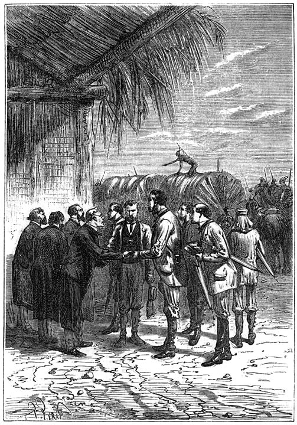
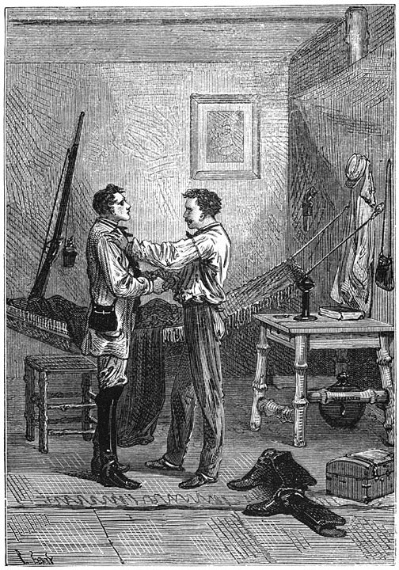
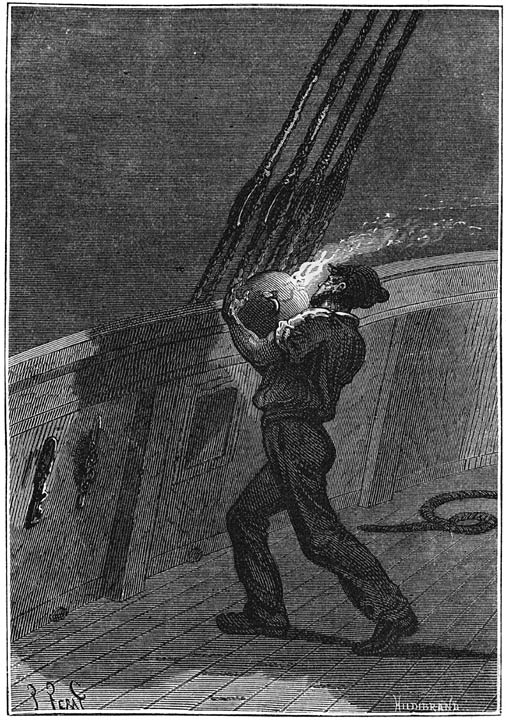

Avonturen
van
drie Russen en drie Engelschen,
Avonturen van drie Russen en drie Engelschen.
[Inhoud]
I.
Aan de oevers van de Oranjerivier.
Den 27sten Februari 1854 lagen twee mannen aan den voet van een ontzaglijken treurwilg met elkander te praten en keken van tijd tot tijd met de grootste oplettendheid naar den stroom. Deze rivier, door de Hollanders Groote Rivier, door de Hottentotten Gariep genaamd, kan wedijveren met de drie groote slagaderen van Afrika, namelijk den Nijl, den Niger en den Zambese; evenals deze treedt zij buiten hare oevers en heeft snelle stroomingen en watervallen. Eenige reizigers, wier namen langs een gedeelte van den stroom wel bekend zijn, als Thompson, Alexander, Burchell hebben als om strijd de helderheid van het water en de schoonheid van de oevers geprezen.
Op deze plaats leverde de Oranjerivier, die zich met een bocht naar de bergen van den hertog van York wendde, een verheven schouwspel op. Onbeklimbare rotsen, indrukwekkende gevaarten van steenen en van door ouderdom versteende boomen, diepe holen, ondoordringbare wouden, die de bijl van den volkplanter nog niet geschonden had, dat alles te zamen aan de achterzijde omlijst door de Gariep-bergen, vormde een landschap van onbegrijpelijke pracht. Daar stortte het water van de rivier plotseling van eene hoogte van vier honderd voet naar beneden, nadat de stroom eerst door eene te nauwe bedding had moeten dringen, en dan eensklaps geen grond meer onder zich had. Stroomopwaarts van den val was het slechts een geborrel van de wateroppervlakte, die hier en daar gebroken werd door eenige met groen omkranste rotspunten. Stroomafwaarts was slechts een woeste kolk van onstuimige golven te zien, waarboven zich een dikke nevel van vochtige dampen verhief, en waarin al de kleuren van den regenboog zich afspiegelden. Uit dezen afgrond hoorde men een oorverdoovend geklater, dat door de echo’s in de vallei duizendvoudig weerkaatst werd.
Een van de beide mannen, die zeker door het toeval eener ontdekkingsreis in dit gedeelte van zuidelijk Afrika bij elkander waren gebracht, lette ter nauwernood op de schoonheid, welke de natuur voor zijn oog ontrolde. Deze onverschillige reiziger was een Boschjesman, een jager, een schoon type van dat krachtige [2]menschenras met levendige oogen en snelle gebaren, dat een zwervend leven in de bosschen leidt. De naam van Boschjesmannen wordt gegeven aan de zwervende stammen, die door de ten noordwesten van de Kaapkolonie gelegene landstreek rondtrekken. Geen enkele stam van deze Boschjesmannen heeft eene vaste woonplaats. Zij brengen hun leven door met rond te zwerven door de landstreek, gelegen tusschen de Oranjerivier en de Westersche bergen, met pachthoeven te plunderen en den oogst te verwoesten van die heerschzuchtige kolonisten, die hen terug hebben gedrongen naar de onvruchtbare streken van het binnenland, waar meer steenen dan planten gevonden worden.
Deze Boschjesman was ongeveer veertig jaar oud, groot van gestalte, en bezat blijkbaar groote spierkracht. Zelfs als hij op den grond lag, toonde zijne houding krachtige werkzaamheid; de gepastheid, gemakkelijkheid en vrijheid van beweging waren die van een krachtig man, eene soort van persoonlijkheid gevormd als de helden der Canadasche prairiën, maar misschien met minder kalmte dan de geliefkoosde jagersfiguren van Fennimore Cooper. Dit kon men zien aan het vluchtig rood, dat zijne kaken kleurde, als het snelle kloppen van zijn hart hem een blos op het aangezicht joeg. De Boschjesman was geen wilde meer zooals zijne stamgenooten, de vroegere Saqua’s. Uit een Engelschen vader en eene Hottentotsche moeder geboren, had deze mesties door zijn omgang met vreemdelingen meer gewonnen dan verloren, en sprak vaardig Engelsch. Zijn half Hottentotsche, half Europeesche kleeding bestond uit een rood flanellen hemd, een overrok en broek van eene antilopenhuid en beenstukken, die van de huid eener wilde kat gemaakt waren. Om zijn hals hing een kleine zak, waarin een mes, eene pijp en tabak geborgen waren. Hij had een soort van kalotje van schapenvel op zijn hoofd. Eene breede riem van onbereid leder diende hem tot gordel. Om zijne bloote armen had hij ivoren ringen, welke zeer kunstig vervaardigd waren. Om zijne schouders hing een mantel van tijgervel gemaakt, welke tot aan zijne knieën reikte. Een hond van inlandsch ras sliep naast hem. De Boschjesman deed snelle halen aan een beenen pijpje, en gaf ondubbelzinnige blijken van ongeduld.
»Kom, wees bedaard, Mokum,” zeide de ander. »Ge zijt waarachtig de ongeduldigste mensch van de wereld als ge niet op jacht zijt! Maar begrijp toch, mijn wakkere reiskameraad, dat wij er niets aan kunnen veranderen. Zij, die we wachten, zullen vroeg of laat wel komen, en als het van daag niet is, zal ’t morgen wel zijn!”
De makker van den Boschjesman was een jonkman van vijf- of zesentwintig jaar, die een scherp kontrast met den jager vormde. Zijn bedaard karakter was in al zijne handelingen zichtbaar. Wat zijn afkomst betreft, daaromtrent zou niemand eenigen twijfel gekoesterd hebben: het was een Engelschman. Zijne al te »burgerlijke” kleeding [3]bewees dat reizen hem vreemd was; hij zag er uit als een beambte, die in eene vreemde streek verdwaald was, en onwillekeurig zou men gekeken hebben of hij geen pen achter het oor had, evenals kassiers, kommiezen, rekenaars en andere verscheidenheden van het uitgebreide ras der bureaukraten.
Deze jonkman was dan ook geen reiziger, maar een bekend geleerde, William Emery, een sterrekundige, die geplaatst was aan de sterrewacht in de Kaapstad, eene zeer nuttige instelling, die sedert lang reeds gewichtige diensten aan de wetenschap bewezen had.
Deze geleerde, die zich een weinig vreemd gevoelde te midden van deze woeste streek van zuidelijk Afrika, op eenige honderden mijlen van de Kaapstad, bedwong slechts met moeite het natuurlijke ongeduld van zijn makker.
»Mijnheer Emery,” antwoordde de jager in goed Engelsch, »we zijn nu reeds acht dagen op deze plek aan de Oranjerivier bij den waterval van Morgheda; dit is iets wat in jaren niet gebeurd is met eenig lid van mijn stam, om acht dagen op dezelfde plaats te blijven! U vergeet dat we zwervers zijn, en dat ons de voeten beginnen te jeuken als we zóólang stil moeten blijven.”
»Zij, die we wachten, vriend Mokum,” hernam de astronoom, »komen uit Engeland; we mogen hun dus wel acht dagen uitstel geven. Men moet denken aan den langen duur der reis, aan het oponthoud, dat zij met hunne stoomboot bij het opwaartsstoomen van deze rivier kunnen ondervinden, in één woord aan de duizenderlei moeielijkheden, die aan eene dergelijke onderneming verbonden zijn. Men heeft ons gezegd alles voor een onderzoekingstocht in zuidelijk Afrika gereed te maken, en als dit in orde was, hier aan den waterval van Morgheda mijn ambtgenoot, den kolonel Everest van de sterrewacht te Cambridge, op te wachten. Hier zijn we aan den waterval, op de aangewezen plek, en we wachten. Wat wilt ge meer, wakkere Boschjesman?”
De jager wilde zonder twijfel nog meer, want hij greep telkens koortsachtig naar den haan van zijne buks, een juistheidswapen, waarmede men met een puntkogel op acht tot negenhonderd meter afstand een wilde kat of een antilope kon neêrschieten. Men ziet dat de Boschjesman den boog en de vergiftige pijlen van zijne landslieden had laten varen om Europeesche wapens te gebruiken.
»Maar hebt ge u niet vergist, mijnheer Emery,” hernam Mokum. »Heeft men u den waterval van Morgheda tegen het einde van de maand Januari wel als verzamelplaats opgegeven?”
»Welzeker, mijn vriend,” antwoordde William Emery, »en hier is de brief van den heer Airy, den directeur van het observatorium te Greenwich, welke u zal bewijzen, dat ik mij niet bedrogen heb.”
De Boschjesman nam den brief, dien zijn reisgezel hem aanbood. Hij draaide dien om en om als iemand die in de schrijfkunst al [4]heel weinig ervaren is; daarop gaf hij dien aan Emery terug en zeide: »Herhaal me nog maar eens wat dit bekrabbelde stukje papier ons vertelt.”
De jonge geleerde, die een onuitputtelijk geduld bezat, begon voor de twintigste maal het verhaal weder dat hij reeds zoo dikwijls aan den jager gedaan had. In de laatste dagen van het vorige jaar had William Emery een brief ontvangen, die hem de spoedige komst meldde van kolonel Everest en van eene wetenschappelijke internationale commissie, die naar zuidelijk Afrika bestemd was. Welke waren de plannen van deze commissie, waarom ging zij naar het uiteinde van het Afrikaansche vasteland? Emery kon het niet zeggen, daar de brief van den heer Airy op dat punt het stilzwijgen bewaarde. Volgens de ontvangen opgaven had hij zich gehaast om te Lattakou, een van de noordelijkste stations in het land der Hottentotten, wagens, levensmiddelen, in één woord al wat er tot onderhoud van een karavaan van Boschjesmannen noodig was, bijeen te brengen. Daarna bood hij het bevel over den tocht aan den inlandschen jager Mokum aan, dien hij bij geruchte kende, die Anderson vergezeld had op zijne jachten in westelijk Afrika, en Livingstone bij zijn eersten tocht naar het meer Ngami en naar den waterval van den Zambese.
Toen dit alles in orde was, kwam men overeen dat de Boschjesman die de streek uitstekend kende, William Emery naar de oevers van de Oranjerivier en naar den waterval van Morgheda, de aangewezen plaats, zoude geleiden. Daar moesten zij de wetenschappelijke commissie afwachten. Deze commissie had zich ingescheept op het fregat Augusta van de Britsche marine, en zou naar de monding der Oranjerivier op Afrika’s westkust op de hoogte van kaap Volpas gaan, om van daar de rivier tot aan den waterval op te stoomen. William Emery en Mokum waren derhalve met een wagen gekomen, welken zij in de vallei gelaten hadden, en die dienen moest om de reizigers en hunne goederen naar Lattakou te brengen, als zij niet liever langs de Oranjerivier en hare zijtakken naar die plaats wilden reizen, na eerst door een omweg van eenige mijlen hunne goederen aan de andere zijde van den waterval te hebben laten brengen.
Mokum en zijn reismakker hielden het oog op het watervlak gericht. (Blz. 4.)
Toen dit verhaal geëindigd en ditmaal goed in het geheugen van den Boschjesman geprent was, ging deze naar den rand van den afgrond, waarin het schuimende rivierwater zich met groot geweld nederstort; de astronoom volgde hem; daar kon men van eene vooruitstekende punt den loop der Oranjerivier beneden den waterval tot op een afstand van verscheidene mijlen afzien. Gedurende eenige minuten beschouwden Mokum en zijn reismakker zeer nauwkeurig het watervlak, dat op een vierde mijl beneden den waterval weder tot kalmte was gekomen. Geen enkel voorwerp, geen schip of boot deed het water rimpelen. Het was toen drie uren. De maand Januari [5]komt hier overeen met de maand Juli in noordelijker streken, en de zon, die op den 29sten parallel hier bijna loodrechte stralen werpt, gaf eene warmte van 105° F. in de schaduw. Zonder een [6]westenwindje dat de warmte eenigszins matigde, zou deze temperatuur onuitstaanbaar zijn geweest voor iedereen, behalve voor een Boschjesman. Evenwel leed de jeugdige geleerde, die een droog gestel had en zeer mager was, er niet al te zeer door. Bovendien beschutte het dicht gebladerte der boomen, die over den afgrond hingen, hem voor de onmiddellijke hitte der zonnestralen. Geen vogel verlevendigde deze eenzaamheid op het warmste gedeelte van den dag. Geen viervoetig dier verliet zijne frissche schuilplaats onder de struiken of waagde zich op de open plaatsen van het bosch. Op deze eenzame plek zou men geen geluid gehoord hebben, als de waterval de lucht niet met zijn geraas vervuld had.
Na tien minuten te hebben uitgekeken, keerde Mokum zich naar William Emery en stampte ongeduldig met den voet op den grond: zijne scherpziende oogen hadden niets ontdekt.
»En als ze niet komen?” vroeg de Boschjesman.
»Zij zullen komen, wakkere jager,” antwoordde William Emery. »Het zijn mannen, die hun woord houden, en ze zullen nauwkeurig zijn, zooals het sterrekundigen betaamt. Bovendien wat verwijt ge hen? De brief kondigt hun komst aan tegen het einde van Januari. We hebben van daag den 27sten, ze hebben dus nog recht op vier dagen, vóórdat ze den waterval bereiken.”
»En zoo ze na verloop van die vier dagen niet verschenen zijn?” vroeg de Boschjesman.
»Welnu! dan zullen we gelegenheid hebben om ons geduld te oefenen, want we zullen hen wachten tot op het oogenblik waarop het mij deugdelijk bewezen is dat ze niet meer komen!”
»Bij god Kô!” riep de Boschjesman met luider stem, »gij zijt er juist de man naar om te wachten totdat de Gariep haar onstuimige wateren niet meer in dezen afgrond doet vallen!”
»Neen, jager, neen,” antwoordde William Emery, altijd bedaard. »Het verstand moet al onze daden besturen; en wat zegt nu ons verstand? Indien de kolonel Everest en zijne makkers door eene moeilijke reis afgemat, en misschien gebrek hebbende aan het noodige, verdwaald waren in deze eenzame streek en ons op de afgesproken plaats niet vonden, dan zouden we in alle opzichten te laken zijn. Als er een ongeluk gebeurde, zou met recht alle verantwoording op ons vallen. Wij moeten dus op onzen post blijven, zoolang onze plicht ons dit voorschrijft. Bovendien hebben we hier aan niets gebrek. Onze wagen wacht ons in de vallei en biedt ons eene veilige wijkplaats voor den nacht aan; we hebben overvloed van levensmiddelen; de natuur is hier prachtig en der bewondering wel waardig! Het is voor mij een onbekend genot om eenige dagen in deze prachtige wouden, aan de oevers van deze onvergelijkelijk schoone rivier door te brengen! Wat u aangaat, Mokum, wat kunt ge meer verlangen? Viervoetig en gevederd wild is in overvloed in [7]deze wouden voorhanden, en uw geweer verschaft ons elken dag ons wildbraad. Jaag dus maar, wakkere jager, en maak uw tijd kort door op herten en buffels te schieten. Komaan, mijn dappere Boschjesman, ga uw gang maar; in dien tijd zal ik hier op de talmers wachten, en uwe voeten zullen dan ten minste geen gevaar loopen hier vast te wortelen!”
De jager begreep dat de raad van den sterrekundige goed was. Hij besloot dus om gedurende eenige uren het struikgewas en de kreupelbossen in den omtrek af te jagen. Leeuwen, hyena’s of luipaarden zouden een Nimrod zooals hij was, niet in verlegenheid brengen, gewoon als hij was aan het jagen in de Afrikaansche wouden. Hij floot zijn hond Top, een soort van hyenahond uit de woestijn Kalahari, afstammende van het ras dat de Balaba’s eertijds voor de drijfjacht africhtten. Het slimme dier dat even ongeduldig als zijn meester scheen te zijn, sprong op, en gaf door een vroolijk geblaf zijne vreugde te kennen over het voornemen van den Boschjesman. De jager was met zijn hond weldra in het dichtste van het bosch achter den waterval verdwenen.
Toen William Emery alléén was, strekte hij zich aan den voet van den wilg uit, en hopende in te kunnen slapen door den invloed der warmte, overdacht hij zijn tegenwoordigen toestand. Hij lag daar ver van alle bewoonde streken bij den stroom der Oranjerivier, die nog zoo weinig bekend was. Hij wachtte Europeanen, landgenooten, die hun land verlieten om de gevaren van een verren tocht te gemoet te gaan. Maar wat was dan het doel van den tocht? Welk wetenschappelijk raadsel wilde men in de woestijnen van zuidelijk Afrika zoeken op te lossen? Welke waarnemingen wilde men op de hoogte van 30° Z. B. beproeven? Dit was het juist wat de brief van den heer Airy, directeur van het observatorium te Greenwich, niet vermeldde. Aan Emery vroeg men hulp als aan een geleerde, die reeds gewend was aan het zuidelijk klimaat, en omdat men waarschijnlijk een wetenschappelijken arbeid op het oog had, was zijne medewerking voor zijne ambtgenooten uit het Vereenigde koninkrijk van hooge waarde.
Terwijl de jonge astronoom over al die zaken lag na te denken, en zich zelven honderden vragen deed, waarop hij het antwoord moest schuldig blijven, voelde hij dat zijne oogleden zwaar werden, en viel hij in diepen slaap. Toen hij ontwaakte was de zon reeds verdwenen achter de westelijke heuvels, welker rand zich scherp afteekenden tegen den als in vuur staanden gezichteinder. Zijne maag waarschuwde hem dat de tijd voor het avondmaal naderde; het was toch zes uren ’s avonds, en het oogenblik brak aan, waarop men den wagen in de vallei weder moest opzoeken. Juist op dat oogenblik knalde er een schot in een boschje van bloeiende heesters, dat ter hoogte van twaalf tot vijftien voet aan de rechterhand de helling der [8]heuvels bedekte. Bijna op hetzelfde oogenblik verschenen de Boschjesman en Top aan den rand van het bosch. Mokum sleepte een stuk wild mede, dat hij juist neêrgeschoten had.
»Kom proviandmeester,” riep Emery. »Wat brengt ge voor ons souper mede?”
»Een springbok, mijnheer William,” antwoordde de jager, en wierp een dier voor den grond, welks horens als die eener lier gebogen waren.
Het was een soort van antilope, evenwel meer onder den naam van springbok bekend, dien men veel in allerlei streken van zuidelijk Afrika aantreft. Het zijn bevallige dieren met kaneelkleurigen rug, van boven bedekt met zijdeachtig haar van schitterend witte kleur en met kastanjebruine ronde vlekken op den buik. Het vleesch, dat uitmuntend is om te eten, werd voor het avondmaal bestemd.
De jager en de astronoom staken een stok door de samengebonden pooten van het dier en laadden het op hunne schouders; zij verlieten den waterval en kwamen een halfuur daarna aan hun kamp in de vallei, waar de wagen door twee Boschjesmannen bewaakt werd.
[Inhoud]
II.
Officieele voorstelling.
Gedurende 28, 29 en 30 Januari verlieten Emery en Mokum de plaats der samenkomst niet. Terwijl de Boschjesman als een hartstochtelijk jager onverschillig wild en wilde dieren vervolgde door al de bij den waterval gelegen bosschen, bleef de astronoom den loop der rivier waarnemen. De grootsche en woeste natuur bracht hem in verrukking en overstelpte zijn ziel met nieuwe aandoeningen. Hij, de man van cijfers, de geleerde, die steeds over zijne registers gebogen zat, nacht en dag het oog voor den kijker had, die den doorgang der hemellichamen door den meridiaan waarnam, of de eklipsen der sterren berekende, ademde nu met volle teugen de versche lucht in bijna ontoegankelijke wouden in, welke zich uitstrekten langs de helling der heuvels en op de woeste bergtoppen, die door de opstijgende waterkolommen van den waterval van Morgheda met een vochtig stof bedekt werden. Het was een waar genot voor hem om door te dringen in al het dichterlijke van deze uitgestrekte voor den mensch bijna onbekende eenzaamheid, en er zijn door wiskundige berekeningen vermoeiden geest op te frisschen. Hij [9]doodde op die wijze de verveling van het wachten, en verkwikte zich naar geest en lichaam. De nieuwheid van zijn toestand verklaarde zijn onverstoorbaar geduld, dat de Boschjesman niet deelde. Daarom [10]had ook de jager altijd dezelfde klachten, de geleerde dezelfde kalme antwoorden, waardoor de zenuwachtige Mokum evenwel in ’t geheel niet kalmer werd.
»Er is daar een geraas ….” (Blz. 12.)
Eindelijk kwam de 31ste Januari, de laatste dag van het in den brief van den heer Airy bepaalde tijdstip. Als de aangekondigde geleerden dien dag niet verschenen, zou William Emery verplicht zijn een besluit te nemen, iets wat hem in groote verlegenheid bracht. Het uitblijven kon wel eeuwig duren, en moest men dan eeuwig blijven wachten?
»Mijnheer William,” zeide de jager, »waarom zouden we de vreemdelingen niet te gemoet gaan? We kunnen hen niet misloopen. Er is slechts één weg langs de rivier, en indien zij die opkomen, zooals uw stukje papier vertelt, dan zullen we ze ongetwijfeld ontmoeten.”
»Ge hebt daar een uitmuntend denkbeeld, Mokum,” antwoordde de sterrekundige. »Laten we stroomafwaarts beneden den waterval eens op verkenning uitgaan. We kunnen altijd door de valleien aan de zuidzijde naar ons kamp terug keeren. Maar zeg me eens, brave Boschjesman, kent ge den loop der Oranjerivier over een groote uitgestrektheid?”
»Ja, mijnheer,” antwoordde de jager, »ik ben haar tweemalen opgevaren van kaap Volpas, tot aan haar samenvloeiing met de Hart aan de grenzen der Transvaalrepubliek.”
»En is die stroom overal bevaarbaar, behalve bij dezen waterval?”
»Het is zooals u zegt, mijnheer,” hervatte de Boschjesman. »Ik moet er evenwel bijvoegen dat de Oranjerivier op het einde van het drooge jaargetijde tot op vijf of zes mijlen van haar monding bijna geheel zonder water is. Dan wordt er een bank gevormd, waarop de uit het westen komende golven met geweld breken.”
»Dat doet er weinig toe,” antwoordde de astronoom, »omdat op het oogenblik dat onze Europeanen de monding der rivier bereikten, deze bevaarbaar was. Er bestaat dus geen reden voor hun uitblijven, en derhalve …. zullen ze komen.”
De Boschjesman antwoordde niet: hij legde zijn geweer over den schouder, floot Top en ging zijn makker voor op het smalle voetpad, dat vierhonderd voet lager weder bij de rivier beneden den waterval uitkwam. Het was toen negen uren in den morgen. De twee landonderzoekers (men zou hun inderdaad dien naam wel kunnen geven) gingen langs den linkeroever stroomafwaarts. De weg was ver van effen of gemakkelijk zooals op een dijk of langs een jaagpad. De steile oevers van de rivier vol struikgewas, verdwenen onder eene menigte planten van verschillenden aard. Slingers van de draadvormige Cynanchum, reeds door Burchell vermeld, waren kruiselings van boom tot boom gespannen en sloten somwijlen het pad der reizigers als met een groen net af. Ook was het mes van den Boschjesman [11]voortdurend werkzaam. Hij sneed onmeedoogend die hinderlijke guirlandes door. William Emery ademde met volle teugen de heerlijke geuren van het woud in, waaronder vooral kamfergeur merkbaar was, die uit de ontelbare bloemen der diosmeeën, opsteeg. Gelukkig konden de jager en zijn makker spoediger naar het westen komen door eenige open plekken in het bosch, en langs gedeelten van den naakten en steilen oever, waarlangs het vischrijke water kalm heenstroomde. Om elf uur des morgens hadden zij een afstand van ongeveer vier kilometers afgelegd.
De wind was west; zij woei dus naar den kant van den waterval, welks geraas op dien afstand niet gehoord kon worden. Het geraas daarentegen dat stroomafwaarts gehoord werd, was zeer duidelijk. William Emery en de jager bleven op deze plek halt houden; zij zagen den loop der rivier, die zich twee of drie mijlen ver in eene rechte lijn voor hen uitstrekte. De stroom was nauw ingesloten tusschen steile, twee honderd voet hooge krijtrotsen.
»Laat ons hier wachten,” zeide de astronoom, »en uitrusten. Ik heb uwe jagersbeenen niet, Mokum, en ik ben meer gewoon om in den sterrenhemel rond te wandelen dan op de wegen hier op aarde. Laten we dus hier uitrusten; van hier kunnen we twee of drie kilometers van de rivier afzien en zoodra de stoomboot zich slechts aan gindsche bocht vertoont, moeten we haar zien.”
De jonge astronoom vleide zich neder aan den voet van een reusachtige euphorbia, waarvan de top zich veertig voet hoog verhief. Van daar kon hij ver over de rivier zien. De jager, die aan zitten weinig gewoon was, bleef op den oever heen en weer loopen, terwijl Top geheele vluchten wilde vogels opjoeg, die de opmerkzaamheid van zijn meester niet eens tot zich trokken.
De Boschjesman en zijn makker waren hier nauwelijks een half uur, toen William Emery zag dat Mokum, die een honderdtal schreden van hem afstond, meer bijzondere teekenen van opmerkzaamheid begon te geven. Had de Boschjesman eindelijk de zoo ongeduldig verwachte boot gezien?
De astronoom verliet zijne rustplaats in het mos, en ging naar den oever, waar de jager stond; binnen weinige oogenblikken was hij bij hem.
»Ziet gij iets Mokum?” vroeg hij aan den Boschjesman.
»Niets, ik zie niets, mijnheer William,” antwoordde de jager, »maar daar alle geluiden in de natuur mij zeer gewoon zijn, schijnt het mij nu toe dat ik stroomafwaarts een ongewoon gebrom hoor.”
Toen de Boschjesman dit gezegd had, wenkte hij zijn makker om stil te zijn, legde zich met het oor op den grond, en luisterde met de uiterste opmerkzaamheid. Na verloop van eenige minuten richtte hij zich op, schudde het hoofd en zeide: »Ik zal mij bedrogen hebben. Het geraas dat ik meende te hooren is misschien niets anders [12]dan het ruischen van den wind door het gebladerte, of het kabbelen van het water over de steenen in de rivier. En toch ….”
De jager luisterde nog eens met groote opmerkzaamheid, maar hij hoorde niets.
»Mokum,” zeide Emery, »als het geraas, dat ge meendet te hooren door de stoomsloep wordt veroorzaakt, zult ge ’t beter hooren als ge u tot op het watervlak kondt bukken. Het water brengt de geluiden met meer juistheid over dan de lucht.”
»U hebt gelijk, mijnheer William,” antwoordde de jager »en meer dan eens heb ik op die wijze een nijlpaard in het water betrapt.”
De Boschjesman daalde nu van den steilen oever naar beneden, terwijl hij zich aan slinger- en grasplanten vastklampte. Toen hij bij het water was, liep hij tot aan de knieën er in, en bukte zich met het oor tot aan het watervlak.
»Ja!” riep hij na eenige oogenblikken, »ja! ik had me niet bedrogen. Eenige kilometers stroomafwaarts is er een geraas alsof het water met geweld geslagen wordt. Het is een eentonig en aanhoudend geklots dat ik beneden op den stroom hoor.”
»Het geraas van een schroef?” antwoordde de astronoom.
»Waarschijnlijk, mijnheer Emery. Zij, die we wachten zijn niet ver meer verwijderd.”
William Emery, die wist welke fijne zintuigen de jager had, hetzij hij hoorde, zag of rook, twijfelde geen oogenblik aan de bewering van zijn makker. Deze kwam weder op den oever, en beiden besloten om op deze plek te wachten, omdat men van daar den stroom der Oranjerivier gemakkelijk kon overzien.
Er ging een half uur voorbij, waaraan Emery, niettegenstaande zijne natuurlijke bedaardheid, meende dat geen einde zou komen. Hoe dikwijls meende hij den vagen omtrek van een vaartuig te zien, maar zijn gezicht bedroog hem telkens. Eindelijk deed een uitroep van den Boschjesman hem het hart sneller kloppen.
»Rook!” riep Mokum.
Toen William Emery in de door den jager aangeduide richting keek, zag hij niet zonder inspanning een licht rookwolkje, dat aan de bocht van de rivier zichtbaar werd. Men kon niet meer twijfelen.
De boot naderde snel. Weldra kon William den schoorsteen zien, waaruit een wolk van zwarten rook, vermengd met witachtige dampen, opsteeg. De bemanning stookte zeker de vuren flink op om de snelheid te vermeerderen en op den bepaalden dag de aangeduide plaats te bereiken. De boot was nog ongeveer zeven kilometers van den waterval van Morgheda af.
Het was toen twaalf uren. Daar de plek niet geschikt was voor eene landing, besloot de astronoom weder naar den waterval terug te keeren. Hij deelde zijn voornemen aan den jager mede, die slechts antwoordde door den reeds vroeger op den linkeroever der [13]rivier bewandelden weg weder in te slaan. William Emery volgde zijn metgezel, en zich eene laatste maal bij eene bocht der rivier omkeerende, zag hij de Britsche vlag, die achter van het vaartuig woei.
De astronoom en zijn ambtgenoot groetten elkander. (Blz. 14.)
[14]
Spoedig waren zij weder bij den waterval, en om één uur hielden de Boschjesman en de astronoom op ¼ kilometer afstands halt. Daar vormde de oever door eene halfcirkelvormige bocht een inham, waar de stoomboot gemakkelijk kon aanleggen, want het water was tot vlak aan den oever diep genoeg. De boot moest niet ver meer af zijn en zij had zeker op de twee voetgangers gewonnen, hoe snel deze ook geloopen hadden. Men kon haar nog niet zien, want de vorm der oevers, waarop hooge over het water hangende boomen stonden, belette ver te zien. Maar men hoorde zooal niet het gesis van den stoom, toch het doordringend fluiten van de machine, dat boven het onophoudelijk geraas van den waterval uitstak. Dit fluiten hield aan; de bemanning wilde op die manier haar tegenwoordigheid in dezen omtrek doen opmerken; het was eene waarschuwing.
De jager beantwoordde deze door zijn geweer af te schieten, welks losbarsting door de echo der oevers en bosschen honderdvoudig weerkaatst werd. Eindelijk verscheen de boot; William en de Boschjesman werden spoedig door de bemanning bemerkt. Op een teeken van den astronoom zwenkte de boot en kwam aan den oever aanleggen. Een kabel werd uitgeworpen; de Boschjesman ving dien op, en wond hem om een afgebroken boomstam. Aanstonds sprong een man van hooge gestalte op den oever, en kwam naar den astronoom toe, terwijl zijne reisgezellen op hunne beurt landden.
William Emery trad aanstonds op dien man toe, en vroeg »kolonel Everest?”
»Mijnheer William Emery?” antwoordde de kolonel.
De astronoom en zijn ambtgenoot van het observatorium van Cambridge namen de hoeden af en gaven elkander de hand.
»Mijne heeren,” zei daarop de kolonel Everest, »mag ik u mijnheer William Emery voorstellen, van het observatorium in de Kaapstad, die ons tot aan den waterval van Morgheda wel te gemoet is willen komen?”
Vier heeren, die bij kolonel Everest stonden, groetten achtereenvolgens den astronoom, die hen terug groette; daarop stelde de kolonel ze met vólkomen Britsche bedaardheid voor.
»Mijnheer John Murray van Devonshire, uw landgenoot, mijnheer Emery; mijnheer Mathieu Strux van het observatorium van de Pulkowa, mijnheer Nikolaas Palander van het observatorium van Helsingfors, en mijnheer Michel Zorn, van de sterrewacht van Kiew, drie geleerde Russen, die in onze internationale commissie de regeering van den Czaar vertegenwoordigen.” [15]
[Inhoud]
III.
Het vervoer.
Toen men aan elkander was voorgesteld, bood William Emery zijne diensten aan de nieuw aangekomenen aan. In zijne hoedanigheid van eenvoudig astronoom aan de sterrewacht aan de Kaap, was hij eigenlijk ondergeschikt aan kolonel Everest, afgevaardigde van de Engelsche regeering, die met Mathieu Strux het voorzitterschap van de wetenschappelijke commissie deelde. Hij kende hem bovendien als een uitstekend geleerde, die beroemd geworden was door het oplossen van enkele nevelvlekken en door de berekening van het verduisteren van sterren. Deze sterrekundige, die ongeveer vijftig jaar telde, was een koel en afgemeten man, die een leven leidde dat van uur tot uur wiskunstig geregeld was. Niets overkwam hem onverwacht. Zijne nauwkeurigheid in alle dingen evenaarde die waarmede de hemellichamen door den meridiaan gaan. Men kon zeggen dat al zijne levensdaden volgens den chronometer geregeld waren. William Emery wist dit; daarom had hij er nimmer aan getwijfeld dat de wetenschappelijke commissie op den bepaalden dag zou komen. De jonge astronoom wachtte nu dat de kolonel zich zou verklaren ten opzichte van de zending, die hij in zuidelijk Afrika kwam vervullen; maar de kolonel Everest zweeg en William Emery meende dat hij hem hierover niet mocht ondervragen. Het was waarschijnlijk dat naar des kolonels meening het uur waarop hij spreken moest nog niet geslagen was.
William Emery kende evenzeer bij name John Murray, een rijk geleerde, mededinger van James Ross en lord Elgin en die zonder officiëelen titel zijn vaderland door zijn sterrekundigen arbeid eer aandeed. De wetenschap was hem zeer aanzienlijke geldelijke offers verschuldigd; hij had 20000 pond sterling uitgegeven voor de vervaardiging van een reusachtigen spiegelteleskoop, welke met dien van Parson-town kon wedijveren, en waarmede de elementen van een aantal dubbelsterren bepaald waren. Het was een man van hoogstens veertig jaar; hij had het voorkomen van een groot heer, maar zijn onverschillig uiterlijk verraadde geenszins zijn karakter.
Wat de drie Russen aangaat, de heeren Strux, Palander en Zorn, hunne namen waren voor Emery niet nieuw; maar de jonge astronoom kende hen niet persoonlijk. Nikolaas Palander en Michel Zorn toonden zekeren eerbied voor Mathieu Strux, een eerbied, dien zijne betrekking, bij gebreke zelfs van alle verdienste, overigens volkomen rechtvaardigde. [16]
De eenige opmerking, die William Emery maakte, was dat de geleerde Engelschen en Russen in gelijken getale waren, drie van elke natie. Zelfs de bemanning der stoomboot, Queen and Tzar genaamd, bestond uit tien man, waarvan er vijf uit Engeland en vijf uit Rusland geboortig waren.
»Mijnheer Emery,” zeide de kolonel, zoodra men aan elkander was voorgesteld, »nu kennen wij elkander even goed alsof wij samen de reis van Londen naar kaap Volpas gemaakt hadden. Bovendien heb ik voor u een bijzondere achting, welke men u wel verschuldigd is wegens den astronomischen arbeid, die u, hoe jong ook nog, een billijken roem heeft bezorgd. Op mijn verzoek heeft het Engelsche gouvernement u aangewezen om deel te nemen aan het werk, dat wij in zuidelijk Afrika zullen beproeven.”
William Emery boog alsof hij wilde danken, en dacht dat men hem nu eindelijk de beweegreden zoude mededeelen, welk eene wetenschappelijke commissie zelfs naar het zuidelijk halfrond voerde, maar kolonel Everest verklaarde zich daaromtrent niet duidelijker.
»Mijnheer Emery,” hernam de kolonel, »ik wilde u vragen of ge met uwe toebereidselen geheel gereed zijt?”
»Geheel kolonel,” antwoordde de astronoom. »Volgens de opgaven in den brief van mijnheer Airy, heb ik een maand geleden de Kaapstad verlaten, en mij naar het station Lattakou begeven. Daar heb ik al het noodige voor een onderzoekingstocht in de binnenlanden van Afrika bijeengebracht, namelijk levensmiddelen, wagens, paarden en Boschjesmannen. Een geleide van honderd goed gewapende en geoefende mannen, wacht u te Lattakou, en dit zal aangevoerd worden door een behendig en beroemd jager, dien ik u wenschte voor te stellen, namelijk den Boschjesman Mokum.”
»De Boschjesman Mokum!” riep de kolonel Everest uit, als men althans van den kalmen toon, waarop hij dit zeide, zoo spreken mag, »de Boschjesman Mokum! Maar die naam is mij zeer goed bekend.”
»Het is de naam van een behendig en onversaagd Afrikaan,” voegde John Murray er bij, terwijl hij zich naar den jager wendde, die door deze Europeanen, met hun voornaam uiterlijk, in het geheel niet uit het veld geslagen werd.
»De jager Mokum,” zeide William Emery, terwijl hij zijn makker voorstelde.
»Uw naam is in het Britsche koninkrijk zeer goed bekend, Boschjesman,” antwoordde de kolonel. »Ge zijt de vriend van Anderson en de gids van den beroemden David Livingstone geweest, in wiens vriendschap ik eene eer stel. Engeland dankt u door mijn mond, en ik wensch er mijnheer Emery geluk mede, dat hij u als aanvoerder van onze karavaan gekozen heeft. Een jager zooals gij moet een liefhebber zijn van schoone wapenen. Wij hebben daarvan een vrij [17]volledige verzameling, en ik wenschte u te verzoeken om daaruit datgene te kiezen wat u aanstaat; wij weten dat zulk een wapen dan in goede handen is.”
»De jager Mokum,” zeide William Emery. (Blz. 16.)
[18]
Een glimlach van zelfvoldoening vertoonde zich op het gelaat van den Boschjesman. De waardeering zijner verdiensten in Engeland trof hem zonder twijfel, maar zeker minder dan de aanbieding van den kolonel. Hij dankte dus in goed gekozen bewoordingen, en hield zich ter zijde, terwijl het gesprek tusschen William Emery en de Europeanen werd voortgezet.
De jonge astronoom deelde verder de bijzonderheden mede van ’t geen door hem was gereed gemaakt; kolonel Everest scheen daarover zeer tevreden. Het kwam er dus maar op aan ten spoedigste de stad Lattakou te bereiken, want het vertrek van de karavaan moest in de eerste dagen van Maart na het regenseizoen plaats hebben.
»Beslis nu maar kolonel,” zeide William Emery, »op welke wijze u die stad wilt bereiken.”
»Over de Oranjerivier, en een van hare zijtakken, de Kuruman, die langs Lattakou stroomt.”
»Zeer goed,” antwoordde de astronoom, »maar hoe uitstekend uw stoomboot ook zij, hoe snel zij ook kunne vooruitkomen, toch zou zij niet tegen den waterval van Morgheda opstoomen!”
»We zullen dien omgaan, mijnheer Emery,” antwoordde de kolonel. »Na een vervoer van enkele kilometers zullen we de vaart boven den waterval weder kunnen hervatten, en als ik mij niet bedrieg dan is van daar tot Lattakou de stroom goed bevaarbaar voor een vaartuig dat weinig diepgang heeft.”
»Zonder twijfel kolonel,” antwoordde de astronoom, »maar die stoomboot is zóó zwaar, dat ….”
»Mijnheer Emery,” hernam kolonel Everest, »deze boot is een meesterstuk uit de werkplaatsen van Leard en Cie te Liverpool. Men kan haar stuksgewijze uit elkander nemen, en met het uiterste gemak weder in elkander zetten. Een sleutel en eenige schroefbouten zijn voldoende voor een man of wat, die hiermede belast worden. Hebt ge een wagen medegebracht?”
»Ja, kolonel,” antwoordde Emery. »Ons kamp is slechts op een mijl hier van daan.”
»Welnu, dan verzoek ik den Boschjesman den wagen hierheen te laten brengen. Men zal er de stukken der stoomboot en de machine, die ook uit elkander genomen kan worden, op laden, en op die wijze zullen we stroomopwaarts dáár de Oranjerivier weder bereiken, waar zij wederom bevaarbaar wordt.”
De bevelen van kolonel Everest werden uitgevoerd. De Boschjesman verdween weldra in het kreupelhout, nadat hij beloofd had binnen een uur terug te zullen zijn. Gedurende zijne afwezigheid werd de stoomboot schielijk ontladen. Nu was de lading niet aanzienlijk: kisten met natuurkundige instrumenten, eene vrij groote verzameling geweren uit de fabriek van Purdey Moore te Edinburgh, eenige [19]flesschen brandewijn, vaatjes gedroogd vleesch, kistjes met patronen, reistasschen, die slechts het hoogst noodige bevatten, tentzeilen en alles wat daarbij noodig was, een sloep van gutta percha, die zorgvuldig was samengepakt, en niet meer plaats besloeg dan een goed in elkander geriemde reisdeken, eenige legeringbehoeften, enz. en eindelijk een soort van waaiervormige mitrailleuse, een wapen dat nog verre van volmaakt was, maar toch de nadering der stoomboot zeer gevaarlijk maken moest voor elk soort van vijand.
Al deze voorwerpen werden op de landingsplaats nedergelegd. De machine van acht paardekracht van 210 kg. was in drie deelen afgedeeld: de ketel met de stookplaats, de machine zelve, die door middel van een eenvoudigen sleutel van den ketel kon worden losgeschroefd, en de schroef die aan den achtersteven bevestigd was. Toen deze deelen, het een na het ander waren weggenomen, was de boot geheel ledig. Deze werd, behalve de ruimte voor de machine en den voorraad, verdeeld in twee afdeelingen, waarvan de voorste voor de bemanning, de achterste voor den kolonel en zijne reisgezellen bestemd was. In een oogwenk verdwenen de tusschenschotten, koffers en bedden werden weggenomen, en de stoomboot was toen niet meer dan een eenvoudige romp.
Deze romp, die 35 voet lang was, bestond uit drie deelen, evenals de Mâ-Robert, waarvan Livingstone zich bij zijne eerste reis op de Zambese bediende. Hij was van gegalvaniseerd ijzer gemaakt, en dus tegelijk licht en sterk. De platen waren met schroefbouten op een geraamte van hetzelfde metaal vastgeschroefd, waardoor zij vast op elkander zaten en dus de romp goed dicht was.
William Emery was verbaasd over het eenvoudige van het werk, en de snelheid, waarmede het geschiedde. De wagen was nog geen uur geleden met den jager en zijne twee Boschjesmannen aangekomen toen de stoomboot reeds ter oplading gereed lag.
Deze wagen van de eenvoudigste soort, rustte op vier massieve raderen, die twee aan twee op twintig voet afstand van elkander stonden. Het was vanwege zijne lengte eene ware Amerikaansche kar. Dit zware voertuig waarvan de assen kraakten, en de stootplank wel een voet buiten de raderen uitstak, werd door zes tamme buffels getrokken, die twee aan twee aan elkander gekoppeld en zeer gevoelig waren voor de zweep van den voerman. Men had niets minder dan zulke zwaren dieren noodig om het voertuig in beweging te brengen, als het met zijn volle vracht beladen was. Niettegenstaande de behendigheid van den voerman moest het meer dan eens in den modder blijven steken.
De bemanning van de Queen and Tzar belaadde den wagen zóó, dat deze aan alle kanten in evenwicht was. Men kent de spreekwoordelijke behendigheid van zeelieden. Het laden van dien wagen was voor die flinke mannen slechts eene kleinigheid. De groote stukken [20]der stoomboot lagen onmiddellijk boven de assen op het sterkste gedeelte van den wagen. Daar tusschen vonden kisten, koffers, vaatjes, lichtere of meer breekbare stukken gemakkelijk plaats. Wat de reizigers zelve betrof, een tocht van vier kilometers was voor hen slechts eene wandeling.
Om drie uren des namiddags was het opladen geheel afgeloopen en gaf kolonel Everest het teeken om te vertrekken. Zijne makkers en hij maakten onder geleide van Emery de voorhoede uit. De Boschjesmannen, de bemanning der boot en de geleiders van den wagen volgden wat langzamer.
De tocht had zonder inspanning plaats. De zachte helling, die naar het hooger gedeelte van den stroom der Oranjerivier leidde, maakte den weg gemakkelijk, hoewel veel langer. Het was eene gelukkige omstandigheid voor den zwaar beladen wagen, die, hoewel wat langzamer des te zekerder het doel zou bereiken.
Wat de leden der wetenschappelijke commissie betreft, deze beklommen gemakkelijk de andere zijde des heuvels. Zij voerden een algemeen gesprek, maar er was in het geheel geen sprake van het doel der onderneming. Deze Europeanen bewonderden zeer de grootsche landschappen, die zich voor hun oog ontrolden. Deze trotsche natuur, zoo schoon in hare woestheid, bekoorde hen, zooals zij den jongen astronoom reeds vroeger bekoord had. Hunne reis had hen nog niet zoodanig verwend dat zij blind waren voor de natuurlijke schoonheid van deze Afrikaansche wereld. Zij bewonderden, maar met eene weinig merkbare bewondering, zooals Engelschen gewoonlijk doen omdat zij alles haten wat onbehoorlijk schijnt. De waterval werd eenigermate, maar op fatsoenlijke wijze door hen geprezen, slechts even misschien, doch merkbaar genoeg. Het »nil admirari” scheen nog niet geheel hunne zinspreuk te zijn.
Bovendien meende William Emery zijne gasten in zuidelijk Afrika naar behooren te moeten ontvangen; hij was t’ huis, en evenals zekere al te opgetogen menschen, schonk hij hun geene enkele bijzonderheid van zijn Afrikaansch park.
Tegen half vier was men aan de andere zijde van den waterval gekomen. Toen de Europeesche reizigers op het plateau waren aangekomen, zagen zij het bovenste gedeelte van den stroom zich voor hunne blikken ontrollen. Zij vleiden zich aan den oever neder en wachtten de komst van den wagen af. Tegen vijf uren verscheen het voertuig op den top des heuvels. De reis was gelukkig volbracht. Kolonel Everest liet dadelijk alles ontladen terwijl hij bepaalde dat men den volgenden morgen bij het aanbreken van den dag zou vertrekken.
Al deze voorwerpen werden op de landingsplaats nedergelegd. (Blz. 19.)
De geheele nacht werd voor verschillende werkzaamheden gebruikt. In minder dan een uur was de romp van de boot weder in elkander; de machine voor de schroef werd weder op hare plaats vastgemaakt, [21]de metalen schotten tusschen de verschillende afdeelingen van het vaartuig werden in elkander geschroefd, het ruim in orde gebracht en alle bagage weder ingescheept. Dit alles geschiedde naar [22]de gegeven bevelen, en was een goed bewijs voor de geschiktheid der bemanning van de Queen and Tzar. De Engelsche en Russische matrozen waren uitgezochte mannen op wie men gerust rekenen kon.
Den volgenden dag, 1 Febr., was de stoomboot bij het aanbreken van den dag gereed om de reizigers te ontvangen. Reeds kronkelde de zwarte rook uit den schoorsteen, en de machinist vermeerderde zooveel mogelijk de drukking. Het was eene machine van hooge drukking zonder condensie, zoodat zij bij elken zuigerslag stoom liet ontsnappen evenals zulks bij locomotieven het geval is. Wat den ketel aangaat, deze was van goed geplaatste fornuizen voorzien, waardoor een zoo groot mogelijk oppervlak des ketels aan de hitte was blootgesteld. Door deze inrichting had men in een half uur stoom genoeg. Men had een goeden voorraad ebbenhout en pokhout ingeladen, omdat dit overvloedig in den omtrek groeide, en stookte de vuren met dit kostbare hout zoo hard mogelijk op.
Om zes uren ’s morgens gaf de kolonel het teeken tot het vertrek. Passagiers en bemanning scheepten zich in; de jager, die op de rivier bekend was, volgde hen aan boord en liet aan de twee Boschjesmannen de zorg over om den wagen naar Lattakou terug te brengen.
Op het oogenblik dat men de kabels losmaakte, zeide kolonel Everest tegen den astronoom:
»Zeg eens, mijnheer Emery, u weet toch wat we hier komen doen?”
»Niet het minste, kolonel.”
»Het is toch zeer eenvoudig, mijnheer Emery, we komen een gedeelte van een meridiaan in zuidelijk Afrika meten.”
[Inhoud]
IV.
Iets over den meter.
Men mag veilig aannemen, dat het denkbeeld aan eene algemeen gebruikelijke en onveranderlijke maat, waartoe de natuur zelve den juisten grondslag moest geven, reeds van de oudste tijden af den menschelijken geest heeft bezig gehouden. Het kwam er inderdaad hierbij op aan, dat deze maat altijd nauwkeurig moest teruggevonden kunnen worden, van welke veranderingen of geweldige schokken de aarde ook het tooneel geweest was. De ouden dachten zeker wel [23]zóó, maar zij hadden geene vaste stelregels of werktuigen om met vrij voldoende zekerheid zulk een arbeid uit te voeren.
Het beste middel toch om eene onveranderlijke maat te krijgen, was, om die in overeenstemming te brengen met den aardbol, welks omtrek als onveranderlijk kan beschouwd worden, en bij gevolg om dezen geheelen omtrek of een gedeelte er van met wiskundige zekerheid te meten.
De ouden hadden reeds beproefd om deze maat te bepalen. Volgens sommige geleerden van zijn tijd, beschouwde Aristoteles de stadie of Egyptische elleboog uit den tijd van Sesostris, als het honderdduizendste gedeelte van den afstand tusschen de pool en den evenaar. Eratosthenes berekende in den tijd der Ptolemaeën vrij nauwkeurig de lengte van den graad langs den Nijl tusschen Syene en Alexandrië. Maar Posidonius en Ptolemaeus konden met geene genoegzame nauwkeurigheid de landmeetkundige berekeningen van diezelfde soort, welke zij ondernamen, ten einde brengen. Met hunne opvolgers ging het niet beter.
Het was Picard, die in Frankrijk het allereerst een regelmatig stelsel trachtte in te voeren om den graad te meten, en toen hij in 1669 de lengte van een boog aan den hemel en een op aarde tusschen Parijs en Amiens bepaalde, gaf hij op dat hij eene lengte van 57060 vademen voor een graad gevonden had.
De meting van Picard werd tot Duinkerken en zelfs tot Collioure voortgezet door Dominico Cassini en Lahire in de jaren 1683 tot 1718. In 1739 werd zij door Francesco Cassini en Lacaille tusschen Duinkerken en Perpignan nagerekend. Eindelijk werd de meting van dat gedeelte van dien meridiaan door Michain tot Barcelona in Spanje voortgezet. Toen Michain overleden was (hij stierf ten gevolge van de afmatting door zulk een werk veroorzaakt) werd de meting van den Franschen meridiaan eerst in 1807 door Arago en Biot hervat. Deze twee geleerden zetten de meting voort tot op de Balearische eilanden. De boog strekte zich toen uit van Duinkerken naar Formentera; deze werd middendoor gesneden door de 45ste parallel N. B., die op gelijken afstand van de pool en van den evenaar verwijderd was; en daarom was het om de lengte van een kwart meridiaan te berekenen, niet noodig om de afplatting der aarde in rekening te brengen. Deze berekening gaf 57025 vademen voor de gemiddelde lengte van »een graad” in Frankrijk.
Men ziet dat het tot nog toe meestal Fransche geleerden waren, die zich met deze moeilijke berekeningen hadden bezig gehouden.1 Het was de Constituante, die in 1790 op voorstel van Talleyrand [24]een besluit uitvaardigde waardoor het aan de Academie van wetenschappen werd opgedragen om een onveranderlijk model voor alle maten en gewichten uit te denken. Korten tijd daarop brachten Borda, Lagrange, Laplace, Monge en Condorcet een verslag uit waarbij zij als gewone eenheid van maat voorstelden het tien millioenste deel van het vierde deel van den meridiaan, en als eenheid van gewicht voor alle lichamen het gewicht van zuiver gedistilleerd water, terwijl het tientallig stelsel aangenomen werd om alle maten met elkander in overeenstemming te brengen.
Later werden deze bepalingen van de lengte van een graad op verschillende plaatsen der aarde gemaakt, want daar de aardbol geen spheroïde maar een ellipsoïde was, moesten veelvuldige berekeningen en opmetingen de hoegrootheid van de afplatting aan de polen leeren kennen.
In 1736 maten Maupertuis, Clairaut, Camus, Lemonnier, Outhier en de Zweed Celsius een noordelijken boog in Lapland en vonden 57419 vademen voor de lengte van een graad. In 1745 vonden La Condamine, Bouguer en Godin met medewerking van de Spaansche geleerden Juan en Antonio Ulloa in Peru 56737 vademen voor de lengte van den graad. In 1752 berekende Lacaille de lengte van een graad aan de kaap de Goede Hoop op 57037 vademen. In 1754 vonden de paters Maire en Boscowitch 56973 vademen voor de lengte van een boog tusschen Rome en Rimini. In 1762 en 1763 schatte Beccaria den Pimonteeschen graad op 57468 vademen. In 1768 vonden de sterrekundigen Mason en Dixon in Noord-Amerika op de grenzen van Maryland en Pennsylvanië dat de Amerikaansche graad eene lengte had van 56888 vademen.
In de 19de eeuw werden verschillende bogen gemeten in Bengalen, in Oost-Indië, in Piémont, in Finland, in Kurland, in Hannover, in Oost-Pruisen, in Denemarken, enz.; maar de Engelschen en Russen hielden zich minder ijverig dan andere volken met deze moeielijke berekeningen bezig en de voornaamste geodesische opmeting, die zij bewerkstelligden, had in 1784 plaats onder leiding van den generaal-majoor Roy, die het doel had om de Fransche en Engelsche maten met elkander overeen te brengen. Uit al deze bovenvermelde opmetingen kon men reeds opmaken dat de graad gemiddeld geschat kon worden op 57000 vademen, d. i. 25 kilometer, en als men dit vermenigvuldigde met 360, dan verkreeg men voor den omtrek der aarde eene lengte van 9000 kilometer.
Doch de boven opgegeven cijfers doen zien dat de maten van verschillende gradenbogen op onderscheidene plaatsen op aarde niet met elkander overeen kwamen. Niettemin leidde men uit dit gemiddelde van 57000 vademen, welke men als de lengte van een graad aannam, de waarde van een meter af, en men nam daarvoor het tien millioenste deel van een meridiaan, dat [25]overeen kwam met drie voet elf millimeter en 296/1000 van een millimeter.
De kolonel Everest. (Blz. 26.)
In wezenlijkheid is dit cijfer niet volkomen juist. Nieuwe berekeningen, [26]waarbij men de afplatting aan de polen namelijk 1/299, en niet 1/334, zooals men vroeger meende, in aanmerking nam, geven niet meer 10 millioen meters voor de maat van een vierde gedeelte eens meridiaans, maar wel 10.000.856 meters. Dit verschil van 856 meters is op zulk eene lengte weinig merkbaar; evenwel moet men wiskundig sprekende erkennen, dat de meter, zooals hij aangenomen is, niet juist het tien millioenste deel van een vierde deel eens meridiaans is. Er is eene fout van minstens 2/10000 van een millimeter.
De aldus bepaalde meter werd evenwel niet door alle beschaafde volken aangenomen. België, Spanje, Piémont, Griekenland, Nederland, de oude Spaansche koloniën, de republieken Ecuador, Nieuw-Grenada, Costarica, enz. namen die maat bijna onmiddellijk aan; maar niettegenstaande de voorkeur, die het metrieke stelsel boven alle andere stelsels verdient, heeft Engeland tot nu toe altijd geweigerd het aan te nemen.
Misschien zou dit stelsel, zonder de staatkundige verwikkelingen van het laatst der 18de eeuw, door de bevolking van het vereenigde koninkrijk zijn aangenomen. Toen de Constituante den 8sten Mei 1790 daartoe het besluit nam, werden de Engelsche geleerden van de Royal Society uitgenoodigd om zich bij de Franschen aan te sluiten. Om de juiste maat van den meter te hebben, moest men bepalen of deze tot grondslag zou hebben de lengte van een eenvoudigen secondeslinger, of dat men als eenheid van lengtemaat een deel van een der groote cirkels zou aannemen. Doch de tijdsomstandigheden verhinderden de voorgenomen vereeniging.
Het was eerst in het jaar 1854 dat Engeland, het voordeel van het metrieke stelsel sedert lang inziende, en bovendien bemerkende dat geleerden en handelaars genootschappen vormden om het ingang te doen vinden, besloot om het aan te nemen.
Maar de Engelsche regeering wilde dit besluit geheim houden tot op het oogenblik dat de nieuwe opmetingen, die men ondernomen had, de lengte van den graad beter zouden doen bepalen. Evenwel meende de Britsche regeering in dat opzicht zich te moeten verstaan met de Russische, die er ook wel toe overhelde om het metrieke stelsel aan te nemen.
Eene commissie van drie Engelsche en drie Russische sterrekundigen werd dus gekozen uit de uitstekendste leden van wetenschappelijke genootschappen. Men heeft gezien dat het voor Engeland waren: kolonel Everest, en de heeren John Murray en William Emery, en voor Rusland de heeren Mathieu Strux, Nikolaas Palander en Michel Zorn.
Deze internationale commissie vergaderde te Londen en besliste dat men eerst een deel van den meridiaan in het zuidelijk halfrond zou meten. Als dit geschied was, zou men hetzelfde in het noordelijk [27]halfrond doen, en uit deze twee opmetingen hoopte men de juiste maat te vinden, die aan alle voorwaarden zou voldoen.
Nu had men nog te kiezen tusschen de verschillende Engelsche bezittingen in het zuidelijk halfrond, nm. de Kaapkolonie, Australië en Nieuw-Zeeland. Nieuw-Zeeland en Australië, die juist aan de andere zijde der aarde als Europa lagen, brachten de commissie in de noodzakelijkheid om eene lange reis te doen. Bovendien konden de Maori’s en de Nieuw-Hollanders, die altijd in oorlog zijn met de indringers, de voorgenomen opmeting zeer bemoeilijken. De Kaapkolonie daarentegen bood wezenlijke voordeelen aan: 1o was zij onder denzelfden meridiaan gelegen als zekere deelen van Europeesch Rusland, en na een boog van den meridiaan in zuidelijk Afrika gemeten te hebben kon men er een op denzelfden meridiaan meten in het gebied van den tsaar, en tevens de opmeting geheim houden; 2o was de reis naar de Engelsche bezittingen in het zuiden van Afrika betrekkelijk kort, en eindelijk 3o zouden de Engelsche en Russische geleerden daar eene uitstekende gelegenheid vinden om den arbeid van den Franschen sterrekundige Lacaille na te gaan, door op dezelfde plaats als hij te werken, en te onderzoeken of hij gelijk had gehad met het cijfer van 57037 vademen op te geven voor de maat van een graad op den meridiaan aan de Kaap de Goede Hoop.
Er werd derhalve beslist dat de geodesische arbeid aan de Kaap ondernomen zou worden. De beide regeeringen keurden de beslissing der Engelsch-Russische commissie goed. Een belangrijk krediet werd geopend. Alle instrumenten, die voor de opmeting noodig waren, werden in dubbelen getale vervaardigd. William Emery werd uitgenoodigd om toebereidselen te maken voor een tocht in de binnenlanden van zuidelijk Afrika. Het fregat Augusta van de koninklijke marine, ontving bevel om de leden der commissie en hun gevolg naar de monding der Oranjerivier over te brengen.
Men mag er wel bijvoegen dat er behalve een wetenschappelijk doel, ook nationale eigenliefde mede gemoeid was, waardoor deze voor een gemeenschappelijken arbeid vereenigde geleerden werden aangevuurd. Het was er inderdaad om te doen om Frankrijk in zijne berekeningen te overtreffen, om den arbeid der beroemdste Fransche sterrekundigen in juistheid te verbeteren, en dat nog wel te midden van eene woeste en bijna onbekende landstreek. Ook waren de leden der Engelsch-Russische commissie besloten om alles, zelfs hun leven op te offeren, ten einde een doel te bereiken dat heilzaam voor de wetenschap en te gelijkertijd roemvol voor hun land zijn zou.
En ziedaar waarom in de laatste dagen van Januari 1854 William Emery zich bij den waterval van Morgheda aan den oever der Oranjerivier bevond. [28]
[Inhoud]
V.
Een Hottentotsch dorp.
De reis op het bovendeel der rivier werd spoedig afgelegd. Evenwel werd het jaargetijde regenachtig; maar de reizigers, die ’t in de kajuit der boot vrij gemakkelijk hadden ingericht, hadden niets te lijden van de stortregens, die in dezen tijd van het jaar hier gewoon waren. De Queen and Tzar vorderde snel. Men ontmoette geen snelle stroomingen of ondiepten, en de stroom was over het algemeen niet sterk genoeg om den gang der boot te vertragen.
De oevers der Oranjerivier boden altijd hetzelfde verrukkelijke schouwspel aan. Bosschen van verschillende boomsoorten volgden elkander op, en een wereld van vogels fladderde daarin rond. Hier en daar stonden groepen boomen van het geslacht der zilverboomen, en vooral de »wagenboom” met roodachtig gemarmerd hout, die er wonderlijk uitzag met zijne donkerblauwachtige bladeren en groote gele bloemen; verder de »zwartebast” met zwarte schors, de »karree” met zijne donkerkleurige altijd groene bladeren. Het kreupelhout strekte zich eenige kilometers ver van de oevers der rivier uit, en overal was deze met treurwilgen langs de kanten bezet. Hier en daar deden zich plotseling uitgestrekte naakte velden aan het oog voor. Het waren groote vlakten met een onnoemelijk aantal kolokwintstruiken begroeid; daar tusschen stond de honigvoortbrengende plant proteus, waaruit geheele zwermen kleine vogels met zacht gekweel opvlogen, die door de kolonisten suikervogels genoemd worden.
De vogelwereld bood groote verscheidenheid aan. De Boschjesman deed ze opmerken aan John Murray, die een groot liefhebber was van allerlei wild. Ook ontstond er een soort van vertrouwelijkheid tusschen den Engelschen jager en Mokum, die volgens de belofte van kolonel Everest van zijn reismakker eene uitmuntende, verdragende buks ten geschenke ontvangen had. Het is onnoodig om de tevredenheid van den Boschjesman te schetsen, nu hij zich in het bezit zag van zulk een prachtig wapen. De twee jagers begrepen elkander goed. Al was hij een uitstekend geleerde, toch ging John Murray voor een van de beste jagers van het oude Caledonië door. Hij hoorde met belangstelling, met een soort van afgunst de verhalen van den Boschjesman aan. Zijne oogen schoten vlammen als de jager hem onder de boomen eenige wilde dieren aanwees, hier giraffen in troepen van vijftien tot twintig, daar buffels van zes voet hoog en den kop met een paar zwarte horens voorzien, wat verder wilde gnoes met een paardestaart, elders troepen caäma’s, eene soort van groote damherten met schitterende oogen en een paar horens, die een dreigenden [29]hoek met elkander maakten, en overal, zoowel in het dichtste woud, als op de kale vlakten die oneindige verscheidenheid van antilopen, die in zuidelijk Afrika zoo talrijk gevonden worden, de bastaardgems, [30]de gemsbok, de gazelle, de springbok, enz. Was daar dus niet overvloedig gelegenheid om een jager te doen watertanden, en konden de vossenjachten in de Schotsche vlakten wel vergeleken worden met de jachten van een Cumming, een Anderson en een Baldwin?
Een vrij knap man. (Blz. 33.)
Men moet zeggen dat de reismakkers van Murray vrij wat minder zich getroffen gevoelden door het gezicht van die prachtige stukken wild. Emery beschouwde zijne ambtgenooten met groote opmerkzaamheid, en trachtte hun karakter onder hun onverschillig uiterlijk te raden. Kolonel Everest en Strux, die ongeveer even oud waren, waren even terughoudend, voorzichtig en vormelijk. Zij spraken met eene afgemeten langzaamheid en elken morgen zou men gezegd hebben, dat zij elkander vóór den vorigen avond nog nimmer ontmoet hadden. Men behoefde de hoop niet te koesteren, dat er tusschen deze twee voorname personen ooit eenige vertrouwelijkheid ontstaan zou. Twee tegen elkander geschoven ijsschotsen eindigen met zich te vereenigen doch niet alzoo twee geleerden, wanneer zij beiden eene hooge wetenschappelijke betrekking bekleeden.
Nikolaas Palander was vijfenvijftig jaren en één van die mannen, die nooit jong zijn geweest, en nooit oud worden. De sterrekundige van Helsingfors was altijd verdiept in zijne berekeningen; hij kon een uitstekend werktuig zijn, maar het was dan ook niet anders dan een werktuig, eene soort van rekentafel of algemeen rekenwerktuig. Rekenaar van de Engelsch-Russische commissie, was deze geleerde een van die wondermenschen, die uit het hoofd met vijf cijfers vermenigvuldigen, eene soort van vijftigjarigen Mondeux.
Michel Zorn had door zijn leeftijd, zijn opgewonden karakter en zijn goed humeur meer overeenkomst met William Emery. Zijne beminnelijke hoedanigheden beletten hem niet een sterrekundige van groote verdiensten te zijn, die zich reeds op jeugdigen leeftijd beroemd had gemaakt. De door hem en onder zijn toezicht op het observatorium van Kiew gedane ontdekkingen omtrent de nevelvlek van Andromeda hadden in het geleerde Europa heel wat beweging veroorzaakt. Aan zijne onwedersprekelijke verdiensten paarde hij groote nederigheid, en hield zich bij iedere gelegenheid op den achtergrond.
William Emery en Michel Zorn moesten vrienden worden; zij waren verbonden door denzelfden smaak en dezelfde neigingen. Zij spraken veel met elkander. Gedurende dien tijd namen de kolonel en Mathieu Strux elkander zeer bedaard op. Palander trok uit het hoofd vierkants-wortels, zonder dat hij acht gaf op de verrukkelijke plekken langs de oevers, en John Murray en de Boschjesman vormden plannen om eene vreeselijke slachting onder het wild aan te richten.
De reis op den bovenstroom der Oranjerivier kenmerkte zich door geen enkel voorval. Soms schenen de steile rotsoevers, die den bochtigen stroom insloten, elken uitgang af te sluiten. Dan weder maakten [31]met boomen begroeide eilandjes, die als ’t ware midden in den stroom geworpen waren, het onzeker, welken weg men volgen moest; doch de Boschjesman aarzelde nimmer, en de Queen and Tzar koos den besten weg, of stoomde zonder dralen uit den cirkel van rotsen, die haar omringden. De stuurman behoefde geen enkel oogenblik berouw te gevoelen dat hij de aanwijzingen van Mokum gevolgd had.
In vier dagen legde het stoomschip de twee honderd veertig kilometers af, die de watervallen van Morgheda nog scheidden van de Kuruman, een van de zijtakken, die langs de stad Lattakou stroomt; dit was juist de plaats waar de commissie zich moest heen begeven. De stroom vormde dertig kilometers boven den waterval een elleboog, en eene andere richting aannemende, als die van het oosten naar het westen, begrensde hij, in zuidwestelijke richting stroomende, de scherpe punt, die het grondgebied der Kaapkolonie ten noorden vormt. Van dit punt richtte de rivier zich noordoostwaarts en verloor zich drie honderd kilometers verder in de boschrijke streken der Transvaal-republiek.
Het was den 5en Februari, des morgens nog zeer vroeg en onder een slagregen, dat de Queen and Tzar Klaarwater, een Hottentotsch dorp bereikte, dicht bij de plek waar de Kuruman in de Oranjerivier valt. Kolonel Everest wilde geen oogenblik verliezen, en liet dus spoedig de weinige hutten van Boschjesmannen, die het dorp vormden, achter zich, terwijl de boot door de werking der schroef tegen den stroom van den nieuwen zijtak opstoomde. Deze zijtak stroomde, zooals de reizigers opmerkten, zeer snel door eene bijzonderheid, welke hem eigen was. De Kuruman toch, die aan haren oorsprong zeer breed is, wordt smaller naarmate de stroom vordert omdat het water door de zonnehitte verdampt. Maar in dit jaargetijde was zij zeer gezwollen, diep en snelstroomend door aanhoudende regens en door het water van een zijtak, de Moschona. De vuren werden dus aangestookt, en de boot stoomde met eene drie kilometersvaart de Kuruman op.
Gedurende dezen tocht maakte de Boschjesman den heer Murray opmerkzaam op een vrij groot aantal nijlpaarden. Die groote dikhuidige dieren, die door de Hollanders aan de Kaap »zeekoeien” genoemd worden, zijn dik en log, acht tot tien voet lang en weinig geneigd om iemand aan te vallen. Zij werden verschrikt door het snuiven der boot en het slaan van de schroef; zij dachten zeker een nieuw soort van monster te zien, dat zij moesten wantrouwen, en inderdaad maakten de wapens aan boord de nadering zeer moeielijk. John Murray had zijne ontplofbare kogels gaarne op die vleeschklompen beproefd, doch de Boschjesman verzekerde hem dat er in de noordelijke stroomen geen gebrek aan nijlpaarden zijn zou, en John Murray besloot dus om gunstiger gelegenheid af te wachten.
De honderd vijftig kilometers, die den mond der Kuruman van [32]Lattakou scheidden, werden in vijftig uren afgelegd. Den 7den Februari bereikte men om drie uren des namiddags deze plaats. Toen de boot aan den oever was vastgemaakt, kwam een man van vijftig jaar met een deftig, doch goedig uiterlijk aan boord en stak William Emery de hand toe. De astronoom stelde den nieuw aangekomene aan zijne reismakkers voor en zeide: »De eerwaarde Thomas Dale van het zendelinggenootschap te Londen, en directeur van het station van Lattakou.”
De Europeanen groetten den eerwaarden Thomas Dale, die hen welkom heette, en deze stelde zich geheel ter hunner beschikking.
De stad Lattakou of liever het gehucht van dien naam, vormt in het noorden het meest van de Kaapstad verwijderde station van zendelingen. Zij wordt in oud en nieuw Lattakou verdeeld. Het oude Lattakou, dat nu bijna geheel verlaten is, en waar de Queen and Tzar aankwam, telde in het begin van deze eeuw nog twaalfduizend inwoners, die sedert dien tijd naar het noordoosten getrokken zijn. Toen de stad zeer in verval raakte, werd zij door Lattakou vervangen, dat in eene vlakte, die vroeger met acacia’s bedekt was, niet ver daarvandaan gebouwd werd. Dit nieuwe Lattakou, waarheen de Europeanen zich onder geleide van den zendeling begaven, bevatte een veertigtal groepen huizen, en telde ongeveer vijf of zes duizend inwoners, die tot den grooten stam der Betchuanen behoorden.
In dit dorp hield dokter David Livingstone in 1840 gedurende drie maanden zijn verblijf, voordat hij de reis naar de Zambese ondernam, eene reis, die den beroemden reiziger noodzaakte geheel midden-Afrika door te trekken van de baai van Loanda in Congo, tot aan de haven van Kilimane op de kust van Mozambique.
Te nieuw-Lattakou aangekomen, overhandigde kolonel Everest aan den directeur van de missie een brief van dokter Livingstone, die de Engelsch-Russische commissie aan zijne vrienden in zuidelijk Afrika aanbeval. Thomas Dale las dien brief met bijzonder genoegen, daarop gaf hij dien aan kolonel Everest terug, zeggende dat hij hem op zijne reis mogelijk van nut kon zijn, daar de naam van David Livingstone in dit gedeelte van Afrika bekend en geëerd was.

De Europeanen namen afscheid. (Blz. 34.)
De leden der commissie werden in het huis der zendelingen ingekwartierd; ’t was een groot gebouw, dat op eene hoogte opgericht, en door eene ondoordringbare haag als door een vestingmuur omgeven was. De Europeanen waren in dit gebouw gemakkelijker gehuisvest dan zij het bij de Betchuanen zouden geweest zijn. Niet, omdat de woningen van dit volk niet zindelijk zijn; integendeel, want de vloer is gemaakt van zeer vaste klei, waarop geen stofje te zien is; het dak is met lang stroo bedekt en ondoordringbaar voor den regen; maar toch zijn deze huizen slechts hutten, waartoe een rond gat, dat nauwelijks groot genoeg is om een mensch door [33]te laten, toegang verschaft. In die hutten leven allen gemeenschappelijk onder elkander en men kan niet zeggen dat die samenleving met de Betchuanen tot de aangenaamste behoort. Het hoofd van [34]den stam, die te Lattakou woonde, zekere Moulibahan, meende dat hij zijne opwachting bij de Europeanen maken moest. Moulibahan was een vrij knap man zonder de dikke lippen of den platten neus van het negerras; hij had een rond gelaat, dat niet, zooals bij de Hottentotten, van onderen smal toeliep. Hij droeg een mantel van huiden, welke zeer kunstig aan elkander waren genaaid, en een voorschoot, dat de inlanders »Pukoje” noemen; verder een lederen muts en sandalen van buffelleder. Aan zijne armen had hij ivoren ringen; in zijne ooren bengelden vier centimeters lange koperen staafjes als oorbellen, die tevens tot amuletten moesten dienen. Boven van zijn muts hing een antilopenstaart. Zijn jachtstok was bovenaan met een bos zwarte struisvederen versierd. Men kon de natuurlijke kleur der huid van dezen Betchuanen-hoofdman niet zien onder de dikke laag oker, waarmede hij van het hoofd tot de voeten bedekt was. Eenige onuitwischbare inkervingen in de dij duidden het aantal vijanden aan, die Moulibahan gedood had.
Dit stamhoofd, dat minst genomen even deftig was als Mathieu Strux zelf, naderde de Europeanen en nam hen één voor één bij den neus. De Russen lieten dit ernstig toe; de Engelschen stribbelden een weinig tegen, en toch was het volgens Afrikaansche zeden eene plechtige verbintenis om de plichten der gastvrijheid jegens de Europeanen in acht te nemen. Toen de plechtigheid was afgeloopen ging Moulibahan zonder een woord te spreken heen.
»En nu wij genaturaliseerd zijn als Betchuanen,” zeide kolonel Everest, »kunnen wij ons zonder een dag of een uur te verliezen met ons werk bezighouden.”
Geen enkel uur ging verloren, en toch was de commissie niet vóór de eerste dagen van Maart tot het vertrek gereed, zooveel zorg en omslag vereischt het gereedmaken van zulk eene onderneming. Het was bovendien de door kolonel Everest aangewezen dag. Op dat tijdstip namelijk eindigde het regenseizoen, en het water dat in de uithollingen van den grond hier en daar was blijven staan, zou eene kostbare hulpbron worden voor de woestijnreizigers.
Het vertrek werd op 2 Maart vastgesteld. Dien dag was de geheele karavaan onder bevel van Mokum tot het vertrek gereed. De Europeanen namen afscheid van de zendelingen van Lattakou, en verlieten ten zeven ure ’s morgens het plaatsje.
»Waar gaan we heen, kolonel?” vroeg William Emery op het oogenblik dat de karavaan de laatste hut van het stadje achter zich liet.
»Recht voor ons uit, mijnheer Emery,” antwoordde de kolonel, »tot op het oogenblik dat we een geschikte plaats hebben gevonden om een basis te meten!”
Om acht uren had de karavaan de lage en met kleine heesters bedekte heuvels achter zich, welke Lattakou omringen, en de woestijn [35]lag met al hare gevaren, vermoeienissen en onvoorziene gebeurtenissen voor hen.
[Inhoud]
VI.
Verdere kennismaking.
Het onder bevel van den Boschjesman staande geleide telde honderd man; het waren allen Boschjesmannen, werkzame, bedaarde, vreedzame mannen, die groote lichamelijke vermoeienissen konden uitstaan. Voordat er zendelingen in het land waren haakten de Boschjesmannen, die als leugenaars en als weinig gastvrij bekend stonden, naar roof en moord, en maakten meestal van den nacht gebruik om hunne vijanden te vermoorden. De zendelingen hebben wel hunne barbaarsche zeden aanmerkelijk beschaafd, doch die inboorlingen maken zich nog altijd meer of min schuldig aan het plunderen van woningen en het rooven van vee.
Tien wagens, gelijk aan het voertuig, dat de Boschjesman naar den waterval van Morgheda gebracht had, vormden het rollend materieel van den tocht. Twee van die wagens, een soort van beweegbare huizen, waren gemakkelijk ingericht en dienden den Europeanen tot verblijf als zij halt hielden. Zij werden dus gevolgd door een houten huis, van droge planken getimmerd, met ondoordringbaar zeildoek bedekt, en van verschillende bedden en toiletbenoodigdheden voorzien. Als men halt hield was dit tijd gewonnen, omdat men de tenten geheel opgeslagen met zich voerde.
Een van de wagens was bestemd voor kolonel Everest en zijne beide landgenooten. De andere werd door de Russen bewoond. Twee andere wagens, die volgens hetzelfde model ingericht waren, behoorden, de ééne aan de vijf Engelschen, de andere aan de vijf Russen die samen de bemanning van de Queen and Tzar uitmaakten.
Het spreekt van zelf, dat de romp en de machine der stoomboot stuksgewijze uit elkander genomen en op een der wagens geladen werden om de reizigers door de Afrikaansche woestijn te volgen. Meren zijn talrijk in het binnenland; misschien werden er eenigen gevonden op den weg, dien de wetenschappelijke commissie zou volgen en dan zou het kleine vaartuig groote diensten kunnen bewijzen. De andere wagens waren beladen met de instrumenten, levensmiddelen, koffers, wapens, kruit en lood, toestellen voor de voorgenomen driehoeksmeting, zooals draagbare pylonen, signaalpaaltjes, [36]lantaarns, de noodige schragen om eene basis te meten, en eindelijk alles wat voor de honderd man van het geleide bestemd was. De levensmiddelen voor de Boschjesmannen bestonden voornamelijk uit vleesch van antilopen, buffels of olifanten, dat in lange repen gesneden, en in de zon of boven een half smeulend vuur gedroogd was om het maanden lang te kunnen bewaren. Deze wijze van toebereiding wint het gebruik van zout uit en is in zwang in die streken, waar deze nuttige stof ontbreekt. Wat het brood aangaat, de Boschjesmannen rekenden er op dit door vruchten of wortels, door aardnoten, door de knollen van zekere soort van vezelbloemen, zooals de inlandsche vijg, door kastanjes, of door de pit van eene soort van palmboom, welke den naam van »kafferbrood” draagt te vervangen. Dit voedsel uit het plantenrijk kon gedurende de reis telkens ververscht worden. Wat het dierlijk voedsel betreft, dit zou bezorgd worden door de jagers der bende, die met bewonderenswaardige behendigheid hunne bogen van aloëhout en hunne lansen hanteerden, en de bosschen en vlakten af zouden loopen om de karavaan van wild te voorzien. Zes ossen uit het Kaapland, hoog op de pooten, met breede schoften en lange horens waren met een tuig van buffelleder voor elken wagen gespannen. Zoo voortgetrokken, behoefde men met deze zware wagens, lompe staaltjes van oorspronkelijke wagenmakerskunst, niet bang te zijn voor hellingen of kuilen; zij bewogen zich niet snel maar zeker op hunne zware raderen.
Wat de paarden aangaat, dit waren kleine zwarte of grijze dieren van Spaansch ras, die uit Zuid-Amerika in het Kaapland werden ingevoerd; zij worden om hun moed en zachtzinnigheid hoog geschat. Onder dien troep vond men ook een half dozijn tamme quagga’s, eene soort van ezels met dunne pooten en ronde vormen, wier gebalk aan het blaffen van een hond deed denken. Die quagga’s moesten bij kleine tochten dienen, die voor geodesische opnamen noodig zouden zijn, en de instrumenten en benoodigdheden daarheen brengen, waar zware wagens niet konden komen.
Bij uitzondering bereed de Boschjesman met eene bewonderenswaardige bevalligheid en behendigheid een prachtig dier, dat de bewondering van een kenner als John Murray opwekte. Het was een zebra met eene onvergelijkelijk schoone, bruin gestreepte huid. Dit dier was tot aan de schoft vier voet hoog en mat zeven voet van den kop tot den staart. Schuw en schichtig van aard, zou het geen ander dan Mokum op zijn rug geduld hebben, daar deze hem voor eigen gebruik getemd en afgericht had.
Eenige honden van een half wild ras, soms oneigenaardig aangeduid met den naam van jachthyena’s, liepen langs de karavaan op en neêr. Zij herinnerden door vorm en lange ooren aan den Europeeschen brak.
Dan waren zij vrij. (Blz. 39.)
Zóó was de karavaan samengesteld, die zich in de Afrikaansche [37]woestijn ging wagen. De ossen liepen bedaard voort, aangezet door den stok van hunne geleiders, die hen in de zijde stieten, en ’t was een merkwaardig schouwspel als men dezen troep langs de heuvels [38]zich zag voortbewegen. Waar ging de tocht na het verlaten van Lattakou heen?
»Wij gaan recht voor ons uit,” had kolonel Everest gezegd.
De kolonel en Mathieu Strux toch konden op dit oogenblik nog geene bepaalde richting volgen. Wat zij zochten voordat zij hunne werkzaamheden begonnen, was eene uitgestrekte effene vlakte, om er een basis te stellen van den eerste der driehoeken, welker net zuidelijk Afrika over eene uitgestrektheid van verscheidene graden bedekken zou.
Kolonel Everest legde den Boschjesman de zaak uit. Met de zekerheid van een geleerde, wien zulk eene wetenschappelijke taal gewoon is, sprak de kolonel tegen den jager van driehoeken, aanliggende hoeken, basis, meting van den meridiaan, zeniths afstanden, enz. De Boschjesman liet hem eenige oogenblikken voortspreken, daarop viel hij hem met eene beweging van ongeduld in de rede en antwoordde: »Kolonel, ik begrijp niets van uwe hoeken, basis, of meridianen; ik vat zelfs in het geheel niet wat gij hier in die Afrikaansche woestijn komt uitvoeren. Maar dat zijn mijne zaken niet. Wat vraagt u van mij? eene schoone uitgestrekte, effene en regelmatige vlakte? Welnu, die zal ik u opzoeken.”
En op bevel van Mokum trok de karavaan, die reeds over de heuvels van Lattakou heen was, naar het zuidwesten. Deze richting bracht haar een weinig meer naar den zuidkant van het stadje, dat is naar dat gedeelte van de vlakte, hetwelk door de Kuruman bespoeld wordt. De Boschjesman hoopte in den omtrek dezer rivier eene vlakte te vinden, die voor het doel van den kolonel geschikt was.
Sedert dien dag bleef de jager gewoonlijk aan het hoofd der karavaan. John Murray, die een goed paard bereed, bleef aan zijne zijde en van tijd tot tijd verkondigde een geweerschot aan zijne ambtgenooten dat Murray kennis maakte met het Afrikaansche wild. De kolonel liet zich, in gedachten verdiept, geheel aan den gang van zijn paard over, en dacht aan de toekomst van zulk een tocht, die te midden van deze wilde streken waarlijk moeilijk genoeg worden kon. Mathieu Strux was naarmate de toestand van het terrein zulks toeliet, dan eens te paard, dan weder in een wagen, en opende niet dikwijls den mond tot spreken. Wat Nikolaas Palander aangaat, deze reed zoo slecht mogelijk te paard, en ging daarom meestal te voet of zat in den wagen, waar hij dan in de meest afgetrokken berekeningen der hoogere meetkunde verdiept was.
Al hadden William Emery en Michel Zorn des nachts ieder een afzonderlijken wagen tot verblijf, zoo waren zij des daags toch altijd samen. Deze beide jonge mannen voelden zich dagelijks meer en meer tot elkander aangetrokken door eene vriendschap, welke door de lotgevallen der reis nog toe moest nemen. Van de eene halte naar de andere reden zij samen onder drukke gesprekken. [39]Soms verwijderden zij zich ter zijde van de karavaan, dan reden zij haar eenige kilometers vooruit als de vlakte zich zoo ver het oog reikte voor hen uitstrekte. Dan waren zij vrij en als het ware verloren te midden van die woeste natuur. Dan spraken zij over allerlei, behalve over de wetenschap! Dan vergaten zij cijfers en stellingen, berekeningen en waarnemingen! Het waren geen sterrekundigen meer, geen waarnemers van het hemelgewelf, maar twee scholieren, die aan de schooltucht ontsnapt en gelukkig waren om door dichte bosschen te trekken, om in die oneindige vlakte rond te draven en om de versche lucht, welke met allerhande geuren bezwangerd was, met volle teugen in te ademen! Zij lachten, ja zij lachten als eenvoudige stervelingen, en niet als deftige mannen, die gewoonlijk in gezelschap zijn met kometen en andere dwaalsterren. Al mochten zij om de wetenschap niet lachen, dan glimlachten zij toch dikwijls bij de gedachte aan die deftige geleerden, die op deze aarde niet te huis behoorden. Overigens was hierin volstrekt geene boosaardigheid gelegen. Het waren twee uitstekende, openhartige, beminnelijke, getrouwe karakters, geheel het tegenbeeld van hunne chefs, den kolonel Everest en Mathieu Strux, twee stijve, koude menschen. En juist waren deze twee geleerden dikwijls het onderwerp van hunne gesprekken. William Emery leerde hen door zijn vriend Michel Zorn kennen.
»Ja,” zeide Zorn, »ik heb ze gedurende onze reis aan boord van de Augusta goed gadegeslagen, en ongelukkig ben ik gedwongen te bekennen, dat die twee mannen ijverzuchtig op elkander zijn. Al schijnt kolonel Everest onzen tocht aan te voeren, waarde William, zoo is Mathieu Strux toch zijn gelijke. De Russische regeering heeft zijn standpunt juist afgebakend. Onze beide aanvoerders geven elkaar in heerschzucht niets toe. Bovendien, ik herhaal het u, bestaat er tusschen hen die afgunst van geleerden, welke met recht voor de hevigste der jalouzieën gehouden wordt.”
»En deze heeft toch het minste reden van bestaan,” antwoordde William Emery, »want alles bepaalt zich tot het veld van ontdekkingen, en ieder onzer geniet voordeel van het werk van allen. Maar zijn uwe opmerkingen juist, en ik heb reden om te gelooven dat zij het zijn, waarde Zorn, dan is dat een noodlottige omstandigheid voor onze onderneming. Er moet toch een volmaakte overeenstemming heerschen om zulk een moeielijk werk te doen gelukken.”
»Zonder twijfel,” antwoordde Michel Zorn, »en ik vrees maar al te zeer dat deze overeenstemming niet bestaat. Oordeel eens over onze teleurstelling als elk onderdeel van de bewerking, de keuze der basis, de wijze van berekening, het plaatsen der bakens, het nazien der cijfers telkens een nieuwen twist in het leven roept! Bedrieg ik me niet, dan zijn er eene menigte haarkloverijen te voorzien, bij het vergelijken van onze dubbele registers en het opteekenen van onze [40]waarnemingen, die ons in staat hebben gesteld om zelfs een vierhonderd duizendste van een vadem (2/100 millimeter) in rekening te brengen.”
»Ge doet mij ontstellen, mijn vriend,” antwoordde Emery. »Het zou inderdaad treurig zijn als men zich zóóver gewaagd had, en dan nog schipbreuk leed, omdat men bij zulk eene onderneming niet eendrachtig handelde. God verhoede dat uwe vrees bewaarheid worde!”
»Ik wensch het zeer, William,” antwoordde de jonge Russische astronoom, »maar nog eens, bij den overtocht was ik getuige van zekere gesprekken over wetenschappelijke stelsels, die een onverzettelijke stijfhoofdigheid bij den kolonel en zijn tegenstander aanduidden. Ik begreep dat een ellendige ijverzucht er de oorzaak van was.”
»Maar die beide heeren verlaten elkander niet,” merkte Emery op. »Men kan den een niet zonder den ander aantreffen; zij zijn onafscheidelijk, zelfs nog onafscheidelijker dan wij.”
»Ja,” antwoordde Michel Zorn, »den ganschen dag verlaten ze elkaar niet, maar ze wisselen geen tien woorden en bewaken en bespieden elkander. Zoo het den een niet gelukt den ander geheel weg te cijferen, dan beginnen we ons werk onder waarlijk bedroevende omstandigheden.”
»En als het aan u stond,” vroeg William met zekere aarzeling, »onder wien van de beide geleerden zoudt gij dan wenschen ……?”
»Waarde William,” antwoordde Zorn met groote openhartigheid, »ik zou van ganscher harte hem als meester erkennen, die zich als zoodanig wist te doen gelden. In deze wetenschappelijke onderneming heb ik geen vooroordeel of nationale eigenliefde. Mathieu Strux en kolonel Everest zijn twee merkwaardige menschen. Zij wegen tegen elkander op. Engeland en Rusland moeten beiden voordeel hebben bij den goeden uitslag van hun arbeid. Het komt er dus weinig op aan of die arbeid door een Engelschman of een Rus wordt beheerd. Denkt ge er zoo ook niet over?”
»Zeker, vriend Zorn,” hernam Emery. »Laten we ons derhalve niet laten afleiden door dwaze vooroordeelen, en wenden we, voor zoover wij kunnen, onze krachten aan tot het algemeene welzijn. Misschien zal het ons mogelijk zijn om die slagen af te wenden, die de beide tegenstanders elkander, figuurlijk gesproken, zullen toebrengen. Bovendien is uw landgenoot, Nikolaas Palander ….,”
»Hij,” antwoordde Zorn lachende, »hij zal niets zien, hooren, of begrijpen. Al zou hij voor den keizer van Abyssinië rekenen, ’t is hem hetzelfde als hij maar rekenen kan. Hij is noch Engelschman, noch Rus, noch Chinees! Het is zelfs geen bewoner van dit ondermaansche; het is Nikolaas Palander, daarmee is alles gezegd!”
»De gevraagde vlakte, kolonel.” (Blz. 43.)
»Ditzelfde kan ik van mijn landgenoot John Murray niet zeggen,” [41]antwoordde Emery. »Hij is bovenal Engelschman, maar ’t is ook een hartstochtelijk jager, en hij zou liever het spoor van een giraffe of zelfs van een olifant volgen, dan zich in een twistgesprek over [42]wetenschappelijke methoden mengen. Wij moeten dus slechts op ons zelve rekenen, waarde Zorn, om botsingen tusschen onze aanvoerders te voorkomen. Wij behoeven elkaar niet te verzekeren, dat, wat er ook gebeure, wij altijd openhartig en trouw ééne lijn zullen trekken.”
»Altijd, wat er ook voorvalle!” antwoordde Zorn, zijn’ vriend William de hand toestekende.
Ondertusschen ging de karavaan, door den Boschjesman geleid, naar het zuidwesten. Den 4en Maart des middags bereikte zij den onderrand van die lange begroeide heuvelreeks, welke zij sedert het verlaten van Lattakou volgde. De jager had zich niet bedrogen, hij geleidde de karavaan naar eene vlakte, maar deze was voor de triangulatie nog niet geschikt, omdat het terrein een weinig golfde. Men trok dus nogmaals vooruit. Mokum plaatste zich weêr aan het hoofd, terwijl John Murray, William Emery en Michel Zorn de voorhoede vormden.
Tegen het einde van den dag bereikte de karavaan een van die halten, welke door zwervende herders of boeren bewoond worden, en waar deze wegens de vette weilanden voor eenige maanden hun verblijf opslaan. Kolonel Everest en zijne makkers werden gastvrij ontvangen door een der kolonisten, een Hollander en hoofd van een talrijk huisgezin, die voor zijne bewezen diensten niets tot schadeloosstelling wilde aannemen. Deze boer was een van die moedige, ingetogen en werkzame menschen, wier klein kapitaal verstandig aangewend tot het fokken van koeien, ossen en geiten spoedig tot een groot vermogen aangroeit. Als de weide schraal wordt, zoekt de boer, evenals in ouden tijd de aartsvaders, een nieuwe bron van bestaan, dat is vetter weilanden op, en vestigt zich voor eenigen tijd in voordeeliger streken.
Deze boer wees den kolonel eene uitgestrekte vlakte aan, die op een afstand van vijftien kilometers gevonden werd, en volkomen geschikt moest zijn voor geodesische opmetingen.
Den volgenden dag, 5 Maart, vertrok de karavaan bij het aanbreken van den dag; men trok den geheelen morgen voort; geen enkel voorval zou het eentonige van dezen tocht hebben afgewisseld, als John Murray op 1200 meters afstand geen zonderling dier had neêrgeschoten, dat een koeiensnuit, een langen witten staart, en zeer scherpe horens op den kop had. Het was een gnoe, een wilde stier, die bij zijn val een dof gesteun liet hooren. De Boschjesman was verbaasd, dat hij, niettegenstaande den grooten afstand, het dier zoo juist zag treffen en neêrvallen. Het dier was ongeveer vijf voet hoog en verschafte den kok eene groote hoeveelheid uitmuntend vleesch, zoodat de gnoe’s aan de jagers der karavaan vooral werden aanbevolen. Tegen den middag bereikte men de plaats, die de boer had aangeduid; het was eene in het noorden onbegrensde weide, waarvan [43]de grond overal even vlak was. Men kon zich geen gunstiger terrein voor het meten eener basis denken. Nadat de Boschjesman de streek beschouwd had, naderde hij den kolonel, en zeide: »De gevraagde vlakte, kolonel.”
[Inhoud]
VII.
Eene basis.
De door de commissie te verrichten arbeid was, zooals men weet, eene driehoeksmeting, waardoor men een boog van den meridiaan kon berekenen. Het rechtstreeksch meten toch van een of meer graden door middel van metalen linialen, die met de uiteinden aan elkander geplaatst moeten worden, zou een geheel ondoenlijk werk zijn met het oog op wiskundige juistheid. Bovendien zou geen terrein ergens ter wereld over eene uitgestrektheid van eenige honderden kilometers vlak genoeg zijn om voor het verrichten van zulk een nauwkeurigen arbeid te kunnen dienen. Gelukkig kan men juister te werk gaan, door het terrein, waarover de meridiaan heen loopt in een zeker aantal driehoeken te verdeelen, welker berekening betrekkelijk gemakkelijk is. Deze driehoeken verkrijgt men, als men met zeer nauwkeurige instrumenten, met den theodoliet of cirkel van Borda het oog richt op natuurlijke of kunstmatige vaste punten, b. v. torens, hooge huizen, lantaarns, palen of dergelijke. Elk vast punt stelt het hoekpunt van een driehoek voor, welks hoeken door bovengenoemde instrumenten met mathematische juistheid gemeten worden.
Ieder waarnemer kan met volkomen juistheid de plaats van zulk een vast punt (bij dag een toren, bij nacht een brandende lantaarn) aanwijzen, wanneer hij er slechts het oog op richt door den kijker, welks veld door middel van een van fijne draadjes vervaardigd netje in kleine ruitjes is afgedeeld. Zóó verkrijgt men driehoeken, welker zijden dikwijls verscheidene kilometers lang zijn. Op die wijze heeft Arago de kust van Valencia in Spanje met de Balearische eilanden verbonden door een ontzettend grooten driehoek, van welken eene der zijden 160 kilometers lang was.
Volgens de grondbeginselen der meetkunde is een driehoek geheel bekend, wanneer men daarvan slechts eene zijde en twee hoeken kent, want men kan daaruit onmiddellijk de grootte van den derden hoek, en de lengte der beide andere zijden bepalen. Als men dus voor basis van een nieuwen driehoek ééne zijde van dezen reeds [44]bekenden driehoek neemt en men meet de aan die basis liggende hoeken, dan zal men op die wijze nieuwe driehoeken bepalen, welke driehoeksmeting kan worden voortgezet over de geheele lengte van den te meten meridiaanboog. Op die wijze verkrijgt men derhalve de lengte van alle rechte lijnen, die in dit net van driehoeken begrepen zijn, en door eenige trigonometrische berekeningen kan men dan gemakkelijk de lengte bepalen van den meridiaanboog, die dit net tusschen twee eindstations doorsnijdt.
Zooeven werd gezegd dat een driehoek volkomen bekend is, wanneer men eene zijde en twee hoeken kent; die hoeken kan men nauwkeurig met den theodoliet meten. Doch de eerste zijde (de basis van het geheele stelsel) moet eerst met buitengewone nauwkeurigheid op den grond zelven gemeten worden, en dit is de moeilijkste arbeid van de geheele bewerking.
Toen Delambre en Méchain in Frankrijk den meridiaan van Duinkerken naar Barcelona maten, namen zij als basis eene rechte lijn op den weg van Melun naar Lieusaint, departement Seine-et-Marne. Deze basis was 12150 M. lang en men had niet minder dan vijfenveertig dagen noodig om haar te meten. Welke maatregelen deze geleerden namen om eene wiskunstige nauwkeurigheid te verkrijgen, zal men zien uit de opmeting van kolonel Everest en van Mathieu Strux, die op dezelfde wijze te werk gingen als de beide Fransche sterrekundigen. Men zal zien tot hoeverre die nauwkeurigheid wel gaan moest.
Den 5en Maart begonnen de eerste werkzaamheden, tot groote verbazing der Boschjesmannen, die er niets van begrepen. Mokum dacht, toen hij die geleerden den grond zag meten met linialen van zes voet, die men met de uiteinden tegen elkander legde, dat het eene aardigheid was; hij had in allen gevalle zijn plicht vervuld; men had hem eene effene vlakte gevraagd en deze had hij verschaft.
De plek was inderdaad goed gekozen voor het meten van eene basis. De vlakte, die met kort droog gras bedekt was, strekte zich zoover het oog reikte waterpas uit. Zeker waren de opmeters op den weg van Melun niet zoo gelukkig geweest. Achter hen vertoonde zich eene rij heuvels, die de zuidgrens van de woestijn Kalahari vormden; noordwaarts had men de oneindige vlakte; in het oosten eindigden zacht glooiend de heuvels, die het plateau van Lattakou vormden. In het westen werd de vlakte lager en eenigszins moerassig, omdat de grond daar doorweekt werd door het stilstaand water, dat er uit zijtakjes van de Kuruman overliep.
»Mij dunkt, kolonel,” zeide Mathieu Strux, nadat hij de grasvlakte overzien had, »dat als we onze basis bepaald hebben, we hier het uiteinde van onzen meridiaan kunnen vaststellen.”
Zij gingen op den grond liggen. (Blz. 48.)
»Dat zou ik ook denken, mijnheer Strux,” antwoordde de kolonel, [45]»als we de juiste lengte van dit punt bepaald hebben. Men moet toch, als men dezen boog op de kaart brengt, zeker zijn dat we bij het meten daarvan op geene onoverkomelijke zwarigheden [46]stuiten, die de geodesische opname geheel konden verhinderen.”
»Ik geloof het niet,” zeide de Russische astronoom.
»Dat zullen wij zien,” was het antwoord. »Laat ons hier eerst eene basis meten, omdat de plek daarvoor zeer geschikt is, dan kunnen wij beslissen of wij die als grondslag zullen nemen voor onze triangulatie.”
Toen dit bepaald was, werd er besloten om zonder verwijl met het meten der basis te beginnen. Die arbeid zou lang duren, want de leden der Engelsch-Russische commissie wilden hunne taak met de uiterste nauwkeurigheid volbrengen. Men moest in juistheid de geodesische metingen overtreffen, die in Frankrijk op de basis van Melun gedaan waren, metingen, welke toch zóó nauwkeurig waren geweest dat eene nieuwe basis, die later bij Perpignan aan het zuidelijk uiteinde der triangulatie gemeten werd om de berekening van al de driehoeken na te gaan, op een afstand van 700 K. M. slechts een verschil aantoonde van elf centimeters tusschen de rechtstreeks verkregene en de berekende meting.
Er werd bevel gegeven om een kamp op te slaan en een soort van dorp van Boschjesmannen of kraal verrees in de vlakte. De wagens werden als wezenlijke huizen neêrgezet, en het kamp werd in een Engelsch en een Russisch kwartier verdeeld, waar boven de vlaggen der beide natiën wapperden. In het midden was een gemeenschappelijk plein; buiten de rij wagens graasden de paarden en buffels onder toezicht hunner geleiders, en ’s nachts liet men ze binnen de omheining drijven, om ze te beveiligen tegen de aanvallen der wilde dieren, die in de binnenlanden van zuidelijk Afrika in grooten getale gevonden worden.
Mokum nam op zich om door geregelde jachtpartijen in het levensonderhoud der karavaan te voorzien. John Murray, wiens tegenwoordigheid voor het meten der basis niet strikt noodzakelijk was, nam de zorg voor den leeftocht mede op zich. Het kwam er namelijk op aan om het ingemaakte vleesch te sparen, en der karavaan dagelijks eene proviand van versch wild te bezorgen. Dank zij de behendigheid van Mokum, die, door zijne makkers geholpen, geregeld ter jacht toog, ontbrak het nimmer aan wild. Vlakte en heuvels werden in een omtrek van verscheidene kilometers rondom de legerplaats afgejaagd en weêrklonken elk oogenblik van het knallen der geweerschoten.
Den 6en Maart begon de geodesische arbeid. De beide jongste geleerden werden met de voorloopige werkzaamheden belast.
»Komaan kameraad,” zei Michel Zorn opgeruimd tot zijn vriend Emery, »moge de God der nauwkeurigheid ons nu te hulp komen!”
Het eerste werk bestond daarin dat men op het meest platte en effen gedeelte van het terrein een rechte lijn moest trekken. De toestand en de vorm van den grond maakten het noodzakelijk deze [47]lijn van het zuidoosten naar het noordwesten te trekken. Men verkreeg de rechte richting door paaltjes op korten afstand van elkander in den grond te slaan, die als bakenstokken moesten dienen. Michel Zorn ging met een kijker, waarop eene maat was aangegeven, na of zij goed stonden en zag dat zij nauwkeurig waren ingeslagen, bijaldien een der vertikale draadjes van de op het glas aangebrachte ruitvormige maat de elkander bedekkende paaltjes als ’t ware in twee gelijke deelen sneed.
Deze rechte richting werd op die wijze over eene lengte van ongeveer negen kilometers voortgezet, omdat de sterrekundigen aan hunne basis die lengte wilden geven. Elk paaltje was op den top voorzien van een vizier, dat het plaatsen van de metalen linialen gemakkelijker moest maken. Om dit werk met nauwkeurigheid uit te voeren waren eenige dagen noodig. De twee jongelieden volbrachten het met nauwgezette juistheid. Nu moest men de linialen met de einden tegen elkander aanleggen, dat diende om de basis van den eersten driehoek op te meten; dit werk schijnt misschien zeer eenvoudig, maar vereischt integendeel oneindig veel voorzorgen, want daarvan hangt voor een groot deel den goeden uitslag der triangulatie af.
Ziehier welke voorzorgen men nam om de bedoelde linialen te plaatsen, waarvan hieronder eene beschrijving zal gegeven worden. In den morgen van den 10en Maart werden er blokjes hout op den grond gelegd in de richting, die reeds bepaald was. Deze blokjes, ten getale van twaalf, rustten met het onderste gedeelte op drie ijzeren schroefjes, welke slechts een schroefdraad van enkele centimeters lengte hadden, waardoor zij verhinderd werden om te verloopen en door de sterke wrijving in denzelfden onveranderlijken toestand moesten blijven. Op die blokjes legde men wederom kleine stukjes hout, die de linialen moesten dragen en ze in kleine vorkjes vasthouden. Deze vorkjes bepaalden de richting zonder de uitzetting van het metaal te beletten, die volgens de luchtgesteldheid afwisselde, en bij de bewerking in rekening moest gebracht worden. Toen de twaalf blokken vastgemaakt en de stukjes hout er opgelegd waren, namen de kolonel en Mathieu Strux zelve het zoo fijne werk op zich om de linialen te plaatsen, waarbij zij evenwel door de beide jongelieden werden bijgestaan. Wat Nikolaas Palander aangaat, deze stond met het potlood in de hand gereed om op een dubbel register de cijfers op te teekenen, die hem zouden worden opgegeven.
De linialen waren zes in getal en van eene lengte, welke te voren met eene volkomen juistheid bepaald was. Zij waren met den ouden Franschen vadem vergeleken, omdat deze bij geodesische opmetingen algemeen was aangenomen.
De linialen waren twee vademen lang, zes millimeters breed en één millimeter dik. Om ze te vervaardigen had men gebruik gemaakt [48]van platina, een metaal dat onder gewone omstandigheden aan de lucht blootgesteld niet verandert, en bij koude noch warmte roest. Maar die platina-linialen konden door den invloed der temperatuur uitzetten of inkrimpen, en dit moest men in rekening brengen. Men had derhalve verzonnen om elke liniaal van haar eigen thermometer te voorzien; bij het maken van deze metalen thermometers ging men uit van het beginsel dat de metalen door warmte zich ongelijkmatig uitzetten; daarom was elke liniaal nog met eene tweede van koper bedekt, die echter iets korter was. Aan het einde van de koperen liniaal was een nonius bevestigd om de betrekkelijke verlenging van deze liniaal nauwkeurig aan te wijzen, waaruit men de volstrekte verlenging der platina-liniaal berekenen kon. Bovendien waren de afwijkingen van den nonius zóó berekend, dat men eene uitzetting, hoe gering ook, van de platina-liniaal aanstonds kon uitcijferen. Men begrijpt dus met welk eene nauwkeurigheid men kon werken. Bovendien was de nonius voorzien van een mikroskoop waarmede men 4/100,000 van een vadem in rekening kon brengen.
Derhalve werden de linialen zoodanig op de houtblokjes gelegd dat de einden wel dicht bij elkander lagen, doch elkaâr niet aanraakten omdat men een stootje, hoe gering ook, vermijden moest. Kolonel Everest en Mathieu Strux plaatsten zelve de eerste liniaal op de blokjes in de richting der basis. Honderd vademen verder ongeveer had men op het eerste paaltje een vizier geplaatst, en daar de linialen aan de beide uiteinden voorzien waren van twee vertikale ijzeren puntjes was het gemakkelijk om ze in de juiste richting te leggen. Emery en Zorn gingen daarom achter het eerste paaltje op den grond liggen om te zien of de ijzeren puntjes wel in het midden van het vizier zichtbaar waren. Toen dit het geval was, kon men verzekerd zijn dat de liniaal in eene goede richting lag.
»En nu,” zeide de kolonel, »moeten wij zeer nauwkeurig bepalen van welk punt onze arbeid een aanvang neemt, door een paslood rakelings tegen het eene uiteinde der eerste liniaal te hangen. Geen berg zal aantrekkingskracht op het paslood uitoefenen, zooals geschiedde toen de nabijheid der Alpen de berekening der gemeten lengte tusschen Andrate en Mendovi in der tijd onzeker maakte. Hier zal het uiteinde van ons paslood op den grond juist het begin van de basis aanduiden.”
»Goed,” antwoordde Mathieu Strux, »mits wij de halve dikte van den draad bij het aanrakingspunt in rekening brengen.”
»Dat spreekt van zelf,” zeide de kolonel.
Toen het aanvangspunt aldus zeer nauwkeurig bepaald was, ging men verder. Maar het was niet genoeg dat de liniaal juist evenwijdig met de basis werd gelegd, men moest ook hare helling ten opzichte van den gezichteinder in rekening brengen. [49]
Die jongelieden observeerden met groote juistheid. (Blz. 54.)
»Wij zullen toch wel niet zoo aanmatigend zijn om te denken,” merkte de kolonel op, »dat wij deze liniaal in eene volmaakt horizontale richting hebben geplaatst?” [50]
»Neen,” antwoordde Mathieu Strux, »wij kunnen volstaan door met een waterpas den hoek te berekenen, dien zij met den gezichteinder maakt, en op die wijze zal ’t ons mogelijk zijn uit de gemeten lengte de ware lengte te berekenen.”
Toen de beide geleerden het eens waren, deed men deze waarneming door middel van een waterpas, dat bijzonder voor dit doel vervaardigd was en bestond uit eene alidade (vizierliniaal), die zich boven aan een houten winkelhaak om een scharnier bewegen kon. Een nonius toonde de helling aan door middel van de overeenkomst van zijne verdeeling met die van eene vaste liniaal, waarop een boog van tien graden bevestigd was, in afstanden van vijf minuten verdeeld.
Het waterpasinstrument werd op de liniaal vastgehecht en de berekening gemaakt. Op het oogenblik dat Nikolaas Palander deze volgens de opname der beide geleerden op zijn register zou opteekenen, wilde Mathieu Strux nog ten overvloede dat het waterpasinstrument zou worden omgekeerd, opdat men het verschil van de beide gradenbogen zou kunnen aflezen. Dit verschil was het dubbele van de gezochte helling en op deze wijze was de nauwkeurigheid van het werk nagerekend en bewezen. Sedert dien tijd werd bij al dergelijke berekeningen de raad van den Russischen astronoom gevolgd.
Op dit oogenblik waren twee belangrijke zaken bepaald, namelijk de richting der liniaal ten opzichte van de basis, en de hoek, welken zij met den gezichteinder maakte. De verkregen cijfers werden in twee verschillende registers opgeschreven en op zijde door al de leden der Engelsch-Russische commissie geteekend.
Nu bleven er nog twee niet minder belangrijke waarnemingen op te teekenen om den arbeid met betrekking tot de eerste liniaal te voltooien, eerstens de thermometrische afwijking, en vervolgens de nauwkeurige berekening van de door haar gemeten lengte.
Wat de thermometrische afwijking betreft, deze werd gemakkelijk aangewezen door het vergelijken van het verschil in lengte tusschen de linialen van platina en koper. Mikroskopische waarnemingen, beurtelings door Mathieu Strux en den kolonel gedaan, wezen het juiste cijfer aan van de afwijking der platina-liniaal, eene afwijking, die op het dubbele register werd geboekt om haar later tot eene temperatuur van 16° C. te herleiden. Toen Nikolaas Palander de cijfers had opgeschreven, werden zij onmiddellijk door allen vergeleken.
Toen moest men de wezenlijk gemeten lengte opteekenen. Om hiertoe te geraken was het noodzakelijk om de tweede liniaal aan het uiteinde van de eerste op de blokjes te plaatsen, met dien verstande evenwel dat er eene kleine ruimte tusschen de beide uiteinden overbleef. Deze tweede liniaal werd op dezelfde wijze als de eerste neêrgelegd, nadat men eerst zeer nauwkeurig had nagegaan [51]of de vier ijzeren puntjes wel allen in het midden van het vizier zichtbaar waren. Nu behoefde men alleen nog maar de ruimte tusschen de beide linialen te weten. Aan het uiteinde der eerste en op dat gedeelte, hetwelk door de koperen liniaal niet bedekt werd, bewoog zich een zeer klein tongetje van platina tusschen twee spijltjes. De kolonel gaf aan dit tongetje een stootje, zóó dat het de tweede liniaal aanraakte; aangezien het in tienduizendste deelen van een vadem verdeeld was, en een nonius op de spijltjes aangebracht en van een mikroskoop voorzien honderdduizendsten van een vadem aanwees, kon men met wiskunstige zekerheid de tusschenruimte berekenen, die met opzet tusschen de beide linialen was opengelaten. Aanstonds werd het cijfer op het dubbel register overgebracht en nagerekend.
Op raad van Zorn nam men bovendien eene andere voorzorg om nog nauwkeuriger berekening te verkrijgen. De koperen liniaal bedekte die van platina; het kon dus gebeuren dat door den invloed der zonnestralen, het daarvoor beschutte platina langzamer verwarmd werd dan het koper. Om dit verschil in thermometrische afwijkingen te voorkomen, bedekte men de linialen met een klein dakje van eenige centimeters hoog, zoodat het de waarnemingen niet kon hinderen. Bovendien, wanneer des avonds en des morgens de zonnestralen in schuine richting vielen en onder het dakje door de linialen konden beschijnen, spande men een stuk doek aan de zijde, waar de zon stond, om op die wijze ook dan de werking der zonnestralen te vernietigen.
Met zooveel geduld en zooveel nauwkeurigheid werd dit werk gedurende meer dan eene maand voortgezet. Toen de vier linialen achtereenvolgens gesteld en nagegaan waren met het oog op de richting, de helling, de uitzetting en de juiste lengte, begon men dien arbeid op dezelfde regelmatige wijze van voren af aan door paaltjes, blokjes en de eerste liniaal achter de vierde liniaal op te stellen en neêr te leggen. Dit werk kostte veel tijd niettegenstaande de handigheid der arbeiders. Zij konden niet meer dan 220 tot 230 vademen daags meten, en zelfs moest men nog den arbeid staken als het weder ongunstig was en het bij voorbeeld sterk woei, waardoor de werktuigen niet meer onbeweeglijk stonden.
Als de avond begon te vallen, ongeveer drie kwartier vóór dat de duisternis belette van den nonius af te lezen, staakten de geleerden hun arbeid en namen de volgende voorzorgsmaatregelen om den volgenden morgen weder te kunnen beginnen. De eerste liniaal, die met No. 1 was gemerkt, werd voorloopig nedergelegd, en men teekende op den grond de plaats aan waar zij met het uiteinde lag; daar maakte men dan een gaatje, waarin een paaltje werd geslagen, waarop men een looden plaatje had vastgemaakt. Dan legde men de eerste liniaal weder in de bepaalde richting, na [52]de helling, de thermometrische afwijkingen en de richting te hebben waargenomen; men teekende de verlenging op, die men door de liniaal No. 4 had gemeten; daarna maakte men door middel van een looden draadje, dat rakelings tegen het uiteinde van de eerste liniaal hing, een teeken op de looden plaat van het paaltje. Op dat punt werden zeer nauwkeurig twee lijnen getrokken, welke elkander onder rechte hoeken sneden, de eene evenwijdig met de loodlijn. Daarna werd de looden plaat met een houten dakje overdekt, het gat toegemaakt en de paal tot den volgenden morgen onder gegraven. Op die wijze kon eenig ongeval de werktuigen ’s nachts verstoren, zonder dat het noodig was om het geheele werk van voren af aan te beginnen.
Den volgenden dag werd de plaat bloot gemaakt, en men plaatste de eerste liniaal weder in dezelfde richting als den vorigen dag door middel van den looden draad, waarvan het uiteinde juist vallen moest op het puntje waar de beide op de plaat getrokken lijnen elkander sneden.
Zoodanig was de arbeid, die gedurende achtendertig dagen op deze zoo gunstig gelegen vlakte verricht werd. Al de cijfers werden in de dubbele registers geboekt, nagezien, vergeleken, en door alle leden der commissie goedgekeurd. Tusschen den kolonel en zijn Russischen ambtgenoot had er weinig verschil plaats. Eenige cijfers die men van den nonius aflas, en die zelfs 4/100,000 van een vadem aanwezen, gaven soms aanleiding tot eene wisseling van beleefde doch scherpe bewoordingen; maar wanneer de meerderheid geroepen werd om uitspraak te doen, dan gold dit als wet, en alles moest daarvoor buigen.
Een enkel punt wekte bij de beide tegenstanders meer dan levendige woorden op, waardoor de tusschenkomst van John Murray noodzakelijk werd. Het was de vraag welke lengte men aan de basis van den eersten driehoek geven zou. Zeker is het, dat, hoe langer deze basis zijn zou, de tophoek van den eersten driehoek gemakkelijker te meten zou zijn, omdat hij minder scherp was.
Echter kon die basis niet oneindig lang zijn. Kolonel Everest stelde eene basis van 6000 vademen voor, omdat dit bijna de lengte was van de basis op den weg van Melun. Mathieu Strux wilde die maat tot op 10000 vademen verlengen, omdat het terrein er zoo geschikt voor was. Kolonel Everest was op dit punt onhandelbaar; Mathieu Strux scheen vast besloten te hebben niet toe te geven. Na meer of minder goede bewijsgronden kwam het tot persoonlijkheden. Een oogenblik zelfs scheen de nationale eer in het spel te komen. Het waren niet meer twee geleerden, maar een Engelschman en een Rus, die tegenover elkander stonden. Gelukkig eindigde die twist door het slechte weer, dat eenige dagen duurde; men werd kalmer en er werd besloten, dat er eene basis van ongeveer achtduizend vademen zou [53]gemeten worden, waardoor het verschil gedeeld werd.
Nu maten de astronomen den hoek. (Blz. 56.)
Om kort te gaan, de arbeid werd met eene uiterste nauwkeurigheid tot een goed einde gebracht. De wiskundige juistheid moest later [54]worden nagegaan als men aan het noordelijk uiteinde van den meridiaan eene nieuwe basis meten ging.
De onmiddellijk gemeten basis gaf als resultaat 8037.75 vademen, en daarop zou nu de gansche rij driehoeken steunen, welker net zuidelijk Afrika over een lengte van verscheidene graden moest bedekken.
[Inhoud]

VIII.
De vierentwintigste meridiaan.
Het meten van die basis had achtendertig dagen arbeids vereischt. Den 6den Maart begonnen, was het den 13den April geëindigd. Zonder een oogenblik te verliezen, besloten de aanvoerders der commissie onmiddellijk met de driehoeksmeting voort te gaan. Eerst moest men de breedte van het zuidelijkste punt opnemen, waar de boog van den meridiaan, dien men wilde meten, begon. Dezelfde arbeid moest ook verricht worden aan het noordelijk uiteinde van den boog, en door het verschil in breedten zou men dan weten hoeveel graden het gemeten deel van den meridiaan lang was. Sedert den 14den April werden de nauwkeurigste waarnemingen gedaan om de breedte der plaats te bepalen. Toen het meten van de basis geëindigd was, hadden William Emery en Michel Zorn reeds eenige nachten de hoogte van verschillende sterren bepaald door middel van den cirkel van Fortin. Die jonge mannen hadden met zulk eene juistheid hunne waarnemingen gedaan, dat de afwijking geen twee seconden bedroeg; die afwijking was waarschijnlijk te wijten aan het verschil der straalbreking, die zijn oorzaak vond in de verandering van de luchtlagen. Uit deze zoo nauwkeurig en bij herhaling gedane waarnemingen kon men met eene meer dan voldoende benadering de breedte van het zuidelijkste punt van den meridiaanboog afleiden. Deze breedte was in decimale graden 27.951789.
Toen men op deze wijze de breedte verkregen had, berekende men de lengte, en men bracht dit punt op eene uitmuntende op groote schaal geteekende kaart van zuidelijk Afrika over. Deze kaart toonde de onlangs in dit werelddeel gedane aardrijkskundige ontdekkingen aan, en bovendien de tochten van reizigers en natuuronderzoekers als Livingstone, Anderson, Magyar, Baldwin, Vaillant, Burchell en Lichtenstein. Op deze kaart moest men nu een meridiaan kiezen, waarvan men een gedeelte wilde meten, dat tusschen twee op eenige graden van elkander verwijderde plaatsen gelegen was. Men [55]begrijpt toch dat, hoe grooter de gemeten boog is, des te meer de invloed van mogelijke dwalingen in de bepaling van breedten zal verminderen. De boog tusschen Duinkerken en Formentera mat bijna tien graden van den meridiaan van Parijs of juister gezegd 9° 56′.
Bij de Engelsch-Russische triangulatie, welke men ging ondernemen, moest er met de uiterste omzichtigheid eene keuze van een meridiaan gedaan worden. Men moest zich niet laten terughouden door natuurlijke hinderpalen, zooals onoverkomelijke bergen, groote uitgestrekte watervlakten, waardoor de waarnemers verhinderd zouden zijn om voort te gaan. Dit gedeelte van zuidelijk Afrika scheen gelukkig zeer geschikt te zijn voor een arbeid van deze soort. De verhevenheden van den grond hadden weinig te beteekenen; stroomen waren weinig in aantal en gemakkelijk over te trekken. Men kon op gevaren, maar niet op hinderpalen stuiten.
Dit gedeelte van zuidelijk Afrika toch wordt ingenomen door de woestijn Kalahari, eene groote vlakte, die zich van de Oranjerivier tot aan het meer Ngami van 20° tot 29° Z. B. uitstrekt. In de breedte strekt deze vlakte zich uit van den Atlantischen Oceaan ten westen tot aan 25° O. L. van Greenwich. Langs dien 25sten meridiaan trok in 1849 Dr. Livingstone noordwaarts langs de oostgrens der woestijn, toen hij tot aan het meer Ngami en den waterval der Zambese doordrong. Wat de woestijn zelve betreft, deze verdient eigenlijk dien naam niet; het zijn niet de vlakten van de Sahara, zooals men zou denken, groote zandvlakten zonder eenige groeikracht, die door hare woestheid bijna ontoegankelijk zijn; de Kalahari brengt integendeel eene groote menigte planten voort; de bodem is met overvloedig gras bedekt; er zijn dichte kreupelbosschen en wouden van groote boomen; er is overvloed van beesten, wild en geduchte roofdieren; de Kalahari wordt bewoond door stammen, die vaste woonplaatsen hebben, of doorkruist door nomaden, zooals Boschjesmannen en Bakalahari’s. Doch gedurende het grootste gedeelte van het jaar ontbreekt er water in deze woestijn; talrijke beddingen van beken, die haar doorsnijden, zijn dan uitgedroogd en de droogte van den grond is dan een wezenlijke hinderpaal voor reizigers in dit gedeelte van Afrika. Op dat oogenblik was evenwel de regentijd juist ten einde en men kon nog rekenen op groote massa’s stilstaand water, dat eenigen tijd in kolken, vijvers of beken bewaard blijft.
Zoodanig waren de inlichtingen van den jager Mokum. Hij kende de Kalahari, omdat hij er dikwijls of als jager, of voor eenig ander doel doorheen was getrokken, of omdat hij als gids van eenige aardrijkskundige expeditie haar bezocht had. Kolonel Everest en Mathieu Strux kwamen daarin overeen dat deze groote vlakte aan alle gunstige voorwaarden voldeed voor eene goede triangulatie. Nu moest men den meridiaan nog zoeken op welken men een boog van onderscheidene graden meten zou. [56]
Kon deze meridiaan aan een der uiteinden van de basis genomen worden, waardoor men niet noodig had om deze basis met een ander punt van de Kalahari door eene aaneenschakeling van nieuwe driehoeksmetingen te verbinden?
Deze omstandigheid werd nauwkeurig nagegaan en na eenige woordenwisseling begreep men dat het zuidelijk uiteinde van de basis gemakkelijk als uitgangspunt dienen kon. Deze meridiaan was de 24ste ten oosten van Greenwich; hij strekte zich over eene lengte van minstens zeven graden, van 20° tot 27° Z. B. uit, zonder eenigen natuurlijken hinderpaal te ontmoeten, althans de beste kaarten wezen dit niet aan. In het noorden alléén doorsneed hij het oostelijk deel van het meer Ngami, maar dit was geen onoverkomelijke hinderpaal, en Arago had wel andere moeilijkheden ondervonden, toen hij de kust van Spanje met de Balearische eilanden door eene geodesische lijn wilde verbinden.
Men besloot derhalve dat de te meten boog gemeten zou worden op den 24sten meridiaan, die, wanneer men hem tot in Europa doortrok, het gemakkelijk zou maken om op Russisch grondgebied een boog op denzelfden meridiaan in het noordelijk halfrond te meten.
Aanstonds begon men met den arbeid, en de astronomen hielden zich bezig met het kiezen van een station, dat de tophoek worden moest van een driehoek, die de gemeten basis tot grondslag had. Het eerste station werd rechts van den meridiaan gekozen; het was een eenzame boom, die op eene kleine verhevenheid ongeveer tien kilometers van hen afstond. Men kon hem van de beide uiteinden van de basis goed zien; op die beide punten liet de kolonel palen oprichten. De spitse top van den boom maakte dat men zijne standplaats met de uiterste nauwkeurigheid bepalen kon. Nu maten de astronomen den hoek, dien deze boom met het zuidoostelijk einde van de basis vormde. Die hoek werd met een cirkel van Borda (repetitiecirkel) gemeten; de twee kijkers van het instrument werden zóó geplaatst dat hunne gezichtsassen juist in het vlak van den cirkel lagen; de eene was gericht op het noordwestelijk einde der basis, en de andere op den alleen staanden boom in het noordoosten; zij wezen derhalve door hun stand de wijdte van den hoek aan, die beide stations van elkander scheidde. Men behoeft er niet bij te voegen dat dit wonderschoone instrument met de uiterste nauwkeurigheid was vervaardigd, en de waarnemers zooveel mogelijk de fouten bij hunne waarnemingen kon doen vermijden. En inderdaad kunnen de fouten door talrijke herhalingen met elkander vergeleken en daardoor geheel vermeden worden. Wat betreft de noniussen, de waterpassen en de looden draden, waarmede men de juiste plaatsing der toestellen aanwees, dat alles liet niets te wenschen over, de Engelsch-Russische commissie bezat vier cirkels van Borda [57](repetitiecirkel); twee moesten voor de geodesische waarnemingen dienen, zooals b. v. het meten van hoeken, en met de twee anderen, welker cirkels in eenen vertikalen stand geplaatst waren, kon [58]men door middel van kunstmatige horizons zenithsafstanden bepalen, en derhalve zelfs in een enkelen nacht op een zeer klein deel eener seconde na de breedte van een station berekenen. Bij deze groote driehoeksmeting moest men niet alleen de waarde der hoeken in de geodesische driehoeken berekenen, maar ook op zekere afstanden de middaghoogten der sterren meten, eene hoogte, welke gelijk was aan de breedte van elk station.
Groote vuren bleven den ganschen nacht branden. (Blz. 58.)
Den 14den April begon men dit werk. Kolonel Everest, Michel Zorn en Nikolaas Palander berekenden den hoek, dien het zuidoostelijk uiteinde der basis met den boom vormde, terwijl Mathieu Strux, William Emery en John Murray in het noordwesten den hoek maten, dien dit punt van de basis met denzelfden boom maakte.
In dien tijd werd de legerplaats opgebroken, de ossen werden ingespannen en de karavaan begaf zich onder geleide van den Boschjesman naar het eerste station, waar men halt zou houden. Twee wagens onder het toezicht van geleiders en ingericht voor het overbrengen van instrumenten, trokken met de waarnemers mede.
Het weder was helder genoeg, en zeer geschikt voor de waarneming. Men had bovendien bepaald dat, als de atmosfeer de waarnemingen moeilijk maakte, deze des nachts zouden gedaan worden door middel van lantaarns of elektrieke lampen, welke de commissie met zich voerde.
Toen dien eersten dag de beide hoeken gemeten waren, werd de uitslag dezer meting op de dubbele registers gebracht, na eerst zorgvuldig vergeleken te zijn. Bij het vallen van den avond waren al de astronomen met de karavaan vereenigd onder den boom, die als waarnemingspunt gediend had. Het was een reusachtige apenbroodboom (adansonia of baobad), die meer dan 80 voet in omvang had. Zijne schors, die de kleur van syeniet had, gaf hem een eigenaardig voorkomen; onder de verbazende takken van den reus, met een heirleger van eekhoorns bevolkt, die op de eivormige, witvleezige vruchten aasden, kon de geheele karavaan plaats vinden, en voor de Europeanen werd nu door den scheepskok het maal gereed gemaakt, waarbij het aan wildbraad niet ontbrak. De jagers van de troep hadden den omtrek afgeloopen en een aantal antilopen geschoten. Weldra vervulde de geur van dit gebraad de lucht en wekte den eetlust der astronomen op, zoodat zij niet behoefden aangemoedigd te worden om te eten.
Na dezen versterkenden maaltijd gingen zij ieder naar hun wagen, terwijl Mokum zijne wachten in den omtrek van het kamp uitzette. Groote vuren van de doode takken van den baobad bleven den geheelen nacht branden, en hielden de wilde beesten op eerbiedigen afstand, die aangetrokken werden door den reuk van het rauwe vleesch. [59]
Na een slaap van een paar uren, stonden Michel Zorn en William Emery weder op. Hunne waarnemingen waren nog niet ten einde; zij wilden de breedte van dat station door het waarnemen der sterrehoogte berekenen. Zonder op de vermoeienis van den dag te letten, begonnen zij beiden hunne waarnemingen, en terwijl het gekrijsch der hyena’s en het gebrul der leeuwen in de sombere vlakte weergalmden, bepaalden zij zeer nauwkeurig de verplaatsing, die het zenith ondergaan had, door van het eerste naar het tweede station over te gaan.
[Inhoud]
IX.
Een kraal.
Den volgenden dag, 15 April, werd het werk zonder ophouden voortgezet. De hoek, dien de boom met de beide uiteinden van de basis vormde, werd nauwkeurig gemeten. Deze nieuwe meting kon den eersten driehoek doen berekenen. Toen dit gedaan was, werden rechts en links van den meridiaan twee andere stations gekozen, het eene gevormd door een heuvel, die zich zes kilometers verder in de vlakte verhief, het andere aangeduid door een paal, die op ongeveer zeven kilometers afstands in den grond werd geslagen. Zóó ging de triangulatie gedurende eene maand zonder verhindering voort. Den 15den Mei waren de astronomen een graad noordwaarts gevorderd na zeven driehoeken te hebben gemeten.
Gedurende dezen arbeid waren de kolonel en Mathieu Strux zelden met elkander in aanraking geweest. Men heeft gezien, dat bij het verdeelen van den arbeid en voor het nagaan der metingen de beide geleerden van elkander gescheiden waren. Zij werkten dagelijks op stations, die verscheidene kilometers van elkander aflagen en dit was een waarborg tegen allen mogelijken twist. Als de avond viel, ging elk hunner naar het kamp terug, en betrok weder zijne bijzondere woning. Wel is waar ontstond er nu en dan eenig verschil over de keuze der stations, die in gemeen overleg moesten bepaald worden, doch dit bracht geen ernstig geschil te weeg. Michel Zorn en zijn vriend William konden dus hopen dat, dank zij de scheiding der beide mededingers, de geodesische arbeid kon worden voortgezet zonder eene betreurenswaardige uitbarsting te veroorzaken.
Nu de waarnemers den 15den Mei, zooals reeds gezegd is, zich op een graad afstands van het zuidelijkste punt van den meridiaan [60]bevonden, waren zij op de hoogte van Lattakou; het Afrikaansche dorp lag 35 kilometers oostwaarts van hun station. Eerst onlangs was een groote kraal op deze plaats gesticht; het was eene goede plaats om halt te houden, en op voorstel van John Murray werd er bepaald dat de karavaan er eenige dagen zou uitrusten. Michel Zorn en William Emery zouden van dien tijd gebruik maken om de hoogte der zon te nemen. Gedurende dit oponthoud zoude Nikolaas Palander zich bezig houden om de maten, die het verschil in hoogte der vizieren aanduidden, te herleiden, ten einde ze met het vlak der zee in overeenstemming te brengen. John Murray zou een weinig verademing zoeken van zijn wetenschappelijken arbeid in het bestudeeren van de fauna dezer streken door middel van geweerschoten.
De inboorlingen van zuidelijk Afrika geven den naam van kraal aan een beweegbaar dorp, dat van de eene weide naar de andere kan worden overgebracht. Het is eene beslotene ruimte, waar binnen een dertigtal woningen, die vele honderden inwoners bevatten.
De kraal, die de Engelsch-Russische commissie bereikte, was samengesteld uit eene vrij belangrijke verzameling van hutten, die in een kring op de oevers van een in de Kuruman uitvloeiende beek waren opgeslagen. Deze hutten waren gemaakt van op latten gespijkerde, ondoordringbare en van riet gevlochten matten; zij geleken op lage bijenkorven, waarvan de ingang, met een vel gesloten, den bewoner of bezoeker noodzaakte om op zijne knieën er in en er uit te kruipen. Door deze opening ging ook de scherpe rook van den haard naar buiten, zoodat de bewoonbaarheid dezer hutten zeer twijfelachtig was voor ieder ander dan een Hottentot of een Boschjesman.
Toen de karavaan er aankwam, was de geheele bevolking in beweging. De wachthonden, die bij elke hut lagen, begonnen vreeselijk te blaffen. De krijgslieden van het dorp trokken naar buiten met lansen, messen en knodsen gewapend, en beschermd door lederen schilden. Hun aantal kon op tweehonderd geschat worden, en duidde de belangrijkheid der kraal aan, die niet minder dan zestig tot tachtig woningen moest bevatten; omringd door palissaden, die bovendien voorzien waren van de vijf of zes voet lange doornachtige stengels der agave, waren deze hutten beschermd tegen de wilde dieren.
Evenwel verdwenen de vijandige oogmerken der inboorlingen spoedig, toen de jager Mokum slechts eenige woorden met het opperhoofd der kraal gewisseld had. De karavaan verkreeg de vergunning om zich bij de palissaden op den oever der beek neder te slaan. De Boschjesmannen dachten er zelfs niet aan om den reizigers het gedeelte der weide te betwisten, die zich over eene ruimte van verscheidene kilometers aan weerszijden uitstrekte. De paarden, buffels en andere dieren van de karavaan konden er overvloedig [61]voedsel vinden, zonder de kraalbewoners eenig nadeel toe te brengen.
Het was een woud van hooge acacia’s. (Blz. 63.)
Aanstonds werd de legerplaats volgens de aanwijzing van den Boschjesman op de gewone wijze ingericht. De wagens werden in [62]een kring geplaatst en ieder ging aan zijne eigene bezigheden. John Murray liet dus zijne tochtgenooten aan hunne berekeningen en wetenschappelijke waarnemingen over en vertrok zonder dralen met Mokum. De Engelsche jager zat op zijn gewoon paard en Mokum op zijn tammen zebra; drie honden volgden hen onder allerlei wilde sprongen. Murray en Mokum waren elk met een jachtgeweer met ontplofbare kogels gewapend, hetgeen bewees dat zij het plan hadden om ook op wilde dieren jacht te maken.
De beide jagers reden in noordoostelijke richting naar eene boschrijke streek, die eenige kilometers van de kraal aflag. Zij reden naast elkander onder voortdurende gesprekken.
»Ik hoop, vriend Mokum,” zeide John Murray, »dat ge nu uwe bij den waterval van Morgheda gedane belofte vervullen zult, door mij in het midden der wildrijkste streken van de aarde te brengen. Doch ge kunt mij gelooven als ik u verzeker dat ik niet in zuidelijk Afrika ben gekomen om hazen te schieten of vossen op te sporen. Die hebben wij in onze Schotsche hooglanden ook; vóór wij een uur verder zijn wil ik …..”
»Eén uur!” antwoordde de Boschjesman. »U zult mij niet kwalijk nemen als ik zeg dat het wat snel is, en dat u vooral geduld moet hebben. Ik heb alleen geduld op de jacht, en daarmede koop ik al het ongeduld af, dat ik anders in mijn leven toon. Weet u dan niet mijnheer, dat het jagen op groote dieren eene kunst, zelfs eene wetenschap is, dat men het land en de gewoonten der dieren nauwkeurig moet leeren kennen, hunne gangen nagaan, en dan uren lang om hen heen moet draaien om ze eindelijk onder den wind te naderen? Weet u wel dat men zich wachten moet voor elk ontijdig geluid, voor elken geraasmakenden tred, voor elk onberaden uitkijken? Ik zelf ben dagen achtereen een buffel of gems blijven beloeren, en als ik na zesendertig uren, allernalei listen en lagen het beest geveld had, meende ik mijn tijd niet verloren te hebben.”
»Zeer goed, mijn vriend,” antwoordde John Murray, »ik zal zooveel geduld nemen als ge maar wilt; maar laat ons niet vergeten, dat het oponthoud der karavaan slechts drie of vier dagen duurt, en dat we geen uur, zelfs geen minuut moeten verliezen!”
»Daar denk ik wel aan,” antwoordde de Boschjesman op zulk een kalmen toon, dat Emery daaraan zijn reismakker van de Oranjerivier niet zou herkend hebben, »dat zal ik wel degelijk in het oog houden; wij zullen alles doodschieten wat ons voorkomt, mijnheer; wij zullen niet kieskeurig zijn: antilope of hert, gnoe of gazelle, alles is goed voor zulke haastige jagers.”
»Antilope of gazelle!” riep John Murray uit, »ik vraag zelfs zooveel niet voor mijne eerste jachtpartij in Afrika. Maar wat denkt ge mij dan te laten schieten, mijn dappere Boschjesman?” De jager keek zijn makker met een zonderling gelaat aan en zeide toen op [63]spottenden toon: »Als u verklaart dat u voldaan zijt, dan heb ik niets meer te zeggen; ik meende, dat u niet tevreden zoudt zijn vóór u een paar neushoorns of een paar olifanten hadt geschoten?”….
»Jager,” antwoordde de Engelschman, »ik zal gaan waar ge mij brengen wilt. Ik zal schieten op al wat ge mij zult aanwijzen; kom aan dan, vooruit, en laten we maar geen tijd met ijdele praatjes verliezen!”
De paarden werden in galop gezet, en de beide jagers naderden pijlsnel het woud. De vlakte, die zij doorreden, verhief zich langzamerhand naar het noordoosten. Hier en daar was zij met kreupelboschjes doorsneden, welker struiken allen in bloei stonden, en uit sommige van welke eene kleverige, doorschijnende en welriekende harst liep, waarvan de inboorlingen wondzalf maken. In schilderachtige groepjes verhieven zich de nuanas of adams-vijgenboomen, welker dertig tot veertig voet hooge stam gekroond werd door een groot bladerdak. In dit dik gebladerte fladderde eene menigte schreeuwende papegaaien die aasden op de zuurachtige vijgen. Verder stonden schilderachtige mimosa’s met groote bloemtrossen, die hare zijdeachtige kruinen zachtkens heen en weder wiegelden, aloës met lange stengels vol helderroode bloemen, welke men in de verte gehouden zou hebben voor koraalstruiken uit de diepte der zee opgehaald. De grond was als bezaaid met bevallige narcisleliën met blauwachtige bladeren, en bood voor de rijdieren een gemakkelijken weg aan. Minder dan een uur na de kraal verlaten te hebben waren Murray en Mokum aan den rand van het bosch; het was een woud van hooge acacia’s, dat zich over eene uitgebreidheid van verscheidene vierkante kilometers uitstrekte. Deze tallooze boomen stonden zonderling dooreen en strengelden hunne takken door elkander, zoodat de zonnestralen op den met doornstruiken en lang gras begroeiden grond niet konden doordringen. Evenwel aarzelden de zebra en het paard niet om onder het dichte bladerdak voort te draven en zich een weg te banen tusschen de onregelmatig door elkaâr gegroeide boomen. Hier en daar waren er open plekken in ’t midden van het woud, waar de jagers telkens bleven stilstaan om het hen omringende bosch te beschouwen.
Men moet bekennen dat deze eerste dag voor Murray niet gunstig was: te vergeefs doorkruiste hij met zijn metgezel een gedeelte van het bosch. Geen enkel dier bewoog zich om hen te ontvangen, en Murray dacht met leedwezen aan de Schotsche vlakten, waar men niet lang behoefde te wachten om een schot te lossen. Misschien was de nabijheid der kraal de oorzaak dat het schichtige wild gevlucht was. Wat Mokum betreft, deze toonde noch verwondering, noch spijt. Voor hem was dit geen jacht, doch een haastige tocht door het bosch.
Tegen tien uren ’s avonds moest men er aan denken om naar de [64]legerplaats terug te keeren. Murray was boos zonder het te willen bekennen; een jager platzak te huis komen! dat nooit! Hij besloot dus bij zich zelven het eerste het beste dier dat hem voorkwam, vogel of viervoetig dier, wild of verscheurend beest, dood te schieten. Het lot scheen hem te begunstigen; de twee jagers waren geen drie kilometers meer van de kraal, toen een haas op honderd vijftig pas voor John Murray opsprong; deze aarzelde niet en schoot zijne buks op het onschuldige dier af. De Boschjesman uitte een kreet van verontwaardiging. Een kogel voor een onnoozelen haas, dien men met een hagel van kleine 6 neer kon leggen! Maar de Engelsche jager was nu eenmaal op het dier gesteld en rende naar de plaats toe, waar het had moeten vallen; doch te vergeefs, er was geen spoor van het dier te vinden; een weinig bloed op den grond, maar verder niets. Murray zocht onder de struiken en in het hooge gras; ook de honden zochten te vergeefs rond.
»Ik heb hem toch geraakt!” riep John Murray.
»Maar al te goed!” antwoordde de Boschjesman bedaard. »Als men een haas met een ontplofbaren kogel schiet, dan zou het wel wonder zijn als men er een stukje van terug vond!”
En inderdaad, de haas was in kleine brokjes uit elkander gevlogen. Murray steeg geheel teleurgesteld weder te paard en reed zonder een woord meer te spreken naar de legerplaats terug. Den volgenden dag verwachtte de Boschjesman dat de Engelschman hem op nieuw zou voorstellen om op jacht te gaan. Maar de Engelschman, die in zijne eigenliefde gekrenkt was, vermeed eene ontmoeting met Mokum. Hij scheen alle jachtplannen te hebben laten varen en hield zich slechts bezig met instrumenten te verificeeren en waarnemingen te doen. Om zich te ontspannen bezocht hij daarna de kraal, waar hij de mannen zich zag oefenen met den boog, of spelen op de gorah, een soort van muziekinstrument, dat gemaakt wordt van eene snaar op een boog gespannen, die de speler doet trillen door er door een struisvogelpen op te blazen. In dien tijd waren de vrouwen met huislijken arbeid bezig, en rookten hennep, iets dat door een groot gedeelte van de inboorlingen bij wijze van tijdverdrijf gedaan werd. Volgens de opmerking van zekere reizigers vermeerdert dat inademen van hennepwalm de krachten des lichaams ten nadeele van die des geestes. En inderdaad velen van die Boschjesmannen schijnen verstompt te zijn door de dronkenschap, die het gevolg is van dit rooken.
Den volgende dag, 27 Mei, werd Murray bij het aanbreken van den dag wakker gemaakt met deze hem in het oor gefluisterde woorden: »Ik geloof mijnheer, dat we van daag gelukkiger zullen zijn; maar laat ons geen hazen meer schieten met berghouwitsers!”
Dien hij met onbeschrijfelijke kracht heen en weer schudde. (Blz. 68.)
Murray werd niet boos toen hij deze spotachtige aanmerking hoorde. De twee jagers verwijderden zich eenige kilometers links van de [65]legerplaats vóór hunne makkers wakker waren. John had ditmaal een eenvoudig jachtgeweer, een prachtstuk uit de fabriek van Goldwin, en veel geschikter voor de jacht op damherten of antilopen [66]dan zijne vreeselijke buks. Wel is waar kon men in de vlakte dikhuidige of verscheurende dieren ontmoeten. Maar Murray was nog ontevreden op zich zelven over die ontploffing van den haas, en hij zou liever een leeuw met hagel gedood hebben, dan weder een schot te lossen dat in de jaarboeken van de jacht een ongehoord feit was.
Dien dag begunstigde de fortuin de beide jagers, zooals Mokum voorzien had. Zij velden een paar zwarte antilopen, die zeer moeilijk te schieten zijn. Het waren schoone dieren, vier voet hoog, met lange uit elkander staande en bevallig gekronkelde horens, evenals een paar zwaarden. Hun snuit liep spits toe en was aan de zijkanten een weinig plat; zij hadden zwarte pooten, dik en zacht haar, fijne en puntige ooren. Buik en voorhoofd waren wit als sneeuw en staken scherp af tegen het zwarte van den rug, waarlangs golvende manen hingen. De jagers mochten trotsch zijn op zulk eene vangst, want de zwarte antilope werd altijd begeerd door Delejorgue, Vahlberg, Cumming, Baldwin, en andere reizigers, en ’t is dan ook een van de schoonste voortbrengselen uit het dierenrijk in het zuidelijk halfrond.
Maar wat vooral het Engelsche jagershart deed kloppen, waren zekere sporen, die de Boschjesman hem toonde aan den rand van een dicht kreupelhout, niet ver van een uitgebreid en diep moeras, dat door reusachtige euphorbiastruiken omringd en welks oppervlakte geheel bezaaid was met de hemelsblauwe bloemkelken van de waterlelie.
»Mijnheer,” zeide Mokum, »als u morgen met het aanbreken van den dag op deze plek op de loer wilt gaan liggen, dan zou ik u aanraden uwe buks niet te vergeten.”
»Waarom zegt ge dit, Mokum?” vroeg John Murray.
»Ziet u die versche sporen op den vochtigen grond?”
»Wat, die groote indruksels, zijn dat sporen van dieren? Maar dan hebben de pooten, die ze hebben gemaakt, meer dan een halven vadem in omtrek!”
»Dat bewijst alleen,” antwoordde de Boschjesman, »dat het dier, dat zulke sporen achterlaat, minstens negen voeten hoog is.”
»Een olifant!” riep Murray uit.
»Juist, mijnheer, en als ik me niet bedrieg, is het een volwassen mannetje.”
»Morgen dus, Boschjesman.”
»Morgen, mijnheer.”
De twee jagers kwamen in het kamp terug met hunne zwarte antilopen, die zij over het paard van John Murray gehangen hadden. Die schoone dieren, die zoo zeldzaam gevangen worden, wekten de bewondering van de geheele karavaan op. Allen wenschten Murray geluk, behalve de deftige Mathieu Strux, die op het punt van dieren [67]slechts den Grooten Beer, den Draak, den Centaurus, Pegasus en andere hemellichamen kende.
Den volgenden morgen om vier uren wachtten de beide jagers onbeweeglijk op hunne paarden met de honden naast zich te midden van een dik kreupelbosch op de komst van den troep olifanten. Aan versche indrukken hadden zij gezien dat de olifanten in een troep kwamen om in het moeras te drinken. Beiden waren gewapend met gegroefde buksen met ontplofbare kogels. Zij lagen onbeweeglijk en stil sedert ongeveer een half uur in het boschje op de loer, toen zij op vijftig pas afstands van het moeras beweging in het sombere loof bespeurden. Murray had zijne buks gegrepen, maar de Boschjesman hield zijne hand vast en beduidde hem dat hij zijn ongeduld bedwingen moest. Weldra vertoonden zich groote schaduwen; men hoorde het kreupelhout wijken voor eene onweêrstaanbare kracht; het was een geluid van hout dat kraakte, van struiken die vertrapt en tegen den grond verpletterd werden, terwijl een sterk geblaas zich door de takken liet hooren: het was de troep olifanten. Een half dozijn van die reusachtige dieren, bijna even groot als hunne stamverwanten in Indië, naderden langzaam het moeras.
Het daglicht, dat langzamerhand sterker was geworden, veroorloofde Murray die sterke dieren te bewonderen. Een van deze, een mannetje van bijzondere grootte, trok vooral zijne aandacht. Het breede voorhoofdsbeen welfde zich tusschen een paar groote ooren, die hem tot op de borst hingen. Zijn kolossale omvang scheen in het schemerlicht nog reusachtiger; het dier slingerde zijn snuit boven het kreupelbosch heen en weer en stiet met zijne gebogen slagtanden tegen dikke boomstammen, die door den schok trilden. Misschien had het dier een voorgevoel van het naderend gevaar. Ondertusschen fluisterde de Boschjesman, zich naar John Murray buigend, dezen in het oor: »Welnu, is die naar uw zin?”
John knikte toestemmend.
»Welaan dan,” voegde Mokum er bij, »dan zullen wij hem van de rest van den troep scheiden.”
Op dat oogenblik kwamen de olifanten aan den rand van het moeras; hunne weeke pooten zakten in den zachten bodem; zij zogen het water met hunne snuiten op, en spoten het in hun wijd keelgat, dat een luid klinkend geklok voortbracht. Het groote mannetje, dat wezenlijk ongerust was, keek om zich heen en snoof met veel geraas de lucht op, om op die wijze te weten te komen of er ook iets verdachts was.
Plotseling liet de Boschjesman een bijzonderen kreet hooren. De drie honden begonnen hard te blaffen en sprongen uit het kreupelbosch op den troep olifanten los. Tegelijk riep Mokum tegen zijn makker niets dan het woordje »blijf!” en sprong met zijn zebra door het kreupelbosch om het mannetje den terugtocht af te snijden. [68]Overigens trachtte het prachtige dier niet te vluchten; Murray beloerde hem met den vinger aan den haan van het geweer. De olifant sloeg met zijn snuit tegen de boomen en slingerde zenuwachtig met den staart, waarbij hij geen teekenen meer van ongerustheid, maar van woede gaf. Tot nog toe had hij den vijand slechts vermoed; op dit oogenblik zag hij hem en rende op hem aan.
John Murray stond nu op ongeveer zestig pas afstands van het dier; hij wachtte totdat het op veertig genaderd was, mikte toen op de ribben en gaf vuur. Doch eene beweging van het paard verstoorde eenigszins de juistheid van zijn schot; de kogel ging slechts door het weeke vleesch, en bleef daarin zitten, zonder tegen eenig gedeelte aan te komen, dat hard genoeg was om hem te doen ontploffen. De woedende olifant versnelde zijn gang, die eer op een zeer snel loopen, dan op galoppeeren geleek; doch het was snel genoeg om een paard vooruit te komen. Nadat het paard van Murray een oogenblik gesteigerd had, sprong het uit het kreupelbosch, zonder dat de ruiter het kon inhouden. De olifant vervolgde het, terwijl hij de ooren opstak en door zijn snuit blies als door eene trompet. De jager, wiens paard met hem doorging, kneep het dier tusschen zijne krachtige knieën en beproefde eene patroon in zijn geweer te krijgen. De olifant echter begon op hem te winnen; weldra waren beiden in de vlakte buiten het bosch. Murray drukte zijne sporen diep in de zijden van het hollende paard. Twee van de honden renden blaffende en vluchtende met het dier mede; de olifant was op geen twee lengten meer achter hem; de jager voelde reeds zijn sterk geblaas en hoorde het snuiven van den snuit, waarmede hij de lucht zweepte. Elk oogenblik verwachtte hij door dien levenden lazzo van ’t paard gesleurd te worden. Plotseling boog het paard van achteren in elkander. De snuit was op het kruis neergekomen. Het dier liet een smartelijk gehinnik hooren en sprong op zijde; deze sprong redde Murray van een zekeren dood. De olifant door zijn snellen gang voortgejaagd vloog voorbij, maar nam met zijn snuit, waarmede hij over den grond streek, een van de honden op, dien hij met onbeschrijfelijke kracht heen en weer schudde.
Hij hieuw met zijn bijl de slagtanden door. (Blz. 70.)
Murray had geen ander middel meer dan in het bosch te vluchten; het instinct van het paard bracht er hem heen en weldra vloog het er met vreeselijke vaart in. De olifant was zich zelven ondertusschen weer meester geworden, en begon de vervolging op nieuw, terwijl hij den ongelukkigen hond heen en weer slingerde en diens kop tegen een vijgeboom verpletterde, toen hij het bosch inrende. Het paard sprong in het dichte struikgewas, dat door de met doorns bezette slingerplanten bijna ontoegankelijk was, en bleef staan. De Engelschman had, hoewel hij zich overal gekwetst gevoelde en met bloed bedekt was, geen oogenblik zijne tegenwoordigheid van geest [69]verloren; hij keerde zich om, legde zijne buks met de grootste omzichtigheid aan, en mikte tusschen de struiken door op den schouder van den olifant. De kogel stuitte tegen een been en ontplofte. Het [70]dier wankelde, en bijna op hetzelfde oogenblik trof hem van den rand van het woud een tweede kogel in de linker zijde. Hij viel op de knieën, bij een kleinen waterplas, half onder het hooge gras verborgen. Daar slurpte hij met zijn snuit het water op en begon zijne wonden te besproeien, terwijl hij nu en dan een klagend geluid liet hooren. Op dit oogenblik verscheen de Boschjesman.
»We hebben hem! We hebben hem!” riep Mokum.
Inderdaad, het reusachtige dier was doodelijk gewond. Het stiet smartelijke kreten uit en haalde moeilijk adem; zijn staart bewoog zich slechts even en met zijn snuit, waarmede het in den door hem gevormden bloedplas slurpte, spoot het een rood gekleurden regen over het hem omringende kreupelhout uit. Toen begonnen de krachten hem te begeven, hij zonk geheel op de knieën en stierf.
Op dat oogenblik kwam Murray uit de doornstruiken te voorschijn; zijne kleederen hingen hem in lappen om het lijf; maar hij had gaarne met zijn eigen huid die jagerszegepraal betaald.
»Een verschrikkelijk beest, Boschjesman!” zeide hij, terwijl hij het bekeek, »een verschrikkelijk beest, maar een weinig te zwaar voor mijn weitasch!”
»Goed, mijnheer!” antwoordde Mokum. »Wij zullen hem hier uit elkander snijden en slechts de keurigste stukken medenemen. Zie eens welke prachtige slagtanden de natuur hem gegeven heeft! Zij wegen minstens elk vijf en twintig pond, en dat tegen vijf shillings (ƒ 3) het pond, maakt een mooi sommetje.”
Terwijl hij zoo sprak, begon de jager het dier in stukken te hakken; hij hieuw met zijn bijl de slagtanden door, en vergenoegde zich verder met de voeten en den snuit, omdat dit de meest geliefkoosde stukken waren, waarop hij de leden der wetenschappelijke commissie wilde onthalen. Hij had voor dit werk eenigen tijd noodig, zoodat hij met den Engelschman niet voor twaalf uren in de legerplaats terug was. Daar liet de Boschjesman de voeten van het reusachtige dier op de Afrikaansche manier koken, door ze te begraven in een gat dat evenals een oven eerst met gloeiende kolen heet was gemaakt. Het spreekt van zelf dat dit gerecht op zijne wezenlijke waarde geschat werd, zelfs door den onverschilligen Palander, en dat John Murray de gelukwenschen van het geheele gezelschap ontving.
[Inhoud]
X.
De snelle strooming.
Gedurende hun verblijf bij de kraal waren kolonel Everest en [71]Mathieu Strux volstrekt niet met elkander in aanraking geweest. De breedteopnamen hadden zonder hunne hulp plaats gehad; daar zij niet verplicht waren elkander »wetenschappelijk” te ontmoeten, hadden zij elkander niet opgezocht. Den dag voor het vertrek had de kolonel dood eenvoudig zijn kaartje met P. P. C. aan den Russischen sterrekundige gezonden, en had er een met dezelfde letters van Mathieu Strux terug ontvangen.
Den 19en Mei brak de geheele karavaan de legerplaats op en hervatte de reis naar het noorden. Men had de hoeken gemeten, die aan de basis gelegen waren van den achtsten driehoek, welks top aan de linkerzijde van den meridiaan door een paaltje, dat juist op zes kilometers afstands stond, werd aangewezen. Men behoefde dat nieuwe punt dus slechts te bereiken om den geodesischen arbeid te hervatten.
Van 19 tot 29 Mei werden er twee nieuwe driehoeken gemeten. Alle voorzorgen waren genomen om met wiskundige zekerheid te werk te gaan. Het werk ging naar wensch, en tot nog toe waren de moeilijkheden niet groot geweest. Het weder was gunstig voor de waarnemingen gebleven en de grond bood geen onoverkomelijke hinderpalen aan. Misschien zelfs was hij door al te groote vlakheid niet eens zoo bijzonder geschikt om hoeken te meten. Het was als een woestijn van groen, hier en daar doorsneden door beekjes, die tusschen rijen karreeboomen doorliepen, waarvan de inboorlingen hunne bogen maken, en die door hunne bladeren veel op wilgenboomen gelijken. Deze vlakte, bezaaid met stukken verweerde rots, vermengd met klei, zand en ijzerhoudende steenen, droeg op sommige plaatsen de bewijzen van groote onvruchtbaarheid. Daar verdween elk spoor van vocht, en bestond de flora slechts uit zekere slijmachtige planten, die aan de grootste droogte weerstand bieden. Maar mijlen ver bood deze streek geene enkele verhevenheid aan, die voor natuurlijk station had kunnen dienen. Daarom moest men seinpalen van tien of twaalf meters hoog oprichten, die als aanwijzingspunten konden dienen. Men verloor dus een min of meer kostbaren tijd, waardoor de meting eenige vertraging ondervond. Als de waarneming geschied was, moest men den paal uit den grond halen en hem eenige kilometers verder dragen om op nieuw als hoekpunt te kunnen dienen. Doch dit geschiedde gewoonlijk zonder veel moeite, daar de bemanning van de Queen and Tzar aan zulk werk gewoon was en het gemakkelijk volvoerde. Deze mannen waren goed geoefend en werkten snel, en men zou hen voortdurend hebben moeten prijzen om hunne bekwaamheid, wanneer nationale eigenliefde hen niet dikwijls met elkander had doen twisten.
De onvergeeflijke naijver, dien de aanvoerders jegens elkander koesterden, hitste soms ook de matrozen tegen elkander op. Zorn en Emery gebruikten al hunne wijsheid en al hunne voorzichtigheid [72]om deze noodlottige neiging te bestrijden; maar zij slaagden daar niet altijd in. Van daar twisten die bij onbeschaafde menschen in betreurenswaardige handtastelijkheden konden ontaarden. De kolonel en de Russische geleerde kwamen dan wel tusschenbeiden, doch op eene wijze die den haat nog verergerde, daar ieder hunner partij koos voor zijne landgenooten, zóó zelfs dat hij hen steunde al hadden zij ongelijk. Van de ondergeschikten ging de twist over op hunne meesters en nam toe, zooals Michel Zorn beweerde, in evenredigheid van den rang dien de twistenden bekleedden. Twee maanden na het vertrek uit Lattakou waren alleen nog de beide jongelieden door zulke vriendschapsbanden verbonden gebleven, als voor het welslagen der onderneming noodzakelijk was. John Murray en Nikolaas Palander hoe ingespannen ook, de een met zijne berekeningen, de ander met zijne jachtavonturen, begonnen zich in die twisten te mengen. Kortom, weldra was de twist zóó hoog gestegen, dat Mathieu Strux meende tegen den kolonel te moeten zeggen:
»Neem zoo’n hoogen toon niet aan, mijnheer, met sterrekundigen, die aan het observatorium van Pulkowa geplaatst zijn en die met hunne groote kijkers hebben kunnen ontdekken dat de schijf van Uranus volkomen rond is!”
Waarop de kolonel Everest antwoordde dat men recht had nog veel hooger toon aan te slaan, wanneer men de eer had te behooren tot het observatorium van Cambridge, met welks kolossalen kijker men de nevelvlek van Andromeda onder de onregelmatige nevelvlekken had kunnen rangschikken!
Daarop dreef Mathieu Strux den twist zóóver, dat hij beweerde met den kijker van Pulkowa met zijn objectief van veertien centimeters, sterren van de 13e grootte te kunnen zien, waarop Everest antwoordde, dat het objectief van den kijker van Cambridge even goed veertien centimeters groot was, en dat hij in den nacht van 31 Januari 1852 daarmede eindelijk den geheimzinnigen satelliet ontdekt had, die de storingen in de loopbaan van Sirius teweegbrengt!
Toen de geleerden elkander zulke hatelijkheden naar het hoofd begonnen te werpen, begreep men dat er geene toenadering meer mogelijk was. Het was dus te vreezen dat voor het vervolg de triangulatie onder deze onherstelbare vijandschap lijden zou.
Gelukkig had tot nog toe de twist nergens anders over geloopen dan over stelsels of geodesische feiten. Soms was men het oneens geweest over metingen, die met den theodoliet of met den repetitiecirkel gedaan waren; maar in plaats van er stoornis in teweeg te brengen, had dit verschil integendeel gediend om ze des te nauwkeuriger te bepalen. De keuze der stations had tot nog toe geen punt van geschil opgeleverd.
Terwijl de matrozen de boot gereed maakten. (Blz. 75.)
Den 30sten Mei veranderde het weder, dat tot nog toe helder en dus zeer gunstig voor de waarnemingen geweest was, bijna plotseling. [73]In elke andere hemelstreek zou men zeker onweder met stortregens voorspeld hebben. De hemel werd met sombere wolken bedekt. Nu en dan schoot een bliksemstraal door de nevelmassa [74]zonder evenwel door een donderslag gevolgd te worden. De verdichting van den waterdamp tot vloeibaren toestand had in de bovenste lagen der lucht echter geen plaats, zoodat de uitgedroogde grond door geen enkelen regendroppel verfrischt werd. Alleen bleef de hemel gedurende eenige dagen zeer somber. Deze ontijdige mist moest de waarnemingen noodzakelijk hinderen; de stations waren op een kilometer afstands niet meer te zien.
Evenwel wilde de Engelsch-Russische commissie geen tijd verliezen, en besloot om lichtsignalen te plaatsen, ten einde gedurende den nacht te kunnen werken. Op raad van den Boschjesman evenwel, moest men in het belang der waarnemers eenige voorzorgsmaatregelen nemen. Des nachts toch dwaalden wilde dieren, aangelokt door den schijn der elektrieke lampen, in menigte om de stations. De waarnemers hoorden dan het geschreeuw van den jakhals en het schorre gegrinnik van de hyena, dat aan het eigenaardige lachen van dronken negers deed denken.
Gedurende deze eerste nachtelijke waarnemingen, van alle kanten omringd door brullende dieren, waaronder men dikwijls den leeuw hoorde, werden de sterrekundigen wel een weinig afgetrokken van hun werk. De metingen geschiedden niet zoo spoedig, maar daarom niet minder nauwkeurig. Die vurige oogen, welke uit de dikke duisternis op hen gevestigd waren, hinderden de geleerden wel eenigermate. Onder zulke omstandigheden waren er groote koelbloedigheid en onverstoorbare zelfbeheersching bij noodig, om de afstanden der lantarens en de daar tusschen gelegen hoeken te meten. Doch de leden der commissie bezaten deze hoedanigheden in hooge mate. Na eenige dagen hadden zij hunne tegenwoordigheid van geest geheel terug, en werkten midden tusschen de wilde dieren even goed alsof zij in de stille zalen van een observatorium geweest waren. Bovendien stonden op elk station eenige met geweren gewapende jagers en een zeker aantal al te stoutmoedige hyena’s vielen door de Europeesche kogels. Het is onnoodig er bij te voegen dat John Murray deze manier van driehoeksmeting »verrukkelijk” vond. Terwijl hij door het oculair van den kijker keek, had hij zijn buks in de hand en het gebeurde dikwijls dat hij tusschen twee waarnemingen in nog even een schot loste.
De geodesische waarnemingen werden dus niet afgebroken door het slechte weder; de juistheid liet zelfs niets te wenschen over, en het meten van den meridiaan ging regelmatig naar het noorden voort. Geen enkel meldenswaardig voorval had er plaats tusschen 30 Mei en 17 Juni. Nieuwe driehoeken werden gemeten door middel van kunstmatig aangewezen stations, en voor het einde der maand hoopten Mathieu Strux en de kolonel wederom een graad van den 24sten meridiaan gemeten te hebben, als ten minste geen natuurlijke hinderpaal den gang hunner werkzaamheid stoorde. [75]
Den 17den Juni kwam hun een vrij breede stroom, een zijtak van de Oranjerivier dwars in den weg. De leden der wetenschappelijke commissie waren voor hun persoon niet verlegen om er overheen te komen; zij hadden eene boot van caoutchouc, die bestemd was om hen over middelmatige rivieren en meren heen te brengen; maar de wagen en het materieel van de karavaan konden er zoo niet over. Men moest stroomop- of stroomafwaarts eene waadbare plaats opzoeken. Men besloot derhalve tegen het gevoelen van Mathieu Strux, dat de Europeanen met hunne instrumenten over den stroom zouden gaan, terwijl de karavaan onder geleide van Mokum eenige kilometers lager eene waadbare plaats zou opzoeken, die de jager beweerde te kennen.
Deze zijtak van de Oranjerivier had op deze plaats een halven kilometer breedte. De snelle stroom, hier en daar door rotspunten of boomstammen afgebroken, was dus vrij gevaarlijk voor een licht vaartuig. Mathieu Strux had daarover een en ander in het midden gebracht, maar daar hij den schijn niet wilde hebben voor het gevaar, dat zijne makkers zouden loopen, terug te deinzen, had hij zich aan de zijde der meerderheid geschaard.
Alleen zou Nikolaas Palander het overige gedeelte der karavaan stroomafwaarts volgen, niet omdat de waardige rekenmeester eenige vrees koesterde! Hij was al te ingespannen om zelfs eenig gevaar te vermoeden, maar zijne tegenwoordigheid was niet strikt noodzakelijk voor de leiding der werkzaamheden, en zonder hinder kon hij zijne makkers voor een of twee dagen verlaten. Bovendien kon de zeer kleine boot slechts een gering aantal passagiers medevoeren. Het was bovendien ook veel beter om slechts eens over dien snellen stroom heen te gaan, en mannen, instrumenten en levensmiddelen in ééne enkele maal naar den tegenoverliggenden oever te brengen. Er waren zeer geoefende zeelieden voor noodig om de caoutchouc-boot te sturen en Nikolaas Palander stond daarom zijne plaats af aan een van de Engelsche matrozen van de Queen and Tzar, die in deze omstandigheden veel nuttiger was dan de eerzame sterrekundige van Helsingfors.
Nadat men afgesproken had om ten noorden van den stroom weder bij elkander te komen, begon de karavaan onder leiding van den jager langs den linkeroever voort te trekken. Weldra waren de laatste wagens in de verte verdwenen, en kolonel Everest, Mathieu Strux, Emery, Zorn, John Murray, twee matrozen en een Boschjesman, die zeer ervaren was in al wat de riviervaart betrof, bleven op den oever der Nosoub achter. Zóó toch werd door de inlanders deze stroom genoemd, die op dat oogenblik door de in den regentijd gevormde beken zeer gestegen was.
»Een zeer schoone rivier,” zeide Michel Zorn tegen zijn vriend William, terwijl de matrozen de boot gereed maakten.
»Zeer schoon, maar moeilijk om over te komen,” was het antwoord. [76]»Deze snelle stroomen hebben weinig tijd van bestaan, maar genieten hun bestaan dan ook volop! Binnen eenige weken, in het drooge jaargetijde zal er misschien niet zóóveel water van overblijven om eene karavaan te lesschen, en nu is het een bijna onoverkomelijke rivier! Zij stroomt snel, maar zal spoedig uitdroogen. Zoo is, waarde vriend, de wet van de natuur. Maar wij hebben geen tijd om ons in wijsgeerige bespiegelingen te verdiepen. De boot is gereed, en ik wil wel eens zien hoe zij zich op den snellen stroom houden zal.”
Binnen eenige minuten was de caoutchouc-bekleeding om het ijzeren geraamte der boot vastgemaakt, en werd deze te water gelaten. Zij wachtte de reizigers onder aan eene helling, die zacht glooiend tusschen de granietrotsen afliep. Hier stroomde het water, dank zij eene vooruitstekende punt van den oever, zachtkens tusschen het met bloeiende planten vermengde riet voort. De inscheping had dus met het grootste gemak plaats. De instrumenten werden onder in de boot op een hoop gras gelegd om niet geschokt te worden. De reizigers namen zoodanig plaats, dat zij de beide matrozen niet hinderden, aan wie de riemen waren toevertrouwd. De Boschjesman plaatste zich achter in en stuurde. Deze inboorling was de geleider der karavaan. Mokum had hem medegegeven als een bekwaam man, die zeer bekend was met de Afrikaansche stroomen. Hij kende eenige woorden Engelsch, en raadde den reizigers aan om gedurende den overtocht der Nosoub de grootste stilte in acht te nemen.
Het touw, waarmede de boot aan den oever was vastgemaakt, werd losgelaten, en de riemen hadden haar spoedig buiten de branding gevoerd. Men begon den invloed van den stroom te gevoelen, die honderd ellen verder zeer in snelheid toenam. De bevelen door den stuurman aan de beide matrozen gegeven, werden stipt uitgevoerd. Nu eens moest men de riemen opbeuren om een half onder water verborgen boomstronk te vermijden, dan weder met dubbele snelheid roeien om door een maalstroom te komen, die door een tegenstroom gevormd werd. Als vervolgens de gang al te sterk werd, liet men de lichte boot met den stroom afdrijven. De inboorling, de hand aan het roer, met vasten blik en onbeweeglijk hoofd, voorkwam alle gevaren van deze vaart. De Europeanen beschouwden met zekere ongerustheid dezen nieuwen toestand. Zij voelden dat zij met onwederstaanbare kracht door den onstuimigen stroom werden medegesleept. Kolonel Everest en Mathieu Strux keken elkander aan met stijf gesloten lippen. John Murray zat met zijne onafscheidelijke buks tusschen de beenen en zag naar de tallooze vogels, wier vleugels de oppervlakte des waters schoren. De beide jonge sterrekundigen bewonderden, zonder door iets afgetrokken te worden, de schoone oevers, die met duizelingwekkende snelheid onder hun oog voorbijvlogen.
Maar John Murray was er bij. (Blz. 78.)
Weldra had de lichte boot het snelste gedeelte van den stroom [77]bereikt; men moest daar dwars doorheen om den tegenoverliggenden oever te bereiken, waar het water stiller was. Op een teeken van den Boschjesman deden de matrozen krachtiger riemslagen; maar [78]niettegenstaande hunne inspanning werd de boot onwederstaanbaar en evenwijdig met de oevers medegesleept en gleed stroomafwaarts. De sloep gehoorzaamde niet meer aan het roer; de toestand werd zeer gevaarlijk, want een stoot tegen eene rots of een boomstam zou de boot onvermijdelijk hebben doen omslaan.
De reizigers begrepen het gevaar, maar geen hunner sprak een woord. De stuurman was half opgestaan en keek in de richting, die de boot volgde. Hij kon hare vaart niet matigen in dezen stroom, die dezelfde snelheid had als het vaartuig, dat aan het roer niet meer gehoorzaamde. Op twee honderd meters voor de boot stak een soort van eilandje, eene gevaarlijke opeenhooping van steenen en boomstammen, uit de bedding van de rivier uit. Het was onmogelijk het te vermijden. Binnen weinige oogenblikken moest de boot het eilandje bereiken en er bijna zeker op verbrijzeld worden.
En inderdaad had er bijna oogenblikkelijk een schok plaats, maar minder hevig dan men verwacht had. De boot dook een weinig en schepte wat water, de reizigers konden echter op hunne plaatsen blijven zitten; zij keken vooruit ….. De zwarte rots waartegen zij gestooten hadden, veranderde van plaats, en bewoog zich te midden van de woelende wateren. Deze rots was een reusachtig rivierpaard, dat door den stroom naar het eilandje was medegesleept, en zich niet meer in de snelle strooming durfde wagen om den eenen of anderen oever te bereiken. Toen de boot tegen het dier aankwam, lichtte het den kop op en keek met zijne kleine domme oogen om zich heen. De vreeselijke dikhuid was tien voet lang, had eene harde, bruine en kale huid, en vertoonde boven in den open muil snijtanden, en onderin zeer groote hondstanden. Bijna op hetzelfde oogenblik wierp het dier zich op de sloep, waarin het woedend de tanden sloeg, en die het dreigde te vernielen.
Maar John Murray was er bij; zijne koelbloedigheid verliet hem geen oogenblik; hij legde bedaard zijn geweer aan en schoot het dier met een kogel vlak achter het oor. De hippopotamus liet niet los, en schudde de boot evenals een hond met een haas doet. Aanstonds werd het geweer weder geladen en trof het dier nogmaals in den kop. Het schot was doodelijk, want de geheele vleeschklomp zonk bijna onmiddellijk na met eene laatste krachtsinspanning de boot weder midden in den stroom geduwd te hebben.
Vóór de reizigers tot zichzelven konden komen, draaide de boot, die dwars op stroom was gekomen, als een tol, en dreef schuin weder in de richting van den snellen stroom voort. Een plotselinge bocht in de rivier, eenige honderden meters stroomafwaarts, brak den snellen stroom van de Nosoub. In twintig seconden bereikte de sloep deze plaats. Een hevige schok hield haar tegen en de reizigers sprongen gezond en wel op den oever na over een afstand van twee kilometers te zijn medegesleept. [79]
[Inhoud]
XI.
Nikolaas Palander teruggevonden.
Men hernam den geodesischen arbeid. Er werden achtereenvolgens twee stations aangenomen, die met het laatste aan deze zijde van den stroom verbonden, dienden om een nieuwen driehoek te vormen. Dat werk geschiedde zonder eenige moeielijkheid. Evenwel moesten de astronomen zich wachten voor de vergiftige slangen, waarvan het in deze streken wemelde. Het waren zeer venijnige mamba’s, die tien tot twaalf voet lang waren, en wier beet doodelijk was.
Vier dagen na den overtocht der Nosoub, op 21 Juni, waren de geleerden in eene zeer boschrijke streek. Maar het kreupelhout, dat slechts uit middelmatige boomen bestond, hinderde het werk der driehoeksmeting niet. Aan alle kanten vertoonden zich aan den gezichteinder zeer goed zichtbare hoogten, die verscheidene kilometers van elkander aflagen, en waarop men seinpalen en lantaarns kon oprichten. Deze uitgebreide streek, die lager lag dan al het land in den omtrek, was juist daardoor vochtig en vruchtbaar. William Emery zag er bij duizenden den Hottentotschen vijgeboom, welks zuurachtige vruchten door de Boschjesmannen zeer gezocht zijn. Uit de tusschen het kreupelhout gelegen uitgestrekte vlakte, steeg een aangename geur op, die ontstond door eene groote menigte knolwortelplanten, die eenige gelijkenis hadden met de tijloos. Boven op de wortels zat eene vrucht van twee of drie centimeters lang, welker geuren de lucht vervulde. Het was de Kucumakranti van zuidelijk Afrika, waarop vooral de inboorlingen zeer gesteld zijn. In deze streek, waarheen de omliggende rivieren een gedeelte van haar water langs zachte hellingen deden afvloeien, waren de velden wederom bedekt met kolokwint en met de kruizemunt, waarvan de overbrenging naar Engeland zoo goed geslaagd is. Hoe vruchtbaar en geschikt voor landbouwontginningen deze streek ook scheen te zijn, toch werd zij door zwervende stammen weinig bezocht. Men zag er geen spoor van inboorlingen, geen kraal, zelfs geen vuur eener legerplaats. Echter was er geen gebrek aan water, en dit vormde op verschillende plaatsen beekjes, plassen, eenige vrij belangrijke kleine meren en twee of drie snelstroomende riviertjes die waarschijnlijk haar monding in de Oranjerivier hadden.
Dien dag sloegen de geleerden een kamp op met het doel om de karavaan af te wachten. De door den jager opgegeven tijd was bijna verstreken, en indien hij zich in zijne berekening niet vergist [80]had, moest de karavaan dien dag aankomen, na op eene waadbare plaats de Nosoub te zijn overgetrokken.
Evenwel verliep de dag, en geen Boschjesman was nog verschenen. Had de karavaan eenigen hinderpaal ontmoet, die haar belette te komen? John Murray dacht dat de Nosoub in dezen tijd van ’t jaar niet waadbaar zijn zou, omdat de bronnen nog overvloedig water afvoerden, zoodat de jager veel zuidelijker een overtocht had moeten zoeken. Deze reden was aannemelijk; de regen was in den laatsten tijd zeer overvloedig geweest en moest de rivier dus buitengewoon doen rijzen.
De astronomen wachtten, maar toen de dag van 22 Juni evenzeer was voorbijgegaan zonder dat een der mannen van Mokum verscheen, werd kolonel Everest zeer ongerust. Hij kon zijn tocht naar het noorden niet vervolgen als hij zijne instrumenten mistte; en dat oponthoud kon, indien het langer duurde, den goeden afloop der onderneming in de waagschaal stellen.
Mathieu Strux merkte bij deze gelegenheid op, dat hij van meening was geweest dat men de karavaan had moeten vergezellen, na het laatste station aan deze zijde der rivier met de beide stations aan de andere zijde verbonden te hebben; dat, als het goede slagen der meting door dat oponthoud in de waagschaal werd gesteld, de verantwoording daarvoor in allen gevalle viel op hen, die gemeend hadden, enz … Dat de Russen in elk opzicht, enz …..
Men kan zich voorstellen dat kolonel Everest tegen deze aantijgingen van zijn ambtgenoot te velde trok, door er aan te herinneren, dat men eerst na gemeen overleg eene beslissing genomen had, maar Murray kwam tusschenbeiden en vroeg of men dat overigens geheel onnutte twisten niet liever oogenblikkelijk wilde staken. Wat geschied was kon niet meer herroepen worden, en alle verwijten ter wereld zouden den toestand daarom nog niet veranderen. Alléén werd er bepaald dat, als de karavaan der Boschjesmannen den volgenden dag niet was aangekomen, Emery en Zorn, die zich daartoe vrijwillig hadden aangeboden, in gezelschap van den geleider der karavaan naar het zuidwesten een onderzoek zouden instellen. Gedurende hunne afwezigheid zouden de kolonel en zijne ambtgenooten in het kamp blijven en hunne terugkomst afwachten, alvorens een besluit te nemen.
De geleerde werd beloerd. Blz. 88.
Toen men hiertoe was overeengekomen, bleven de beide tegenstanders het overige van den dag zooveel mogelijk verwijderd van elkander; John Murray vermaakte zich met het omringende kreupelbosch af te jagen, maar hij zag geen wild; evenmin was hij gelukkig in het opsporen van gevogelte voor de keuken; doch als natuurvorscher (en hoe dikwijls is een jager dat niet?) kon hij tevreden zijn. Twee exemplaren van bijzondere diersoorten werden door zijne schoten getroffen; hij bracht namelijk mede een schoonen korhaan van dertien [81]centimeters lengte, kort op de pooten, die zoowel als de bek rood van kleur zijn, donkergrijs op den rug, en met bruin geschakeerde vleugels. De andere vogel, dien Murray zeer behendig had neêrgeschoten, [82]behoorde tot de orde der roofvogels. Het was eene soort van valk, die in zuidelijk Afrika alléén te huis behoort, met rooden hals en witten staart, en dien men gewoonlijk om zijne schoone vormen prijst. De geleider haalde de beide vogels zoo handig af, dat het vel onbeschadigd kon bewaard blijven.
De eerste uren van den 23sten Juni waren reeds verloopen. De karavaan was nog niet te zien, en de twee jongelieden zouden juist op weg gaan, toen zij zich door een geblaf uit de verte lieten terughouden. Weldra kwam Mokum uit een boschje aloë’s, dat zich links van het kamp bevond, in vollen galop op zijn zebra aanrennen.
De Boschjesman was de karavaan vooruitgereden en naderde de Europeanen met groote snelheid.
»Kom toch, dappere jager,” riep John Murray vroolijk, »wij wanhoopten wezenlijk reeds aan u! Weet ge wel dat ik ontroostbaar zou geweest zijn, als ik u niet terug had gezien! Het schijnt alsof het wild mij ontwijkt als gij mij niet ter zijde staat. Kom, laat ons uwe terugkomst met een goed glas Schotsche saffraan-likeur vieren!”
Mokum beantwoordde deze welwillende en vriendelijke woorden van den eerzamen John Murray niet. Hij keek elk der Europeanen afzonderlijk aan en telde ze den één na den ander. Een levendige angst schilderde zich op zijn gelaat. Kolonel Everest merkte het aanstonds op en trad op den jager toe, die nu afgestegen was.
»Wien zoekt ge, Mokum?” vroeg hij hem.
»Mijnheer Palander,” antwoordde de Boschjesman.
»Is hij de karavaan niet gevolgd? Is hij niet meer bij u?” vroeg de kolonel.
»Hij is er niet meer!” antwoordde Mokum. »Ik hoopte hem in uw kamp terug te vinden, maar hij is verdwaald!”
Op die laatste woorden trad Mathieu Strux snel vooruit, en riep: »Nikolaas Palander verdwenen? een geleerde, die aan uwe zorgen was toevertrouwd, een sterrekundige, voor wien ge instondt en dien gij niet mede terugbrengt! Weet ge wel jager, dat ge verantwoordelijk zijt voor zijn persoon, en dat het niet opgaat om maar te zeggen: Mijnheer Palander is verdwaald!”
Deze woorden van den Russischen astronoom maakten den jager warm, die, omdat hij niet op de jacht was, geen enkele reden had om geduldig te zijn.
»Wel, wel, mijnheer de sterrenwichelaar van het Russische rijk,” antwoordde hij met toornige stem, »zoudt gij uwe woorden niet een weinig wikken of wegen? Ben ik aangesteld om uw makker te bewaken, die voor zich zelven niet eens zorgen kan? Ge stelt mij verantwoordelijk, en ge hebt ongelijk, verstaat ge mij? Als mijnheer Palander verdwaald is, dan is het zijn eigen schuld! Twintig en meermalen heb ik er hem op betrapt dat hij geheel in zijne cijfers verdiept was en zich van onze karavaan verwijderde; evenveel malen [83]heb ik hem gewaarschuwd en teruggebracht. Maar eergisteren is hij bij het vallen der duisternis verdwenen, en niettegenstaande al mijn zoeken heb ik hem niet terug kunnen vinden. Wees gij eens behendiger als ge kunt, en omdat ge zoo goed met uw kijker kunt omspringen, raad ik u dien voor uw oog te zetten en te beproeven uw makker terug te vinden!” Zonder twijfel zou de Boschjesman op denzelfden toon zijn voortgegaan tot groote verontwaardiging van Mathieu Strux, die hem met open mond aangaapte en geen woord kon uitbrengen, als John Murray den toornigen jager niet tot bedaren had gebracht. Gelukkig voor den Russischen geleerde eindigde de twist tusschen den Boschjesman en hem; maar Mathieu Strux viel met een verwijt zonder grond den kolonel aan, die er het minst op verdacht was.
»In allen gevalle,” zeide de sterrekundige van Pulkowa op drogen toon, »zal ik mijn ongelukkigen makker in deze woestenij niet in den steek laten. Wat mij aangaat, ik zal alle pogingen aanwenden om hem terug te vinden. Als het John Murray of William Emery was, die een van beiden op deze wijze verdwenen was, zou kolonel Everest, denk ik, niet aarzelen om de metingen te staken en zijne landgenooten te hulp toe te komen. Ik zie dus niet in waarom men minder voor een Russisch dan voor een Engelsch geleerde doen zou.”
Toen de kolonel op deze wijze er bij in werd gehaald, kon hij zijne gewone bedaardheid niet bewaren.
»Mijnheer Strux,” zeide hij met over elkander geslagen armen, terwijl hij zijn tegenstander strak aankeek, »is het volgens een vast plan dat u mij zonder aanleiding beleedigt? Voor wie houdt gij ons Engelschen? Hebben we u het recht gegeven om aan onze gevoelens van menschelijkheid te twijfelen? Wie doet u veronderstellen, dat wij dien onhandigen rekenaar niet te hulp zouden komen?”…..
»Mijnheer” … antwoordde de Rus op dien bijnaam, welke daar aan Palander gegeven werd.
»Ja, onhandig,” hernam de kolonel, terwijl hij op elke lettergreep nadruk legde, »en ik voeg er nog bij, dat, wat ge mij straks zoo lichtvaardig verweet, volkomen op u zelven toepasselijk is, zoodat als onze onderneming door dit voorval mislukt, de verantwoordelijkheid op de Russen en niet op de Engelschen vallen zou!”
»Kolonel,” riep Mathieu Strux, wiens oogen bliksemstralen schoten, »uw woorden ….”
»Mijne woorden heb ik allen gewogen, mijnheer, en daarom stel ik u voor, onze werkzaamheden op te schorten tot op het oogenblik, dat we uwen rekenaar hebben teruggevonden. Is u gereed om te vertrekken?”
»Ik was reeds gereed voor ge een enkel woord gezegd hadt!” antwoordde Strux op scherpen toon. [84]
Daarop gingen de beide tegenstanders elk naar zijn wagen, want de karavaan was juist aangekomen.
John Murray, die den kolonel vergezelde, kon niet nalaten te zeggen: »het is nog gelukkig dat die stumpert het dubbele register van onze metingen niet mede zoek gemaakt heeft.”
»Daar dacht ik juist aan,” antwoordde de kolonel eenvoudig.
De beide Engelschen ondervroegen daarop den jager Mokum; deze vertelde hun dat Nikolaas Palander sedert twee dagen verdwenen was; dat men hem het laatst op zijde van de karavaan gezien had op ongeveer twaalf kilometers van het kamp; dat hij, Mokum, zoodra de geleerde verdwenen was, hem had trachten terug te vinden, waarom hij zoo laat teruggekomen was; dat hij, toen hij hem niet vond, had willen zien of die »rekenmeester” soms weder bij zijne makkers ten noorden van de Nosoub was aangekomen. Nu dit het geval niet was stelde hij vóór, het onderzoek voort te zetten in het noordoosten, in een boschrijk gedeelte van het land, daarbij voegende dat er geen uur te verliezen was als men Palander levend wilde terug vinden.
Inderdaad moest men zich haasten, want sedert twee dagen dwaalde de Russische geleerde door eene streek waar veel wilde beesten gevonden werden. Het was geen man om zich te redden, daar hij altijd in het gebied der cijfers in plaats van op dit ondermaansche verkeerde. Waar iedereen eenig voedsel zou gevonden hebben, zou de arme drommel onvermijdelijk van honger gestorven zijn. Het kwam er dus op aan om hem spoedig te helpen. Om één uur verlieten de kolonel, Mathieu Strux, John Murray en de beide jeugdige sterrekundigen het kamp onder geleide van den jager. Allen zaten op vlugge paarden, zelfs de Russische geleerde, die zich op grappige wijze aan het beest vastklampte, terwijl hij tusschen de tanden verwenschingen tegen den ongelukkigen Palander mompelde, die hem zulk eene moeite veroorzaakte. Zijne makkers namen als deftige en fatsoenlijke lieden den schijn aan alsof zij de vermakelijke houding niet opmerkten, waarin de astronoom van Pulkowa te paard zat; het was een zeer dartel beest, dat zeer gevoelig in den bek was.
Vóór hij het kamp verliet had Mokum den gids verzocht hem zijn hond te leenen, een zeer sluw en verstandig dier, een goeden speurhond, waarop de Boschjesman zeer gesteld was. Toen de hond een hoed van Palander beroken had, snelde hij in noordoostelijke richting voort, terwijl zijn meester hem door een bijzonder gefluit aanzette. De kleine bende volgde het dier onmiddellijk en verdween weldra in een dicht kreupelbosch.
Gedurende den geheelen dag volgden de kolonel en zijne makkers de gangen van den hond. Het slimme dier had volkomen begrepen wat men van hem vroeg, maar hij miste nog het spoor van den verdwaalden geleerde, en hij kon dus geen geregeld of zeker pad [85]volgen. De hond, die trachtte alle verhevenheden van den bodem te herkennen, ging vooruit, doch keerde telkens spoedig terug, zonder met zekerheid eenig spoor gevonden te hebben.
»Goed gemikt en bedaard, of hij is verloren!” Blz. 88.
[86]
Van hunne zijde verwaarloosden de geleerden geen enkel middel om hunne tegenwoordigheid in deze woeste streek te kennen te geven. Zij schreeuwden, zij schoten hunne geweren af, hopende dat Nikolaas Palander hen hooren zou, hoe afgetrokken hij ook zijn mocht. Op deze wijze hadden zij den omtrek van het kamp over eene uitgestrektheid van vijf kilometers afgeloopen, toen de avond viel, die het onderzoek deed eindigen. Men moest dit den volgenden dag voortzetten, zoodra het licht werd.
Gedurende den nacht legerden de Europeanen zich onder eene groep boomen voor een groot houtvuur, dat de Boschjesman zorgvuldig onderhield; men hoorde het gehuil van eenige verscheurende dieren; de tegenwoordigheid van deze was niet geschikt om hen omtrent het lot van Palander gerust te stellen; kon men nog eenigermate de hoop koesteren dien ongelukkige te redden, die uitgeput, uitgehongerd, verkleumd van koude, gevaar liep aangevallen te worden door de hyena’s, die in dit gedeelte van Afrika overvloedig gevonden werden? Dit maakte allen ongerust. De makkers van den ongelukkige brachten op deze wijze uren door om met elkander te praten, plannen te vormen, en middelen uit te denken om hem terug te vinden. De Engelschen toonden in deze omstandigheid eene hartelijkheid, waarover Mathieu Strux ondanks zich zelven getroffen moest zijn. Men kwam overeen dat men den Russischen geleerde dood of levend zou terug vinden, al zouden de driehoeksmetingen ook onbepaald worden uitgesteld.
Eindelijk verscheen het daglicht na een nacht, welks uren zoovele eeuwen schenen. De paarden waren spoedig opgetuigd, en het onderzoek werd in grooter omtrek voortgezet. De hond liep weder vooruit en de kleine troep volgde zijne schreden.
In noordoostelijke richting voortgaande trokken de kolonel Everest en zijne makkers door eene zeer vochtige streek. Riviertjes, doch zonder eenige beteekenis, werden hoe langer hoe talrijker; men waadde er gemakkelijk doorheen, terwijl men zich in acht nam tegen de krokodillen, waarvan John Murray hier de eerste staaltjes zag. Het waren ontzaglijke dieren, van welke sommigen 25 tot 30 voet lengte hadden, die te vreezen waren om hunne vraatzucht, en moeilijk te ontkomen als men ze op een meer of eene rivier ontmoette. Daar de Boschjesman geen tijd wilde verliezen met het bestrijden dezer dieren, maakte hij een kleinen omweg om ze te ontwijken en hield Murray tegen, die voortdurend op het punt stond er op te schieten. Als een van die monsters zich tusschen het hooge gras vertoonden, sprongen de paarden op zijde en ontkwamen dus gemakkelijk. In het midden van deze waterplassen, die door het overstroomen der riviertjes ontstaan waren, zag men ze bij dozijnen, met den kop boven water, bezig om evenals honden hunne prooi te verslinden, die zij met hunne vreeselijke kaken in kleine stukjes ophapten. [87]
De kleine troep zette, evenwel zonder veel hoop te koesteren, het onderzoek voort, nu eens in een zeer dicht kreupelbosch, dan weder in de vlakte, midden tusschen een menigte kleine riviertjes en beschouwde nauwkeurig den grond, om maar het geringste spoor te ontdekken; hier was het een op manshoogte afgebroken tak, dan versch platgetrapt gras, verder weêr een half uitgewischt en bijna onkenbaar spoor. Niets kon hen den ongelukkigen Palander doen ontdekken.
Op dit oogenblik waren zij tien kilometers noordwaarts van hunne laatste legerplaats, en op raad van den jager zouden zij zuidwestwaarts hun onderzoek voortzetten, toen de hond plotseling teekenen van onrust gaf. Hij blafte en kwispelstaartte zenuwachtig. Hij ging eenige passen ter zijde met den neus langs den grond en besnuffelde het drooge gras op het voetpad. Daarna kwam hij op dezelfde plaats terug, waarschijnlijk door eenige bijzondere lucht aangetrokken.
»Kolonel,” riep de Boschjesman, »onze hond heeft iets in den neus; het verstandige beest, hij is het wild op ’t spoor, of liever onzen geleerde, op wien wij jacht maken. Laat hem begaan, laat hem begaan!”
»Ja,” hernam Murray, »hij is hem op ’t spoor. Hoort dat kort geblaf. Men zou zeggen dat hij in zich zelven praat, dat hij tracht een plan te maken. Ik zou vijftig pond voor zulk een dier geven als hij ons brengt op de plaats, waar Palander zich schuil houdt.”
Mathieu Strux lette niet op de wijze waarop men over zijn landgenoot sprak. Het voornaamste toch was om hem terug te vinden. Iedereen hield zich dus gereed om den hond te volgen, zoodra deze zeker van den weg was. Dit duurde niet lang, en na een helder geblaf, sprong hij over een paar struiken en verdween in het dichte kreupelbosch. De paarden konden hem in dit ondoordringbaar woud niet volgen. Kolonel Everest en zijne makkers waren dus genoodzaakt het bosch om te trekken en zich te laten leiden door het verwijderde geblaf van den hond. Zij voelden zekere hoop bij zich levendig worden. Het was niet twijfelachtig of het dier was den verdwaalden geleerde op het spoor, en als hij dit niet bijster raakte zou hij zijn doel rechtstreeks bereiken. Slechts ééne vraag deed zich voor: was Nikolaas Palander dood of levend?
Het was elf uren in den morgen. Gedurende een twintigtal minuten liet zich het geblaf, waardoor de jagers zich lieten leiden, niet meer hooren. Was het omdat de hond zoo ver af was, of was hij het spoor bijster? De Boschjesman en John Murray, die vooruit gingen, werden zeer ongerust. Zij wisten niet meer in welke richting zij hunne makkers moesten geleiden, toen het geblaf op een halven kilometer zuidwestwaarts zich weder deed hooren, maar thans buiten het bosch. Aanstonds renden de flink aangespoorde paarden in die richting voort. [88]
In weinige oogenblikken was de troep op een zeer moerassig stuk gronds aangekomen. Men hoorde den hond duidelijk, maar zag hem niet. De grond toch was met riet van tien tot twaalf voet hoog begroeid, de ruiters moesten afstijgen, en na hunne paarden aan een boom gebonden te hebben, gingen zij op het geblaf van den hond door het riet voort. Weldra waren zij er doorheen. Eene groote uitgestrektheid gronds met water en waterplanten bedekt lag voor hen. Daar, waar de grond het laagst was, strekte zich het bruinachtige water van een meertje uit, dat een halven kilometer lang was. De hond stond stil op den moerassigen oever van het meertje en blafte vreeselijk.
»Daar is hij! Daar is hij!” riep de Boschjesman.
Inderdaad, op het uiteinde van een soort van schiereilandje zat Nikolaas Palander op driehonderd schreden afstands op een boomstam: hij zag niets, hij hoorde niets, maar had een potlood in de hand, een schrijfboekje op de knieën en was zonder twijfel bezig met de eene of andere berekening!
Zijne makkers konden een kreet van afgrijzen niet inhouden. De Russische geleerde namelijk werd op niet meer dan twintig schreden afstands beloerd door eene troep krokodillen, die den kop uit het water staken en wier nabijheid hij zelfs niet vermoedde. De vraatzuchtige dieren naderden langzamerhand en konden hem in een oogwenk wegsleuren.
»We mogen ons wel haasten!” zeide de jager met zachte stem, »ik weet niet waarom de krokodillen wachten om hem aan te vallen!”
»Ze wachten mogelijk tot hij wat bestorven is,” kon John Murray niet nalaten te zeggen, daarbij zinspelende op een feit dat door de inlanders gewoonlijk wordt opgemerkt, namelijk dat deze dieren nooit versch vleesch vreten.
De Boschjesman en Murray verzochten hunne makkers hen daar te wachten, en gingen om het meertje heen, ten einde het smalle schiereiland te bereiken dat hen bij Palander brengen zoude. Zij hadden nog geen tweehonderd pas gedaan, toen de krokodillen het diepe water verlatende, naar boven kwamen en recht op hunne prooi afgingen. De geleerde merkte er niets van, zijne oogen waren op zijn boekje gevestigd en hij schreef voortdurend nog cijfers op.
»Goed gemikt en bedaard, of hij is verloren!” fluisterde de jager John Murray in het oor.
Toen gingen beiden op de knieën liggen, en op de meest nabij zijnde dieren mikkende gaven zij vuur. Twee schoten knalden en twee monsters stortten met verbrijzelden ruggegraat in het water terug, waarop de geheele bende in een oogenblik onder water verdween.
Op het geluid van de schoten hief Nikolaas Palander eindelijk het hoofd op. Hij herkende zijne makkers, en met zijn boekje in de hand naar hen toeloopende riep hij: [89]
Hij kwam bij den ingang van het hol aan. Blz. 98.
»Ik heb het gevonden! ik heb het gevonden!”
»En wat hebt ge gevonden, mijnheer Palander?” vroeg John Murray. [90]
»Eene fout van een decimaal in de 103e logarithme van de tafel van James Wolston!”
Inderdaad, de waardige man had die fout gevonden! hij had eene misrekening in eene logarithmentafel ontdekt! Hij had recht op eene premie van honderd pond, die door den uitgever was uitgeloofd! En sedert vier dagen, dat hij in die wildernissen dwaalde, had de beroemde astronoom van de sterrewacht van Helsingfors daarmede zijn tijd zoek gebracht! André Marie Ampère, de meest afgetrokken geleerde van de wereld, zou het hem niet verbeterd hebben.
[Inhoud]
XII.
Een station naar den smaak van John Murray.
Eindelijk was dus de Russische rekenmeester teruggevonden. Toen men hem vroeg hoe hij die vier dagen geleefd had, kon hij het niet zeggen. Het was niet waarschijnlijk dat hij eenig bewustzijn had gehad van de gevaren, die hij aldus liep. Toen men hem het geval met de krokodillen vertelde wilde hij het niet gelooven, en hield het voor eene aardigheid. Had hij honger gehad? Och neen. Hij had zich met cijfers gevoed, en zóó goed dat hij daardoor eene fout in eene logarithmentafel ondekt had.
In tegenwoordigheid van zijne ambtgenooten wilde Mathieu Strux uit nationale eigenliefde Nikolaas Palander geene verwijten doen, maar men behoeft er niet aan te twijfelen, of de Russische astronoom kreeg onder vier oogen eene scherpe vermaning van zijn chef, met eene uitnoodiging om zich in het vervolg niet meer door zijne logarithmen van het rechte spoor te laten brengen.
Het werk werd onmiddellijk hervat; dit vorderde gedurende eenige dagen vrij wel. Helder weder begunstigde de waarnemingen, zoowel bij het meten der hoeken door de stations met elkander gevormd, als in het bepalen der afstanden. Men voegde nieuwe driehoeken bij het reeds opgemeten net, terwijl men de hoeken door talrijke waarnemingen zeer nauwkeurig bepaalde.
Den 28sten Juni hadden de astronomen de basis van hun dertienden driehoek gemeten. Volgens hunne berekening moest deze driehoek dat gedeelte van den meridiaan bevatten, hetwelk zich van den tweeden tot den derden graad uitstrekt. Om het werk ten einde te brengen, moest men nog de twee aan de basis liggende hoeken meten door een station als tophoek te zoeken. Nu deed zich eene [91]natuurlijke moeielijkheid voor. Het land was zoover het oog reikte met kreupelbosch bedekt, en was niet geschikt om signalen te plaatsen. De van het zuiden naar het noorden zich uitstrekkende vlakte, die sterk helde, maakte niet het plaatsen maar het zien der seinpalen moeilijk.
Een enkel punt kon dienen om een lantaarn te plaatsen, maar op zeer grooten afstand. Het was de top van een berg van 12 of 1300 voet hoog, die zich op ongeveer 30 kilometers afstands in het noordwesten verhief. Onder deze omstandigheden zouden dus de zijden van dien driehoek langer dan 20.000 vademen geweest zijn, eene lengte, die soms wel viervoudig genomen werd bij enkele geodesische opmetingen, maar die de leden der Engelsch-Russische commissie nog niet bereikt had.1
Na rijp beraad besloten de astronomen eene electrieke lantaarn op deze hoogte op te richten en halt te houden tot op het oogenblik dat de seinpaal was opgesteld. Kolonel Everest, William Emery en Michel Zorn werden met drie matrozen en twee Boschjesmannen onder geleide van den gids aangewezen om zich naar het nieuwe station te begeven, ten einde daar het licht op te steken, dat bij de nachtelijke opmetingen dienen moest. De afstand was inderdaad al te groot, dan dat men het wagen dorst om des daags met voldoende zekerheid waar te nemen.
De kleine bende vertrok met hare instrumenten en toestellen, die op muilezels gepakt waren, en met den noodigen voorraad levensmiddelen in den morgen van 28 Juni. Kolonel Everest rekende eerst den volgenden morgen den voet van den berg te bereiken, en als de beklimming geene moeilijkheid opleverde, zou de lantaarn toch op zijn vroegst in den nacht van 29 of 30 Juni geplaatst kunnen worden. De waarnemers bleven in het kamp, en moesten dus in de eerste 36 uren er niet aan denken den schitterenden top van hun vijftienden driehoek te zien.
Gedurende de afwezigheid van kolonel Everest begaven Strux en Palander zich aan hunne gewone werkzaamheden. John Murray en de Boschjesman jaagden in den omtrek van de legerplaats en doodden eenige antilopen, waarvan in zuidelijk Afrika zooveel verschillende soorten bestaan. Tot de jachtavonturen van Murray behoorde ook het vangen van eene giraffe, een schoon dier, dat in het noorden zeldzaam is, doch in de zuidelijke vlakten dikwijls voorkomt. De giraffenjacht wordt door kenners zeer geroemd. Murray en de Boschjesman ontmoetten eene kudde van twintig stuks, die [92]zeer schuw waren en die zij slechts tot op 500 meters konden naderen. Evenwel dwaalde een wijfje van de kudde af, dat de beide jagers besloten te vervolgen. Het dier vluchtte slechts langzaam, en scheen zich te willen laten inhalen; maar toen de paarden van de jagers naderbij gekomen waren, stak de giraffe den staart in de lucht en vluchtte met de grootste snelheid; zij moesten het meer dan twee kilometers ver vervolgen. Eindelijk wierp Murray het dier met een kogel, die het in den schouder trof, ter neder. Het was een prachtexemplaar van die soort van dieren, waarvan de Romeinen zeiden, dat zij »den hals van een paard, de hoeven en pooten van een os en den kop van een kameel hadden,” en welker huid rosachtig en wit gevlekt was. Dit zonderlinge dier mat niet minder dan elf voet hoogte van de hoeven tot aan den top der kleine horens, die met vel en haar bedekt zijn.
Den volgenden nacht namen de beide Russische sterrekundigen nauwkeurig de hoogte op van eenige sterren, waardoor zij de breedte van hunne legerplaats konden bepalen. De dag van 29 Juni ging zonder bijzondere omstandigheden voorbij. Men wachtte den volgenden nacht met zeker ongeduld af om den tophoek van den 15den driehoek te bepalen. De nacht kwam; maan noch sterren waren te zien, maar het was droog; er viel geen mist en het was dus uiterst gunstig weer om een ver verwijderd punt waar te nemen.
Alle voorloopige maatregelen waren genomen, en de kijker, die den geheelen dag op den bergtop gericht was geweest, moest spoedig de electrieke lantaarns doen zien, wanneer men deze met het bloote oog niet kon waarnemen; gedurende den ganschen nacht wisselden Strux, Palander en Murray elkander voor den kijker af, maar de bergtop bleef onzichtbaar en geen enkel lichtje schitterde op den top.
De waarnemers meenden dus dat de beklimming ernstige moeilijkheden had opgeleverd, en dat de kolonel den top voor het einde van den dag niet had kunnen bereiken. Zij stelden dus hunne waarneming tot den volgenden nacht uit, en twijfelden er niet aan of de lantaarn zou gedurende dien dag worden opgesteld. Doch wie schetst hunne verbazing toen dienzelfden dag, 30 Juni, tegen twee uren des namiddags kolonel Everest en zijne makkers, die men in het geheel niet terug verwacht had, in de legerplaats verschenen. Murray snelde zijne ambtgenooten te gemoet.
»Zijt u het kolonel?” riep hij.
»Ik zelf,” was het antwoord.
»Is de berg dus onbeklimbaar?”
»Zeer gemakkelijk te bestijgen, integendeel,” zeide de kolonel, »maar hij wordt goed bewaakt, dat verzeker ik u. Ook komen wij versterking halen.”
»Wat, inboorlingen?” [93]
Zij drongen in het hol door. Blz. 98.
»Jawel, inboorlingen op vier pooten en met zwarte manen, die reeds een van onze paarden hebben opgepeuzeld.”
In weinige woorden verhaalde de kolonel aan zijne ambtgenooten, [94]dat hij zijne reis tot aan den voet van den berg zeer gelukkig volbracht had. Toen zag men dat de berg slechts aan den zuidwestkant langs een lageren zijberg kon beklommen worden. Maar juist in den bergpas, waardoor men heen moest, had zich eene troep leeuwen genesteld, of eene kraal opgeslagen, zooals de gids het uitdrukte.
Te vergeefs beproefde de kolonel deze vreeselijke dieren te doen verhuizen; niet genoegzaam van wapenen voorzien, moest hij terugtrekken na een paard verloren te hebben, waarvan een prachtige leeuw met één slag van zijn poot de ribben gebroken had.
Zulk een verhaal moest John Murray en den Boschjesman in vuur zetten. Deze »leeuwenberg” moest veroverd worden, omdat dit voor het voortzetten der geodesische waarnemingen volstrekt noodzakelijk was. De gelegenheid om zich met deze geduchte dieren te meten was te schoon om er geen gebruik van te maken, zoodat er oogenblikkelijk tot den tocht werd besloten.
Al die Europeesche geleerden, Palander zelfs niet uitgezonderd, wilden er deel aan nemen; maar het was noodig dat er eenigen in de legerplaats bleven, om de hoeken die aan de basis van den nieuwen driehoek gelegen waren, te meten. De kolonel, die begreep dat zijne tegenwoordigheid noodig was om de waarnemingen na te gaan, schikte er zich in om in gezelschap van de beide Russische sterrekundigen achter te blijven. Gelukkig was er geen enkele beweegreden, om John Murray terug te houden. Het troepje dat bestemd was om den toegang tot den berg te vermeesteren, bestond uit Murray, William Emery en Michel Zorn, aan wier verzoek men had moeten toegeven, verder uit den Boschjesman, die zijne plaats niet gaarne aan een ander zou hebben afgestaan, en eindelijk uit drie inboorlingen, wier moed en bedaardheid Mokum kende.
Na hunne ambtgenooten de hand gedrukt te hebben, verlieten de drie Europeanen tegen vier uren des namiddags de legerplaats en drongen in de richting van den berg in het kreupelhout door. Zij reden zoo snel mogelijk voort en hadden ’s avonds te 7 uren een afstand van 30 kilometers afgelegd.
Op twee kilometers van den berg aangekomen stegen zij af, en maakten eene halte voor den nacht gereed. Er werd geen vuur aangestoken, want Mokum wilde de aandacht der dieren, die hij bij dag wenschte te bestrijden, niet wekken, noch een nachtelijken aanval uitlokken. Gedurende dien nacht was het gebrul bijna onophoudelijk hoorbaar. Als de duisternis gevallen is namelijk, verlaten die verscheurende dieren gewoonlijk hunne holen om voedsel te zoeken. Niemand van de jagers deed een oog toe, en de Boschjesman maakte van die slapeloosheid gebruik, om hun enkele wenken te geven, die des te gewichtiger waren, omdat hij uit ondervinding sprak.
»Mijne heeren,” zeide hij op kalmen toon, »als de kolonel zich [95]niet vergist heeft, zullen wij morgen te doen hebben met een troep leeuwen met zwarte manen. Die dieren behooren tot de meest verscheurende en de gevaarlijkste soort. Wij moeten geducht oppassen; vooral raad ik u aan den eersten aanval van die beesten te vermijden, die sprongen kunnen nemen van zestien tot twintig schreden ver. Als die eerste sprong mislukt, beproeven zij het zelden een tweede maal. Ik spreek bij ondervinding. Daar zij bij het aanbreken van den dag hun hol weder opzoeken, moeten wij ze dáár aanvallen. Maar zij zullen zich zeker goed verdedigen. Ik voeg er bij dat de leeuwen ’s morgens als zij zich des nachts verzadigd hebben, minder wreed en misschien minder stoutmoedig zijn; de maag speelt dus hierin eene rol. Wij moeten ook letten op de streek waarin wij zijn, want in landen, waar de mensch ze voortdurend vervolgt, zijn zij veel vreesachtiger. Maar hier in een woest land zijn zij zeker zoo wild mogelijk. Ook beveel ik u dringend aan, om wel uw afstand te berekenen vóór gij schiet. Laat het dier naderen, schiet niet voor gij zeker van uw schot zijt, en mikt op den schouder. Verder moeten wij onze paarden achterlaten, want die dieren zijn schichtig als er leeuwen in de buurt zijn, en brengen dus den ruiter in gevaar. Wij zullen ze te voet bestrijden, en ik reken er op dat gij u daarbij koelbloedig gedragen zult.”
De jagers hadden den Boschjesman stilzwijgend aangehoord; Mokum was weder de geduldige jager geworden, want hij wist dat het eene ernstige zaak gold. Wanneer toch de leeuw zich gewoonlijk nimmer op iemand werpt, die voorbijgaat zonder hem te tergen, zoo bereikt zijne woede integendeel haar hoogste toppunt als hij aangevallen wordt. Dan is het een verschrikkelijk beest, dat van de natuur buigzaamheid om te springen, kracht om te verbrijzelen en vreeselijke woede ontvangen heeft. Ook beval de Boschjesman den Europeanen aan om vooral bedaard te blijven, en in de eerste plaats aan John Murray, die zich door zijne stoutmoedigheid nog wel eens liet medeslepen.
»Schiet een leeuw,” zeide hij, »zooals gij een patrijs zoudt schieten, even bedaard en kalm; daar is de geheele kunst in gelegen!”
En zóó is het ook; maar wie kan er voor instaan dat hij, die zulk eene jacht niet gewoon is, kalm blijft tegenover een leeuw?
Om vier uren ’s morgens verlieten de jagers hunne legerplaats, nadat zij de paarden midden in het kreupelhout flink hadden vastgemaakt. Het was nog niet eens helder dag; eenige rossige strepen waren door den nevel aan de oosterkimmen zichtbaar; het was dus nog vrij donker.
De Boschjesman beval zijnen makkers aan, om hunne wapenen goed na te zien. Murray en hij waren met achterladers gewapend, en hadden slechts een patroon in den loop te steken en te zien of de haan goed veerde. Michel Zorn en William Emery hadden buksen [96]met getrokken loop en moesten dus het kruit in het zundgat vernieuwen, omdat dit ’s nachts vochtig kon geworden zijn. De drie inboorlingen hadden bogen van aloëhout, waarmede zij zeer behendig omgingen. Reeds meer dan één leeuw toch was onder hunne pijlen gevallen.
De zes jagers bleven dicht bij elkander en gingen naar den bergpas, dien de twee jongelieden den vorigen dag verkend hadden. Zij spraken geen woord en slopen tusschen de boomen door, evenals de roodhuiden door hunne bosschen.
Weldra kwamen zij aan de engte, die den toegang tot den bergpas gaf. Hier begon het nauwe pad, dat tusschen twee granietmuren door den toegang tot de onderste helling van den berg verleende. Op dit pad, ongeveer half weg, op eene plaats, die door eene aardstorting wat breeder geworden was, bevond zich het hol waarin de leeuwen zich schuil hielden. Nu nam de Boschjesman de volgende maatregelen: Murray zou met hem en één der inboorlingen alleen vooruitgaan en zoo stil mogelijk in den bergpas voortsluipen. Zóó hoopten zij bij het hol te komen, en er de vreeselijke dieren uit te drijven, om ze naar het lager gelegen gedeelte van den bergpas te jagen. Daar moesten de twee jongelieden en de Boschjesmannen postvatten om de vluchtelingen met pijlen en kogels te ontvangen.
De plaats was bijzonder geschikt voor deze wijze van handelen. Er stond daar namelijk een reusachtige wilde vijgeboom, die boven al het omringende kreupelhout uitstak, en welks talrijke takken eene veilige zitplaats aanboden, die de leeuwen niet konden bereiken. Men wist toch dat deze dieren niet evenals de tijgers de kunst kennen om boomen te beklimmen. Als jagers op zulk eene hoogte zitten, kunnen zij hunne sprongen gemakkelijk ontwijken, en ze onder zeer gunstige omstandigheden doodschieten.
Het gevaarlijkste werk zou derhalve door Mokum, Murray en den inboorling verricht worden. Op eene aanmerking van William Emery daarover, antwoordde de jager dat het nu eenmaal niet anders kon en hij drong er op aan dat men zijn plan niet zou wijzigen. De jongelieden gaven daaraan dus gehoor. De dag begon nu aan te breken. De bergtop werd evenals een fakkel door de zonnestralen verlicht. Nadat de Boschjesman gezien had dat zijne vier makkers op de takken van den boom zaten, gaf hij het teeken tot vertrek. Zij kropen weldra met hun drieën langs een zonderling gekronkeld voetpad, dat zich aan de rechterzijde van den bergtop bevond. De stoutmoedige jagers gingen op die wijze een vijftig schreden voorwaarts; nu en dan hielden zij halt en bekeken het nauwe voetpad, dat zij bestegen. De Boschjesman twijfelde er niet aan of de leeuwen zouden na hunnen nachtelijken tocht in hun hol teruggekomen zijn, hetzij om hunne prooi te verslinden, hetzij om uit te rusten. Misschien zou men ze slapende kunnen overvallen en er dus korte metten mede maken. [97]
Hij viel op de knieën. Blz. 100.
Een kwartier nadat zij den bergpas waren binnengegaan, stonden zij voor het hol, op de plaats die hun door Michel Zorn was aangeduid; daar hurkten zij op den grond neder en namen alles [98]zeer nauwkeurig op. Het was een vrij groot hol, waarvan zij op dat oogenblik de diepte niet konden schatten. Overblijfselen van dieren, hoopen beenderen, lagen voor den ingang. Men kon zich niet vergissen, het was het verblijf der leeuwen, dat hun door den kolonel was beschreven. Maar tegen de meening van Mokum scheen op dat oogenblik het hol verlaten te zijn; de Boschjesman liet zich met het geweer in de hand tot vlak bij het hol op den grond glijden, waarna hij op de knieën naar den ingang kroop. Een enkele blik zoo snel mogelijk in het hol geworpen, overtuigde hem dat het ledig was. Deze omstandigheid, waarop hij niet rekende, deed hem oogenblikkelijk van plan veranderen. Hij riep zijne beide makkers, die aanstonds naar hem toekwamen.
»Mijnheer Murray,” zeide de jager, »ons wild is niet in zijn leger terug gekomen, maar het zal weldra verschijnen. Ik geloof dat wij het wijste doen met ons in het hol te verschansen. Met zulke kwanten is het beter belegerden dan belegeraars te zijn, vooral wanneer de vesting hulpbenden dicht bij de poorten heeft. Wat denkt u er van?”
»Ik ben van uw gevoelen, Boschjesman,” antwoordde John Murray. »Ik sta onder uwe bevelen en gehoorzaam u.”
Mokum, Murray en de inboorling drongen in het hol door. Het was eene diepe grot, waarin de grond bezaaid was met beenderen en bloedige stukken vleesch. Na zich vergewist te hebben dat zij volkomen ledig was, haastten de jagers zich om den ingang te versperren door middel van groote steenen, die zij niet zonder moeite naar den ingang rolden en op elkander stapelden. De openingen tusschen de steenen werden volgestopt met drooge takken en planten, waarmede de grond in den bergpas geheel bedekt was.
Deze arbeid vorderde slechts eenige minuten, want de ingang der grot was betrekkelijk nauw. Daarna plaatsten de jagers zich voor de schietgaten hunner versperring en wachtten de dingen, die komen zouden. Zij behoefden niet lang te wachten. Tegen kwartier over vijven verscheen een leeuw met twee leeuwinnen op honderd pas van het hol. Het waren groote dieren. De leeuw, die zijne zwarte manen schudde en den grond met den geduchten staart zweepte, had eene geheele antilope tusschen de tanden, die hij, evenals een kat eene muis zou gedaan hebben, heen en weer schudde. Het groote stuk wild scheen hem geene vracht te zijn, en hoewel hij zulk een gewicht in den bek droeg, bewoog hij den kop met het grootste gemak. De twee leeuwinnen, wier huid geelachtig was, sprongen om hem heen.
Murray moest later zelf bekennen dat hij zijn hart hevig voelde kloppen. Hij spalkte de oogen wijd open, rimpelde zijn voorhoofd en voelde eene soort van zenuwachtige vrees, gemengd met verwondering en angst; dit duurde evenwel niet lang en hij werd zich zelven [99]spoedig weer meester. Wat zijne twee makkers betreft, zij waren even bedaard als altijd.
De leeuw en de leeuwinnen hadden het gevaar begrepen; toen zij zagen dat hun hol versperd was, bleven zij staan; zij waren er geen zestig pas meer van daan. Het mannetje liet een hevig gebrul hooren en wierp zich, door de beide leeuwinnen gevolgd, in het kreupelbosch rechts, een weinig beneden de plaats waar de jagers het eerst hadden halt gehouden. Men zag die vreeselijke dieren met hunne gele huid, gespitste ooren en schitterende oogen zeer duidelijk door de takken.
»Daar zijn de patrijzen,” fluisterde Murray den Boschjesman in het oor, »dat is voor ieder man één.”
»Neen,” antwoordde Mokum zacht, »het nest is niet voltallig en onze schoten zouden de andere verschrikken.—Boschjesman, zijt gij op dien afstand zeker van uw pijlschot?”
»Jawel, Mokum,” antwoordde de inlander.
»Welnu, dan op de rechter zijde van het mannetje, en schiet hem door het hart!”
De Boschjesman spande zijn boog en mikte zeer nauwkeurig door de takken. De pijl vloog al fluitende weg, een gebrul weerklonk, de leeuw deed een sprong, en viel op dertig schreden afstands van het hol neder. Dáár bleef hij zonder beweging liggen, en men kon zijne scherpe tanden zien, die wit tegen de bebloede lippen afstaken.
»Goed gedaan, Boschjesman!” zeide de jager.
Op dat oogenblik kwamen de leeuwinnen uit het struikgewas te voorschijn en wierpen zich op het lichaam van den leeuw. Op haar vervaarlijk gebrul kwamen twee andere leeuwen, waarvan één een oud mannetje met gele klauwen, gevolgd door eene derde leeuwin, den bergpas binnen. Door de verschrikkelijke woede, waarin zij verkeerden, rezen hunne manen te berge, waardoor zij een reusachtig voorkomen kregen. Zij schenen wel tweemaal zoo groot te zijn als gewoonlijk. Zij sprongen vooruit en lieten een ongeloofelijk sterk gebrul hooren.
»Nu de geweren,” riep de Boschjesman, »wij moeten ze in de vlucht schieten, omdat zij niet willen stilstaan!”
Twee schoten knalden. Een van de leeuwen, door een ontplofbaren kogel van den Boschjesman in de zijde geraakt, viel als door den bliksem getroffen neder; de andere leeuw, waarop Murray gemikt had, sprong met verbrijzelden poot naar de versperring. De woedende leeuwinnen volgden hem. De vreeselijke dieren wilden de grot met geweld binnen dringen, en zouden daar zeker in slagen, als geen kogel het hen belette.
De drie jagers weken achter in het hol terug. De geweren werden haastig weder geladen. Met één of twee gelukkige schoten konden de dieren misschien vallen, toen eene onvoorziene omstandigheid [100]de drie jagers in een vreeselijken toestand bracht. Een dikke rook vulde plotseling het hol; een brandende prop in de drooge takken gevallen, had deze aangestoken. Weldra sloegen de vlammen, door den wind aangewakkerd, er uit, en vormden tusschen menschen en dieren een hinderpaal; de leeuwen weken, doch de jagers konden niet meer in hunne schuilplaats blijven, zonder gevaar te loopen binnen weinige oogenblikken te stikken. Het was een vreeselijke toestand; er was geen tijd om te aarzelen.
»Naar buiten, naar buiten!” riep de Boschjesman, die reeds half gestikt was.
Spoedig werden de takken met de geweerkolven weggestooten, de steenen weggerold, en de drie jagers sprongen midden door de dikke rookwolken heen uit het hol.
De inboorling en Murray hadden nauwelijks tijd om tot hunne zinnen te komen, toen zij beiden reeds voor den grond geworpen waren, de Afrikaan door een stoot met den kop, de Engelschman door een slag met den staart van eene der ongekwetste leeuwinnen. De Boschjesman had een stoot tegen de borst gekregen en bleef zonder beweging liggen. Murray meende dat hij een been gebroken had en viel op de knieën. Maar op het oogenblik dat het dier weder op hem toe sprong, werd het door een kogel van Mokum getroffen.
Op dit oogenblik verschenen Michel Zorn, William Emery en de beide inlanders aan den ingang van den bergpas en kwamen juist van pas om aan den strijd deel te nemen. Twee leeuwen en eene leeuwin waren door de kogels en de pijlen gevallen, maar de anderen, twee leeuwinnen en de leeuw, wiens poot door het schot van John Murray verbrijzeld was, waren nog te vreezen. Doch de met zekere hand aangelegde buksen deden op dat oogenblik dienst. Een tweede leeuwin viel door twee kogels in den kop en in de ribben getroffen. De gewonde leeuw en de derde leeuwin namen toen een vervaarlijken sprong over de hoofden der jongelieden heen en verdwenen bij eene bocht van den bergpas, voor de laatste maal nog door een paar kogels en pijlen begroet.
Murray hief een zegekreet aan: de leeuwen waren overwonnen; vier lijken lagen op den grond.
Men drong zich om Murray heen; door zijne vrienden geholpen kon hij weer opstaan; gelukkig was zijn been niet gebroken. Ook de inlander, die voor den grond geworpen was, kwam na eenige oogenblikken weer bij, daar hij door den verschrikkelijken stoot slechts verdoofd was. Een uur later kwam de kleine bende weder in het kreupelbosch, waar de paarden vastgebonden stonden, zonder de beide vluchtelingen te hebben teruggezien.
»Welnu!” vroeg Mokum toen aan Murray, »is uwe Edelheid nu voldaan over onze Afrikaansche patrijzen?”
»Verrukt,” antwoordde de Engelschman, terwijl hij zijn gekneusd [101]been wreef, »verrukt! Maar wat hebben ze een staart, waarde Boschjesman, wat een staart!”
»Maar wat hebben ze een staart!” Blz. 101.
[102]
[Inhoud]
XIII.
Door het vuur.
Ondertusschen wachtten de kolonel en zijne vrienden in het kamp met zeer natuurlijk ongeduld het gevolg van den strijd onder aan den berg af. Als de jagers slaagden moest het lichtpunt ’s nachts te zien zijn. Men begrijpt hoe ongerust de geleerden dien dag doorbrachten. Hunne instrumenten waren gereed; zij hadden ze op den bergtop gericht, zoodat zij den flauwsten schijn zelfs zouden kunnen waarnemen.
Maar zou het licht zich vertoonen?
De kolonel en Mathieu Strux namen geen enkel oogenblik rust. Nikolaas Palander alleen was altijd in gedachten verdiept, en vergat door zijne berekeningen dat zijne makkers een gevaar dreigde. Men beschuldige hem niet van aangeboren zelfzucht. Men kon van hem zeggen wat van den wiskunstenaar Bouvard beweerd werd: »Hij zal slechts ophouden met rekenen, als hij ophoudt te leven, terwijl Nikolaas Palander misschien zal ophouden te leven, zoodra hij ophoudt met rekenen!”
Men moet evenwel erkennen dat de beide Engelsche en Russische geleerden in hunne onrust evenzeer dachten aan het volbrengen van hun geodesischen arbeid als aan het gevaar, dat hunne vrienden liepen. Zij zelven zouden dit gevaar ook getrotseerd hebben, daar zij niet vergaten dat zij ook tot de strijdvoerende wetenschap behoorden. Maar zij waren al te zeer bezig met het resultaat van hun onderzoek. Een natuurlijke hinderpaal die niet kon overwonnen worden, kon hun werk toch doen staken of ten minste vertragen. Men kan zich dus licht voorstellen in welk een angst de beide sterrekundigen gedurende dien oneindig langen dag verkeerden. Eindelijk viel de duisternis. De kolonel en Mathieu Strux, die elk een half uur lang zouden waarnemen, gingen beurt om beurt voor den kijker zitten. Te midden der duisternis spraken zij geen woord en wisselden elkander met de grootste nauwgezetheid af. Het was een wedstrijd wie hunner het eerst het zoo ongeduldig verwachte teeken zien zou.
Uren verliepen; het was reeds over middernacht, niets was nog op den donkeren bergtop verschenen. Eindelijk stond kolonel Everest kwartier voor drieën bedaard op, en zeide alleen: »het signaal!”
Het toeval had hem begunstigd tot groote spijt van zijn Russischen [103]ambtgenoot, die zelf het verschijnen van den lantaarn moest bevestigen. Maar Mathieu Strux hield zich in en zeide geen woord. Men bepaalde toen het punt met de meest angstvallige voorzorgen, en na dikwijls herhaalde waarnemingen werd de gemeten hoek bevonden 73° 58′ 42″ 413. Men ziet dat de hoek tot op duizendste deelen van seconden gemeten was en dus zoo goed als met eene volstrekte juistheid.
Den volgenden morgen, 2 Juli, werd het kamp bij het aanbreken van den dag opgebroken. Kolonel Everest wilde zijne makkers zoo spoedig mogelijk weder opzoeken. Hij haastte zich om te weten of de verovering van den berg niet al te duur gekocht was. Onder het geleide van den gids begaven de wagens zich op weg, en om twaalf uren ’s middags waren al de leden der wetenschappelijke commissie weder bij elkander. Al de bijzonderheden van het gevecht tegen de leeuwen werden uitvoerig verhaald en het ontbrak den overwinnaars daarbij niet aan welgemeende gelukwenschen.
Dien morgen hadden Murray, Zorn en Emery boven van den berg den hoeksafstand van een nieuw station gemeten, dat eenige kilometers westwaarts van den meridiaan gelegen was. De arbeid kon dus zonder oponthoud worden voortgezet. Nadat de astronomen de hoogte van eenige sterren bepaald hadden, berekenden zij de breedte van den bergtop, waaruit Palander de gevolgtrekking maakte dat men door de laatste driehoeksmetingen een tweede gedeelte van den meridiaan van ten naaste bij één graad had opgemeten. Door middel van vijftien driehoeken hadden zij dus in het geheel twee graden van de basis afgemeten.
Het werk werd onmiddellijk voortgezet; het werd onder vrij goede omstandigheden verricht, en men hoopte dat geen enkele natuurlijke hinderpaal de voltooiing van het geheel in den weg zou staan. Gedurende vijf weken begunstigde de hemel de waarnemingen. De eenigszins heuvelachtige grond was bijzonder geschikt voor het plaatsen van seinpalen; onder toezicht van den Boschjesman werden de legerplaatsen geregeld in orde gebracht. Het ontbrak hun niet aan levensmiddelen; de jagers van de karavaan voorzagen, met John Murray aan het hoofd, haar dagelijks van wild. De eerzame Engelschman telde zelfs de verscheidenheid van antilopen of buffels niet meer, die onder zijne kogels vielen. Alles ging naar wensch. De gezondheidstoestand was voldoende; het water was nog overvloedig voorhanden; eindelijk scheen de oneenigheid tusschen den kolonel en Mathieu Strux te bedaren, tot groot genoegen hunner makkers. Elkeen toonde den grootsten ijver, en men kon den goeden uitslag der onderneming reeds voorspellen, toen eene plaatselijke moeilijkheid voor het oogenblik de waarnemingen hinderde, en den nationalen naijver weder aanwakkerde.
Het was de 11de Augustus. Sedert den vorigen dag trok de karavaan [104]door eene boschrijke streek, waar bosschen en kreupelhout mijlen achtereen elkander afwisselden. Dien morgen hielden de wagens halt voor eene ontzaglijke massa hooge boomen, die zich, zoover de gezichteinder reikte, uitstrekte. Niets was indrukwekkender van dit groene gordijn, dat zich honderd voeten boven den grond verhief. Geene beschrijving zou een juist denkbeeld kunnen geven dan de schoone boomen, waaruit een Afrikaansch bosch bestaat. Dáár vermengen zich de heerlijkste geuren van allerlei soort van boomen, van den gounda, den mosokoso, den moukomdou, welks hout voor den scheepsbouw zeer gezocht is, van hoogstammige ebbenboomen met geheel zwarte schors, van den ijzerhoutboom, van den buchnera met zijne oranjekleurige bloemen, van eene soort boomen met witachtigen stam en purperkleurige, onbeschrijfelijk schoone bladeren, van duizenden pokhoutboomen waarvan sommige tot zelfs vijftien voet in omtrek hadden. Uit dit geweldige woud steeg een indrukwekkend en grootsch geluid op, dat aan de branding op eene zandige kust denken deed. Het was het geruisch van den wind in de bladerenmassa dat zich in dit reuzenwoud hooren deed.
Op eene vraag van kolonel Everest, antwoordde de jager, dat dit het woud van Rovouma was.
»Hoe breed is het van het oosten naar het westen?”
»Vijfenveertig kilometers.”
»En van het noorden naar het zuiden?”
»Ongeveer tien kilometers.”
»En hoe zullen wij door die dichte boommassa heenkomen?”
»Wij kunnen er niet door,” antwoordde Mokum. »Er is geen begaanbaar voetpad; slechts één middel blijft ons over, namelijk om aan de oost- of westzijde om het bosch heen te trekken.”
Toen de aanvoerders zulke juiste antwoorden van den Boschjesman gehoord hadden, waren zij zeer verlegen. Het was duidelijk dat men geen seinpalen in dit groote en uitgestrekte bosch zetten kon. Er omheen trekken, dat is te zeggen, twintig tot vijfentwintig kilometers aan de eene of andere zijde van den meridiaan afwijken, was den arbeid ontzaglijk vermeerderen, en misschien een tiental driehoeken meer meten dan noodig was.
Er bestond dus eene wezenlijke moeilijkheid, een natuurlijke hinderpaal. De vraag was van belang en moeielijk op te lossen. Zoodra de legerplaats was opgeslagen onder de schaduw van prachtige boomgroepen, die op een halven kilometer van het bosch afstonden, werd er door de astronomen raad belegd om eene beslissing te nemen. De vraag om door dit ontzaglijke bosch heen de meting te vervolgen verviel als van zelf. Het was duidelijk dat men onder zulke omstandigheden niet werken kon. Het voorstel bleef nu over om rechts of links om het bosch heen te trekken, daar de afwijking aan [105]beide zijden ongeveer dezelfde was, want de meridiaan liep ongeveer midden door het bosch heen.
Hij sliep weldra in. Blz. 111.
De leden der Engelsch-Russische commissie besloten dus om dien [106]onoverkomelijken hinderpaal heen te trekken.1 Het kwam er niet op aan of dat oost- of westwaarts zou zijn; doch nu ontstond er juist over dit nietsbeduidende punt een hevige twist tusschen den kolonel en Mathieu Strux. De twee tegenstanders, die zich reeds eenigen tijd hadden ingehouden, gaven lucht aan hunne oude vijandschap, die eensklaps uitbarstte, en eindigde in eene ernstige oneenigheid. Te vergeefs traden hunne ambtgenooten tusschen beiden. De beide [107]aanvoerders wilden naar niets hooren. De Engelschman wilde rechts, omdat dan de tocht gaan zou dicht langs den door Livingstone gevolgden weg bij diens eerste reis naar den waterval der Zambese, en dit was eene goede reden, want deze landstreek kon, als meer bekend en bezocht, zekere voordeelen opleveren. Wat den Rus betreft, hij wilde links, doch klaarblijkelijk alléén om den kolonel in het vaarwater te zitten. Als deze links had willen trekken zou de Rus zeker rechts zijn gegaan.
De twist liep zeer hoog en men voorzag reeds het oogenblik dat de leden der commissie zich in twee partijen zouden verdeelen.
Michel Zorn en William Emery, John Murray en Nikolaas Palander konden er niets aan doen; zij gingen dus heen en lieten de beide aanvoerders twisten. Zij waren zoo stijfhoofdig, dat men het ergste kon verwachten, zelfs dat de arbeid, welke hier bleef steken, door middel van twee rijen scheeve driehoeken zou worden voortgezet. De dag ging voorbij zonder eenige toenadering tusschen de beide tegenovergestelde meeningen.
Den volgenden dag, 12 Augustus, voorzag Murray dat de stijfhoofdige astronomen het nog niet eens zouden worden, en ging dus den Boschjesman opzoeken om hem voor te stellen in den omtrek te gaan jagen. In dien tijd zouden de beide geleerden elkander mogelijk verstaan. In allen gevalle was een stuk versch wildbraad niet te verwerpen.
Mokum, die altijd gereed was, floot zijn hond Top, en de beide jagers, die het kreupelbosch en den rand van het woud afliepen, dwaalden pratende en jagende eenige kilometers van de legerplaats af. Het was natuurlijk dat het gesprek liep over de gebeurtenis, die het voortzetten van den geodesischen arbeid belette.
»Ik stel me voor,” zeide de Boschjesman, »dat we wel eenigen tijd aan den rand van dit bosch van Rovouma gelegerd zullen blijven. Onze beide aanvoerders zullen elkander niet gemakkelijk iets toegeven. Neem me niet kwalijk als ik ze vergelijk bij halsstarrige ossen, waarvan de een rechts en de ander links trekt, zoodat de wagen niet meer kan loopen.”
»Het is een noodlottige omstandigheid,” antwoordde Murray, »en ik vrees dat deze stijfhoofdigheid een geheele scheiding na zich sleept. Als het belang van de wetenschap er niet mede gemoeid was, zou die vijandschap tusschen twee sterrekundigen mij vrij koel laten, waarde Mokum. De wildrijke bosschen van Afrika kunnen mij afleiding genoeg bezorgen, en zoolang die beide heeren het oneens zijn, zal ik met het geweer op schouder het jachtveld afloopen.”
»Maar denkt u dat zij het op dit punt eens zullen worden? Ik voor mij hoop het niet, en zooals ik reeds zeide, ons oponthoud kan hier tot in het oneindige verlengd worden.”
»Ik vrees het, Mokum,” antwoordde Murray. »Onze beide aanvoerders [108]hebben ongelukkig genoeg twist over eene niets beteekenende zaak, die men wetenschappelijk niet kan oplossen. Zij hebben beiden gelijk en beiden ongelijk. Kolonel Everest heeft bepaald verklaard, dat hij niet zou toegeven. Mathieu Strux heeft gezworen dat hij zich tegen de aanmatiging van den kolonel verzetten zou, en de beide geleerden, die zich waarschijnlijk op een wetenschappelijk bewijs zouden gewonnen gegeven, zullen er nimmer toe gebracht kunnen worden om toe te geven in een geschilpunt, waarmede hunne eigenliefde gemoeid is. Het is in het belang van ons werk waarlijk te betreuren dat onze meridiaan juist door het bosch loopt!”
»De duivel hale die bosschen!” antwoordde de Boschjesman, »als er van zulk werk sprake is. Maar wat drommel kan het die geleerden schelen om de lengte of breedte van de aarde te meten? Zullen ze zooveel wijzer zijn als ze dit met voeten en duimen hebben uitgerekend? Ik voor mij, mijnheer, weet liever al die dingen niet! Ik geloof liever dat de bol, dien ik bewoon, oneindig groot is, en ik houd het er voor, dat men de aarde verkleint als men er de juiste afmetingen van kent! Neen, mijnheer, al leef ik honderd jaar dan nog zou ik nimmer aan het nut van uw werk geloof slaan!”
Murray kon niet nalaten te glimlachen. Dit punt was dikwijls tusschen den jager en hem besproken; de onbeschaafde natuurmensch, die vrij door bosschen en over vlakten ronddwaalde en onversaagd de wilde dieren aanviel, kon natuurlijk het wetenschappelijke belang niet begrijpen dat er in eene driehoeksmeting gelegen was. Soms had Murray hem hiervan trachten te overtuigen, maar de Boschjesman antwoordde hem met bewijsgronden uit eene wezenlijke natuurlijke wijsbegeerte geput en met een soort van wilde welsprekendheid voorgedragen, welke Murray, die half geleerde en half jager was, zeer op prijs stelde.
Zoo voortkeuvelende, vervolgden de beide jagers in de vlakte het kleine wild, zooals hazen, een nieuw soort van knaagdieren, onder den naam van »graphycerus elegans” bekend, enkele schel schreeuwende regenvogels, en vluchten patrijzen met bruine, gele en zwarte vederen. Maar vreemd genoeg, Murray alleen hield de eer van de jacht op; de Boschjesman schoot weinig; zijn geest scheen geheel en al te worden bezig gehouden door die oneenigheid tusschen de beide sterrekundigen, die het goed slagen van de onderneming noodzakelijk in de waagschaal stellen moest. De omstandigheid van dat bosch hinderde hem zeker meer dan Murray; hoe verscheiden het wild ook was, toch vestigde hij er ter nauwernood de aandacht op; dat was een ernstig teeken bij zulk een jager.
Van alle kanten het gehuil, het geschreeuw en gebrul van dieren. Blz. 112.
Inderdaad speelde een aanvankelijk zeer vaag denkbeeld den Boschjesman door het hoofd, doch langzamerhand nam dat denkbeeld meer bepaalde vormen in zijne hersens aan. Murray hoorde hem in zich zelven praten, vragen en antwoorden. Hij zag hem met het [109]geweer in rust, zonder te letten op het loopend en vliegend wild om hem heen; hij stond onbeweeglijk en scheen even afgetrokken als Nikolaas Palander, wanneer deze naar eene fout in eene logarithmentafel [110]zocht. Maar Murray eerbiedigde deze overdenkingen, en wilde zijn makker in deze zwaarwichtige overpeinzingen niet storen.
Twee of driemalen kwam Mokum op dien dag naar Murray toe en vroeg hem: »Dus meent mijnheer, dat de kolonel en mijnheer Strux het niet eens zullen worden?”
Op deze vraag antwoordde Murray onveranderlijk dat het hem moeilijk toescheen hen te verzoenen, en dat eene scheiding tusschen Russen en Engelschen te vreezen stond.
Toen zij ’s avonds nog op eenige mijlen van de legerplaats verwijderd waren, deed Mokum voor de laatste maal dezelfde vraag, en kreeg hetzelfde antwoord, maar toen voegde hij er bij:
»Welnu, wees dan maar gerust, want ik heb het middel gevonden om aan de beide geleerden hun zin te geven.”
»Zoo … dappere jager?” antwoordde Murray vrij verbaasd.
»Ja, ik herhaal het u, mijnheer. Vóór morgen zullen de kolonel en mijnheer Strux geen reden meer hebben om twist te zoeken, als de wind maar gunstig is.”
»Wat wilt ge daarmede zeggen, Mokum?”
»Ik weet wat ik zeg, mijnheer!”
»Welnu, doe het Mokum, dan zult ge u verdienstelijk hebben gemaakt jegens het geheele geleerde Europa, en zal uw naam in de jaarboeken der wetenschap worden opgeteekend.”
»Veel eer voor mij,” antwoordde de Boschjesman, en voegde er vol van gedachten aan zijn voornemen geen woord meer bij.
Murray eerbiedigde dat stilzwijgen en vroeg den Boschjesman niets meer. Maar hij kon inderdaad niet raden waardoor zijn makker die beide koppige heeren meende te kunnen verzoenen, nu zij op zulk eene bespottelijke wijze het welslagen der onderneming in de waagschaal stelden.
’s Avonds ongeveer vijf uren kwamen de jagers in de legerplaats terug. De zaak was nog niets gevorderd, en de oneenigheid tusschen den Rus en den Engelschman was nog verergerd. De dikwijls herhaalde tusschenkomst van Michel Zorn en William Emery had tot niets geleid. Persoonlijkheden waren tusschen de beide tegenstanders verscheidene malen gewisseld; betreurenswaardige beleedigingen van weerszijden hadden alle toenadering onmogelijk gemaakt. Men begon zelfs te vreezen dat de reeds hooger geloopen twist met eene uitdaging zou eindigen. De toekomst van de triangulatie was dus tot op zekere hoogte in gevaar, indien niet ieder van de beide geleerden haar alléén en voor eigen verantwoordelijkheid voortzette. Maar in dit geval zou er eene onmiddellijke scheiding gevolgd zijn, en dit vooruitzicht bedroefde dikwijls de beide jongelingen, die elkander genegen en door wederzijdsche vriendschap zoo nauw verbonden waren.
Murray begreep wat er in hen omging. Hij raadde de oorzaak [111]van hunne treurigheid. Misschien had hij ze kunnen geruststellen door hun de woorden van den Boschjesman over te brengen, doch, hoeveel vertrouwen hij ook in den laatste stelde, wilde hij toch zijne jonge vrienden niet met iets zeer onzekers verblijden en daarom besloot hij tot den volgenden dag op het volbrengen der belofte van den Boschjesman te wachten. Deze veranderde dien avond niets in zijne gewone bezigheden. Hij plaatste de wachten om de legerplaats zooals hij gewoon was, hij liet het oog gaan over de plaatsing der wagens, en nam alle maatregelen, die noodzakelijk waren voor de zekerheid der karavaan.
Murray meende dat de jager zijne belofte vergeten had. Voor dat hij ter ruste ging, wilde hij den kolonel ten minste polsen ten opzichte van den Russischen astronoom. Kolonel Everest was onverzettelijk en stond op zijne rechten, waarbij hij nog verzekerde, dat als Mathieu Strux niet toegaf, de Engelschen zich van de Russen zouden scheiden, omdat »er zaken zijn, die men zelfs van een ambtgenoot niet kan verdragen.”
Daarop ging Murray zeer ongerust naar bed, en sliep weldra in, vermoeid als hij was door de jacht van dien dag.
Tegen elf uren werd hij plotseling wakker; er heerschte eene ongewone beweging onder de inboorlingen, zij liepen her- en derwaarts in de legerplaats. Murray stond aanstonds op en vond al zijne reisgezellen reeds op de been.
Het bosch stond in brand.
Welk een tooneel! In den donkeren nacht met den somberen horizon tot achtergrond, scheen zich een vlammengordijn hemelhoog te verheffen. In een oogwenk had de brand zich over eene breedte van verscheidene kilometers uitgestrekt. Murray zag Mokum aan, die onbeweeglijk naast hem stond. Maar Mokum beantwoordde zijn blik niet; Murray had hem begrepen; het vuur zou den geleerden door dit eeuwenoude woud een weg banen.
De wind woei uit het zuiden en begunstigde de plannen van den Boschjesman. De luchtstroom blies in het woud alsof het met een blaasbalg geschiedde, wakkerde den brand aan en verzadigde den vuurpoel met zuurstof. Hij deed de vlammen stijgen, rukte brandende takken en stukken gloeiend verkoold hout af, en joeg die in de verder afstaande boomen, die daardoor aanstonds in brand werden gestoken. Het vuur breidde zich uit en drong meer en meer het woud in; eene gloeiende hitte deed zich tot in de legerplaats gevoelen. Het doode hout, dat onder het sombere bladergewelf lag opgestapeld, knapte; te midden der vlammen flikkerden dikwijls plotseling heldere vuurzuilen op en verspreidden een schitterend licht. Dit waren harsachtige boomen, die als fakkels brandden. Daardoor hoorde men nu en dan als een verwijderd gelederenvuur, een duidelijk knappen en kraken, naarmate van de soort [112]van boomen, die werden aangetast, dan weder een geknal alsof er bommen barstten, wanneer oude stammen van ijzerhout in den brand vlogen. De hemel weerkaatste dezen reusachtigen brand. Vuurroode wolken schenen vuur gevat te hebben alsof de brand zelfs naar den hemel was overgeslagen. Zwermen van vonken schitterden als sterren tegen het sombere gewelf te midden van dikke rookwolken.
Daartusschen hoorde men van alle kanten het huilen, schreeuwen en brullen van dieren; schaduwen schoten voorbij, verschrikte beesten, die naar alle zijden heensnelden, groote sombere spoken wier vreeselijk gebrul verraadde tot welke soort de vluchtelingen behoorden. Eene ontzettende vrees had hyena’s, buffels, leeuwen en olifanten aangegrepen, en joeg ze naar de uiterste grenzen van den donkeren gezichteinder.
De brand duurde den geheelen nacht, en den volgenden dag en nacht voort. En toen de morgen van 14 Augustus aanbrak, was een groot gedeelte van het bosch door het vuur verteerd en maakte het over eene breedte van verscheidene kilometers begaanbaar. De weg voor den meridiaan was gebaand en ditmaal was de toekomst voor de triangulatie door de stoutmoedige daad van den jager Mokum gered.
Om onzen lezers duidelijk te maken wat eene geodesische opname eigenlijk is en hun eenig denkbeeld te geven van de moeielijkheden die haar somtijds in den weg kunnen staan, wordt het onderstaande hier ter verduidelijking bijgevoegd: laat AB het gedeelte van den meridiaan zijn, welker lengte men bepalen moet. Men meet met de grootste nauwkeurigheid eene basis AC, door van het uiteinde A van den meridiaan naar een eerste station C te gaan, daarna kiest men aan weêrszijden van den meridiaan andere stations als D, E, F, G, H, I, enz. van elk van welke men de naastbijgelegen stations zien kan, en men meet met den theodoliet de hoeken der driehoeken ACD, CDE, EDF, enz. Deze eerste bewerking stelt in staat, om die geheele driehoeken te berekenen, want in den eersten kent men AC en de hoeken, en men kan dus de zijde CD berekenen; in den tweeden kent men CD en de hoeken, en men kan de zijde DE berekenen; in den derden kent men DE en de hoeken en men kan EF berekenen, enz. Daarna bepaalt men, in het punt A staande, de richting van den meridiaan op de gewone wijze, en men meet hoek MAC, welke deze richting met de basis vormt; men kent dan door berekening de zijde AC en de aanliggende hoeken van den driehoek ACM, en men kan derhalve het eerste gedeelte AM van den meridiaan vinden. Men berekent tegelijkertijd den hoek M en de zijde CM: men kent dan in den driehoek MDN de zijde DM = CD-CM en de aanliggende hoeken, en daarmede kan men het tweede stuk MN van den meridiaan vinden, verder ook hoek N en de zijde DN. In driehoek NEP kent men dus de zijde EN = DE-DN en de aanliggende hoeken, en men kan het derde stuk NP van den meridiaan berekenen, enz. Men begrijpt, dat men op die wijze stuksgewijze de lengte van den geheelen boog AB bepalen kan. ↑
[Inhoud]
XIV.
Eene oorlogsverklaring.
Het werk werd denzelfden dag hervat. Elk voorwendsel tot oneenigheid was verdwenen. Kolonel Everest en Mathieu Strux vergaven het elkander niet, maar hervatten te zamen de geodesische opmetingen.
Aan de linkerzijde van de groote opening die het vuur gebaand had, verhief zich op den afstand van ongeveer vijf kilometers een heuveltje. De top daarvan kon als station dienen, en als toppunt van een nieuwen driehoek genomen worden. De hoek, dien deze heuvel met het laatste station vormde werd derhalve gemeten en den volgenden morgen trok de geheele karavaan door het afgebrande woud vooruit. Het was een met houtskool bedekte weg; de grond was nog warm; hier en daar rookte hij nog, en verhief zich een zwoele luchtstroom. Op menige plaats lagen verkoolde overblijfsels van dieren, die in hun leger overvallen waren, en aan de woedende vlammen niet hadden kunnen ontkomen. Zwarte rookkolommen, die op sommige plaatsen nog in de hoogte kronkelden, wezen de plaats [113]aan waar zulke lijken lagen. Misschien zelfs was de brand nog niet gebluscht en kon hij door den hevigen wind op nieuw uitbarsten, en het geheele woud verslinden.
»Voordat ik de tijdingen mededeel.” Blz. 118.
[114]
Daarom verhaastte de wetenschappelijke commissie haren tocht. Wanneer de karavaan door het vuur ingesloten was geworden, zou zij verloren zijn geweest. Zij haastte zich dus om het tooneel van verwoesting te ontvluchten, terwijl de boomen aan weerszijden nog brandden. Mokum vuurde dus de wagenmenners aan, en tegen het midden van den dag was er eene legerplaats opgeslagen aan den voet van het heuveltje, dat door den nonius reeds waargenomen was. De rotsmassa, die op den top van den heuvel stond, was als ’t ware door menschenhanden daar geplaatst. Zij geleek op een dolmen, eene verzameling van druïdensteenen, die een oudheidkenner met verbazing hier zou begroet hebben. Een ontzaglijk groote hoekige zandsteen stak boven allen uit, en stond boven op dit gedenkteeken, dat veel weg had van een Afrikaansch altaar.
De jonge sterrekundigen en John Murray wilden dit zonderlinge gedenkteeken bezoeken. Langs een der hellingen beklommen zij den top in gezelschap van den Boschjesman. De bezoekers waren geen twintig schreden meer van den dolmen af toen een man, die tot nog toe achter een der opstaande steenen verborgen had gestaan, een oogenblik te voorschijn kwam; daarop liet hij zich als een bal van den heuvel af rollen en verdween snel in een dicht kreupelbosch, dat door het vuur gespaard was gebleven.
De Boschjesman zag dien man slechts één oogenblik, maar dat oogenblik was genoeg om hem te herkennen.
»Een Makololo!” riep hij, en rende den vluchteling na. John Murray, door zijne jagersnatuur medegesleept, volgde zijn vriend. Beiden doorkruisten het bosch zonder den inboorling te vinden. Deze was in het woud gevlucht, waarvan hij alle paden scheen te kennen, en de beste speurhond had hem hier niet terug kunnen vinden.
Zoodra kolonel Everest van het geval hoorde, liet hij den Boschjesman bij zich komen en ondervroeg hem. »Wie was die inlander? Wat deed hij daar? Waarom had Mokum den vluchteling vervolgd?”
»Het is een Makololo, kolonel,” antwoordde Mokum, »een inboorling uit het noorden, die evenals zijne stamverwanten steeds langs de oevers van de Zambese zwerft. Het is niet alleen een vijand van alle Boschjesmannen, maar een geduchte plunderaar van alle reizigers, die zich in de binnenlanden van zuidelijk Afrika wagen. Deze man bespiedde ons, en we zullen misschien reden hebben om ons te beklagen, dat we ons niet van hem hebben kunnen meester maken.”
»Maar Boschjesman,” hernam de kolonel, »wat hebben we van een dievenbende te vreezen? Zijn we niet talrijk genoeg om haar weerstand te bieden?”
»Op dit oogenblik, ja,” hervatte de Boschjesman, »maar deze plunderzieke stammen vindt men menigvuldiger in het noorden, en daar is het moeilijk om hun te ontsnappen. Indien deze Makololo een spion is, waaraan ik niet twijfel, dan zal hij niet in gebreke [115]blijven met eenige honderden plunderaars ons den weg te versperren, en in dat geval, kolonel, geef ik geen oortje voor al uwe driehoeken.”
Kolonel Everest was zeer teleurgesteld door deze ontmoeting. Hij wist dat de Boschjesman er de man niet naar was om het gevaar te overdrijven, en dat men wel op zijne aanmerkingen letten mocht. Het oogmerk van den inboorling kon niet anders dan achterdocht wekken. Zijne plotselinge verschijning en zijne onmiddellijk daarop gevolgde vlucht bewezen dat hij op heeterdaad als spion betrapt was. Het scheen dus niet onmogelijk dat de tegenwoordigheid van de Engelsch-Russische commissie aan de noordelijker wonende stammen spoedig bekend zou worden gemaakt. In allen gevalle was de kwaal zonder geneesmiddel. Men besloot alleen om met meer omzichtigheid vooruit te gaan en zette intusschen de triangulatie voort.
Den 17den Augustus had men een derden graad van den meridiaan gemeten. De breedte werd goed opgenomen, en daardoor verkreeg men met groote juistheid de plaatsbepaling. De astronomen hadden drie graden van den boog opgemeten, en daartoe van het uiterste punt van de zuidelijke basis af tweeëntwintig driehoeken noodig gehad.
Toen men de plaats op de kaart had nagegaan, bemerkte men dat het dorp Kolobeng slechts een honderdtal kilometers ten noordoosten van den meridiaan gelegen was. De astronomen raadpleegden met elkander en besloten om in dit dorp eenige dagen rust te nemen, omdat zij daar zeker eenige tijding uit Europa zouden krijgen. Sedert ongeveer zes maanden hadden zij de oevers van de Oranjerivier verlaten, en ronddwalende in de Zuid-Afrikaansche wildernissen, waren zij verstoken van de gemeenschap met de beschaafde wereld. Te Kolobeng, een vrij aanzienlijk dorp en een hoofdstation van zendelingen, zouden zij mogelijk den verbroken band met de Europeesche beschaving wederom kunnen aanknoopen. Op deze plaats zou de karavaan ook van hare vermoeienis kunnen uitrusten en den voorraad gedeeltelijk vernieuwen.
De groote onbeweegbare steen, die als baken bij de laatste opmeting gediend had, werd beschouwd als het eindstation van dit eerste deel der geodesische opname. Van dit vaststaande baken uit moesten de volgende waarnemingen weder beginnen. De breedte der plaats werd daarom nauwkeurig bepaald. Nadat de kolonel van dit merkteeken de zekere plaats had aangewezen, gaf hij het teeken tot vertrekken, en de geheele karavaan richtte zich naar Kolobeng.
Den 22sten Augustus kwamen de Europeanen na een reis zonder eenig bijzonder voorval bij dat dorp aan; het was slechts eene verzameling van inlandsche hutten, waarboven de woning der zendelingen uitstak. Dit dorp, dat op enkele kaarten ook Litoubarouba genoemd [116]wordt, heette eertijds Lepelolé. Daar vestigde zich in 1843 Livingstone gedurende verscheidene maanden en maakte zich gemeenzaam met de gewoonten der Betschuanen, die in dit gedeelte van zuidelijk Afrika meer onder den naam van Bakoninen bekend zijn.
De zendelingen ontvingen de leden der wetenschappelijke commissie zeer gastvrij. Zij stelden alle voortbrengselen van het land ter hunner beschikking. Dáár stond ook nog het huis van Livingstone, zooals het was toen de jager Baldring het bezocht, dat is te zeggen geplunderd en vervallen, want de Boeren hadden het bij hun inval van 1852 niet ontzien.
Zoodra de astronomen in het huis der zendelingen gehuisvest waren, vroegen zij naar tijdingen uit Europa. Men kon aan hun verlangen niet voldoen. Sedert zes maanden was geen bode bij de zendelingen aangekomen; doch men wachtte binnen weinige dagen een inlander met dagbladen en brieven, daar men voor korten tijd dezen aan de oevers van de boven-Zambese meende gezien te hebben. Volgens de meening der zendelingen kon die bode niet langer dan een week meer uitblijven. Het was juist de tijd dien de astronomen besteden wilden om uit te rusten, en deze week brachten zij dan ook in een dolce far niente door, terwijl Nikolaas Palander onderwijl zijne berekeningen nog eens nazag.
Wat den ongezelligen Strux aangaat, deze zocht het gezelschap zijner Engelsche ambtgenooten nimmer op, en bleef alléén. William Emery en Michel Zorn gebruikten hun tijd om wandelingen in den omtrek van Kolobeng te maken. De innigste vriendschap hield hen verbonden, en zij geloofden niet dat eenige gebeurtenis ooit deze genegenheid kon doen verdwijnen, die op eene hartelijke overeenstemming van hoofd en hart gegrond was.
Den 30sten Augustus kwam de zoo ongeduldig verwachte bode. Het was een inboorling van Kilmiane, eene stad aan een der monden van de Zambese. Een koopvaarder van het eiland Mauritius, die handel dreef in gom en ivoor, had in de eerste dagen van Juli het anker op dit gedeelte van de oostkust geworpen, en de pakketten overgebracht, waarmede hij zich voor de zendelingen van Kolobeng belast had. De medegebrachte brieven en dagbladen waren dus meer dan drie maanden oud, want de inlander had niet minder dan vier weken besteed om den loop van de Zambese stroomopwaarts te volgen.
Dien dag gebeurde er iets, dat in al zijne bijzonderheden moet worden medegedeeld, daar de gevolgen er van de toekomst der wetenschappelijke zending ernstig bedreigden.
Zoodra de bode was aangekomen, gaf het hoofd der zendelingen aan den kolonel een paar Europeesche nieuwsbladen. Het waren meerendeels nommers van de Times, de Daily News en het Journal des Débats. De daarin vervatte tijdingen hadden in deze omstandigheden [117]een bijzonder belang, zooals men uit het volgende kan beoordeelen.

William Emery drukte zijn vriend de hand. Blz. 120.
De leden der commissie waren in de voornaamste kamer van het [118]zendelingenhuis vereenigd. Nadat de kolonel een pak dagbladen had losgemaakt, nam hij een nommer van de Daily News van 13 Mei 1854, ten einde dit aan zijne ambtgenooten voor te lezen.
Maar nauwelijks had hij den titel van het eerste artikel gelezen, of zijn gelaat veranderde plotseling, zijn voorhoofd rimpelde zich, en de hand die het blad vasthield beefde van ontroering. Na eenige oogenblikken was kolonel Everest zich zelven weder meester, en hernam hij zijne gewone kalmte. Toen stond John Murray op en vroeg hem: »Wat hebt u uit dat blad vernomen, kolonel?”
»Ernstige tijdingen, mijne heeren,” was het antwoord, »zeer ernstige, die ik u zal mededeelen.”
De kolonel had het blad nog altijd in de hand. Zijne ambtgenooten hielden het oog op hem gevestigd en konden zich in zijne houding niet vergissen; zij wachtten dus met ongeduld dat hij het woord zou nemen.
De kolonel stond op; tot aller verbazing maar vooral van hem die het voorwerp was van hetgeen er volgde, ging hij naar Mathieu Strux, en zeide:
»Voordat ik de tijdingen mededeel, die dit blad bevat, wenschte ik u eene opmerking te maken, mijnheer!”
»Ik ben gereed u aan te hooren,” antwoordde de Rus.
Toen sprak de kolonel op ernstigen toon:
»Tot op dit oogenblik, mijnheer Strux, heeft eene meer persoonlijke dan wel wetenschappelijke ijverzucht ons van elkander gescheiden, en onze samenwerking bemoeilijkt bij den arbeid, dien we ten algemeenen nutte ondernomen hadden. Ik geloof dezen staat van zaken alléén te moeten toeschrijven aan de omstandigheid dat wij beiden aan het hoofd der onderneming stonden. Deze toestand riep tusschen ons voortdurende ijverzucht in het leven. Bij elke onderneming, van welken aard ook, moet er slechts één hoofd zijn. Zijt gij dit niet met mij eens?”
Mathieu Strux boog het hoofd ten teeken van toestemming.
»Ten gevolge van nieuwe omstandigheden,” hervatte de kolonel, »zal die voor ons beiden zoo moeilijke toestand ophouden, mijnheer. Maar laat me u vooraf zeggen, dat ik voor u hooge achting koester, eene achting, die u verdient door de plaats, die u in de geleerde wereld inneemt. Ik verzoek u dus wel te willen gelooven, dat ik innig leedwezen gevoel over al hetgeen er tusschen ons is voorgevallen.”
De kolonel sprak deze woorden met groote waardigheid, en zelfs met zonderlingen trots uit. Men gevoelde dat er in deze vrijwillige, en zoo edel uitgedrukte verontschuldiging geene vernedering stak. Noch Mathieu Strux, noch zijne ambtgenooten begrepen waar de kolonel heen wilde; zij konden niet raden waarom hij zóó handelde. Misschien zelfs was de Russische astronoom, die dezelfde redenen niet had om zóó te spreken, minder genegen om zijn persoonlijken wrok prijs te geven. Evenwel bedwong hij zijn tegenzin en antwoordde in deze woorden: [119]
»Kolonel, ik denk als u dat die ijverzucht, waarvan ik de oorzaak niet wil opsporen, den wetenschappelijken arbeid, waarmede wij belast zijn, in geenen deele moet benadeelen. Ik gevoel voor u de achting, die uwe talenten verdienen, en zooveel het in mijne macht staat zal ik voortaan zorgen dat mijne persoonlijke gevoelens in onze betrekkingen op den achtergrond staan. Doch u hebt gesproken van veranderingen, die de omstandigheden in onzen toestand zullen te weeg brengen; ik begrijp niet wat ….”
»U zult me begrijpen, mijnheer Strux,” zeide de kolonel op een toon, die niet vrij was van droefgeestigheid. »Maar geef mij eerst de hand.”
Mathieu Strux stak hem die niet zonder eene lichte aarzeling toe.
De twee geleerden gaven elkander de hand en spraken geen woord.
»Eindelijk!” riep John Murray, »nu zijt ge vrienden!”
»Neen mijnheer!” antwoordde de kolonel, terwijl hij de hand van den Russischen astronoom losliet, »voortaan zijn we vijanden! vijanden, gescheiden door een afgrond! vijanden, die elkander niet meer mogen ontmoeten, zelfs op wetenschappelijk gebied!”
En zich toen naar zijne ambtgenooten wendende, voegde hij er bij: »Mijne heeren, er is tusschen Engeland en Rusland een oorlog uitgebroken. Ziet hier de Engelsche, Russische en Fransche bladen, die ons dit mededeelen!”
Inderdaad was op dat oogenblik de oorlog van 1854 begonnen. De Engelschen streden verbonden met Franschen en Turken voor Sebastopol. Het Oostersche vraagstuk werd in de Zwarte Zee met het kanon behandeld.
De laatste woorden van kolonel Everest hadden de uitwerking van een bliksemstraal. De indruk daardoor op Engelschen en Russen te weeg gebracht, was zeer hevig. Zij waren plotseling opgestaan. Die enkele woorden: »de oorlog is verklaard!” waren genoeg; het waren geen reisgezellen, geen ambtgenooten, geen geleerden meer, die zich vereenigd hadden tot een zelfde wetenschappelijk doel, maar het waren vijanden, die elkander reeds met den blik maten; zooveel invloed heeft de strijd tusschen twee natiën op het hart der menschen!
Een onwillekeurige beweging had de Europeanen van elkander verwijderd. Zelfs Nikolaas Palander ondervond den algemeenen indruk. Emery en Zorn waren misschien de eenigen, die elkander met meer droefgeestigheid dan vijandschap aankeken, en het betreurden, dat zij elkander voor de mededeeling van kolonel Everest nog niet eene laatste maal de hand hadden gedrukt. Er werd geen woord gesproken. Na een groet te hebben gewisseld, gingen de Russen en de Engelschen uit een.
Deze nieuwe toestand, deze scheiding tusschen beide partijen zou het voortzetten van den geodesischen arbeid veel moeilijker maken, maar dien niet afbreken. Elk der beide partijen wilde, in het belang van haar vaderland, het begonnen werk vervolgen. Echter moesten nu de metingen langs twee verschillende meridianen worden [120]voortgezet. In een onderhoud tusschen de heeren Strux en Everest werden deze bijzonderheden geregeld. Het lot besliste dat de Russen de metingen langs den reeds begonnen meridiaan zouden voortzetten. Wat de Engelschen aangaat, deze beschouwden het gemeenschappelijke werk afgeloopen, en moesten nu zestig of tachtig kilometers meer westwaarts een anderen boog kiezen, dien zij door eene reeks driehoeken met den eersten boog in verbinding moesten stellen, daarna zouden zij onder die omstandigheden hunne triangulatie tot aan den twintigsten parallel voortzetten.
Al die punten werden tusschen de beide heeren geregeld, en men moet zeggen dat dit zonder een onvertogen woord geschiedde. Hun persoonlijke naijver deed onder voor hunne nationale eerzucht. Strux en de kolonel wisselden geen verkeerd woord en hielden zich binnen de striktste grenzen van welvoeglijkheid.
Wat de karavaan aangaat, daaromtrent werd beslist dat zij in tweeën zou worden gedeeld, en elke afdeeling haar materieel zou behouden. Het lot wees aan de Russen de stoomboot toe, omdat deze natuurlijk niet kon verdeeld worden.
De Boschjesman, die zeer aan de Engelschen en vooral aan John Murray gehecht was, behield de leiding der Engelsche karavaan. De gids, insgelijks een zeer schrander man, werd aan het hoofd der Russische karavaan geplaatst. Elke afdeeling hield hare instrumenten, evenals een der dubbel bijgehouden registers, waarin de uitkomsten der metingen tot nog toe waren ingeschreven.
Den 31sten Augustus scheidden de leden der vroegere internationale commissie van elkander. De Engelschen gingen het eerst op weg om hunnen nieuwen meridiaan in overeenstemming te brengen met het laatste station. Zij verlieten Kolobeng om acht uren ’s morgens, na de zendelingen voor hunne gastvrijheid bedankt te hebben.
En indien een der zendelingen een oogenblik voor het vertrek der Engelschen, in de kamer van Michel Zorn gekomen was, zou hij daar William Emery gevonden hebben, die zijn vroegeren vriend, van wien hij nu door den wil van Hunne Majesteiten de koningin en den tsaar gescheiden was, de hand drukte!
[Inhoud]
XV.
Één graad meer.
De scheiding was volbracht. De astronomen, die den arbeid voortzetten, zouden meer werk krijgen, doch de meting zelve moest [121]er niet onder lijden. Men zou den nieuwen meridiaan met dezelfde juistheid, dezelfde nauwkeurigheid meten en de waarnemingen zouden met evenveel zorg geschieden. Alleen zouden de drie Engelsche [122]geleerden het werk onder elkander deelen en daardoor, hoewel zij het moeielijker hadden, niet minder spoedig vorderen; maar het waren er geen menschen naar om zich te ontzien. Wat de Russen van hun kant zouden doen, wilden zij op den nieuwen meridiaan volbrengen. De nationale eigenliefde zou hen, zoo noodig, in deze langdurige en moeilijke taak steunen. Drie waarnemers moesten nu het werk voor zes verrichten. Daaruit ontsproot de noodzakelijkheid om alle gedachten en alle oogenblikken aan de onderneming te wijden. Het was dus noodzakelijk voor William Emery om zich minder aan zijne droomerijen over te geven; en voor John Murray om niet meer zoo druk met het geweer in de hand de fauna van Afrika te bestudeeren.
»Het is, zooals u ziet, een prachtig dier.” Blz. 126.
Aanstonds werd er een nieuw programma opgemaakt, dat aan elk der drie astronomen een gedeelte van het werk toewees. Murray en de kolonel belastten zich met de hoogte- en geodesische metingen. William Emery moest Palander als rekenaar vervangen. Het spreekt van zelf dat de keuze der stations, het plaatsen der bakens in gemeenschappelijk overleg werd besproken, en dat men niet behoefde te vreezen dat er eenig misverstand tusschen de geleerden ontstaan zou. De dappere Mokum bleef, zooals vroeger, de jager en de gids van de karavaan. De zes Engelsche matrozen, die de helft der bemanning van de Queen and Tzar hadden uitgemaakt, waren hunne aanvoerders natuurlijk gevolgd, en al was nu de stoomboot ter beschikking van de Russen gebleven, zoo was toch de caoutchouc-boot voldoende om over gewone rivieren heen te komen. De wagens waren verdeeld naarmate van den voorraad, dien zij bevatten. Voor de voeding en zelfs voor het gemak van de beide karavanen was dus gezorgd. De inlanders, die onder bestuur van den Boschjesman het geleide hadden gevormd, waren ook in twee gelijke groepen verdeeld, niet zonder door hunne houding te hebben doen zien dat deze scheiding hun mishaagde. Misschien hadden zij gelijk met het oog op de algemeene veiligheid. Deze Boschjesmannen zagen zich ver van de hun bekende oorden, ver van de weiden en rivieren, in welker nabijheid zij leefden, naar eene noordelijke streek gevoerd, door zwervende stammen bewoond, die ongelukkig genoeg vijandig gezind waren jegens de meer zuidelijk wonende Afrikanen! en onder deze omstandigheden meenden zij mogelijk, dat het niet goed was om hunne krachten te verdeelen. Maar toch hadden zij door tusschenkomst van den Boschjesman en den gids er in toegestemd dat de karavaan zou gescheiden worden, terwijl hun beloofd was (en dit was een der overredingsmiddelen, waarvoor zij zich het meest gevoelig hadden getoond), dat de beide deelen der commissie betrekkelijk in elkanders nabijheid en in dezelfde landstreek hun arbeid zouden voortzetten.
Toen de troep van kolonel Everest den 31sten Augustus Kolobeng [123]verliet, richtte deze zich naar den dolmen, die bij de laatste waarnemingen als baken had gediend. Men trok dus het afgebrande woud weder binnen en kwam bij den heuvel. Den 2den September werd de arbeid hervat. Een groote driehoek, welks toppunt links een opgesteld baken op een heuveltje was, liet den waarnemers toe zich onmiddellijk tien of twaalf kilometers westwaarts van den vroegeren meridiaan te verplaatsen.
Zes dagen later, den 8sten September, was de reeks hulpdriehoeken gereed, en koos kolonel Everest in overleg met zijne ambtgenooten, na de kaarten te hebben in orde gebracht, den nieuwen meridiaanboog, die door verdere metingen tot aan den twintigsten zuiderparallel moest berekend worden. Deze meridiaan lag een graad westelijk van den eersten. Het was de drieëntwintigste oostelijk van Greenwich. De Engelschen zouden dus op niet meer dan twintig uren gaans van de Russen werken, doch deze afstand was groot genoeg om hunne driehoeken niet met elkander in aanraking te doen komen. Onder deze omstandigheden was het onwaarschijnlijk dat de beide gezelschappen elkander bij hunne opmetingen zouden ontmoeten, en dus ook onwaarschijnlijk dat de keuze van een baken de oorzaak van een twist of misschien van eene betreurenswaardige ontmoeting zou zijn.
De landstreek, door welke de Engelsche astronomen gedurende de maand September heentrokken, was vruchtbaar en heuvelachtig, doch weinig bevolkt. De tocht van de karavaan werd er dus door begunstigd. Het weer was fraai en zeer helder, zonder mist en zonder wolken. De waarnemingen werden met het grootste gemak gedaan. Weinig groote bosschen, wijd uit elkander staand kreupelhout, uitgestrekte weiden, hier en daar met heuveltjes, die geschikt waren om er ’s nachts of daags bakens op te plaatsen, en goed werkende instrumenten. Het was tevens eene streek, wonderwel voorzien van allerlei natuurvoortbrengselen. De meeste bloemen lokten door hare aangename geuren zwermen bijen, en voornamelijk eene soort, niet ongelijk aan de Europeesche, die in spleten van rotsen of van boomstammen eene witte, zeer vloeibare en lekkere honig vervaardigen. Soms waagden zich ’s nachts eenige groote dieren in den omtrek van de legerplaats; het waren giraffen, verschillende soorten van antilopen, enkele verscheurende dieren als hyena’s, en ook neushoorns of olifanten. Maar John Murray wilde zich niet meer van zijn werk laten aftrekken. Hij hanteerde nu den astronomischen kijker en niet meer het jachtgeweer.
Onder deze omstandigheden vervulden Mokum en eenige inlanders het ambt van spijsverzorgers, maar men kan gerust aannemen, dat het knallen van hunne geweerschoten het hart van den heer Murray kloppen deed. Onder de schoten van den Boschjesman vielen twee of drie groote buffels, die van den snuit tot den staart vier meters [124]lang en op de schoft gemeten twee meters hoog zijn. Hun zwarte huid had een blauwen weerschijn; het waren groote dieren met kort ineengedrongen en krachtige ledematen; een kleine kop, woeste oogen en zware zwarte horens. Het was een heerlijke voorraad van versch vleesch, waardoor het gewone voedsel van de karavaan eens eenige wijziging onderging.
De inlanders bereidden dit vleesch, evenals de in Noord-Amerika wonende Indianen, op eene eigenaardige wijze, zoodat zij het onbepaalden tijd konden bewaren. De Europeanen volgden met belangstelling deze bewerking, waarvoor zij eerst eenigen tegenzin toonden. Nadat het buffelvleesch in smalle en in de zon gedroogde repen gesneden was, werd het in een gelooid vel gedaan en daarna met knuppels zoolang geslagen, dat het in bijna ondeelbare stukjes verdeeld werd. Het was dan niets meer dan poeder van vleesch; dit fijn verdeeld poeder werd in lederen zakken gepropt en dan met kokend vet van hetzelfde dier bevochtigd. Bij dit eenigszins ongelachtige vet voegden de Afrikaansche koks fijn merg en eenige bessen, waarvan het suikergehalte zich oogenschijnlijk niet best verdroeg met de stikstof houdende bestanddeelen van het vleesch. Daarna werd dit mengsel fijn gewreven en zoo gekneed dat het koud geworden een koek vormde, die zoo hard als steen was. Dan was de schotel gereed.
Mokum verzocht de astronomen dit mengsel te proeven. De Europeanen gaven gehoor aan de uitnoodiging van den jager, die van dit nationale gerecht bijzonder veel hield. De Engelschen vonden de eerste beten onaangenaam, maar weldra waren zij gewend aan den smaak van dezen Afrikaanschen podding en vonden dien toen zeer lekker. Het was inderdaad een zeer versterkend voedsel, dat zeer geschikt was voor de behoefte van eene karavaan, die door een onbekend land trok, en dikwijls gebrek aan versch voedsel hebben kon; een krachtig voedsel, dat gemakkelijk vervoerbaar, bijna nimmer aan bederf onderhevig was, en in een klein volumen eene groote hoeveelheid voedende bestanddeelen bevatte. Dank zij de behendigheid van den jager, bedroeg de voorraad van dit voedsel weldra eenige honderden ponden, zoodat voor de behoeften in de toekomst was gezorgd.
Zóó gingen de dagen voorbij. Soms werden ook de nachten tot het doen van waarnemingen besteed. Emery dacht altijd aan zijn vriend Zorn, en betreurde de noodlottige omstandigheden, die eensklaps de banden der innigste vriendschap verscheurd hadden. Ja, hij miste Michel Zorn, en zijn hart, altijd zoo vol van indrukken, die deze groote en woeste natuur in hem opwekten, kon zich nu niet meer uitstorten. Hij verdiepte zich dan in zijne berekeningen, en wierp zich in de cijfers met de volharding van een Palander; zoo gingen dan de uren sneller voorbij. Wat den kolonel aangaat, deze bleef dezelfde man, met hetzelfde koele karakter, die slechts [125]in geestdrift geraakte voor zijne triangulaties. John Murray betreurde openhartig zijne halve vrijheid van vroeger, maar wachtte zich wel zich daarover te beklagen.
De karavaan trok dus midden door het prachtige land heen. Blz. 131.
[126]
Evenwel wilde het geluk dat hij zich van tijd tot tijd kon schadeloos stellen. Al had hij geen tijd meer om het bosch af te jagen, en de wilde dieren in den omtrek te vervolgen, zoo namen deze beesten soms de moeite om naar hem toe te komen, en trachtten dan zijne waarnemingen te verhinderen. In dat geval waren de jager en de geleerde één persoon; Murray was dan tot zelfverdediging gewettigd. Zoo had hij onder anderen den 12den September eene ernstige ontmoeting met een rhinoceros, die hem, zooals men zien zal, vrij duur te staan kwam.
Sedert eenigen tijd dwaalde dit dier ter zijde van de karavaan rond. Het was een verbazend groote chucuroo, welken naam de Boschjesmannen aan dat dikhuidige dier geven. Het was veertien voet lang en zes hoog, en aan de zwarte en minder rimpelige huid dan die van zijne Aziatische natuurgenooten, had de Boschjesman het als een zeer gevaarlijk dier herkend. De zwarte soorten toch zijn veel vlugger en meer geneigd om aan te vallen dan de witte, en zij randen dikwerf, zonder daartoe getart te worden, menschen en dieren aan.
Dien dag was Murray met Mokum uitgegaan om op zes kilometers afstands van het station eene hoogte te gaan opnemen waarop de kolonel plan had een baken te zetten. Uit zeker voorgevoel had hij zijn buks en geen eenvoudig jachtgeweer medegenomen. Hoewel de bedoelde rhinoceros sedert twee dagen niet bespeurd was, wilde Murray niet ongewapend door een onbekend land trekken. Mokum en zijne makkers hadden meermalen vruchteloos op dit dier jacht gemaakt en het was mogelijk dat het beest zijn oogmerk had opgegeven. De Engelschman had zich niet te beklagen dat hij zoo voorzichtig gehandeld had. Zonder ongeval hadden zijn makker en hij de hoogte bereikt, en waren op den hoogsten top geklommen toen aan den voet van den heuvel, en aan den rand van een laag en dicht kreupelbosch de chucuroo plotseling verscheen. Nooit nog had Murray hem zoo dicht bij gezien. Het was inderdaad een ontzettend groot dier; zijne kleine oogen glinsterden; de rechte eenigszins achterwaarts gebogen horens, die bijna even lang, namelijk twee voet waren en stevig achter elkander op den grooten beenachtigen neus stonden, vormden een geducht wapen. De Boschjesman zag het eerst dat het dier op een halven kilometer afstands onder een boschje van mastikboomen nederlag. »Mijnheer!” zeide hij aanstonds, »het geluk begunstigt u; daar is de chucuroo.”
»De rhinoceros!” riep Murray, wiens oogen in vuur geraakten.
»Ja, mijnheer,” antwoordde de jager; »het is, zooals u ziet, een prachtig dier, dat zeer genegen schijnt om ons den pas af te snijden. Ik weet niet waarom het beest zóó op ons gebeten schijnt, want het is een plantetend dier; maar het is nu eenmaal dáár, onder dat boschje, en dus moeten wij het verdrijven.” [127]
»Kan hij bij ons komen?” vroeg Murray.
»Neen, mijnheer,” antwoordde de Boschjesman. »De helling is te steil voor zijne korte ineengedrongen leden; hij zal ons dus opwachten.”
»Wel nu, laat hij wachten,” antwoordde de Engelschman, »en wanneer wij dit station goed hebben opgenomen, zullen wij dien lastigen buurman wel wegkrijgen.”
Murray en Mokum hervatten dus hunne even afgebroken opname; zij verkenden zorgvuldig den heuveltop en kozen de plaats om een baken te zetten. Andere vrij belangrijke, doch meer in het noordwesten gelegen heuvels waren zeer geschikt tot het opmeten van een nieuwen driehoek.
Toen dit werk was afgeloopen, wendde Murray zich tot den Boschjesman, en zeide: »Als ge maar wilt, Mokum.”
»Ik ben tot uwe bevelen, mijnheer.”
»Wacht de rhinoceros ons nog altijd?”
»Altijd.”
»Laat ons dan naar beneden gaan, en hoe sterk het dier ook zijn moge, zoo zal een kogel uit mijn buks het wel tot reden brengen.”
»Een kogel!” riep de Boschjesman, »u weet niet wat een chucuroo is. Die dieren zijn taai, en nimmer heeft men nog een rhinoceros door een eersten kogel zien vallen, hoe goed de jager ook mikte.”
»Kom!” zeide Murray, »omdat men geen puntkogels gebruikte!”
»Puntig of rond,” antwoordde Mokum, »uwe eerste kogels zullen zulk een dier niet vellen.”
»Welnu, dappere Mokum,” hernam de Engelschman, die in zijn eer als jager werd aangetast, »ik zal u eens toonen wat Europeesche wapens vermogen, omdat ge daaraan twijfelt!”
Dit zeggende laadde Murray zijne buks, en was gereed om vuur te geven, zoodra de afstand daarvoor klein genoeg was.
»Een woord nog, mijnheer!” zeide de Boschjesman, die een weinig geraakt was, en zijn makker met een wenk tegenhield, »zoudt u met mij willen wedden?”
»Waarom niet, brave jager?” antwoordde de Engelschman.
»Ik ben niet rijk,” hernam Mokum, »maar ik zou gaarne een pond sterling tegen den eersten kogel zetten.”
»Goed!” hervatte Murray aanstonds. »Ik betaal u een pond als de rhinoceros niet door mijn eersten kogel valt.”
»Meent u het?” vroeg de Boschjesman.
»Zeker.”
De twee jagers daalden den steilen kant van den heuvel af, en waren weldra op slechts vijf honderd voet van den rhinoceros, die onbeweeglijk liggen bleef. Het dier was dus zoo gunstig mogelijk voor den jager geplaatst, en hij kon op zijn gemak mikken. De [128]eerzame Engelschman meende zulk een gemakkelijk spel te hebben, dat hij op het oogenblik dat hij zou schieten, den Boschjesman zijne weddingschap wilde doen terugtrekken, waarom hij zeide:
»Meent gij het nog altijd?”
»Zeker!” antwoordde Mokum bedaard.
De rhinoceros lag zoo onbeweeglijk als eene schijf. Murray kon dus de plaats kiezen waar hij hem wilde raken om hem in eens dood te schieten. Hij besloot het dier in den snuit te treffen, en daar zijne eer als jager er mede gemoeid was, mikte hij zeer nauwkeurig, hierin nog geholpen door de juistheid van zijn wapen. Een schot knalde; maar de kogel in plaats van in het vleesch door te dringen, vloog tegen den horen van den rhinoceros en verbrijzelde daarvan de punt. Het dier scheen den schok zelfs niet te gevoelen.
»Dit schot geldt niet,” zeide de Boschjesman, »u hebt het vleesch niet getroffen.”
»Wel zeker!” antwoordde Murray, een weinig geraakt. »Het schot geldt wel, Boschjesman. Ik heb een pond verloren, maar ik wil het wel gelijk of dubbel doen.”
»Zooals u wilt, mijnheer, maar u zult het verliezen.”
»Dat zullen wij eens zien!”
De buks werd met zorg geladen, en Murray mikte op de zijde van het dier; een tweede schot knalde, maar de kogel trof de plaats waar de huid uit laagsgewijze elkaar bedekkende hoornachtige schilden bestaat en viel op den grond, niettegenstaande de groote kracht, waarmede hij er tegen aankwam. De rhinoceros maakte eene beweging en ging eenige schreden verder.
»Twee pond!” zeide Mokum.
»Durft gij?” vroeg Murray.
»Gaarne.”
Ditmaal riep Murray, die een weinig kwaad begon te worden, al zijne koelbloedigheid te hulp, en mikte op het voorhoofd van het dier. De kogel trof de bedoelde plek, maar sloeg terug, alsof hij tegen een ijzeren plaat was aangekomen.
»Vier pond!” zeide de Boschjesman bedaard.
»En nog vier!” riep Murray woedend.
Ditmaal drong de kogel in de zijde van het dier, dat een vreeselijken sprong deed; maar in plaats van dood te vallen, wierp het zich met onbeschrijfelijke woede op de struiken en begon ze te vernielen.
»Ik geloof dat hij zich nog een weinig beweegt, mijnheer!” zeide de jager kalm.
Mokum en Murray kropen door de struiken. Bladz. 135.
Murray was zich zelven geen meester meer. Zijne koelbloedigheid had hem geheel begeven. Hij waagde de acht pond, die hij [129]aan den Boschjesman schuldig was, op een vijfden kogel; hij verloor nogmaals, hij verdubbelde, en verdubbelde altijd, en het was eerst bij het negende schot dat het onstuimige dier eindelijk met doorboord [130]hart viel, om niet weer op te staan. Murray stiet een vreugdekreet uit; zijne weddingschappen, zijne teleurstelling, alles was vergeten om zich slechts ééne zaak te herinneren: hij had zijn rhinoceros gedood! Maar, zooals hij later aan de leden van de jachtklub te Londen vertelde: »het was een kostbaar beest!” En inderdaad het had hem niet minder dan zesendertig pond gekost, dus eene belangrijke som, die de Boschjesman met zijne gewone kalmte opstak.
[Inhoud]
XVI.
Verschillende voorvallen.
Op het einde van September hadden de astronomen een graad meer noordwaarts gemeten. Het gedeelte van den meridiaan, dat door middel van tweeëndertig driehoeken gemeten was, bedroeg reeds vier graden. Het was de helft van de voorgenomen taak. De drie geleerden legden een buitengewonen ijver aan den dag; maar omdat zij slechts met hun drieën waren, gevoelden zij zich tusschenbeiden zoo vermoeid, dat zij hun werk gedurende eenige dagen moesten opschorten. Het was inderdaad een drukkende hitte. De maand October in het zuidelijk halfrond komt met April in het noordelijk halfrond overeen, en onder den vierentwintigsten graad Z. B. heerscht de hooge temperatuur van Algerië. Reeds was het werk midden op den dag gedurende eenige uren onmogelijk. Ook ondervond de opmeting eenige vertraging, die den Boschjesman vooral zeer verontrustte. Ziehier waarom:
Ten noorden van den meridiaan, op een afstand van honderd kilometers van het laatste door de astronomen bepaalde station, sneed de meridiaan eene zonderlinge streek, die de inlanders karrou noemen, en die overeenkomt met de vlakte aan den voet van de Roggeveldsbergen in het Kaapland. Gedurende het natte jaargetijde, biedt deze streek overal de bewijzen van de grootste vruchtbaarheid aan; na eenige dagen regen is de grond er met dicht groen bedekt; bloemen ontspruiten overal; in een ongelooflijk korten tijd komen de planten uit den bodem te voorschijn, ziender oogen worden de weilanden groen; waterbeken ontstaan; troepen antilopen komen van de hoogte en nemen die eensklaps ontstane weilanden in bezit. Maar die zonderlinge werking der natuur duurt slechts korten tijd; nauwelijks zijn eene maand of zes weken voorbijgegaan, [131]of al de vochtigheid van den grond wordt opgezogen door de zon en verdwijnt in dampvorm in de lucht. De grond wordt hard en verstikt de nieuwe spruiten; de plantengroei verdwijnt in weinige dagen; de dieren ontvluchten deze onbewoonbaar geworden streek, en de woestijn strekt zich uit op dezelfde plek, waar vroeger een rijk en vruchtbaar land was.
Zóó was de karrou waar de kleine karavaan van kolonel Everest door moest, voordat zij de eigenlijke woestijn bereikte, die zich tot aan de oevers van het meer Ngami uitstrekt. Men begrijpt welk belang de Boschjesman er bij had om deze zonderlinge streek door te trekken, voordat de buitengewone droogte de bronnen had doen opdroogen. Hij deelde zijne opmerkingen aan kolonel Everest mede. Deze begreep het volkomen, en beloofde dat hij het zooveel mogelijk in gedachte zou houden door het werk te verhaasten. Doch deze haast mocht in ieder geval de nauwkeurigheid niet schaden. De driehoeksmetingen zijn niet altijd gemakkelijk en op elk oogenblik te doen. Alleen onder zekere omstandigheden der atmosfeer, kan men goed waarnemen. Ook ging de arbeid niet bijzonder veel spoediger niettegenstaande de dringende aanmaning van den Boschjesman, en deze zag wel dat als hij aan de karrou kwam, de vruchtbaarheid waarschijnlijk door den invloed der zonnestralen zou verdwenen zijn.
Maar alvorens het werk der driehoeksmeting zoo ver gevorderd was, dat de astronomen de grenzen der karrou bereikt hadden, konden zij zich niet genoeg verzadigen met de beschouwing der prachtige natuur, die zich voor hun oog ontrolde. Hun tocht had hen nog nimmer in zulk eene schoone streek gevoerd. Niettegenstaande de hoogere temperatuur onderhielden de beken er eene voortdurende frischheid. Kudden van duizenden stuks vee zouden in deze weiden een onuitputtelijk voedsel gevonden hebben. Eenige groene bosschen staken hier en daar fier hunne kruinen op, en het geheel zag er uit alsof het een Engelsch park was; alleen de gaslantaarns ontbraken!
Kolonel Everest toonde zich niet zeer gevoelig voor deze schoone natuur, doch Murray en Emery gevoelden des te levendiger den dichterlijken indruk dien deze streek, verloren te midden van de Afrikaansche wildernissen, op hen maakte. Hoe betreurde de jeugdige geleerde toen zijn armen Michel Zorn, en de vertrouwelijke gesprekken, die zij met elkander wisselden. Evenals hij zou ook deze dienzelfden levendigen indruk gevoeld hebben, en tusschen hunne waarnemingen door hadden zij nu en dan hun hart kunnen uitstorten!
De karavaan trok dus midden door het prachtige land heen. Talrijke vluchten vogels verlevendigden door hun gezang en hun gefladder weilanden en bosschen. De jagers schoten verscheidene malen een [132]bijzonder soort van trapganzen, die alleen in de vlakten van Zuidelijk Afrika gevonden worden, en »dikkoppen”, die een lekker en zeer geroemd wildbraad leverden. De aandacht der Europeanen werd nog door een ander soort van vogels getrokken, doch niet uit het oogpunt van eetbaarheid. Op de oevers der beken of op de oppervlakte der rivieren, waarover zij met de snelle wieken heenscheerden, vervolgden eenige groote vogels de vraatzieke kraaien, die beproefden de eieren onder uit de in het zand gegraven nesten te rooven. Blauwe kraanvogels met witten hals, roode flamingo’s, die evenals of het vlammen waren tusschen het dunne kreupelhout voortwandelden, reigers, wulpen, watersnippen, »kalas,” die dikwijls op den schoft der buffels waren neêrgestreken, pluvieren, ibissen, die van een met hieroglyphen bedekten obelisk schenen afgevlogen te zijn, verbazend groote pelikanen, die in troepen van honderden in rijen achter elkander liepen, brachten overal leven en beweging in die streken, waar de mensch alleen scheen te ontbreken. Doch van deze verschillende soorten van vogels waren zeker de merkwaardigste de wevervogels, wier groenachtige uit riet en gras gevlochten nesten als groote peren aan de takken der treurwilligen hingen. Emery, die ze voor vruchten van eene nieuwe soort hield, plukte er één of twee, en was zeer verwonderd toen hij binnen in die vermeende vruchten een getjilp als van musschen hoorde. Zou het niet te vergeven zijn geweest, als hij in navolging van de oude reizigers in Amerika gemeend had, dat zeker soort van boomen in deze streken vruchten dragen, die levende vogels voortbrengen?
Inderdaad had deze streek op dat oogenblik een verrukkelijk aanzien; alle omstandigheden waren er even gunstig voor grazende dieren. Gnoes met puntige hoeven, caäma’s, die volgens Harris slechts uit driehoeken schijnen te bestaan, elanddieren, kameelen en gazellen waren er in overvloed. Welk eene verscheidenheid van wild, wat prachtige schoten voor een der meest gevierde leden van de jachtclub! Het was waarlijk eene al te groote verzoeking voor John Murray, en na twee dagen verlof van kolonel Everest verkregen te hebben, gebruikte hij die om zich op merkwaardige wijze te vermoeien. Maar wat had hij met zijn vriend Mokum ook een prachtige jacht, terwijl William Emery hen als liefhebber volgde! Wat gelukkige schoten had hij in zijn jachtregister op te teekenen! Wat jagertropeeën om in zijn kasteel in de Hooglanden op te hangen! En hoe weinig dacht hij gedurende die beide verlofdagen aan geodesische opnamen, triangulatie of meting van den meridiaan! Wie zou het geloofd hebben dat deze hand, die zoo bekwaam was in het hanteeren van het geweer, ooit den fijnen kijker van den theodoliet behandeld had! Wie zou gedacht hebben dat het oog, hetwelk op de snelle antilopen zoo goed mikken kon, zich geoefend had in het beschouwen der hemellichamen, en zelfs sterren van de dertiende grootte had waargenomen! [133]Ja, John Murray was gedurende die beide vrije dagen geheel en alléén jager, en de sterrekundige was zoo totaal verdwenen, dat men bijna vreezen moest dat hij als zoodanig nooit weder te voorschijn zou treden!
»Die Makololo zat in deze antilopenhuid.” Bladz. 138.
[134]
Onder andere jachtavonturen van Murray moet er een worden opgeteekend, dat eene zeer onverwachte uitkomst had, en den Boschjesman alles behalve geruststelde voor de toekomst der wetenschappelijke onderneming. Dit voorval bevestigde slechts de ongerustheid, die de scherpzinnige jager aan den kolonel Everest had doen blijken.
Het was de 15de October. Sedert twee dagen gaf Murray zich geheel aan zijne liefhebberij over. Men had eene troep van een twintigtal herkauwende dieren op ongeveer twee kilometers van de karavaan bemerkt; Mokum zag dat zij tot die schoone soort van antilopen behoorden, welke men oryx noemt, en waarvan de zeer moeilijke jacht elk Afrikaansch jager op de proef stelt.
Aanstonds deelde de Boschjesman aan John Murray mede welke gunstige gelegenheid zich aanbood, en hij spoorde hem sterk aan er gebruik van te maken. Tegelijker tijd deelde hij hem mede dat die dieren zeer moeilijk te vangen waren, dat zij veel sneller liepen dan het vlugste paard; dat de beroemde Cumming, toen hij in het land der Namaqueezen op de jacht was, gedurende zijn geheele jagersloopbaan, zelfs met renpaarden, nooit een van die zonderlinge antilopen onder zijn bereik had kunnen krijgen! Er was niet eens zooveel noodig om den Engelschman aan te sporen, want aanstonds verklaarde hij zich gereed om die dieren te vervolgen. Hij koos het beste paard, het beste geweer, de beste honden, en in zijn ongeduld liep hij den Boschjesman zelfs al vooruit naar den rand van een kreupelbosch dat eene vlakte begrensde en waar dichtbij men de dieren had bemerkt.
Na een tocht van een uur hielden de beide paarden stil. Mokum, verscholen achter een boschje sycomoren toonde aan zijn makker de grazende kudde, die zich op eenige honderden passen onder den wind bevond. De schichtige dieren hadden hen nog niet bemerkt, en zij graasden vreedzaam in de vlakte. Een van die antilopen scheen zich een weinig van de overige verwijderd te houden. De Boschjesman deed dit aan Murray opmerken.
»Het is een schildwacht,” zeide hij. »Dit dier, dat zeker een oud mannetje is, waakt voor de veiligheid van allen. Bij het minste gevaar, zal het een soort van gehinnik doen hooren, en onder zijne aanvoering zal de troep met de grootste snelheid vluchten. Wij moeten hen dus niet dan op een zeer geschikten afstand schieten, en hem bij het eerste schot neerleggen!”
Murray vergenoegde zich met toestemmend te knikken, en koos eene goede plaats om de kudde te bekijken.
De antilopen graasden zonder erg voort. De schildwacht, die door den wind mogelijk iets verdachts in den neus had gekregen, hief vrij dikwijls den gehoornden kop op, en toonde eenige onrust. Maar hij was te ver af dan dat de jagers met goed gevolg op hem hadden kunnen schieten. Men behoefde er niet aan te denken om [135]deze kudde op de vlakte in de vlucht te achterhalen. Misschien zou zij dichter bij het kreupelbosch komen, en in dit geval konden Murray en de Boschjesman onder de gunstigste omstandigheden op een van die dieren mikken.
Het geluk scheen de jagers te begunstigen. Langzamerhand naderden de dieren onder geleide van het oude mannetje het kreupelbosch. Zonder twijfel meenden zij zich onder het dicht gebladerte van het kreupelbosch te verschuilen. Toen hun oogmerk niet meer twijfelachtig was, noodigde de Boschjesman zijn makker uit om af te stijgen; de paarden werden aan een vijgenboom gebonden; men wierp ze een doek over den kop als voorzorgsmaatregel om ze niet te doen hinniken en ze stil te laten staan. Daarna kropen Mokum en Murray, door de honden gevolgd, door de struiken langs den zoom van het bosch, doch zóó, dat zij bij een punt kwamen, door de laatste boomen gevormd, en waar zij op geen drie honderd schreden van de dieren meer af waren. Daar bukten de beide jagers alsof zij in een hinderlaag lagen, en wachtten met gespannen haan. Van de plaats waar zij zaten, konden zij de antilopen zien en de bevallige dieren in alle bijzonderheden waarnemen. De mannetjes waren weinig onderscheiden van de wijfjes, en zelfs hadden deze laatste door eene speling, waarvan de natuur slechts zelden voorbeelden geeft, grooter horens dan de eerste, die zeer bevallig naar achteren gebogen en puntig waren. Geen dier is bevalliger dan deze antilope, waarvan de oryx eene verscheidenheid is; geene soort heeft zulke zuiver en regelmatig geteekende zwarte vlekken. Zij hebben een bosje haar aan den hals, rechtopstaande manen en een dikken staart, die tot op den grond hangt.
De kudde, die uit een twintigtal dieren bestond, naderde het bosch, en bleef toen op dezelfde plaats. Het was duidelijk dat de schildwacht de antilopen uit de vlakte trachtte te krijgen. Hij liep door het hooge gras en trachtte ze in een klein hoopje bij elkander te drijven, evenals de herdershond doet met de aan zijne hoede toevertrouwde schapen. Maar die dieren, welke in het gras rondhuppelden schenen geen lust te hebben de weelderige weide te verlaten. Zij schenen te weigeren, sprongen vluchtende weg en begonnen eenige schreden verder weder te grazen. Deze wijze van doen verwonderde den Boschjesman; hij deed dit aan Murray opmerken, maar kon er hem geen verklaring van geven. De jager kon niet begrijpen waarom het oude mannetje zoo halsstarrig was, en om welke reden hij de kudde naar het bosch wilde jagen. Dit duurde zoo een geruimen tijd, zonder dat er verandering in kwam. Murray had steeds ongeduldig den vinger aan den haan van zijn geweer. Dan eens wilde hij schieten, dan weder vooruitspringen, zoodat Mokum werk had hem tegen te houden.
Zóó ging er een uur voorbij, en men kon niet voorzien hoevele [136]er nog zouden verloopen, toen één der honden, die waarschijnlijk even ongeduldig werd als de Engelschman, een geweldig geblaf aanhief en de vlakte inrende.
De woedende Boschjesman had het verwenschte dier gaarne een kogel nagezonden! maar de snelvoetige kudde vluchtte reeds met onvergelijkelijke snelheid, en toen begreep Murray dat geen paard haar kon inhalen. Binnen weinige oogenblikken waren de antilopen niet meer dan zwarte puntjes, die door het hooge gras voortstoven.
Tot groote verbazing van den Boschjesman had het oude mannetje het sein tot vluchten niet gegeven. Tegen de gewoonte van deze dieren in was het beest op dezelfde plaats gebleven en scheen er niet aan te denken de onder zijne hoede staande antilopen te volgen. Sedert hare vlucht toch trachtte het zelfs zich in het hooge gras te verbergen, misschien met het plan om in het kreupelbosch te ontvluchten.
»Dat is zonderling,” zeide de Boschjesman. »Wat scheelt dat oude dier? Wat loopt het wonderlijk! Is het gekwetst of te oud?”
»Wij zullen het wel te weten komen!” antwoordde Murray, terwijl hij met het geweer in de hand in de richting van het dier vooruitsprong.
Toen de jager naderde, was de antilope hoe langer hoe meer in het gras weggedoken. Men zag slechts hare vier voet lange horens, welker scherpe punten boven het groen uitstaken. Het dier poogde niet meer te vluchten, maar zich te verbergen. Murray kon het zonderlinge beest dus gemakkelijk naderen. Toen hij er nog maar honderd schreden van daan was, mikte hij zoo nauwkeurig mogelijk en gaf vuur. Het schot knalde; de kogel had de antilope zeker aan den kop getroffen, want de vroeger in de hoogte stekende horens waren op den grond gezakt.
Murray en Mokum liepen zoo snel mogelijk naar het dier toe; de Boschjesman hield zijn jachtmes in de hand gereed om het dood te steken, als het nog niet aanstonds doodgeschoten was. Deze voorzorg was echter onnut. De antilope was goed dood, en wel zóó, dat toen Murray haar bij de horens wilde vatten, hij slechts een ledig vel in de hand hield waaraan vleesch en beenderen ontbraken!
»Bij Sint Patrick, zulke dingen gebeuren slechts mij!” riep hij op zulk een kluchtigen toon uit, dat ieder ander behalve de Boschjesman er om zou gelachen hebben. Maar Mokum lachte niet; zijne samengeperste lippen, zijne gefronsde wenkbrauwen, zijn knipoogen verrieden eene ernstige ongerustheid. Met over elkander geslagen armen keek hij rechts en links en rondom zich. Plotseling trof een zakje zijn oog. Het was een klein lederen zakje met roode arabesken versierd, dat op den grond lag. De Boschjesman raapte het aanstonds op, en beschouwde het met opmerkzaamheid. [137]
Emery werd voor dood op den grond geworpen. Bladz. 142.
»Wat is dat?” vroeg Murray.
»Dat is de zak van een Makololo!” antwoordde Mokum.
»En hoe komt die hier?” [138]
»Omdat de eigenaar dien bij zijne overhaaste vlucht heeft laten vallen.”
»En die Makololo?”
»Dat zal ik u zeggen, mijnheer,” antwoordde de Boschjesman, terwijl hij zijn vuisten van woede balde, »die Makololo zat in deze antilopenhuid, en u hebt op hem geschoten.”
Murray had den tijd niet zijne verbazing uit te drukken, toen Mokum, die op ongeveer vijf honderd pas eenige beweging in het gras zag, in die richting vuur gaf, waarop de Engelschman en hij zoo snel zij konden naar de verdachte plaats renden. Maar deze was verlaten; wel kon men aan het neergetrapte gras zien, dat er een levend wezen overheen had geloopen, maar de Makololo was verdwenen, en men moest het opgeven hem door de onmetelijke tot aan den uitersten gezichteinder zich uitstrekkende vlakte te vervolgen.
De beide jagers kwamen dus terug, zeer ongerust door dit voorval, dat inderdaad hunne bezorgdheid moest opwekken. De tegenwoordigheid van een Makololo bij het steenen gedenkteeken in het woud, deze bij de antilopenjagers zeer gebruikelijke vermomming, die hem verborgen had, getuigde van eene wezenlijke hardnekkigheid in het vervolgen van de karavaan van kolonel Everest. Het was niet zonder oogmerk dat een inboorling, die tot den plunderzieken stam der Makololo’s behoorde, de Europeanen en hun geleide bespiedde. En hoe meer deze naar het noorden trokken hoe meer het gevaar toenam van door deze woestijnroovers te worden aangevallen.
Murray en Mokum kwamen in het kamp terug, waarbij de eerste, geheel uit het veld geslagen als hij was, niet kon nalaten tegen zijn vriend William Emery te zeggen: »Waarlijk, waarde William, het loopt me niet mee! De eerste antilope, die ik doodschieten wil, was reeds dood voor ik haar getroffen had!”
[Inhoud]
XVII.
De verdelgers.
Na dit voorval had de Boschjesman een langdurig onderhoud met den kolonel. Volgens de meening van Mokum, die zijn oordeel grondde op feiten, werd de kleine troep gevolgd, bespied en dus bedreigd. Indien, volgens hem, de Makololo’s nog geen aanval gedaan hadden, was dit omdat zij de Europeanen verder noordwaarts wilden lokken, naar eene streek waar deze roofzieke benden gewoonlijk te huis behoorden.
Moest men dus bij het naken van het gevaar terugtrekken? Moest men het werk, dat tot nog toe zoo wonderwel geslaagd was, laten [139]steken? Zouden Afrikaansche inboorlingen doen, wat de natuur niet gedaan had kunnen krijgen? Zouden zij Engelsche geleerden verhinderen hunne wetenschappelijke taak te volbrengen? Dit was eene ernstige vraag, die van belang was om op te lossen. Daarom verzocht de kolonel den Boschjesman om hem alles te vertellen, wat hij van de Makololo’s wist, en ziehier ongeveer wat deze verhaalde.
De Makololo’s behooren tot den grooten stam der Betschuanen en zijn de laatsten, die men ontmoet als men naar den evenaar trekt. In 1850 werd dokter Livingstone op zijn eerste reis naar de Zambese ontvangen te Seshèke, toenmalige verblijfplaats van Sebitouané, het hoofd der Makololo’s. Deze inboorling was een geducht oorlogsman, die in 1824 de grenzen van het Kaapland bedreigde. Sebitouané met een opmerkenswaardig verstand begaafd, verkreeg langzamerhand groot overwicht over de in het midden van Afrika verspreide stammen en slaagde er in van deze een eensgezind en overheerschend volk te maken. In 1853, dus een paar jaar te voren, stierf dat inlandsch opperhoofd in de armen van Livingstone, en werd door zijn zoon Sekeleton opgevolgd. In den beginne toonde deze aan de langs de Zambese wonende Europeanen vrij groote genegenheid; dokter Livingstone had zich daar persoonlijk niet over te beklagen. Maar ongemerkt wijzigde de Afrikaansche koning zijne inzichten na het vertrek van den beroemden reiziger. Niet alleen werden vreemdelingen, maar vooral ook naburige inboorlingen door Sekeleton en de krijgslieden van zijn stam aangevallen. Hierop volgden plunderingen op groote schaal. De Makololo’s liepen voornamelijk de streek af tusschen het meer Ngami en de boven-Zambese. Niets was gevaarlijker dan zich in deze streken te wagen met eene karavaan, die slechts uit weinige menschen was samengesteld, vooral wanneer deze karavaan vooraf bespied, opgewacht en waarschijnlijk tot vernietiging gedoemd was.
Aldus luidde het verhaal van den Boschjesman. Hij voegde er bij dat hij meende hem de gansche waarheid te moeten zeggen, doch dat hij, wat hem betrof, de bevelen van den kolonel zou volgen, en niet zou terugdeinzen, als men besloot voorwaarts te blijven trekken. De kolonel beraadslaagde met zijne beide ambtgenooten, en men besloot in allen gevalle den geodesischen arbeid voort te zetten. Bijna vijfachtste van den meridiaan was gemeten en, wat er ook gebeuren mocht, deze Engelschen waren het aan zich zelven en aan hun vaderland verschuldigd het werk niet op te geven.
Toen deze beslissing genomen was, werd de driehoeksmeting hervat. Den 27sten October sneed de wetenschappelijke commissie den Steenbokskeerkring, en nadat zij den 3den November den een en veertigsten driehoek gemeten had, werd door waarnemingen bewezen dat de meting weder een graad gevorderd was. [140]
Gedurende eene maand werd de driehoeksmeting met kracht voortgezet, zonder dat de natuur eenigen hinderpaal in den weg legde. De sterrekundigen werkten snel en goed in dit schoone land, dat bijna geheel vlak was en slechts door ondiepe beken en door geen belangrijke stroomen doorsneden werd. De altijd waakzame Mokum droeg zorg vóór en ter zijde van de karavaan de streek goed in het oog te houden, en belette de jagers zich ver van de hoofdtroep te verwijderen. Evenwel scheen geen onmiddellijk gevaar de kleine troep te bedreigen, en het was zeer licht mogelijk dat de vrees van den Boschjesman niet verwezenlijkt werd. Ten minste gedurende de maand November vertoonde zich geene plunderende bende, en men vond geen enkel spoor van den inboorling meer, die de karavaan van het rotsblok in het verbrande woud af zoo hardnekkig vervolgd had.
En toch, hoewel het gevaar voor het oogenblik geweken scheen, bemerkte de jager verscheidene malen kenteekenen van aarzeling bij de onder zijne bevelen staande Boschjesmannen. Men had hun de gebeurtenissen bij de rots en op de antilopenjacht niet kunnen verbergen, zoodat zij onvermijdelijk een aanval van de Makololo’s wachtten; Makololo’s toch en Boschjesmannen zijn vijandige stammen, zonder medelijden voor elkander. De overwonnenen hebben van de overwinnaars geen genade te wachten en hun kleine aantal moest deze inlanders met recht bevreesd maken, omdat zij sedert de oorlogsverklaring tusschen Engeland en Rusland tot op de helft verminderd waren. De Boschjesmannen waren reeds meer dan 300 kilometers van de oevers der Oranjerivier verwijderd, en er was sprake van ze ten minste nog 200 kilometers verder noordwaarts mede te voeren. Dit vooruitzicht gaf hun stof tot overpeinzing. Voordat Mokum ze tot dezen toch had aangezocht, had hij hun inderdaad niet verborgen dat het eene lange en afmattende reis gold, en het waren mannen om de aan zulk eene reis verbonden moeilijkheden te trotseeren. Maar van het oogenblik dat hier nog het gevaar bijkwam een strijd met verbitterde vijanden te voeren, veranderde deze omstandigheid hunne gezindheid. Vandaar verdrietelijkheden, klachten en kwaadwilligheid, die Mokum veinsde niet te zien of te hooren, doch die zijne ongerustheid over de toekomst der wetenschappelijke commissie deed toenemen.
Den 2den December geschiedde er iets, dat de kwalijkgezindheid dezer bijgeloovige Boschjesmannen nog vermeerderde, en in zekere mate eenig verzet tegen hunne hoofden verwekte.
»Een zonderlinge wolk.” Bladz. 145.
Sedert den vorigen dag was de tot nog toe heldere hemel plotseling betrokken geworden. Onder den invloed eener tropische hitte heerschte in de met dampen bezwangerde atmosfeer eene groote elektrische spanning. Men kon reeds een naderend onweder voorspellen, en in deze hemelstreek valt eene donderbui bijna altijd met [141]onvergelijkelijke hevigheid. De hemel bedekte zich inderdaad op genoemden dag met sombere wolken, zoodat een weerkenner zich daarin niet zou bedrogen hebben. Het waren wolken als balen katoen [142]op elkander gestapeld, welker donker en geel schril tegen elkander afstak. De zon had eene vale tint; de lucht was kalm, de hitte drukkend. De barometer die sedert den vorigen dag voortdurend daalde, was tot staan gekomen. Geen blad bewoog zich onder deze drukkende lucht.
De heeren hadden den toestand der lucht nagegaan, doch meenden daarom hun werk niet te moeten staken. Op dit oogenblik had William Emery zich met twee matrozen, vier inlanders en een wagen twee kilometers oostwaarts van den meridiaan begeven om een seinpaal te plaatsen, die den tophoek van een driehoek zou aangeven. Hij was bezig zijn visier op den top van een heuveltje te plaatsen, toen eene plotselinge samenpersing van dampen, door den invloed van een kouden luchtstroom, eensklaps eene ontzaglijke massa electriciteit ontwikkelde. Bijna op hetzelfde oogenblik viel er eene vreeselijke hagelbui. Daarbij deed zich een vrij zonderling verschijnsel voor, dat namelijk de hagelsteenen licht van zich gaven, en men zou gezegd hebben dat het druppels gloeiend metaal regende. De vonken sprongen uit den grond als de steenen neervielen, en alle metaaldeelen van den wagen waarmede de werktuigen waren overgebracht, vertoonden zich als lichtende punten.
De hagelsteenen werden hoe langer hoe grooter; het was een ware steenregen, waaraan men zich niet dan met het grootste gevaar kon blootstellen. Men zal zich over dit verschijnsel niet verwonderen als men weet dat dokter Livingstone onder gelijke omstandigheden te Kolobeng gezien heeft, dat de ramen in het huis der zendelingen verbrijzeld, en paarden en groote antilopen doodgeslagen werden.
Zonder een oogenblik te verliezen, verliet William Emery zijn werk, en riep zijne manschappen bijeen om in den wagen onder zulk een onweer in allen gevalle eene minder gevaarlijke schuilplaats te zoeken dan onder een boom. Maar nauwelijks had hij den heuveltop verlaten of een schitterende bliksemstraal met een onmiddellijk daarop gevolgden donderslag scheen den geheele hemel in vuur te zetten. Emery werd voor dood op den grond geworpen; de beide matrozen, die slechts een oogenblik als verblind waren, sprongen naar hem toe. Gelukkig was de jonge geleerde bijna ongedeerd gebleven. Door een van die onverklaarbare toevallen, die somtijds voorkomen, was de elektrieke stroom als ’t ware om hem heen gegleden, en had hem slechts een oogenblik omwikkeld; doch het was duidelijk zichtbaar dat de bliksemstraal hem getroffen had, want de metalen punten van een passer, dien hij in de hand hield, waren gesmolten.
Door de matrozen overeind geholpen, kwam de jongeman spoedig weder tot bewustzijn. Hij was echter niet het eenige slachtoffer van dezen slag. Bij den seinpaal lagen twee inlanders op twintig schreden van elkander dood op den grond. Van den een, wiens organisme door de mechanische werking van den bliksem volkomen verstoord [143]was werd het lichaam zwartgebrand als houtskool bevonden, terwijl de kleederen ongeschonden waren. De ander was door een steen op het hoofd getroffen, en dood neergeslagen. Derhalve hadden Emery en de beide inlanders te gelijk de kracht van een enkelen bliksemstraal ondervonden. Het is een zeldzaam verschijnsel dat een bliksemstraal zich soms tot op zulk een aanzienlijken afstand splitst.
De Boschjesmannen stonden eerst versuft door den dood hunner makkers, maar namen weldra de vlucht, niettegenstaande het geschreeuw der matrozen, en op gevaar af van doodgeslagen te worden, daar zij door de snelheid waarmede zij liepen, de lucht verdunden. Maar zij wilden niet hooren, en renden zoo snel als zij konden naar de legerplaats terug. Nadat de beide matrozen Emery naar den wagen hadden geleid, legden zij er de twee lijken in, en zochten nu op hunne beurt eene schuilplaats, daar zij reeds vol builen waren geslagen door de hagelsteenen, die als een ware steenregen nedervielen. Gedurende ongeveer drie kwartier woedde het onweder met ontzettende kracht; daarna begon het te bedaren; de hagel viel niet meer, en de wagen kon naar de legerplaats terugkeeren.
De tijding van den dood der twee inlanders was hun reeds vooruitgevlogen; het maakte een treurigen indruk op de Boschjesmannen, die niet zonder bijgeloovige vrees deze driehoeksmeting beschouwden waarvan zij niets begrepen. Zij hielden eene bijeenkomst, en eenigen hunner, die meer ontmoedigd waren dan de overigen, verklaarden dat zij niet verder wilden gaan. Er was een begin van oproer, dat een zeer dreigend aanzien kreeg. Mokum had al zijn invloed noodig om een opstand tegen te gaan. Kolonel Everest moest tusschenbeiden komen en aan die arme lieden eene toelage beloven om ze in zijn dienst te houden. Niet zonder moeite werd de rust hersteld; door dezen tegenstand scheen de toekomst van de onderneming ernstig bedreigd. Inderdaad, wat zouden de leden der commissie in het midden der woestijn en ver van alle bewoonde streken aanvangen zonder geleide om hen te beschermen en zonder gidsen om de wagens te mennen? Dit gevaar was voor het oogenblik dus nog afgewend, en nadat het kamp was afgebroken, wendde de kleine karavaan zich naar den heuvel waarop de beide Boschjesmannen het leven hadden verloren.
Emery had nog eenige dagen last van den hevigen slag, die hem getroffen had. De linkerhand, waarmede hij den passer had vastgehouden, bleef nog eenigen tijd als verlamd, maar eindelijk verdween dat gevoel, en kon de jonge man het werk weder opvatten.
Gedurende de achttien dagen, die tot den 20sten December volgden, werd de tocht van de karavaan door geene enkele gebeurtenis gekenmerkt. De Makololo’s verschenen niet, en hoewel Mokum de zaak nog altijd niet vertrouwde, begon hij toch geruster te worden. Men was op niet meer dan vijftig kilometers van de woestijn verwijderd, [144]en de karrou bleef wat zij tot nog toe geweest was: eene prachtige streek, welker plantengroei nog door het water onderhouden, met die van geen punt ter wereld kon vergeleken worden. Men kon er dus op rekenen dat tot aan de woestijn de mannen in dit vruchtbare en wildrijke landschap, en de lastdieren, die tot aan den buik in het malsche gras gingen, geen gebrek aan voedsel zouden hebben. Maar men rekende buiten de sprinkhanen, wier verschijning den landbouw in zuidelijk Afrika steeds bedreigt.
In den avond van 20 December, was het kamp ongeveer een uur voor zonsondergang opgeslagen. De drie Engelschen en de Boschjesman zaten aan den voet van een boom en rustten uit van de vermoeienissen des daags, terwijl zij over hune toekomstige plannen spraken. De opkomende noordewind verfrischte de lucht een weinig.
De sterrekundigen waren met elkander overeengekomen, dat zij de hoogten der sterren zouden meten om de breedte der plaats nauwkeurig te berekenen. Geen wolkje was aan den hemel zichtbaar; het zou weldra nieuwe maan zijn; de sterren zouden helder schitteren, en derhalve konden de metingen onder geen gunstiger omstandigheden geschieden. Ook waren kolonel Everest en John Murray zeer teleurgesteld, toen William Emery tegen acht uren naar het noorden wees en zeide:
»Ziet eens, de gezichteinder betrekt, en ik geloof dat de nacht ons niet zoo gunstig zijn zal als wij het wel hopen.”
»Inderdaad,” antwoordde Murray, »die dikke wolk verheft zich langzamerhand en zal door het aanwakkeren van den wind den hemel weldra bedekken.”
»Is dat een nieuw onweder, dat opkomt?” vroeg de kolonel.
»Wij zijn hier onder de keerkringen, en ’t staat dus te vreezen,” antwoordde Emery. »Ik geloof dat onze waarnemingen van nacht groot gevaar loopen van niet te slagen.”
»Wat denkt gij ervan Mokum?” vroeg kolonel Everest aan den Boschjesman. Deze keek aandachtig naar het noorden. De wolk breidde zich over eene zeer lange kromme lijn uit, en was zoo scherp afgeteekend als ware het met een passer gedaan. De sector welken die wolk boven den gezichteinder beschreef, was drie of vier kilometers lang; zij was zoo zwart als rook, en had eene zonderlinge gedaante; dit alles trof den Boschjesman bijzonder. Soms kaatsten de stralen der ondergaande zon met rooden tint tegen die wolk terug, evenals of het eene vaste massa en geen opeenhooping van dampen was.
»Een zonderlinge wolk!” zeide de Boschjesman, zonder zich verder te verklaren.
Eenige oogenblikken daarna kwam een Boschjesman Mokum waarschuwen dat de dieren, paarden, ossen, enz. onrustig begonnen te worden. Zij liepen door de weide en weigerden weder binnen de legerplaats te komen. [145]
Reeds had men eenige uitgeputte lastdieren achter moeten laten. Blz. 151.
»Welnu, laat ze dan van nacht maar buiten blijven!” antwoordde de jager.
»Maar de wilde dieren dan?” [146]
»Deze zullen spoedig te veel met zich zelve te doen hebben om nog daarop acht te geven.”
De inlander ging weder heen; de kolonel wilde aan den Boschjesman de verklaring van dat vreemde antwoord vragen, doch Mokum verwijderde zich eenige schreden en scheen geheel verzonken in de beschouwing van het verschijnsel, waarvan hij waarschijnlijk de oorzaak vermoedde.
De wolk naderde snel; men kon zien dat zij zeer laag hing, zoodat zij zeker niet meer dan eenige honderden voeten boven den grond dreef. Met het gehuil van den aanwakkerenden wind vermengde zich een schrikbarend gegons, dat uit de wolk scheen voort te komen. Op dit oogenblik verscheen boven de wolk eene groote menigte zwarte punten, die zich van boven naar beneden bewogen, in de zwarte massa neerstortten en dan aanstonds weder naar boven gingen. Men kon ze bij duizenden tellen.
»Wat zijn dat voor zwarte punten?” vroeg Murray.
»Dat zijn vogels,” antwoordde de Boschjesman, »valken, arenden, gieren, wouwen en anderen. Zij komen van verre, volgen die wolk, en zullen haar niet verlaten voordat zij vernietigd of verstrooid zal zijn.”
»Maar die wolk?”
»Het is geen wolk,” antwoordde Mokum, terwijl hij de hand naar de sombere massa uitstrekte, die reeds een vierde gedeelte van de oppervlakte des hemels besloeg, »het is eene levende wolk, eene wolk van sprinkhanen!”
De jager bedroog zich niet. De Europeanen zouden een van die ongelukkig maar al te dikwerf voorkomende zwermen sprinkhanen zien, die in één nacht het vruchtbaarste land in eene dorre en woeste streek veranderen. Deze dieren, de grylli devastatorii van de natuurkundigen, kwamen bij millioenen. Sommige reizigers hebben daarmede soms eene landstreek van vijftig kilometers lang vier voet hoog bedekt gezien.
»Ja,” hernam de Boschjesman, »die levende wolken zijn een vreeselijke ramp voor de velden, en de Hemel geve dat zij ons niet al te veel kwaad doen!”
»Maar wij hebben hier geen zaaivelden of weilanden, die ons toebehooren,” zeide de kolonel. »Wat kunnen wij daarvan te vreezen hebben?”
»Niets, als zij slechts over ons heentrekken,” antwoordde Mokum, »maar alles, wanneer zij op het land, waardoor wij moeten heentrekken, neervallen. Dan zal er geen blad meer aan de boomen en geen grasscheut op het veld blijven, en u vergeet kolonel, dat, al behoeft het ons aan voedsel niet te ontbreken, dat van onze paarden, ossen en muilezels daarom nog niet verzekerd is. Wat zoude er van die dieren in deze woeste velden worden?”
De makkers van den Boschjesman zwegen eenige oogenblikken. [147]Zij keken naar de levende massa, die zichtbaar vermeerderde. Het gegons verdubbelde, en daarboven uit weerklonk het geschreeuw van adelaars en valken, die telkens in die onuitputtelijke wolk neerstortten en de insecten bij duizenden verslonden.
»Gelooft ge dat zij hier zullen neervallen?” vroeg William Emery aan Mokum.
»Ik vrees het,” antwoordde de jager. »De noordewind jaagt ze rechtstreeks hier heen. Daar gaat bovendien de zon onder; de avondkoelte zal de vleugels dier insecten neerslaan, zij zullen op boomen, struiken en weilanden neervallen, en dan ….”
De Boschjesman eindigde zijn volzin niet; op dit oogenblik toch werd zijne voorspelling vervuld, want de ontzaglijke wolk viel op den grond neder. Om de legerplaats zag men slechts eene krioelende en sombere massa, die zich uitstrekte zoover het oog reikte. De legerplaats zelve werd letterlijk overstroomd. Wagens, tenten, alles verdween onder dien levenden hagel. De massa sprinkhanen was een voet dik. De Engelschen liepen tot aan de knieën door de dikke laag, en trapten bij elke schrede honderden dieren dood. Maar wat beteekende dit op de massa?
En toch ontbraken de middelen ter verdelging dezer insecten niet. De vogels wierpen zich met hevig geschreeuw er op, en verslonden ze gretig. Onder de massa kropen slangen, die, aangelokt door dezen begeerlijken buit, er groote menigten van opslokten. Paarden, ossen, muilezels en honden aten ze met onuitsprekelijk genot; het wild gedierte, leeuwen en hyena’s, olifanten en neushorens, deden er mudden van in hun maag verdwijnen; en eindelijk aten de Boschjesmannen, die zeer veel houden van deze »luchtgarnalen,” ze als hemelsche manna! Doch het getal tartte alle middelen van vernieling en zelfs hunne eigene vraatzucht, want die insecten verslinden elkander onderling.
Op aandringen van den Boschjesman moesten de Engelschen van dit uit den hemel gevallen voedsel proeven. Men liet eenige duizenden sprinkhanen met zout, peper en azijn koken na de jongste die groen zijn, te hebben uitgezocht, en dus niet de gele, die ouder, harder en soms vier duim lang zijn. De jonge sprinkhanen zijn zoo dik als eene penneschacht, vijftien tot twintig millimeters lang en hebben nog geen eieren gelegd. Zij worden door de liefhebbers als een heerlijk gerecht beschouwd. Na een half uur kokens diende de Boschjesman den drie Engelschen een heerlijken schotel sprinkhanen voor. Men vond die insecten, na ze van kop, pooten en vleugels ontdaan te hebben even lekker als zeegarnalen, en John Murray, die er eenige honderden opat, beval den lieden van hun gevolg er een grooten voorraad van op te doen. Men behoefde slechts te bukken om ze op te rapen!
Toen de nacht gekomen was, ging ieder naar zijn gewoon verblijf, [148]maar de wagens waren aan die algemeene overstelping van insecten niet ontsnapt; het was onmogelijk er in te komen zonder ontelbare dieren stuk te trappen. Het slapen onder deze omstandigheden was niet zeer aangenaam. Omdat de hemel helder was, en de sterren prachtig schitterden, brachten de drie sterrekundigen den nacht door met het meten van sterrehoogten. Dit was zeker beter dan tot in den hals in zulk een bed van sprinkhanen te zakken. Hoe zouden bovendien de Europeanen een oogenblik hebben kunnen slapen, terwijl vlakten en bosschen weergalmden van het gehuil van wilde dieren, die van alle kanten kwamen om aan de sprinkhanen te smullen!
Den volgenden morgen kwam de zon helder op, en begon haar loopbaan aan den schitterenden hemel, zoodat het zeer warm beloofde te worden. Weldra hadden de zonnestralen de warmte zeer doen toenemen, en een dof geraas van vleugels liet zich hooren in het midden van de massa sprinkhanen, die zich gereed maakten verder te vliegen, en elders hunne verwoestingen aan te richten. Tegen acht uren ’s morgens was het alsof een groot zeil zich aan den hemel ontplooide en het zonnelicht verduisterde. De geheele streek was in duisternis gehuld en men zou gedacht hebben dat de avond weder gevallen was. Toen de wind aanwakkerde, zette de groote zwerm zich in beweging. Gedurende twee uren ging hij met een oorverdoovend geweld over de in duisternis gehulde legerplaats heen, en verdween eindelijk aan den westelijken gezichteinder.
Doch toen het zonlicht weder te voorschijn trad, kon men zien dat de voorspelling van Mokum geheel bewaarheid was; geen blad meer aan de boomen, geen grasscheut meer op het veld; alles was vernietigd; de grond was geel en zandig. De kale takken vertoonden zich als spoken, het was alsof de winter met de snelheid eener tooneelverandering op den zomer gevolgd was! Het was een woestijn, het bloeiende der streek was geheel verdwenen!
En men kon op die vraatzuchtige sprinkhanen het oostersche spreekwoord toepassen, dat door den plunderzieken geest der Turken bewaarheid wordt: daar, waar de Turk overheen is getrokken, groeit geen gras meer en zoo ook hier: het gras groeit niet meer op de plaats waar de sprinkhanen zijn neergevallen!
[Inhoud]
XVIII.
De woestijn.
Het was inderdaad de woestijn, die zich nu voor de reizigers uitstrekte, en toen den 25sten December kolonel Everest en de zijnen, [149]na het meten van een nieuwen graad van den meridiaan, en van hun achtenveertigsten driehoek, op de noordgrens der karrou kwamen, zagen zij geen onderscheid tusschen de streek, die zij verlieten en [150]het dorre en verbrande land dat zij zouden doorreizen. De last- en trekdieren van de karavaan hadden veel te lijden door het gebrek aan gras; er was ook gebrek aan water; de laatste regendroppels waren in de poelen opgedroogd; die met klei en zand vermengde grond was ter bebouwing zeer ongeschikt. De gevallen regen sijpelt door het zand, en verdwijnt bijna geheel van den grond, die met zandsteen bedekt is en waarop geen vocht duren kan.
»Ngami, Ngami!” Blz. 154.
Dit was een van die drooge streken, door welke dokter Livingstone gedurende zijne avontuurlijke tochten meermalen heentrok. Niet alléén was de grond, maar ook de lucht zóó droog, dat ijzeren voorwerpen, die in de openlucht bleven liggen, niet verroestten. Volgens het verhaal van den geleerden reiziger, waren de bladeren der boomen gerimpeld en slap; midden op den dag bleven de bladeren der mimosa’s gesloten alsof het nacht was; de kevers en torren, die op den grond lagen, waren binnen weinige seconden dood; de bol van een thermometer, die drie decimeters diep in den grond gegraven werd, wees 134° Fahrenheit (56° C.)
Evenals zekere streken van zuidelijk Afrika zich akelig dor en droog aan het oog van den beroemden reiziger voordeden, evenzoo vertoonde zich ook de bodem tusschen de karrou en het meer Ngami aan de blikken der Engelsche sterrekundigen. Hunne vermoeienis was groot, hun lijden onuitstaanbaar, vooral door het gebrek aan water. Dit gebrek hinderde nog veel erger de trekdieren, die ter nauwernood zich met het weinige drooge en bestoven gras konden voeden. Bovendien was deze uitgestrekte streek eene woestijn, niet alleen door hare droogte, maar ook omdat er zich geen enkel levend wezen in waagde. De vogels waren over de Zambese gevlucht om er boomen en bloemen te vinden. Wilde dieren waagden zich niet op deze vlakte die hun geen voedsel aanbood. Gedurende de eerste helft van Januari zagen de jagers van de karavaan slechts twee of drie paren van die antilopen, die verscheidene weken zonder drinken kunnen leven; het waren onder anderen van die soort, welke John Murray zoo hadden teleurgesteld, en caäma’s met zachte oogen en aschgrauwe huid met gele vlekken; deze laatste waren onschuldige dieren, zeer gezocht om het lekkere vleesch, die dorre vlakten schenen te verkiezen boven de weilanden van vruchtbare streken.
Door het dagelijksch voorttrekken onder de gloeiend heete zon, in een atmosfeer die geen zweem van vocht bevatte, door hunne in eene onuitstaanbaar hooge temperatuur dag en nacht voortgezette geodesische werkzaamheden, werden de astronomen al meer en meer afgemat. Hun watervoorraad, die in vaatjes bewaard werd, begon te verminderen. Zij hadden zich reeds op rantsoen gesteld, en leden daardoor veel. Evenwel waren hun ijver en hun moed zóó groot, dat zij moeite en gebrek verachtten en geen enkel onderdeel van hun uitgebreiden en nauwkeurigen arbeid verwaarloosden. Den 25sten [151]Januari was een zevende gedeelte van den meridiaan, dat een nieuwen graad omvatte, berekend door middel van negen nieuwe driehoeken, waardoor het getal tot nog toe berekende driehoeken tot zevenenvijftig geklommen was. De astronomen hadden nog slechts een gedeelte van de woestijn door te trekken, en volgens de meening van den Boschjesman moesten zij vóór het einde van Januari het meer Ngami bereiken. De kolonel en zijne makkers konden voor zich zelven best instaan, en het zóólang uithouden.
Maar de mannen van het geleide, de Boschjesmannen, die door dezen ijver niet werden aangezet, huurlingen, wier belang niets te maken had met het wetenschappelijk doel der onderneming, inboorlingen, die niet bijzonder geneigd waren verder voort te trekken, deze waren slecht bestand tegen de vermoeienissen van den tocht. Zij hadden veel te lijden door gebrek aan water. Reeds had men eenige door honger en dorst uitgeputte lastdieren achter moeten laten, en het was te vreezen dat dit getal dagelijks zou toenemen. Met de afmatting namen gemor en verwijten ook toe. De taak van Mokum werd zeer moeilijk en zijn invloed nam merkbaar af.
Weldra was het duidelijk dat het gebrek aan water een onoverkomelijke hinderpaal worden zou, dat men niet verder noordwaarts trekken moest, maar links of rechts van den meridiaan achteruitgaan, op het gevaar af van de Russische astronomen te ontmoeten, om op die wijze de dorpen te bereiken, die in minder dorre streken op den weg van David Livingstone gevonden werden.
Den 15den Februari deelde de Boschjesman aan den kolonel mede, dat de moeilijkheden waartegen men te vergeefs worstelde voortdurend toenamen. De wagenleiders weigerden reeds hem te gehoorzamen. Elken morgen waren het bij het opbreken der legerplaats tooneelen van verzet, waaraan de meeste inboorlingen deelnamen. Het is zeker dat deze ongelukkigen, door hitte afgemat en door dorst gekweld er werkelijk ellendig aan toe waren. Bovendien wilden ossen en paarden, die zeer slecht en karig voêr en bijna geen water kregen, niet meer voort.
De kolonel was zich den toestand volkomen bewust. Maar hardvochtig voor zich zelven, was hij het ook voor anderen. Hij wilde de driehoeksmeting op geenerleiwijze schorsen en verklaarde, dat al was hij alléén, hij vooruit zou trekken. Overigens spraken zijne ambtgenooten evenals hij, en zij waren gereed hem te volgen, hoe ver hij ook gaan wilde.
Door nieuwe pogingen verkreeg de Boschjesman van de inboorlingen, dat zij hem nog eenigen tijd zouden volgen. Volgens zijne meening was de karavaan niet meer dan vijf of zes dagen van het Ngami-meer verwijderd. Dáár zouden ossen en paarden versche weiden en schaduwrijke bosschen vinden, dáár zouden de mannen een geheel meer van zoet water ontmoeten om zich te verfrisschen. Mokum [152]wees de voornaamste Boschjesmannen op dit vooruitzicht. Hij bewees hen dat om levensvoorraad te krijgen, het beste was naar het noorden te trekken. Inderdaad, als men westwaarts ging, dan was zulks in het wilde voorttrekken; achterwaarts zou men weder in de karrou komen, waar alle beken thans wel uitgedroogd zouden zijn. Eindelijk lieten de inlanders zich door al deze redenen en verzoeken overhalen, en de bijna uitgeputte karavaan hernam haar tocht naar het meer Ngami.
Gelukkig werden de geodesische opmetingen in deze uitgestrekte vlakte door middel van palen en andere seinen gemakkelijk volbracht. Om tijd te winnen werkten de astronomen dag en nacht; door het licht van electrische lampen geleid, konden zij de hoeken op de nauwkeurigste wijze meten.
Het werk ging dus met eenheid en orde voort, en het net van driehoeken werd hoe langer hoe grooter. Den 16den Januari meende de karavaan een oogenblik dat zij eindelijk water in overvloed zoude krijgen; men zag namelijk aan den gezichteinder een meertje van een paar kilometers breed. Men kan begrijpen dat deze tijding met groote vreugde begroet werd; de geheele karavaan trok zoo snel mogelijk in de aangewezen richting voort naar eene vrij uitgestrekte watervlakte, die in de zonnestralen schitterde.
Tegen vijf uren ’s avonds bereikte men het meer. Eenige paarden rukten zich van hunne geleiders los en galoppeerden naar het zoozeer begeerde water. Zij roken het, zij ademden het in, en weldra kon men zien dat zij er tot aan de borst toe insprongen. Doch de dieren kwamen spoedig weder op den oever. Zij hadden hun dorst niet kunnen lesschen, en toen de Boschjesmannen er bij kwamen vonden zij het water met zooveel zoutdeelen bezwangerd, dat zij het niet konden drinken.
De teleurstelling, men kan bijna zeggen, de wanhoop was groot. Niets is wreeder dan bedrogen verwachting! Mokum meende dat men nu de hoop moest opgeven om de inlanders nog verder te voeren. Het was gelukkig voor de toekomst der onderneming, dat de karavaan zich dichter bij het meer Ngami en de zijtakken van de Zambese bevond, dan bij eenige andere streek waar drinkbaar water te vinden was. Aller behoud hing dus van hunne voorwaartsche beweging af. In vier dagen zou de karavaan aan de oevers van het meer zijn, als de geodesische opmetingen door niets vertraagd werden.
Men vertrok weder. De kolonel maakte van de gesteldheid van den grond gebruik, en mat driehoeken van zulke groote afmeting, dat het plaatsen van seinpalen daardoor minder dikwijls noodig was. Daar men vooral gedurende heldere nachten werkte, konden de lichtsignalen bijzonder goed gezien, en met den theodoliet of met den cirkel van Borda hoogst nauwkeurig opgenomen worden. Hierdoor won men tegelijk tijd en krachten uit. Maar dat is zeker dat het voor [153]die moedige en met wetenschappelijken ijver bezielde geleerden, voor de inlanders, die onder een vreeselijk klimaat van dorst bijna omkwamen, en voor de lastdieren, die de karavaan met zich voerde, [154]hoog tijd werd het meer te bereiken. Geen levend wezen zou onder zulke omstandigheden den tocht nog veertien dagen hebben volgehouden.
Zij wierpen zich op den troep plunderaars. Blz. 159.
Den 21sten Januari begon de vlakke bodem eenigszins te veranderen; hij werd hobbelig en oneffen. Tegen tien uren ’s morgens zag men in het noordwesten op een afstand van ongeveer vijftien kilometers een heuvel van 5 of 600 voet. Het was de berg Scorzef.
De Boschjesman keek nauwkeurig om zich heen, nam de plaats op, en zeide naar het noorden wijzende:
»Daar is het meer!”
»Ngami, Ngami!” juichten de inlanders, en gaven luidruchtige teekenen van vreugde.
De Boschjesmannen wilden voorwaarts en den afstand die hen nog van het meer scheidde, in één ren doorloopen. Maar het gelukte den jager ze tegen te houden, daar hij hen deed opmerken dat het in eene door Makololo’s onveilig gemaakte streek van belang was bij elkander te blijven.
Daar de kolonel de aankomst van zijn kleinen troep aan het Ngami-meer wilde bespoedigen, besloot hij het station, waar hij zich bevond, onmiddellijk met den Scorzef door een enkelen driehoek te verbinden. Men kon den zeer steilen bergtop gemakkelijk zien, en deze was dus zeer geschikt voor eene waarneming; men behoefde derhalve den nacht niet af te wachten, en het was onnoodig eene afdeeling matrozen en inlanders vooruit te zenden om een licht op den Scorzef te ontsteken.
De instrumenten werden dus gesteld, en om grooter nauwkeurigheid te verkrijgen, mat men op dit station nogmaals den tophoek van den laatsten meer zuidwaarts gemeten driehoek.
Mokum was zeer verlangend den oever van het meer te bereiken, en had daarom slechts eene voorloopige legerplaats laten opslaan. Hij hoopte vóór den nacht het zoo zeer begeerde meer bereikt te hebben, maar hij verzuimde daarom geen der gewone voorzorgsmaatregelen, en liet den omtrek door eenige ruiters onderzoeken. Rechts en links verhief zich een kreupelbosch, dat men voorzichtigheidshalve moest verkennen. Sedert de antilopenjacht had men evenwel geen spoor van Makololo’s gezien, en deze schenen het opgegeven te hebben de karavaan te bespieden. Toch wilde de wantrouwende Boschjesman op zijne hoede en op alle gebeurtenissen verdacht zijn. Terwijl de jager aldus wacht hield, hielden de astronomen zich bezig met een nieuwen driehoek te meten. Volgens de opmetingen van William Emery zou deze driehoek hen bij den twintigsten parallel brengen, en dáár moest het uiteinde van den meridiaanboog zich bevinden, dien zij in dit gedeelte van Afrika waren komen opmeten. Nog slechts weinige opmetingen aan de overzijde van het meer, en waarschijnlijk zou dan het achtste gedeelte [155]van den meridiaan gemeten zijn. Door middel van eene op den grond gemeten nieuwe basis, moest men dan de gedane opmetingen narekenen, en het werk zou afgeloopen zijn. Men begrijpt dus met welk een ijver zij bezield waren nu zij op het punt waren hun omvangrijken arbeid te zien eindigen.
En hoe hadden de Russen nu gedurende dien tijd van hunne zijde gewerkt? Sedert zes maanden waren de leden der internationale commissie van elkander gescheiden; maar waar bevonden zich nu Mathieu Strux, Michel Zorn en Nikolaas Palander? Hadden zij zoovele vermoeienissen doorgestaan als hunne Engelsche ambtgenooten? Hadden zij ook geleden door gebrek aan water, en door de moordende hitte van dit klimaat? Was misschien de streek, waardoor hun weg geloopen had, en die aanmerkelijk dichter bij den weg van David Livingstone gelegen was, minder droog en dor geweest? Misschien, want noordwaarts van Kolobeng bevonden zich rechts van den meridiaan dorpen als Schokuané, Schoschong en andere, waar de Russische karavaan zich van levensmiddelen had kunnen voorzien. Maar was het ook niet te vreezen dat in deze minder woeste en bij gevolg meer door roovers bezochte streken de kleine troep van Mathieu Strux vele gevaren geloopen had? Nu de Makololo’s de vervolging van de Engelschen schenen te hebben opgegeven, moest men misschien daaruit het besluit trekken, dat zij de Russen vervolgden.
De kolonel, die altijd in zijn arbeid verdiept was, dacht niet meer aan die dingen of wilde zulks misschien niet, doch Murray en Emery spraken dikwijls over het lot van hunne vroegere makkers. Zouden zij hen ooit terug zien? Zouden de Russen in hunne onderneming slagen? Zouden zij hetzelfde wiskundig resultaat verkrijgen, dat is te zeggen, zou de waarde van een lengtegraad in dit gedeelte van Afrika voor beide commissiën dezelfde zijn, nu zij tegelijktertijd, maar elk afzonderlijk, een net van driehoeken gemeten hadden? En dan dacht Emery aan zijn vriend, wiens scheiding hem zooveel verdriet had gedaan, en die, dat wist hij, hem ook wel nimmer vergeten zou.
Ondertusschen was het meten der hoeksafstanden begonnen. Om den hoek te verkrijgen, welks top gelegen was aan het station, waar men zich bevond, moest men het oog richten op twee signalen, van welke het een gevormd werd door den top van den Scorzef. Voor het andere signaal links van den meridiaan koos men een steil heuveltje dat slechts op vier kilometers afstands lag. Men bepaalde er de richting van door een der kijkers van den repetitie-cirkel.
Zooals gezegd is, was de Scorzef betrekkelijk ver verwijderd; maar de astronomen hadden geene keuze, daar deze berg de eenige uitstekende punt in deze geheele streek was. Er verhief zich inderdaad [156]geene andere hoogte in het noorden of westen, evenmin aan de overzijde van het meer Ngami, dat men nog niet eens zien kon. De afstand van den Scorzef zoude de waarnemers noodzaken zich vrij ver aan de rechterzijde van den meridiaan te begeven, maar na rijp beraad begrepen zij anders te kunnen doen. Derhalve richtte men het oog nauwkeurig op den eenzaam staanden bergtop en de afwijking der beide kijkers van den repetitiecirkel, waardoor men de waarneming deed, gaf de wijdte van den hoek, dien men aan het station meten wilde en waarvan de beenen door den Scorzef en het heuveltje werden aangewezen. Om met nog grooter nauwkeurigheid te werken, herhaalde de kolonel zijne berekening twintig malen, door zijne kijkers evenveel malen op den repetitiecirkel te verplaatsen; op deze wijze deelde hij de fouten, die mogelijk bij het aflezen begaan waren, door twintig, en verkreeg zóó de grootte van den hoek met volkomen juistheid.
Niettegenstaande het ongeduld der inlanders werden deze verschillende waarnemingen door den kalmen Everest met dezelfde zorg gedaan alsof hij op het observatorium te Cambridge zat. De geheele 21ste Februari ging op die wijze voorbij, en het was eerst bij het vallen van den avond tegen half zes dat het aflezen der graden moeilijk werd, waarom de kolonel zijne waarnemingen moest eindigen.
»Ik ben tot uw dienst, Mokum,” zeide hij toen tot den Boschjesman.
»Het is niet al te vroeg meer, kolonel,” antwoordde Mokum, »en ik vind het jammer dat u uw werk niet voor het vallen van den nacht hebt kunnen afkrijgen, want dan zouden wij getracht hebben ons kamp aan den oever van het meer over te brengen.”
»Maar wie belet ons nog te vertrekken?” vroeg Everest. »Een afstand van vijftien kilometers, zelfs in de duisternis kan ons toch niet afschrikken? De weg loopt rechtuit, altijd door de vlakte, en wij behoeven niet bang te zijn om te verdwalen.”
»Ja …. inderdaad ….” antwoordde de Boschjesman, die bij zich zelven scheen te overleggen, »misschien kunnen wij het wagen, hoewel ik liever bij klaarlichten dag door deze streek zou getrokken zijn! Onze manschappen willen gaarne vooruit en naar het zoete water van het meer, wij zullen dus vertrekken, kolonel.”
»Zooals gij wilt, Mokum!” hernam de kolonel.
Toen allen het plan hadden goedgekeurd, werden de ossen voor de wagens gespannen, de paarden bestegen, de instrumenten weder ingepakt, en toen de Boschjesman om zeven uren het sein tot vertrekken gaf, toog de karavaan, door den dorst geprikkeld, naar het meer Ngami op weg.
Uit een zeker instinkt van veldontdekker had de Boschjesman de drie Europeanen verzocht hunne geweren mede te nemen en [157]zich van amunitie te voorzien. Hij zelf droeg de buks, die Murray hem geschonken had, en had een genoegzamen voorraad patronen in de tasch.
Geen helling zoo steil of een zeeman kan er op en af. Bladz. 164.
[158]
Men ging op weg; het was stikdonker. Dikke wolken bedekten den hemel; evenwel was de lucht aan den gezichteinder vrij van wolken. Mokum, die zeer scherp zag, keek goed rond; eenige woorden door hem tegen Murray gezegd, bewezen dezen, dat de Boschjesman de streek als niet zeer veilig beschouwde; hij was dus van zijn kant ook op alles voorbereid.
De karavaan trok aldus gedurende drie uren in noordelijke richting voort, maar had veel van afmatting en dorst te lijden, zoodat de reis niet snel ging. Men moest de achterblijvers dikwijls inwachten. Men vorderde slechts drie kilometers in het uur, en tegen tien uren ’s avonds was de kleine bende nog zes kilometers van het meer verwijderd. De beesten hijgden en konden door de drukkende hitte nauwelijks ademhalen. De dampkring was zoo droog, dat de gevoeligste vochtmeter er waarschijnlijk geen greintje vocht in zou gevonden hebben.
Niettegenstaande de vermaningen van den Boschjesman, bleef de karavaan niet bij elkander; menschen en dieren vormden eene lange rij; eenige ossen, die geheel uitgeput waren, vielen op den grond neder. Ruiters zonder paarden sleepten zich met moeite voort en het zou aan de kleinste bende inlanders gemakkelijk gevallen zijn ze allen op te lichten. Mokum spaarde in zijn ongerustheid woorden noch daden; hij ging van den een naar den ander, trachtte te vergeefs de orde te herstellen, en zonder dat hij het bemerkt had, ontbrak reeds een gedeelte zijner manschappen.
Om elf uren waren de drie voorste wagens nog slechts op drie kilometers van den Scorzef. Niettegenstaande de duisternis, kon men den alleen staanden berg vrij duidelijk zien, daar hij zich als eene reusachtige piramide verhief. Hij scheen door de duisternis nog dubbel zoo hoog als hij werkelijk was. Als Mokum zich niet bedroog, moest het meer zich achter die hoogte bevinden; men behoefde dus slechts om den berg heen te trekken om langs den kortsten weg deze watervlakte te bereiken.
De Boschjesman stelde zich aan het hoofd der karavaan met de drie Europeanen, en hij wilde juist een weinig links aftrekken toen hij plotseling staan bleef op het hooren van zeer duidelijke, doch verwijderde schoten.
De Engelschen hielden aanstonds hunne paarden in; zij luisterden met gemakkelijk te begrijpen angst. In een land, waar inlanders zich slechts van lansen en pijlen bedienen, moesten geweerschoten verwondering en angst verwekken.
»Wat is dat?” vroeg de kolonel.
»Geweerschoten!” antwoordde John Murray.
»Geweerschoten?” riep Everest, »en in welke richting?”
»Er worden geweerschoten op den top van den Scorzef gelost,” antwoordde Mokum. »Ik zie de flikkering van die schoten in de [159]duisternis; men is daar aan het vechten! Het zijn zeker Makololo’s, die daar Europeanen aanvallen.”
»Europeanen!” zeide William Emery.
»Ja, mijnheer,” antwoordde Mokum. »Die luidruchtige schoten kunnen slechts door Europeesche geweren gelost worden, en ik zou haast zeggen dat het juistheidswapenen zijn.”
»Zouden daar dan Europeanen zijn?…”
De kolonel viel hem echter in de rede, en riep: »Mijne heeren, wie die Europeanen ook zijn mogen, wij moeten hun te hulp snellen!”
»Ja, ja, zeker!” riep Emery, wiens hart als toegeknepen werd.
Voordat hij op den berg aantrok, wilde de Boschjesman eerst zijne kleine bende voor de laatste maal verzamelen, daar een troep plunderaars hen anders onverwacht zou kunnen overvallen. Toen de jager evenwel naar de achterhoede reed, was de karavaan uit elkander gestoven, de paarden afgespannen, de wagens verlaten, en reeds vluchtten eenige mannen als schimmen naar het zuiden over de vlakte.
»Die lafaards!” riep Mokum: »Dorst, vermoeienis, alles vergeten zij om te vluchten!” Zich daarop naar de Engelschen en hunne dappere matrozen wendende, zeide hij: »Komaan, vooruit dan maar!”
De Europeanen snelden daarop met den jager in noordelijke richting en zetten hunne uitgeputte paarden zooveel mogelijk aan. Twintig minuten daarna hoorde men duidelijk het krijgsgeschreeuw der Makololo’s. Men kon nog niet nagaan hoe groot hun aantal was. Die inlandsche roovers deden waarschijnlijk een aanval op den Scorzef van welks top het geweervuur flikkerde. Men zag geheele benden naar den top klimmen.
Weldra waren de kolonel en zijne makkers in de onmiddellijke nabijheid der aanvallers; zij stegen van hunne uitgeputte paarden en vuurden onder een vreeselijk hoerah, dat de belegerden moesten kunnen hooren, hunne geweren op de menigte inboorlingen af. Toen zij de snel op elkander volgende schoten van de achterladers hoorden, meenden de Makololo’s dat zij door eene groote bende werden aangevallen. Deze plotselinge aanval verraste hen, en zij trokken terug voordat zij van hunne pijlen en lansen gebruik hadden gemaakt.
Zonder een oogenblik te verliezen, laadden en schoten de Engelschen zonder ophouden, en wierpen zich op den troep plunderaars. Reeds lagen een vijftiental lijken op den grond. De Makololo’s stoven uit elkander; de Europeanen drongen in de gemaakte opening door, en de meest nabijzijnde inlanders omverwerpende, trokken zij achterwaarts tegen de helling van den berg op. In tien minuten hadden zij den top bereikt, die in de duisternis bijna onzichtbaar [160]was. De belegerden hadden intusschen het vuren gestaakt, uit vrees dat zij hen konden treffen, die hun zoo onverwachts te hulp kwamen. En die belegerden waren de Russen! Zij waren daar allen, Mathieu Strux, Nikolaas Palander, Michel Zorn en hunne vijf matrozen. Doch van de inlanders, die vroeger hunne karavaan vormden, was niemand anders dan de trouwe gids over. Die ellendige Boschjesmannen hadden ook hen op het oogenblik des gevaars verlaten.
Toen de kolonel verscheen, sprong Mathieu Strux boven van het kleine muurtje, dat den top van den Scorzef omringde.
»Gij mijne heeren Engelschen!” riep de astronoom van Pulkowa.
»Wij zelve, mijne heeren Russen,” antwoordde de kolonel op ernstigen toon. »Maar hier zijn geen Russen of Engelschen! Er zijn slechts Europeanen vereenigd om zich te verdedigen!”
[Inhoud]
XIX.
Meten of sterven.
De woorden van kolonel Everest werden met gejuich ontvangen. Tegenover die Makololo’s en het gemeenschappelijk gevaar vergaten Russen en Engelschen den internationalen oorlog en konden zich slechts tot gemeenschappelijke verdediging vereenigen. De toestand beheerschte alles, en inderdaad was de Engelsch-Russische commissie tegenover den vijand veel sterker en eendrachtiger vereenigd dan ooit te voren. William Emery en Michel Zorn waren in elkanders armen gevallen. De andere Europeanen hadden hun nieuw verbond met een handdruk bekrachtigd.
Het eerste werk der Engelschen was om hun dorst te lesschen; het water uit het meer ontbrak in de Russische legerplaats niet. Onder eene kazemat, die een gedeelte uitmaakte van eene verlaten schans op den top van den Scorzef, verhaalden de Europeanen elkander wat er sedert hunne scheiding te Kolobeng gebeurd was. Gedurende dien tijd hielden de matrozen de Makololo’s in het oog, die hun eenige rust gaven.
En de lichte boot gleed stil over het water. Bladz. 169.
Waarom bevonden de Russen zich op dien bergtop, zoover links van hun meridiaan? Om dezelfde reden die de Engelschen rechts daarvan deed verschijnen. De Scorzef was ongeveer halfweg tusschen de beide meridianen in gelegen, en de eenige hoogte in deze streek, die aan den oever van het meer Ngami als signaal dienen kon. Het [161]was dus zeer natuurlijk dat de beide commissiën elkander ontmoetten op de eenige hoogte, die hen bij hunne waarnemingen helpen kon. De Engelsche en Russische meridianen eindigden op twee vrij [162]ver van elkander verwijderde punten beiden aan het meer. Daarom moesten de waarnemers de zuidelijke en noordelijke oevers door geodesische opmeting met elkander verbinden.
Daarop trad Strux in eenige bijzonderheden over den door hen volbrachten arbeid. Van Kolobeng af was de driehoeksmeting zonder ongeval geschied. Deze eerste meridiaan, die het lot aan de Russen had toegewezen, liep door een vruchtbaar, zeer weinig golvend terrein, dat de meting van een net van driehoeken zeer gemakkelijk maakte. De Russische sterrekundigen hadden evenals de Engelschen veel te lijden gehad van de ontzettende hitte, maar niet van het gebrek aan water. Er was overvloed van riviertjes in deze streek, en deze onderhielden er eene heilzame vochtigheid. Paarden en ossen waren dus om zoo te zeggen voortdurend door onmetelijke groene weilanden getrokken, die hier en daar door bosschen en kreupelhout waren doorsneden. Door ’s nachts vuren aan te steken, had men de wilde dieren van de legerplaatsen verwijderd kunnen houden. De bevolking bestond uit de bewoners van die dorpen en kralen, waar dokter Livingstone bijna altijd gastvrij ontvangen was. De Boschjesmannen hadden op die reis dus geene reden tot klagen gehad. Den 20sten Februari bereikten de Russen den Scorzef, en waren er sinds zesendertig uren gevestigd toen de Makololo’s ten getale van drie- of vierhonderd in de vlakte verschenen. De verschrikte Boschjesmannen verlieten aanstonds de karavaan en lieten de Russen aan zich zelven over. De Makololo’s begonnen de wagens, die aan den voet van den berg stonden, te plunderen; maar gelukkig waren de instrumenten bij de aankomst aanstonds in de schans geborgen. Bovendien was de stoomboot onbeschadigd, want de Russen hadden vóór de komst der plunderaars den tijd gehad haar in elkander te zetten en thans lag zij te dobberen in een kleinen inham van het meer. Aan dien kant rezen de zijden van den berg bijna loodrecht uit het meer omhoog, zoodat men daar niet kon aangevallen worden; doch aan den zuidkant kon de helling van den berg gemakkelijk beklommen worden, en bij den aanval, dien zij beproefd hadden, zouden de Makololo’s misschien tot aan de schans zijn doorgedrongen zonder de toevallige komst der Engelschen.
Zoo was in hoofdtrekken het verhaal van Mathieu Strux. Kolonel Everest deelde hem op zijne beurt mede, wat hun op zijn tocht naar het noorden overkomen was, het lijden en de afmatting der karavaan, den opstand der Boschjesmannen, de moeilijkheden en hinderpalen, die men had moeten overwinnen. Daaruit bleek, dat de Russen sedert hun vertrek van Kolobeng vrij wat meer begunstigd waren dan de Engelschen.
De nacht van 21 op 22 Februari ging zonder ongeval voorbij. De Boschjesman en de matrozen hadden aan den voet van de schans de wacht gehouden. De Makololo’s vernieuwden den aanval niet; [163]maar eenige vuren aan den voet van den berg bewezen dat die roovers nog altijd op dezelfde plaats lagen en hun plan nog niet hadden opgegeven.
Den volgenden dag, 22 Februari, kwamen de Europeanen bij het aanbreken van den dag uit de kazemat te voorschijn om het oog over de vlakte te laten weiden. De eerste morgenschemering verlichtte in een oogwenk de geheele uitgestrekte vlakte tot aan de uiterste grenzen van den gezichteinder. Aan de zuidzijde zag men de woestijn met haar geelachtig zand, met haar verbrand gras, en haar dor uiterlijk. Aan den voet des bergs was het kamp opgeslagen, waarin vier of vijfhonderd inlanders door elkander krioelden. Hunne vuren brandden nog. Eenige stukken wildbraad werden op gloeiende kolen geroosterd. Het was duidelijk, dat de Makololo’s de plaats niet wilden verlaten, hoewel zij zich reeds hadden meester gemaakt van al wat de karavaan kostbaars bezat, al het materieel, de wagens, paarden, ossen en levensvoorraad. De buit was hun zonder twijfel niet voldoende, en na de Europeanen vermoord te hebben, wilden zij zich zeker van hunne wapenen meester maken, waarvan de kolonel en de zijnen zulk een verschrikkelijk gebruik hadden gemaakt.
Na het kamp te hebben opgenomen, hadden de Engelsche en Russische geleerden een langdurig onderhoud met den Boschjesman; men moest een bepaald besluit nemen, doch dit zou afhangen van zekeren samenloop van omstandigheden, en bovendien moest men eerst nauwkeurig de ligging van den Scorzef bepalen.
De astronomen wisten reeds dat deze berg aan de zuidzijde begrensd werd door de onmetelijke vlakte, die zich tot aan de karrou uitstrekte; ten oosten en westen was het de woestijn, doch in hare kleinste breedte. In het westen kon men aan den gezichteinder flauw den omtrek zien van de heuvels, die het vruchtbare land der Makololo’s begrenzen, en welks hoofdstad, Maketo, op ongeveer honderd kilometers noordoostelijk van het meer Ngami ligt.
In het noorden daarentegen werd de Scorzef door eene geheele andere landstreek begrensd. Welk een onderscheid met de woeste steppen in het zuiden! Water, boomen, weilanden en al die planten, die eene voortdurende vochtigheid tot onderhoud behoeven! Over eene uitgestrektheid van minstens honderd kilometers strekte zich oost- en westwaarts het schoone water van het meer uit, en weerkaatste het de stralen der opkomende zon. Het meer had juist in deze richting zijne grootste breedte. Maar van het noorden naar het zuiden was het niet meer dan dertig of veertig kilometers breed. Aan de oostzijde scheen de grond zacht op te loopen, en leverde met zijne bosschen, weilanden en rivieren (zijtakken van de Liambi en Zambese) een even rijk als afwisselend panorama op, verschillend van uitzicht, terwijl geheel in het noorden, maar op minstens tachtig [164]kilometers afstand, eene rij kleine bergen het geheel schilderachtig omlijstte. Eene schoone landstreek, eene oase in de woestijn! De grond was uitstekend bevochtigd door een net van kleine beken, en ademde leven en groeikracht. Het was de Zambese, de groote stroom die door hare zijtakken deze wonderbare groeikracht onderhield! Hij mag met recht de onmetelijke slagader genoemd worden, die voor zuidelijk Afrika is wat de Donau is voor Europa en de Maranon voor Zuid-Amerika.
Zoo was het panorama dat zich voor de blikken der Europeanen ontrolde. Wat den Scorzef betreft, deze verhief zich op den oever van het meer, en zooals Mathieu Strux reeds gezegd had, rezen de wanden van den berg loodrecht uit het water omhoog. Maar geen helling is zoo steil of een zeeman kan er wel op en af en langs een zeer sterk glooiend pad hadden deze toch het meer bereikt, waar de stoomboot voor anker lag. Men was dus zeker van water in overvloed te hebben, en de kleine bezetting kon, zoolang de levensmiddelen duurden, het achter de muren der verlaten schans wel uithouden.
Maar hoe kwam deze schans in de woestijn op den top van dien berg? Men vroeg er Mokum naar, die deze streek reeds als gids van dokter Livingstone bereisd had; hij antwoordde ongeveer het volgende: de omtrek van het meer Ngami werd oudtijds dikwijls bezocht door ivoor- en elpenbeenhandelaars; het ivoor wordt door olifanten en neushoorns geleverd; het elpenbeen is het menschenvleesch, dat levende vleesch waarin de slavenhandelaars handelen. Het geheele land van de Zambese wordt nog bezocht door die ellendige vreemdelingen die den slavenhandel drijven. Oorlogen, twisten en plundering verschaffen eene groote menigte gevangenen, die als slaven verkocht worden. Juist langs dezen oever van het meer trokken nu de handelaars naar het westen. Vroeger was de Scorzef het middelpunt van de legerplaatsen der karavanen. Daar rustten zij uit voordat zij langs de Zambese naar hare monding trokken. De kooplieden hadden derhalve deze stelling versterkt om zich met hunne slaven te verdedigen tegen plunderaars, want het gebeurde niet zelden dat inlandsche gevangenen weder werden weggehaald door hen, die ze eerst verkocht hadden, om ze dan op nieuw te verhandelen.
Zij hielden beurtelings de wacht. Bladz. 170.
Zóó was deze schans ontstaan, maar op dit tijdstip was zij zeer in verval. De weg voor den karavaanhandel had zich verlegd. Het meer zag die kooplieden niet meer aan zijne oevers; de Scorzef behoefde niet meer verdedigd te worden, en de muren, die er omheen stonden vielen in puin. Van die schans was niets meer over dan eene omwalling in den vorm van een cirkelsector, welks boog naar het zuiden, en waarvan de koorde noordwaarts gekeerd was. In het midden verhief zich eene met kazematten voorziene redoute met schietgaten, en waarboven een klein houten koepeltje uitstak, [165]dat door den afstand verkleind, tot mikpunt voor den kijker van kolonel Everest gediend had. Maar hoe vervallen ook, toch bood de schans nog eene vrij zekere schuilplaats voor de Europeanen aan. [166]Achter die van dikken zandsteen gebouwde muren, en gewapend als zij waren met achterladers, konden de astronomen en matrozen het tegen een geheel leger Makololo’s uithouden, zoolang zij levensmiddelen en amunitie hadden, en misschien zelfs hunnen geodesischen arbeid ten einde brengen.
De kolonel en zijne makkers hadden amunitie in overvloed, want de kist, die deze bevatte had in den wagen gestaan, waarmede de stoomboot vervoerd was, en zooals men weet, hadden de plunderaars zich van dezen wagen niet meester gemaakt.
Wat levensmiddelen aangaat, dat was een andere vraag; daarin bestond juist de moeilijkheid; de provisiewagens waren geplunderd. In de schans was niet meer voorhanden dan om de achttien mannen gedurende twee dagen te voeden. Dit bleek uit eene nauwkeurige lijst, die daarvan door den kolonel en Mathieu Strux werd opgemaakt.
Toen de lijst opgemaakt en een zeer sober ontbijt genuttigd was, vereenigden de astronomen en de Boschjesman zich in de kazemat, terwijl de matrozen goed de wacht hielden om de muren der schans.
Men besprak met elkander het gebrek aan levensmiddelen en wist niet op welke wijze daarin te voorzien, toen de jager het volgende in ’t midden bracht:
»Gij bekommert u over gebrek aan levensmiddelen, en ik zie waarlijk niet in, waarom u dit zoo kan verontrusten. Wij hebben slechts voor twee dagen voorraad, zegt gij? Maar wie noodzaakt ons nog twee dagen in de schans te blijven? Kunnen wij haar niet vandaag of morgen verlaten? Wie belet het ons? De Makololo’s? Maar zij loopen voor zoover ik weet, nog niet over het water van het meer, en met de stoomboot neem ik aan u binnen weinige uren aan de noordzijde van het meer neder te zetten.”
Op dit voorstel keken de geleerden elkander en den Boschjesman aan. Het scheen inderdaad alsof dit zoo natuurlijke denkbeeld geen van allen in het hoofd was gekomen. En inderdaad, zij hadden daaraan niet gedacht! Deze gedachte kon ook bij die stoutmoedige mannen niet opkomen, die bij dezen gedenkwaardigen tocht tot het einde toe de helden der wetenschap zijn moesten.
John Murray vatte het eerst het woord op, en antwoordde den Boschjesman:
»Maar dappere Boschjesman, wij hebben onze taak niet volbracht.”
»Welke taak?”
»Het meten van den meridiaan!”
»Denkt gij dan,” hernam de jager, »dat die Makololo’s wat om uw meridiaan geven?”
»Het is mogelijk dat zij er niets om geven,” hernam John Murray, »maar wij geven er om, wij zullen deze onderneming [167]niet in den steek laten. Is dat uwe meening ook niet, waarde ambtgenooten?”
»Zoo denken wij er ook over,” antwoordde de kolonel, die uit aller naam sprak en daardoor de tolk was van de gevoelens, die door allen gedeeld werden. »Wij zullen de meting van den meridiaan niet opgeven! Zoolang één van ons zal overblijven, zoolang één onzer nog door een kijker zien kan, zal de driehoeksmeting worden voortgezet. Wij zullen als ’t noodig is met het geweer in de eene en onzen kijker in de andere hand onze waarnemingen voortzetten, maar wij zullen tot onzen laatsten ademtocht volhouden.”
»Hoezee voor Engeland! Hoezee voor Rusland!” riepen deze moedige geleerden, die de wetenschap stelden boven elk gevaar. De Boschjesman keek zijne metgezellen een oogenblik aan en antwoordde niet: hij had het begrepen.
Het sprak dus van zelf dat de meting zou worden voortgezet. Maar zouden de plaatselijke moeilijkheden, dat meer, de keuze van een goed station, de uitvoering niet beletten? Deze vraag werd aan Mathieu Strux gedaan. De Russische astronoom die reeds twee dagen op den Scorzef zat, moest deze vraag kunnen beantwoorden.
»Mijne heeren,” zeide hij, »het werk zal moeilijk en omslachtig zijn, het zal veel geduld en ijver vorderen, maar het is niet onuitvoerbaar. Want wat is de zaak? Om den Scorzef met een station ten noorden van het meer te verbinden? Bestaat er zulk een station? Ja het bestaat, en ik heb aan den gezichteinder reeds een bergtop uitgekozen, die als mikpunt voor onze kijkers dienen kan. Hij verheft zich ten noordwesten van het meer, zoodat deze zijde van den driehoek het meer Ngami in schuine richting zal snijden.”
»Welnu,” zeide de kolonel, »als er zulk een punt bestaat, waar zit dan de moeilijkheid?”
»De moeilijkheid,” antwoordde Mathieu Strux, »zit in den afstand, die den Scorzef van dien bergtop scheidt!”
»Hoe groot is die afstand?” vroeg Everest.
»Ten minste honderdtwintig kilometers.”
»Onze kijker zal dien afstand overschrijden.”
»Maar men zal een vuur op den top moeten aansteken.”
»Dat zal gebeuren.”
»Dat vuur moet daar worden heen gebracht.”
»Dat zal ook gebeuren.”
»En gedurende dien tijd zal men zich tegen de Makololo’s moeten verdedigen,” voegde de Boschjesman er bij.
»Dit zal ook geschieden.”
»Mijne heeren,” zeide Mokum, »ik ben tot uw dienst en ik zal alles doen wat gij mij zult opdragen ….”
Met deze woorden van den getrouwen jager eindigde een gesprek, waarvan de toekomst der wetenschappelijke onderneming afhing. [168]Met dezelfde gedachte bezield en besloten zich zoo noodig op te offeren, verlieten de geleerden de kazemat en namen het land op dat zich ten noorden van het meer uitstrekte. Mathieu Strux wees den bergtop aan, dien hij had uitgekozen. Het was de top van den Volquiria, een soort van kegel, die door den verren afstand nauwelijks zichtbaar was. Hij verhief zich tot eene aanzienlijke hoogte, en niettegenstaande den grooten afstand, zou een groote electrieke lantaarn door den kijker wel gezien kunnen worden als men slechts een veel vergrootend oculair gebruikte. Maar die lantaarn moest men op meer dan honderd kilometers van den Scorzef en op den top van een berg overbrengen. Dit was de grootste, maar geen onoverkomelijke moeilijkheid. De hoek dien de Scorzef aan de eene zijde met den Volquiria, en aan den anderen kant met het vorige station vormde, zou de meting van den meridiaan waarschijnlijk ten einde brengen, want de Volquiria moest dicht bij den twintigsten parallel liggen. Men begrijpt dus al het belang van deze waarneming, en met welk een ijver de astronomen daarvan de moeilijkheid trachtten te overwinnen.
Voor alles moest men beproeven den lantaarn te plaatsen. Daarvoor moest men honderd kilometers door eene onbekende streek afleggen. Michel Zorn en William Emery boden zich daarvoor aan; hun aanbod werd aangenomen. De gids stemde er in toe hen te vergezellen, zoodat zij zich aanstonds gereed maakten om te vertrekken.
Zij wilden de stoomboot niet gebruiken; deze moest ter beschikking blijven van hunne makkers, die misschien verplicht zouden zijn zich met spoed te verwijderen, als zij hunne waarneming hadden volbracht. Om het meer over te steken was het voldoende van berkenschors eene boot te vervaardigen, die licht en sterk was, en die de inboorlingen in weinige uren kunnen maken. Mokum en de gids daalden naar den oever af, waar eenige kleine berken groeiden, en hadden het werk spoedig verricht.
Om acht uren ’s avonds had men de instrumenten, de electrieke lantaarns, eenige levensmiddelen, wapenen en amunitie in de boot geladen. Men sprak af dat men elkander terug zou vinden aan den zuidelijken oever van het meer, in eene kreek die de Boschjesman en de gids beiden kenden. Bovendien zou de kolonel, zoodra de lantaarn op den Volquiria waargenomen en de hoek berekend was, op den top van den Scorzef een vuur ontsteken, opdat Michel Zorn en William Emery evenzeer die plaats konden waarnemen en bepalen.
Na afscheid van hunne makkers te hebben genomen, verlieten de reizigers de schans en daalden in de sloep af. De gids, een Engelsch en een Russisch matroos waren reeds vooruitgegaan.
Het was stikdonker; het touw werd losgemaakt en de lichte [169]boot gleed door de kracht der riemen stil over het water van het meer.
De Europeesche achterladers …. Bladz. 174.
[170]
[Inhoud]
XX.
Acht dagen op den top van den Scorzef.
Niet zonder beklemming des harten, hadden de astronomen gezien dat hunne jeugdige ambtgenooten zich verwijderden. Welke moeiten, welke gevaren stonden dezen moedigen jongen lieden te wachten midden in eene onbekende streek, door welke zij nog ongeveer honderd kilometers moesten afleggen! De Boschjesman stelde hunne vrienden evenwel gerust door den moed en de bekwaamheid van den geleider te roemen. Bovendien mocht men veronderstellen dat de Makololo’s, die al te zeer om den Scorzef bezig waren, geen plundertochten ten noorden van het meer zouden ondernemen. Mokum meende, en zijn oordeel bedroog hem niet, dat de kolonel en zijn makkers aan veel grooter gevaar in de schans waren blootgesteld, dan de jonge astronomen op hun tocht naar het noorden. De matrozen en de Boschjesman hielden ’s nachts beurtelings de wacht. De duisternis toch moest de vijandige voornemens der inlanders begunstigen. Maar dat kruipende gedierte, zooals Mokum ze noemde, waagde zich nog niet op de helling van den berg. Misschien wachtten zij versterking om den berg van alle zijden te gelijk aan te vallen en door hun groot getal den tegenstand der belegerden te verzwakken.
De jager had zich in zijne gissing niet bedrogen, en toen de dag weder aanbrak, kon de kolonel zien dat het getal der Makololo’s aanzienlijk was toegenomen. Hun kamp, dat met bekwaamheid was ingericht, omringde den voet van den Scorzef en maakte de vlucht door de vlakte onmogelijk. Gelukkig kon het meer niet bewaakt worden, en zoo noodig zou de terugtocht zonder onvoorziene omstandigheden altijd over het water kunnen plaats hebben. Maar er was nog geen sprake van vlucht. De Europeanen bezetten een wetenschappelijken post, een eerepost, dien zij niet dachten te verlaten. In dat opzicht heerschte tusschen hen volkomen overeenstemming. Er bestond zelfs geen zweem meer van eenige persoonlijke veete tusschen den kolonel en Mathieu Strux. Nimmer was er sprake van den oorlog, die op dat tijdstip tusschen Engeland en Rusland gevoerd werd; er werd zelfs geene zinspeling op gemaakt. De beide geleerden gingen op hetzelfde doel af; beiden wilden tot eene uitkomst geraken, die voor beide natiën even nuttig was, en hun wetenschappelijken arbeid tot een goed einde brengen.
Terwijl zij het oogenblik afwachtten waarop de lantaarn op den top van den Volquiria zou schitteren, hielden de beide astronomen zich bezig met den vorigen driehoek te berekenen. Deze arbeid, [171]die daarin bestond dat men de beide laatste stations van de Engelsche opname door den dubbelen kijker waarnam, werd zonder moeilijkheid volbracht, en den uitslag er van door Nikolaas Palander opgeteekend. Toen dat gedaan was, kwam men overeen gedurende de volgende nachten talrijke sterren waar te nemen, zoodat men met de grootste juistheid de breedte van den Scorzef berekenen kon.
Bovendien moest er eene zeer belangrijke vraag beslist worden, en Mokum werd natuurlijk geroepen om in deze omstandigheid zijne meening te zeggen. In hoeveel tijd minstens konden Zorn en Emery de bergketen bereiken, die het meer Ngami ten noorden begrensde, en wier voornaamste bergtop tot hoekpunt van den laatsten driehoek dienen moest? De Boschjesman schatte op niet minder dan vijf dagen den tijd, die noodig was om dit punt te bereiken. Het lag toch meer dan honderd kilometers van den Scorzef af. De kleine troep ging te voet, en als men de moeilijkheden in aanmerking nam, die zulk eene met bergstroomen doorsneden streek moest opleveren, dan waren vijf dagen nog een zeer kort tijdsverloop. Men nam dus hoogstens zes dagen aan, en naar die berekening regelde men het verbruik der levensmiddelen. Deze waren niet overvloedig voorhanden; men had er een gedeelte van moeten afstaan aan de vertrokken makkers, opdat deze daarmede zich konden voeden totdat zij zich door de jacht weder voedsel konden verschaffen. De levensmiddelen, die zich in de schans bevonden, waren niet meer dan voor twee dagen voldoende, als elkeen zijne gewone portie kreeg. Het waren eenige ponden beschuit, gedroogd vleesch en pemmican. Kolonel Everest besliste in overleg met zijne ambtgenooten, dat het dagelijksch rantsoen tot op een derde zou verminderd worden. Op die wijze kon men tot den zesden dag wachten of het licht verschijnen zou op de plek, waarop men voortdurend den kijker gericht had. De vier Europeanen, de zes matrozen en de Boschjesman, dus elf in het geheel, leden wel door die onvoldoende voeding, doch zij waren boven dergelijk lijden verheven.
»Bovendien is het niet verboden te jagen,” zeide John Murray tegen den Boschjesman. Deze schudde twijfelachtig het hoofd. Het scheen hem toe dat op dezen eenzamen berg het wild wel zeer zeldzaam zijn zou. Maar dit was daarom geene reden om aan zijn geweer rust te gunnen, en toen hij dit besluit genomen had ging Murray, terwijl zijne ambtgenooten bezig waren om de berekende metingen op het dubbele register van Nikolaas Palander over te brengen, met Mokum buiten de omheining der schans om den berg nauwkeurig op te nemen.
De makololo’s waren kalm onder aan den berg gelegerd, en schenen zich niet te willen haasten met een aanval. Misschien hadden zij het plan de belegerden door honger te dwingen! [172]
De Scorzef was spoedig opgenomen. De plaats waar de schans stond, was in hare grootste afmeting geen 250 meters breed. De grond was met dik gras en keisteenen bedekt, en hier en daar stonden eenige heesters, voornamelijk van lischbloemen. De flora op den Scorzef bestond uit erica’s met roode bloemen en proteën met zilverkleurige bladeren. Op de helling, in de spleten door uitspringende rotsen gevormd, stonden tien voet hooge doornstruiken met trossen witte bloemen, die den geur van jasmijnen hadden, doch waarvan de Boschjesman den naam niet kende. (Waarschijnlijk was het de ardunia bispinosa). Na een uur rondgekeken te hebben, had de Engelschman nog geen enkel dier bespeurd. Evenwel vlogen eenige kleine vogels met donkerkleurige vleugels en roode bekjes uit de struiken op, en zeker zou deze geheele vogelschaar op het eerste geweerschot verdwenen zijn om nimmer terug te keeren. Men behoefde dus op geen wild te rekenen om de bezetting van leeftocht te voorzien.
»Men zal ten minste altijd in het meer kunnen visschen,” zeide John Murray, terwijl hij aan den noordelijken rand van den berg stilstond en de prachtige watervlakte beschouwde.
»Zonder net of hengel visschen gaat even goed als vogels in de vlucht grijpen,” zeide de Boschjesman. »Maar wij behoeven nog niet te wanhoopen. U weet dat het toeval ons reeds dikwijls gediend heeft, en ik denk dat dit nog wel eens zal gebeuren.”
»Het toeval!” hervatte Murray, »maar als God dit ten onzen dienste stelt, dan is het de beste verzorger van het menschelijke geslacht, dien ik ken! Er is geen zekerder dienaar, geen vernuftiger hofmeester! Het heeft ons met onze Russische vrienden vereenigd, en hen juist daarheen gevoerd, waar wij zelve wilden komen, en het zal ons met elkander wel zachtjes daarheen brengen, waar wij willen!”
»En zal het ons voeden?” vroeg de Boschjesman.
»Zeker, vriend Mokum,” antwoordde Murray, »en daarmede zal het toeval slechts zijn plicht doen.”
De woorden van den Engelschman waren zeker geruststellend, maar de Boschjesman meende dat het toeval een dienaar was, die door zijne meesters een weinig geholpen moest worden, en hij legde bij zich zelven de belofte af dit des noods te doen.
De dag van den 25sten Februari bracht geene verandering in den toestand der belegeraars en belegerden. De Makololo’s bleven binnen hunne legerplaats; kudden ossen en schapen weidden aan den voet van den Scorzef op de landen, die door kleine beekjes vruchtbaar waren geworden. De geplunderde wagens waren in het kamp gebracht. Eenige vrouwen en kinderen, die de nomaden gevolgd waren, hielden zich met gewoon dagwerk bezig. Van tijd tot tijd kwam er een hoofdman, die herkenbaar was aan zijn kostbaren pels, op de helling van den berg en scheen naar een voetpad te [173]zoeken, dat hem des te zekerder op den top brengen zou. Een bukskogel noodzaakte hem echter om spoedig naar de vlakte terug te keeren. Dan antwoordden de Makololo’s met hun krijgsgeschreeuw, [174]schoten eenige onschadelijke pijlen af, of dreigden met hunne lansen, en alles keerde tot de gewone rust terug.
Die zwerm insecten deed hem opvliegen. Bladz. 176.
Den 26sten Februari waagden de inlanders eene meer ernstige poging, en beklommen ten getale van vijftig den berg aan drie kanten. De geheele bezetting kwam buiten de schans aan den voet van den wal. De Europeesche achterladers brachten in de rangen der Makololo’s eenige verliezen te weeg. Vijf of zes van die plunderaars werden gedood, en de rest van de bende trok af. Evenwel was het duidelijk dat, hoe snel zij hunne geweren ook afschoten, de belegerden door het groote getal konden overrompeld worden. Als vele honderden Makololo’s den berg tegelijk bestormden, zou het moeilijk zijn om hun van alle kanten weerstand te bieden. John Murray kwam toen op het denkbeeld om de voorzijde der schans te beschermen, door er de mitrailleuse, het voornaamste wapen der stoomboot, te plaatsen. Het was een uitstekend verdedigingsmiddel. De eenige moeilijkheid was om dit zware voorwerp langs die loodrechte en moeilijk te beklimmen rotsen naar boven te krijgen. Echter waren de matrozen van de Queen and Tzar zoo behendig, vlug, men zou zelfs zeggen stout, dat de vreeselijke mitrailleuse den 26sten in een schietgat van den muur geplaatst was. Dáár konden de vijfentwintig loopen, die waaiervormig uitstonden, de geheele voorzijde van de schans bestrijken. De inlanders zouden weldra kennis maken met dit moordtuig, dat de beschaafde natiën twintig jaar later als oorlogswapen in gebruik zouden nemen.
Gedurende hunne gedwongen werkeloosheid op den Scorzef, hadden de astronomen elken nacht eenige sterrehoogten berekend. De heldere hemel en de zeer drooge atmosfeer stelden hen in staat uitmuntende waarnemingen te doen: Zij verkregen voor de breedte van den Scorzef 19° 37′ 18″ 265, dus tot op duizendste deelen van eene seconde, dat is te zeggen op een meter na. Het was onmogelijk de nauwkeurigheid verder te drijven. Deze uitkomst bevestigde hen in het denkbeeld, dat zij zich op minder dan een halven graad van het noordelijkste punt van hun meridiaan bevonden, en dat derhalve de driehoek, welks hoekpunt zij op den Volquiria wilden plaatsen, de rij hunner metingen zoude eindigen.
De Makololo’s herhaalden in den nacht van den 26sten op den 27sten Februari hun aanval niet. De laatste dag scheen voor de kleine bezetting geen einde te zullen nemen. Indien de omstandigheden den geleider hadden begunstigd, was het mogelijk dat hij met zijne makkers dien dag op den Volquiria was aangekomen; men moest dus den eerstvolgenden nacht den gezichteinder met de uiterste zorg in het oog houden, want het licht van den lantaarn kon verschijnen. Kolonel Everest en Mathieu Strux hadden den kijker reeds zóó op den bergtop gericht, dat deze juist in het [175]veld van den kijker zichtbaar was. Deze voorzorg vereenvoudigde het onderzoek dat in de duisternis zeer moeilijk was, als men de strepen niet kon zien, die aanwezen tot hoever men den kijker moest uithalen. Indien het licht op den top van den Volquiria werd ontstoken, zou het aanstonds gezien kunnen worden en dan was de hoek bekend.
Gedurende dien dag onderzocht Murray te vergeefs de heesters en het hooge gras. Hij kon geen enkel dier opjagen; de vogels zelfs, die in hunne schuilplaatsen verstoord waren, hadden aan de oevers van het meer een veiliger toevluchtsoord opgezocht. De eenzame jager was verdrietig, want nu jaagde hij niet voor zijn vermaak maar pro domo sua, als men ten minste die Latijnsche woorden op de maag van een Engelschman kan toepassen. Murray, wiens eetlust met geen derde rantsoen tevreden was, leed wezenlijk door den honger. Zijne ambtgenooten verdroegen dit gemakkelijker, hetzij hun maag minder behoefte had, hetzij zij op het voorbeeld van Nikolaas Palander een biefstuk konden vervangen door een of twee vergelijkingen van den tweeden graad. Wat de matrozen en den Boschjesman aangaat, zij hadden even grooten honger als John Murray. De kleine voorraad levensmiddelen raakte ten einde. Nog één dag, en al het voedsel zou verbruikt zijn, en wanneer de geleider tegenspoed op zijn tocht had gehad, dan zou de bezetting der schans spoedig tot het uiterste gebracht zijn.
Den geheelen nacht van 27 op 28 Februari werd met waarnemingen doorgebracht. De kalme en heldere nacht begunstigde de astronomen, doch de gezichteinder bleef in diepe duisternis gehuld. Geen lichtschijnsel was daar zichtbaar; niets was in het veld van den kijker te zien. De kortste tijd, dien men gemeend had dat Zorn en Emery noodig hadden, was evenwel ter nauwernood voorbij. Hunne ambtgenooten konden zich dus slechts met geduld wapenen en wachten.
Gedurende den 28sten Februari, at de kleine bezetting van den Scorzef haar laatste stuk vleesch en beschuit op. Maar de hoop van deze moedige geleerden verzwakte nog niet, en al moesten zij zich ook met gras voeden, zoo waren zij toch besloten om de plaats niet te verlaten vóór zij hun werk volbracht hadden.
De nacht van 28 Februari op 1 Maart gaf hun nog geen uitkomst; eens of tweemaal meenden zij het licht te zien, maar na de waarneming bleek het dat het niets was dan eene ster, die even boven den gezichteinder verscheen.
Gedurende den dag van den 1sten Maart at men niet. Waarschijnlijk waren de kolonel en zijne makkers sedert eenige dagen door de ongenoegzame voeding gewend aan onthouding en verdroegen dus gemakkelijker dan zij eerst gedacht hadden, den honger; doch indien de Voorzienigheid hun niet te hulp kwam, dan zouden zij den volgenden [176]dag vreeselijk lijden. Den volgenden dag werden zij door de Voorzienigheid niet geholpen; geen enkel stuk wild kwam Murray voor het geweer, en toch konden de belegerden, die geen recht hadden veel te eischen, zich eenigermate herstellen.
John Murray en Mokum waren, gekweld door den honger, en met verwilderd oog, op den top van den Scorzef aan het ronddwalen; vreeselijke honger verscheurde hun het ingewand. Zoude het nu zóóver komen dat zij het gras, waarover zij liepen, moesten eten, zooals de kolonel voorspeld had?
»Als wij de maag van herkauwende dieren hadden!” dacht de arme Murray, »wat zouden wij ons dan te goed kunnen doen! En geen enkel stuk wild, geen vogeltje!”
Terwijl hij zoo sprak, liet Murray zijn oog weiden over het groote meer dat zich aan zijne voeten uitstrekte. De matrozen van de Queen and Tzar hadden te vergeefs beproefd eenige visschen te vangen. De watervogels, die over het kalme water vlogen, lieten zich ook niet benaderen.
Murray en Mokum, die uiterst vermoeid waren van het loopen, strekten zich weldra op het gras aan den voet van een vijf of zes voeten hoog heuveltje uit. Een zware slaap, of liever eene verdooving maakte hen gevoelloos. Onder dien indruk sloten hunne oogleden zich onwillekeurig. Langzamerhand vervielen zij in een wezenlijken toestand van gevoelloosheid. De leegte, die zij in hunne maag gevoelden, benam hun alle bezinning waardoor zij gekweld werden; zij gaven er zich dus met genot aan over.
Hoeveel tijd deze verdooving geduurd had konden noch de Boschjesman noch John Murray zeggen; maar na een uur ongeveer werd Murray wakker door een zeer onaangenaam jeuken. Hij schudde zich heen en weer, beproefde weder in te slapen, maar het jeuken duurde voort, en ongeduldig opende hij eindelijk de oogen.
Legioenen witte mieren liepen over zijne kleederen. Zijn gezicht en handen waren er mede bedekt. Die zwerm insecten deed hem opvliegen alsof een veer in hem was losgesprongen. Deze plotselinge beweging maakte ook den Boschjesman wakker, die naast hem lag. Mokum was evenzeer met witte mieren bedekt, maar in plaats van die insecten weg te jagen, nam hij tot groote verbazing van Murray er handen vol van, stak die in den mond en at ze met graagte op.
»He, foei, Mokum!” zeide de Engelschman, die misselijk werd van deze gulzigheid.
»Eet, eet, doe zooals ik!” antwoordde de jager, zonder tijd te verliezen. »Eet, eet, het is de rijst van den Boschjesman!….”
Kolonel Everest en de Russische sterrekundige. Blz. 183.
Mokum gaf werkelijk aan die insecten hun inlandschen naam. De Boschjesmannen voeden zich gaarne met deze mieren, waarvan twee soorten bestaan, namelijk witte en zwarte. De witte mier is, volgens [177]hen, van uitstekende hoedanigheid. Het eenige gebrek van dit insect als voedingsmiddel is, dat men er zulke aanzienlijke hoeveelheden van moet eten. De Afrikanen vermengen die dieren dan ook gewoonlijk [178]met de gom van de mimosa. Op die wijze verkrijgen zij een steviger voedsel. Maar op den top van den Scorzef groeide geen mimosa, en Mokum vergenoegde zich met zijn rijst zoo maar uit de vuist op te eten.
Murray voelde zich, niettegenstaande zijn tegenzin, aangezet door een honger, die nog erger werd toen hij zag dat de Boschjesman zich verzadigde, en besloot hem na te volgen. De mieren kropen bij millioenen uit hun groot nest, dat niets anders was, dan het heuveltje waartegen de twee slapers hadden aangelegen. Murray nam er ook eene handvol van, en stak ze in den mond; het smaakte hem inderdaad; hij vond er een aangenamen zuren smaak aan en voelde de krampen in zijne maag langzamerhand bedaren.
Evenwel had Mokum zijne makkers niet vergeten. Hij liep naar de schans en bracht de geheele bezetting mede. De matrozen lieten zich niet bidden om van dit zonderlinge voedsel gebruik te maken. Misschien aarzelden Mathieu Strux, de kolonel en Palander een oogenblik; doch het voorbeeld van Murray haalde hen over, en de arme geleerden, die half dood van uitputting waren, trachtten ten minste hun honger te stillen door groote hoeveelheden van die witte mieren in te slikken.
Doch een onverwacht toeval verschafte den kolonel en zijnen makkers vrij wat steviger voedsel. Om een voorraad van die insecten te verzamelen, wilde Mokum ééne zijde van het groote mierennest vernielen. Het was, zooals boven gezegd is, een kegelvormig heuveltje dat onder om de basis door kleinere kegeltjes omringd was. De jager had met zijne bijl reeds verscheidene slagen aan het nest toegebracht, toen een zonderling geluid zijne aandacht trok. Het was alsof er een geknor in het binnenste van den mierenhoop gehoord werd. De Boschjesman staakte een oogenblik zijn vernielingswerk, en luisterde. Zijne makkers zagen hem aan, maar zeiden niets. Hij deed wederom eenige slagen met zijn bijl; toen liet zich het geknor duidelijker hooren. De Boschjesman wreef zich zonder een woord te zeggen in de handen, en zijne oogen schitterden van begeerte. Hij hieuw op nieuw op het heuveltje in, zoodat hij er weldra een gat van een voet breed in gemaakt had. De mieren vluchtten naar alle kanten weg, maar de jager stoorde er zich niet aan, en liet aan de matrozen de zorg over om ze in zakken te stoppen.
Plotseling verscheen er een zonderling dier voor het gat. Het was een viervoetig dier, met een langen snuit, kleinen bek, zeer rekbare lange tong, rechtstaande ooren, korte pooten, langen en puntigen staart. Lange, grijze, zijdeachtige haren met rooden weerschijn bedekten zijn glad lichaam, en aan de pooten had het groote klauwen.
Een enkele slag op den snuit was voldoende om het dier te dooden.
»Daar hebben wij ons gebraad, heeren,” zeide de Boschjesman. »Wij hebben er lang op moeten wachten, maar ’t zal daarom niet [179]minder lekker smaken! Kom aan, vuur, een laadstok als braadspit, en wij zullen smullen, zooals wij nog nooit gedaan hebben!”
De Boschjesman zeide niet te veel. Het dier, dat hij handig vilde en schoonmaakte, was een aardzuiger of miereneter, bij de Hollanders ook bekend onder den naam van aardvarken. Het komt in zuidelijk Afrika zeer veel voor, en de mierennesten hebben geen grooter vijand. Zulk een miereneter verdelgt legioenen insecten, en als hij niet in de nauwe gangen kan doordringen, vangt hij ze door zijne rekbare en slijmerige tong in den hoop te steken, waarna hij die geheel met mieren bedekt weder intrekt.
Het gebraad was weldra gereed; er ontbraken misschien nog wel eenige minuten bradens aan, doch de honger maakte hen ongeduldig! De helft van het dier werd opgegeten, en men verklaarde het vaste en gezonde vleesch als overheerlijk, hoewel het eenigszins met mierenzuur doortrokken was. Wat heerlijk maal, en wat werden de moed en hoop van die dappere Europeanen er door verlevendigd!
En inderdaad moest de hoop wel in hun hart zijn vastgeworteld, want den volgenden nacht verscheen er nog geen licht op den top van den Volquiria!
[Inhoud]
XXI.
Het licht verschijnt.
Er waren nu negen dagen verloopen sedert de geleider en zijne metgezellen vertrokken waren. De geleider en zijne makkers waren voor negen dagen vertrokken. Waardoor was hun tocht vertraagd? Hadden menschen of dieren hun onoverkomelijke hinderpalen in den weg gelegd? Moest men uit die vertraging opmaken dat Michel Zorn en William Emery op hun tocht bepaald waren opgehouden? Moest men niet denken dat zij onherroepelijk verloren waren?
Men kan zich de vrees, den angst, de afwisselende hoop en twijfelingen van de op den Scorzef gelegerde astronomen voorstellen. Hunne ambtgenooten en vrienden waren sedert negen dagen vertrokken! In zes of zeven dagen hadden zij het doel kunnen bereiken; het waren ijverige, moedige mannen, die door wetenschappelijken heldenmoed werden aangevuurd. Van hunne tegenwoordigheid op den Volquiria hing het welslagen der groote onderneming af. Zij wisten het, en zouden dus niets verzuimd hebben om goed te slagen. Het lange dralen kon hun niet geweten worden. Indien dus het licht negen dagen na hun vertrek nog niet op den Volquiria schitterde, moesten zij door zwervende horden gedood of gevangen genomen zijn! [180]
Dit waren de ontmoedigende gedachten en de droevige veronderstellingen, die de kolonel en zijne ambtgenooten maakten. Met welk een ongeduld wachtten zij dat de zon onder den gezichteinder verdwenen was, om hunne waarnemingen in de duisternis weder te beginnen! Welke voorzorgen namen zij daarbij in acht! Al hunne hoop vestigde zich op het oculair waardoor zij het verre licht zouden ontwaren. Hun geheele leven was als samengetrokken in het kleine gezichtsveld van een kijker! Gedurende den 3den Maart dwaalden zij op de hellingen van den Scorzef rond, wisselden nauwelijks één woord met elkander, en beheerscht door een eenig denkbeeld, leden zij zooals zij nog nimmer geleden hadden! Noch de buitengewone hitte in de woestijn, noch de afmatting van eene reis onder de stralen eener tropische zon, noch de kwellingen van den dorst hadden hen zoo ter neergeslagen.
Gedurende dien dag werden de laatste stukken vleesch van den miereneter verorberd, en de bezetting der schans was toen in de noodzakelijkheid zich slechts zeer onvoldoende te voeden met den voorraad uit het mierennest.
De nacht kwam zonder maanlicht, kalm en duister, en was bijzonder geschikt voor waarnemingen. Doch geen licht was op den top van den Volquiria te zien. De kolonel en Mathieu Strux wisselden elkander tot aan de eerste morgenschemering af, en staarden met bewonderingswaardige volharding naar den gezichteinder. Niets, niets verscheen er, en de eerste zonnestralen maakten weldra elke waarneming onmogelijk!
Van den kant der inboorlingen was nog niets te vreezen. De Makololo’s schenen besloten te zijn om de belegerden door hongersnood te dwingen. En inderdaad kon het niet missen of zij zouden slagen. Gedurende den dag van den 4den Maart kwelde de honger de belegerden op nieuw, en de ongelukkige Europeanen konden dit lijden slechts verminderen door op de knolachtige wortels der lischbloemen te kauwen, die in de spleten der rotsen groeiden.
Gevangen waren zij echter niet! De stoomboot lag nog altijd in de kreek en kon, als zij zulks wilden, hen over het meer naar vruchtbaarder streken brengen waar wild en groenten en vruchten in overvloed voorhanden waren. Verscheidene malen had men de vraag geopperd of het niet goed zou zijn den Boschjesman naar den noordelijken oever te zenden, ten einde er voor de belegerden te jagen. Maar behalve dat dit door de inlanders gemerkt kon worden, waagde men daarmede de stoomboot en dus aller behoud in geval andere stammen van Makololo’s den noordelijken oever van het meer bezet hielden. Dit voorstel werd dus verworpen. Allen zouden vluchten of samen blijven. Er was evenwel geen sprake van den Scorzef te verlaten voor dat de arbeid ten einde was gebracht. Men moest wachten totdat alle kansen op goeden uitslag in [181]rook vervlogen waren. Het was eene zaak van geduld, en men zou geduld hebben!
Weldra was de boot ver genoeg. Blz. 188.
»Toen Arago, Biot en Rodriguez,” zeide de kolonel tegen zijne [182]om hem heen zittende metgezellen, »zich voorstelden den meridiaan van Duinkerken tot op Iviza voort te zetten, verkeerden die geleerden bijna in denzelfden toestand als wij. Men moest het eiland met de Spaansche kust verbinden door een driehoek, waarvan de zijden meer dan honderd twintig kilometers lang waren. Rodriguez vestigde zich op een der bergtoppen van het eiland en onderhield er het licht in een lantaarn, terwijl de Fransche geleerden op meer dan honderd kilometers daarvandaan onder eene tent in de woestijn van Las Palmas leefden. Gedurende zestig nachten keken Arago en Biot uit naar het licht, dat zij wilden waarnemen. Ontmoedigd wilden zij hunne onderneming reeds opgeven, toen zij den eenenzestigsten nacht door hun kijker een lichtend punt zagen, dat met geene ster der zesde grootte verward kon worden, omdat het zoo onbeweeglijk stond. Eenenzestig nachten wachten! welnu mijne heeren, wat twee Fransche geleerden in het belang der wetenschap gedaan hebben, zouden dat Russische en Engelsche astronomen niet doen?”
Het antwoord van al die geleerden was een gejuich tot bevestiging. En toch hadden zij den kolonel kunnen antwoorden dat noch Biot, noch Arago bij hun langdurig verblijf in Las Palmas de kwelling van den honger ondervonden!
Gedurende dien dag waren de Makololo’s buitengewoon bedrijvig. Zij gingen en kwamen, zoodat de Boschjesman ongerust werd. Misschien wilden zij bij het vallen van den nacht een nieuwen aanval wagen, of maakten zij zich gereed hunne legerplaats op te breken. Nadat Mokum hen nauwkeurig had gadegeslagen, meende hij in deze beweging vijandelijke plannen te bespeuren. De Makololo’s maakten hunne wapenen gereed. De vrouwen en kinderen, die tot nog toe bij hen waren gebleven, verlieten de legerplaats en trokken onder geleide van eenige gidsen oostwaarts naar de oevers van het meer Ngami. Het was dus mogelijk dat de belegeraars een laatste maal wilden beproeven de schans te vermeesteren vóór dat zij voor goed naar hunne hoofdstad Maketo terugtrokken.
De Boschjesman deelde den Europeanen den uitslag van zijn onderzoek mede. Men besloot dien nacht streng de wacht te houden, en alle wapenen gereed te maken. Het getal der belegeraars moest aanzienlijk zijn. Niets belette hen om met honderden te gelijk de hellingen van den Scorzef te beklimmen. De schans lag op vele plaatsen in puin, en zou dus aan een troep inlanders gemakkelijk toegang verschaffen. De kolonel meende dus voorzichtig te handelen als hij eenige voorzorgen nam voor het geval dat de belegerden genoodzaakt waren om terug te trekken en hun station tijdelijk te verlaten. De stoomboot moest gereed gehouden worden om op het eerste teeken te vertrekken. Een van de zeelieden, de machinist van de Queen and Tzar, kreeg bevel om het vuur aan te leggen, en [183]stoom te maken voor het geval dat de vlucht noodzakelijk werd. Maar hij moest wachten totdat de zon onder was, opdat de inlanders den rook der stoomboot niet zouden gewaar worden.
Het avondmaal bestond uit witte mieren en wortels van lischbloemen. Een treurig voedsel voor mannen, die misschien slag moesten leveren! Maar zij waren vast besloten, boven elke zwakheid verheven en wachtten het noodlottige uur zonder vrees af.
Tegen zes uren, toen de avond viel met die snelheid, waarmede dit gewoonlijk in de keerkringsstreken plaats heeft, daalde de machinist van den berg af, en begon het vuur onder den ketel der boot te stoken. Het spreekt van zelf dat kolonel Everest niet aan vluchten dacht, dan in den uitersten nood en wanneer het hem verder onmogelijk scheen de schans te houden. Hij had er niet veel zin in zijn wachtpost te verlaten, vooral niet gedurende den nacht, want elk oogenblik konden William Emery en Michel Zorn het licht op den top van den Volquiria ontsteken.
De andere zeelieden werden als wachtposten buiten de omheining der schans geplaatst met bevel den toegang tot de bressen tot het uiterste te verdedigen. Alle wapenen waren gereed. De mitrailleuse werd geladen en met een groot aantal patronen voorzien; hare vreeselijke mondingen staken door eene opening naar buiten.
Men wachtte verscheidene uren. Kolonel Everest en de Russische astronoom wisselden elkander in den nauwen wachttoren af, en keken onophoudelijk naar den bergtop, die door hun kijker te zien was. De gezichteinder bleef duister, terwijl de schoonste sterren van den zuiderhemel aan het uitspansel schitterden. Geen windje beroerde de atmosfeer. De diepe stilte der natuur was indrukwekkend. De Boschjesman, die op eene vooruitspringende rotspunt stond, luisterde aandachtig naar elk geluid dat zich uit de vlakte verhief. Langzamerhand werden die geluiden duidelijker. Mokum had zich in zijne gissingen niet bedrogen: de Makololo’s maakten zich gereed om een laatsten aanval op den Scorzef te wagen.
Tot tien uren bewogen de belegeraars zich niet. Hunne vuren waren uitgedoofd. De legerplaats en de vlakte waren door de duisternis niet van elkander te onderscheiden. Plotseling zag de Boschjesman schaduwen, die zich op de hellingen van den berg bewogen. De belegeraars waren op niet meer dan honderd voet van de schans verwijderd.
»Onraad! onraad!” riep Mokum.
De kleine bezetting kwam aan de zuidzijde van de schans aanstonds naar buiten, en begon dapper op de aanvallers te vuren. De Makololo’s beantwoordden dit met hun krijgsgeschreeuw, en niettegenstaande het goed onderhouden geweervuur, bleven zij naar boven klauteren. Bij het licht der geweerschoten zag men zulk een dichten drom van inlanders, dat alle tegenstand onmogelijk scheen. Te [184]midden van die massa brachten evenwel de kogels, die nimmer misten, eene vreeselijke slachting te weeg. Troepen Makololo’s stortten naar beneden en vielen over elkander heen tot onder aan den berg. Tusschen de kort op elkander knallende schoten konden de belegerden hun woest geschreeuw hooren. Maar niets hield hen tegen, zij klommen voortdurend in dichte drommen naar boven, zonder een enkelen pijl af te schieten, omdat zij er geen tijd voornamen, en slechts den top van den Scorzef wilden bereiken.
De kolonel streed aan het hoofd der zijnen. Zijne makkers, evenals hij gewapend, stonden hem moedig ter zijde, zelfs Palander niet uitgezonderd, die waarschijnlijk voor de eerste maal van zijn leven een geweer hanteerde. Murray, die van de eene rotspunt op de andere sprong, nu eens knielde, dan weder plat op den grond lag, deed wonderen van dapperheid, en zijn buks, die door de snel op elkander volgende schoten warm was geworden, brandde hem reeds in de handen. De Boschjesman was in dezen bloedigen strijd weder de geduldige, stoutmoedige jager, die steeds zich zelven meester bleef.
Noch de bewonderenswaardige dapperheid der belegerden, noch de zekerheid hunner schoten, noch de juistheid hunner wapenen konden echter iets uitrichten tegen den opstijgenden stroom van aanvallers. Als er één Makololo sneuvelde, namen twintig anderen zijne plaats in, en dit werd te veel voor tien Europeanen en den Boschjesman! Na een half uur strijdens begreep de kolonel dat hij overmand zou worden. Want niet alleen langs de zuidzijde maar ook langs de andere hellingen van den berg nam de stroom der aanvallers voortdurend toe. De lijken van de gesneuvelden dienden als trap voor de anderen. Eenigen maakten zich een schild van een lijk, en kwamen aldus naar boven. Dit alles kon telkens bij het snelle en rosse licht der schoten gezien worden en was vreeselijk, ontzettend. Men gevoelde wel dat er van zulke vijanden geen genade te wachten was. Het was een aanval van wilde dieren, die aanval van plunderaars, dorstende naar bloed en erger dan de verscheurende beesten der Afrikaansche fauna! Gewis konden zij de plaats bekleeden van tijgers, die in deze streken ontbraken!
Om half elf drongen de eerste inlanders op het plateau van den Scorzef door. De belegerden konden, als zij van hunne wapenen geen gebruik meer konden maken, onmogelijk man tegen man strijden. Het was dus dringend noodzakelijk eene schuilplaats binnen de schans te zoeken. De kleine troep was gelukkig nog ongedeerd, daar de Makololo’s zich noch van hunne pijlen, noch van hunne lansen hadden bediend.
»Achterwaarts!” riep de kolonel met eene stem, die boven het rumoer van den strijd uitkwam. En na een laatste salvo volgden de belegerden hun aanvoerder, en trokken zich achter de muren van de schans terug. [185]
Gelukkig ontbrak het niet aan wild. Blz. 189.
Ontzettende kreten begroetten dezen terugtocht. De inboorlingen vertoonden zich aanstonds voor de middelste bres, om eene bestorming te beproeven. Maar plotseling liet zich een vreeselijk geraas [186]hooren, iets dat geleek op het aanhoudend geknetter, bij het ontladen van een sterken elektrieken stroom. Het was de mitrailleuse, die door John Murray bediend werd; de vijfentwintig loopen, die waaiervormig geplaatst waren, bestreken met hunne kogels een boog van meer dan honderd voet oppervlakte van het plateau, waarop de inlanders doordrongen. De kogels, die door een vernuftig samengesteld werktuig voortdurend in de loopen werden gebracht, vielen als hagel op de belegeraars; vandaar dat zij voor een oogenblik als geheel werden weggevaagd. Eerst beantwoordden zij het ontploffen van dit vreeselijke werktuig met een spoedig onderdrukt gehuil, daarna met een zwerm van pijlen, die den belegerden geen kwaad deed.
»Dat dingetje speelt goed!” zeide de Boschjesman, terwijl hij Murray naderde; »als u te vermoeid zijt om nog een deuntje er op te spelen ….”
Maar de mitrailleuse zweeg op dat oogenblik. De Makololo’s, die eene schuilplaats zochten tegen dien kogelregen, waren verdwenen. Zij hadden zich ter zijde van de verschansing teruggetrokken, nadat zij het plateau met hunne dooden bedekt hadden gelaten.
Wat deden gedurende dit oogenblik van rust de kolonel en Mathieu Strux? Zij waren weder naar het wachttorentje gegaan, en lagen daar met het oog voor den kijker, om te zien of zij den top van den Volquiria ook in de duisternis konden gewaar worden. Zij lieten zich noch door het geschreeuw, noch door het gevaar afleiden. Met kalm gemoed, helderen blik, en bewonderenswaardige koelbloedigheid wisselden zij elkander af; zij keken en namen met zooveel nauwkeurigheid waar, alsof zij in den koepel van een observatorium zaten, en toen het gehuil der Makololo’s hun na eene korte rust verkondigde dat de strijd weder begon, bleven de beide geleerden beurtelings de wacht bij het kostbare instrument houden.
De worsteling begon inderdaad op nieuw. De mitrailleuse was niet meer voldoende om de aanvallers tegen te houden, die zich nu voor alle bressen tegelijk vertoonden onder het aanheffen van hun krijgsgeschreeuw. Het was onder deze omstandigheden en voor die openingen, welke voet voor voet verdedigd werden, dat de strijd nu nog een half uur voortwoedde. De belegerden, die zich met hunne vuurwapenen konden verdedigen, waren slechts zeer licht gewond door eenige lanspunten. De verbittering van weerszijde verminderde niet, en de woede nam toe bij dien strijd van man tegen man.
Het was ongeveer half twaalf in het dichtste van den strijd en te midden van het knetterende geweervuur dat Mathieu Strux naar den kolonel toekwam. Zijn oog schitterde, doch zijn blik was verwilderd; een pijl had hem den hoed doorschoten en trilde nog boven zijn hoofd.
»Het licht! het licht!” riep hij. [187]
»Wat!” antwoordde de kolonel, terwijl hij zijn geweer afschoot.
»Ja, het licht!”
»Hebt gij het gezien?”
»Ja!”
Na een laatste maal zijn geweer afgeschoten te hebben, hief de kolonel een zegevierend gejuich aan en snelde naar den wachttoren, gevolgd door zijn onversaagden ambtgenoot.
Dáár knielde Everest voor den kijker, en het kloppen van zijn hart inhoudende, keek hij er door. O, hoe loste zich op dat oogenblik zijn geheele leven in dien enkelen blik op. Ja, het licht was dáár, schitterende tusschen het netwerk van den mikrometer! Ja, het licht scheen op den top van den Volquiria! Ja, het toppunt van den laatsten driehoek was eindelijk gevonden!
Het was inderdaad een zonderling schouwspel die twee geleerden te midden van het rumoer van den strijd te zien werken. De al te talrijke inlanders waren eindelijk door de omwalling heengedrongen. John Murray en de Boschjesman betwistten hun voet voor voet het terrein. Kogels werden met pijlen, lanssteken met bijlslagen beantwoord. En toch deden de kolonel en Mathieu Strux, beurtelings voor den kijker gebogen, voortdurend hunne waarneming! Zij vermenigvuldigden de aanwijzingen op den repetitiecirkel, om fouten bij het aflezen begaan te verbeteren, en de ongevoelige Nikolaas Palander teekende op zijn register den uitslag hunner waarnemingen op! Meer dan eens snorde hun een pijl langs het hoofd en vloog tegen de wanden van den wachttoren stuk. Zij keken telkens naar het licht op den Volquiria, gingen dan met eene loep de aanwijzingen van den nonius na, en de een bevestigde voortdurend de berekeningen van den ander!
»Nog ééne waarneming?” zeide Strux, terwijl hij den kijker over den graadcirkel voortschoof.
Eindelijk sloeg een zware steen, die door een inlander geworpen was, Palander het register uit de hand en wierp den repetitiecirkel om, die daardoor gebroken werd ….. doch de waarnemingen waren afgeloopen. De richting van het licht was tot op een duizendste van eene seconde berekend!
Maar nu moesten zij ook vluchten om den uitslag van den roemrijken en prachtigen arbeid te behouden. De inlanders drongen reeds in de kazemat door en konden elk oogenblik in den wachttoren verschijnen. Kolonel Everest en zijne beide ambtgenooten namen hunne geweren weder op, Palander pakte zijn kostbaar register in, en allen vluchtten door de bres. Daar wachtten hunne makkers, van wie eenigen licht gekwetst waren, en stonden gereed om den aftocht te dekken.
Maar op het oogenblik dat zij van de noordelijke helling van den Scorzef wilden afdalen, riep Mathieu Strux: »Ons signaal!” [188]
Inderdaad, men moest het licht der beide jeugdige astronomen beantwoorden met een vurig en lichtend teeken. Om den geodesischen arbeid te voleindigen, moesten Emery en Zorn op hunne beurt den top van den Scorzef waarnemen, en zonder twijfel wachtten zij op den Volquiria vol ongeduld op dit teeken.
»Nog ééne poging!” riep kolonel Everest.
En terwijl zijne makkers met bovenmenschelijke inspanning de drommen Makololo’s terugwierpen, trad hij den wachttoren binnen. Deze was van zeer droog hout gemaakt. Eéne vonk kon dit gebouwtje vlam doen vatten. De kolonel stak er door middel eener patroon den brand in; oogenblikkelijk vatte het hout vlam, waarna de kolonel naar buiten ijlde, en zich weder bij zijne makkers voegde. Eenige oogenblikken daarna daalden de Europeanen onder een regenbui van pijlen en steenen van den berg af, terwijl zij de mitrailleuse voor zich uit lieten zakken, omdat zij deze niet in den steek wilden laten. Na de inlanders nog eens door een moordend salvo terug te hebben doen stuiven, kwamen zij bij de stoomboot.
Volgens bevel van den kolonel had de machinist alles gereed. De touwen werden losgemaakt, de schroef zette zich in beweging en de Queen and Tzar snelde over het meer voorwaarts.
Weldra was de boot ver genoeg om den top van den Scorzef te kunnen zien. De brandende wachttoren schitterde als een vuurbaak en moest van den top van den Volquiria gemakkelijk gezien kunnen worden.
Een luid gejuich van Engelschen en Russen begroette het reusachtige licht, welks flikkering de duisternis tot op vrij grooten omtrek verdreef.
William Emery en Michel Zorn konden er niet over klagen. Zij hadden eene ster laten zien, en werden met eene zon beantwoord.
[Inhoud]
XXII.
Palanders woede.
Toen de dag aanbrak, landde de boot aan den noordelijken oever van het meer. Daar was geen spoor van inlanders meer te vinden. Kolonel Everest en zijne makkers, die er reeds op voorbereid waren om hier den strijd te hernieuwen, trokken de patronen van hunne buksen, en de Queen and Tzar liet het anker vallen in eene kleine kreek tusschen twee uitstekende rotsen. De [189]Boschjesman, John Murray en een der matrozen liepen den omtrek af om te jagen. De streek was vrij woest; er was geen spoor van Makololo’s, maar gelukkig voor de hongerige reizigers ontbrak het [190]niet aan wild. Tusschen het lange gras van de weilanden en onder het kreupelhout graasden kudden antilopen. De oevers van het meer werden bovendien bezocht door een groot aantal watervogels, die tot de eenden behoorden. De jagers kwamen met een grooten voorraad van die dieren te huis. De kolonel en zijne makkers konden dus hunne krachten herstellen met dit heerlijke wild, waaraan zij geen gebrek meer zouden hebben.
Met verscheurde kleederen. Bladz. 194.
In den morgen van den 5den Maart werd het kamp op den oever van het meer bij een klein riviertje, in de schaduw van eenige groote wilgen opgeslagen. De plaats waar men met den gids had afgesproken weder bij elkander te komen, was juist aan dien noordelijken oever van het meer bij die kleine baai. Kolonel Everest en Mathieu Strux moesten daar hunne ambtgenooten afwachten en het was waarschijnlijk dat deze hun terugtocht onder betere omstandigheden en bij gevolg sneller zouden afleggen. Het waren dus eenige dagen van gedwongen rust, waarover niemand zich na zooveel vermoeienis beklaagde. Nikolaas Palander maakte daarvan gebruik om de uitkomst van de laatste driehoeksmeting te berekenen. Mokum en John Murray rustten uit door als een paar hartstochtelijke jagers de wildrijke, vruchtbare en goed besproeide streek af te loopen, die Murray gaarne voor het Engelsche gouvernement had willen aankoopen.
Drie dagen daarna, der 8sten Maart, gaven eenige geweerschoten de aankomst van de beide jeugdige astronomen te kennen. Emery, Zorn, de twee matrozen en de Boschjesman kwamen in volmaakte gezondheid terug. Zij brachten den theodoliet, het eenige instrument, dat der Engelsch-Russische commissie nog over was gebleven, behouden mede terug. Men kan begrijpen hoe de beide geleerden en hunne makkers ontvangen werden. Men was niet spaarzaam met gelukwenschen. In eenige woorden vertelden zij hunne reis. De heenreis was moeielijk geweest; gedurende twee dagen waren zij verdwaald geweest in de bosschen, die zij door moesten voor zij den berg bereikten. Daar zij geen enkel richtsnoer hadden, en alléén op de vrij onzekere aanwijzingen van het kompas voorttrokken, zouden zij den Volquiria nimmer bereikt hebben zonder de schranderheid van hun gids. Deze was altijd en overal schrander en trouw geweest. Het beklimmen van den berg was eene moeielijke zaak. Vandaar de vertraging, die den jongen lieden even onaangenaam was als hunnen ambtgenooten op den Scorzef. Eindelijk hadden zij den top van den Volquiria bereikt. De electrieke lantaarn werd den 4den Maart geplaatst, en in den volgenden nacht schitterde het licht, door een krachtigen spiegel teruggekaatst, voor het eerst op den bergtop. De astronomen op den Scorzef zagen het dus bijna even snel als het verscheen.
Van hun kant hadden Zorn en Emery het groote vuur op den [191]Scorzef gemakkelijk kunnen zien. Zij hadden er door middel van den theodoliet de richting van bepaald, en op die wijze de meting van den driehoek geëindigd, waarvan de Volquiria de top was.
»En kent gij de breedte van dien bergtop!” vroeg de kolonel aan William Emery.
»Nauwkeurig, kolonel, door het juiste meten van eenige sterrehoogten,” antwoordde de jonge astronoom.
»Op 19° 37′ 35″ 337, dus met eene nauwkeurigheid van duizendste deelen eener seconde,” antwoordde Emery.
»Welnu, mijne heeren,” hernam de kolonel, »onze taak is om zoo te zeggen geëindigd. Wij hebben een gedeelte van een meridiaan van meer dan acht graden door middel van drie en zestig driehoeken gemeten, en wanneer wij ons werk hebben nagerekend, zullen wij juist weten hoe lang een graad en bij gevolg een meter op dit gedeelte van de aarde is.”
»Hoera, hoera!” riepen de Engelschen en Russen eenstemmig.
»Nu rest ons alléén nog,” voegde de kolonel Everest er bij, »den Indischen Oceaan te bereiken, door de Zambese af te stoomen. Is dit uw oordeel ook niet, mijnheer Strux?”
»Ja, kolonel,” antwoordde de astronoom van Pulkowa, »maar ik geloof dat wij ons werk meetkunstig moeten narekenen. Ik stel u dus voor de rij van driehoeken naar het oosten te verlengen, tot dat wij eene plaats hebben gevonden waar wij eene nieuwe basis kunnen meten. De overeenkomst die er bestaat tusschen de lengte van die basis, welke verkregen is door de berekening en de rechtstreeksche meting op den grond, moet ons alléén den graad van zekerheid aan de hand geven, waarmede wij onze geodesische waarnemingen hebben volbracht.”
Het voorstel van Mathieu Strux werd zonder discussie aangenomen. Deze contrôle op de reeks van driehoeksmetingen sedert de eerste basis gemeten was, scheen noodzakelijk. Men kwam dus overeen dat men in oostelijke richting eene rij nevendriehoeken meten zou tot daar waar één van de zijden van een driehoek rechtstreeks kon gemeten worden, door middel van de platina-linialen. De stoomboot moest de astronomen beneden den beroemden Victoria-waterval opwachten.
Toen alles aldus geregeld was, ging de kleine troep, onder aanvoering van den Boschjesman, behalve vier matrozen die zich op de Queen and Tzar inscheepten, met het opgaan der zon op den 6den Maart op weg. Westwaarts waren de stations gekozen, hoeken gemeten, en men kon in deze streek, die zoo geschikt was voor het plaatsen van signalen, verwachten, dat men gemakkelijk eene rij driehoeken meten kon. De Boschjesman had zeer behendig een quagga gevangen, een soort van wild paard met bruine en witte [192]manen, met rossen en gestreepten rug, en goedschiks of kwaadschiks maakte hij er een lastdier van, dat bestemd was om de bagage van de karavaan te dragen, namelijk den theodoliet, de linialen en de schragen om de basis te meten, al hetwelk met de stoomboot gered was.
De reis werd vrij snel volbracht. Het werk hield de astronomen niet lang bezig. Voor de nevendriehoeken, die niet zeer groot waren, vond men in dit heuvelachtig land gemakkelijk hoekpunten. Het weer was gunstig en het was onnoodig om ’s nachts waarnemingen te doen. De reizigers konden bijna voortdurend werken in de schaduw van de groote boomen, die in deze streek groeiden. Bovendien was de warmte draaglijk, en door den invloed der vochtigheid, die door beken en vijvers in de atmosfeer onderhouden werd, rezen dampen uit den grond op, die de hitte der zonnestralen eenigszins temperden.
De jacht voorzag in alle behoeften der kleine karavaan. Er was geen sprake meer van inlanders. Het was waarschijnlijk dat de roofzieke benden verder ten zuiden van het meer Ngami plunderden.
Mathieu Strux en de kolonel hadden geen enkel oneenig woord meer met elkander. Het scheen dat hun persoonlijke naijver vergeten was. Er bestond dan ook in wezenlijkheid geen vijandschap tusschen de beide geleerden, maar meer moest men ook niet van hen vergen.
Gedurende eenentwintig dagen, van 6 tot 27 Maart viel er geen enkel meldenswaardig voorval voor. Vóór alles zocht men eene goede plaats voor eene basis, doch het land was er niet geschikt voor. Hiervoor was eene vrij groote uitgestrektheid van vlak en horizontaal terrein over eene breedte van verscheidene kilometers noodig, en de heuveltjes en hoogten, die voor het plaatsen van seinpalen zoo gunstig waren, verhinderden de rechtstreeksche meting eener basis. Men trok dus altijd noordoostwaarts, terwijl men soms den rechter oever van de Chobé, een van de voornaamste zijtakken der boven-Zambese volgde, zoodat Maketo, de voornaamste stad der Makololo’s, vermeden werd.
Zonder twijfel kon men verwachten dat de terugtocht aldus onder gunstige omstandigheden plaats hebben, dat de natuur den astronomen geen hinderpalen of wezenlijke moeilijkheden meer in den weg leggen en dat de tijd van beproevingen nu niet weder beginnen zou. De kolonel en zijne makkers trokken inderdaad door eene betrekkelijk bekende streek en zij moesten weldra de dorpen en vlekken aan de Zambese bereiken, die dokter Livingstone vroeger bezocht had. Zij dachten dus, en met reden, dat het moeilijkste gedeelte van hunne taak vervuld was. Misschien bedrogen zij zich niet, en toch dreigde een voorval, dat de ergste gevolgen na zich had kunnen slepen, de uitkomsten der onderneming onherstelbaar te vernietigen. [193]
De Boschjesman met de bijl in de hand. Blz. 200.
Het was Nikolaas Palander, die de held of liever bijna het slachtoffer van dit voorval was geworden.
Men weet dat de onversaagde, maar onnadenkende cijferaar in [194]zijne berekeningen verdiept, dikwijls van zijne makkers afdwaalde. In een vlak land leverde deze gewoonte geen enkel gevaar op. Men was den afwezige spoedig genoeg op het spoor. Maar in eene boschrijke streek konde de afgetrokkenheid van Palander zeer ernstige gevolgen na zich slepen. Ook hadden Mathieu Strux en de Boschjesman hem duizenden keeren daartegen gewaarschuwd. Nikolaas beloofde er om te denken hoewel hij zich uitermate verwonderde over die buitensporige voorzichtigheid. De waardige man bemerkte zijne afgetrokkenheid niet eens!
Op den genoemden dag, 27 Maart, hadden Strux en de Boschjesman Nikolaas Palander reeds sedert verscheidene uren gemist. De kleine karavaan trok door een dicht kreupelhout, van lage en dikgebladerde boomen, waardoor het uitzicht zeer belemmerd werd. Men moest dus dicht bij elkander blijven, want het zou moeilijk geweest zijn het spoor van iemand, die verdwaald was, terug te vinden. Maar Palander die niets zag en nergens op paste, was met het potlood in de ééne en de registers in de andere hand links van de karavaan afgedwaald, en weldra verdwenen.
Men oordeele over de ongerustheid van Mathieu Strux en zijne makkers, toen zij tegen vier uren na den middag Palander niet zagen. De herinnering aan de krokodillen was nog levendig in hun geest en de afgetrokken cijferaar was waarschijnlijk de eenige van allen, die dit vergeten had! De reizigers verkeerden dus in grooten angst, en wilden niet voorttrekken voordat Nikolaas Palander weer bij hen was. Men riep, maar te vergeefs. De Boschjesman en de matrozen onderzochten dus het bosch in een vrij grooten omtrek, zochten onder de struiken, liepen door het hooge gras en schoten van tijd tot tijd hunne geweren af. Niets! Nikolaas Palander verscheen niet.
Zij waren allen zeer ongerust, maar men moet er bijvoegen dat Mathieu Strux niet alleen ongerust, maar ook zeer boos was op zijn onhandigen ambtgenoot. Het was de tweede maal dat zulk eene gebeurtenis door de schuld van Palander plaats had, en indien de kolonel hem er een verwijt van had gemaakt, zou Mathieu Strux zeker niet geweten hebben wat hij moest antwoorden.
In deze omstandigheden kon men dus slechts één besluit nemen, namelijk om in het bosch eene legerplaats op te slaan, en een zeer nauwkeurig onderzoek in te stellen om den rekenaar op te sporen.
De kolonel en zijne makkers maakten zich gereed zich neer te slaan bij eene groote open plek, toen een kreet, die niets menschelijks had, op eenige honderden passen links af uit het bosch weerklonk. Bijna op hetzelfde oogenblik verscheen Palander. Hij liep zoo snel als hij kon, blootshoofds, met te berge gerezen haren en verscheurde kleeren, terwijl de lompen hem om het lichaam sloegen.
De ongelukkige kwam bij zijne makkers, die hem met vragen [195]bestormden. Maar de arme man kon niet spreken; hij had de oogen wijd opengespalkt, zijne oogappels waren buitensporig verwijd, en de neusvleugels dichtgedrukt, zoodat hij bijna geen adem kon halen, en slechts kort en gejaagd hijgde. Hij wilde antwoorden maar kon niet.
Wat was er toch gebeurd? Waarom was Palander zoo ontsteld, waarom was hij in zulk een spanning? Men kon er zich geen denkbeeld van maken.
Eindelijk kwamen deze bijna onverstaanbare woorden uit zijn keel. »De registers! de registers!”
Bij die woorden liep den astronomen eene rilling over het lichaam; zij hadden het begrepen! De beide registers, waarop de uitkomst van alle geodesische opnamen stond opgeteekend, die registers, van welke de rekenaar nimmer scheidde, zelfs niet des nachts, die registers waren weg! Die registers droeg Nikolaas Palander! Had hij ze verloren? Had men ze gestolen? Dat deed er niets toe, zij waren weg; alles moest worden overgedaan, en men kon weder van voren af aan beginnen!
Terwijl zijne verslagen makkers elkander stilzwijgend aankeken, barstte Mathieu Strux in woede uit. Hij kon zich niet bedwingen. Wat voer hij tegen den ongelukkige uit! Met welke scheldnamen overlaadde hij hem! Hij ontzag zich niet hem met den toorn van de Russische regeering te bedreigen, er bijvoegende dat als hij onder de knoetslagen niet bezweek, hij zeker naar Siberië zou gezonden worden!
Op dit alles antwoordde Nikolaas Palander slechts door een hoofdschudden. Hij scheen in al die straffen te berusten, en te willen zeggen dat hij ze verdiende, dat zij zelfs nog te zacht voor hem waren!
»Maar wie heeft ze dan toch gestolen?” vroeg de kolonel. »Wat doet het er toe!” riep Mathieu Strux buiten zich zelven. »Waarom heeft die ellendeling zich verwijderd? Waarom is hij niet bij ons gebleven na al het waarschuwen dat wij hem reeds gedaan hebben?”
»Ja,” antwoordde Murray, »maar wij moeten toch weten of hij ze verloren dan of men ze hem ontstolen heeft. Heeft men u beroofd, mijnheer Palander?” vroeg de Engelschman, terwijl hij zich naar den armen man wendde, die van afmatting op den grond was gevallen. »Heeft men u bestolen?”
Nikolaas Palander knikte bevestigend.
»En wie heeft u bestolen?” hernam Murray. »Zijn het inboorlingen, zijn het Makololo’s?”
Palander knikte ontkennend.
»Europeanen, blanken?” vervolgde Murray.
»Neen,” antwoordde Palander met gesmoorde stem.
»Maar wie dan toch?” riep Strux, terwijl hij den ongelukkige de gebalde vuist onder den neus duwde. [196]
»Neen,” zeide Nikolaas Palander, »geen inboorlingen …. geen blanken …. maar bavianen!”
Als de gevolgen van dit voorval niet zoo ernstig geweest waren, zouden de kolonel en zijne makkers zeker in lachen zijn uitgebarsten! Ja, Nikolaas Palander was door apen bestolen!
De Boschjesman verzekerde, dat zulke feiten dikwijls voorkwamen. Voor zoover hij wist waren reizigers dikwijls beroofd door chacma’s, hondskop-apen, die tot de bavianen behooren, en waarvan men in de Afrikaansche bosschen geheele troepen aantreft. De cijferaar was door die roofzuchtige dieren bestolen, evenwel niet zonder hevige worsteling, zooals zijne verscheurde kleeren bewezen. Dit verontschuldigde hem echter niet, want het zou niet gebeurd zijn, als hij bij de karavaan was gebleven; de registers van de wetenschappelijke commissie waren met dat al nu verloren, en ’t was een onherstelbaar verlies, dat zoovele gevaren, zooveel lijden en zooveel opofferingen als ongedaan maakte.
»Het is dus zeker,” zeide de kolonel, »dat het der moeite niet waard is geweest, een deel van een meridiaan in de binnenlanden van Afrika te meten, opdat een onhandig schepsel ….”
Hij eindigde evenwel niet. Waarom den ongelukkige nog harder gevallen, dan hij het zich zelven reeds deed, en wien de vertoornde Strux zonder ophouden de hatelijkste scheldnamen naar het hoofd wierp.
Men moest echter raad schaffen, en ’t was de Boschjesman die wederom raad wist, want alleen hij, wien dit verlies het minste trof, bewaarde bij deze gelegenheid zijne koelbloedigheid. Het is dan ook zeker dat de Europeanen zonder onderscheid als vernietigd waren.
»Mijne heeren,” zeide de Boschjesman, »ik begrijp uw wanhoop, maar de oogenblikken zijn kostbaar, en men moet ze niet verliezen. De registers van mijnheer Palander zijn gestolen; hij is beroofd door bavianen, welnu, laat ons zonder dralen de roovers vervolgen. Die dieren passen bijzonder goed op de voorwerpen, die zij stelen. Bovendien kunnen registers niet opgegeten worden, en als wij den roover terugvinden, zullen wij ook de registers terugkrijgen!”
De raad was goed. Het was eenige hoop, die de Boschjesman liet doorschemeren; men moest die niet laten varen. Nikolaas Palander herleefde weder bij het voorstel. Hij werd een ander mensch; hij ontdeed zich van een gedeelte zijner lompen, trok de jas van een matroos aan, zette den hoed van een ander op, en verklaarde zich bereid om zijne makkers naar het tooneel der misdaad te begeleiden. Dien zelfden avond werd de weg volgens de aangegeven richting door den rekenaar gewijzigd, en de karavaan trok rechtstreeks naar het westen. Noch de nacht, noch de volgende dag bracht verbetering aan. Op verscheidene plaatsen herkenden de Boschjesman en de gids aan sporen op den grond en tegen de boomen den weg, dien [197]de apen even te voren gevolgd waren. Nikolaas Palander verzekerde dat hij met een tiental van die dieren te maken had gehad. Men was er weldra zeker van ze op het spoor te zijn, en ging dus met de [198]uiterste omzichtigheid voorwaarts, daarbij zorgdragende altijd verborgen te blijven, omdat die bavianen slim, schrander en niet gemakkelijk te genaken zijn. De Boschjesman meende in zijne nasporingen niet te zullen slagen, als men de chacma’s niet plotseling overviel.
Zond hij hem zijne afscheidsgroeten over. Blz. 205.
Den volgenden morgen tegen acht uren, zag een der Russische matrozen, die vooruit liep, zoo niet den dief dan toch een van de makkers van den roover. Hij kwam voorzichtig naar de zijnen terug.
De Boschjesman liet halt houden. De Europeanen die besloten hadden hem in alles te gehoorzamen, wachtten zijne bevelen af. De Boschjesman verzocht hen op die plaats te blijven staan, en ging met Murray en den gids naar de plek van het bosch, dat door den matroos bezocht was, waarbij hij zorg droeg zich zooveel mogelijk achter boomen en onder heesters te verschuilen. Weldra bespeurde men den baviaan en bijna tegelijkertijd een tiental andere apen, die op de takken heen en weder sprongen. De Boschjesman, die met zijne beide makkers achter een boom ineen gedoken zat, nam ze met de uiterste nauwkeurigheid op.
Het was inderdaad, zooals Mokum gezegd had, een troep chacma’s, wier lichaam met groenachtig haar bedekt was. Zij hadden zwarte ooren en een zwart gezicht, en zweepten met den langen staart voortdurend langs den grond; het waren sterke beesten, die zelfs voor verscheurende dieren te vreezen waren door hunne krachtige spieren, groote tanden en scherpe nagels. Deze chacma’s, die de eigenlijke roovers onder het apengeslacht zijn, en de koren- en maïsvelden voortdurend plunderen, zijn de schrik der Boeren, wier woningen zij somwijlen zelfs verwoesten. De apen blaften en keften onder hun heen- en weerspringen evenals honden waarop zij eenigszins geleken. Geen hunner had de hen bespiedende jagers nog bemerkt.
Maar was nu de beroover van Palander bij die troep? Dit punt moest eerst worden uitgemaakt; doch men behoefde niet meer te twijfelen, toen de gids aan zijne makkers een der bavianen aanwees, die zich een stuk van de kleederen van Nikolaas Palander om het lichaam geslagen had.
O, welke hoop verlevendigde weder het hart van John Murray; hij twijfelde er niet aan of die groote aap bezat de gestolen registers. Men moest zich dus ten koste van alles van dit dier meester maken, en met de grootste omzichtigheid handelen. Eene enkele onhandige beweging en de geheele troep zou zeker door het bosch vluchten zonder dat het mogelijk was hem weder in te halen.
»Blijf hier,” fluisterde Mokum tegen den gids. »Mijnheer Murray en ik gaan weder naar de anderen terug om maatregelen te nemen om den troep te omsingelen. Verlies echter die roovers vooral niet uit het oog!” [199]
De gids bleef op den aangewezen post en de Boschjesman en Murray zochten den kolonel weder op.
Het omsingelen van dien troep apen was inderdaad het eenige middel om den dief in handen te krijgen. De Europeanen verdeelden zich in twee afdeelingen; de eene, bestaande uit Mathieu Strux, William Emery, Michel Zorn en de drie matrozen, moest den gids opzoeken en zich in een halven cirkel om hem heen uitbreiden. De andere troep, die gevormd werd door Mokum, John Murray, den kolonel, Nikolaas Palander en de drie andere matrozen, wendde zich links ten einde om de dieren heen te trekken en dus de apen in te sluiten.
Op voorschrift van den Boschjesman trok men slechts met de uiterste omzichtigheid vooruit. Men hield de wapenen gereed, en men kwam overeen dat de chacma met het stuk goed om het lijf het mikpunt voor alle schoten zijn zou.
Nikolaas Palander, wiens vurigen ijver men nauwelijks kon betoomen, liep naast Mokum. Deze evenwel hield hem in het oog, uit vrees dat zijne woede hem eenige dwaasheid zou doen begaan; en inderdaad, de waardige astronoom was zich zelven geen meester meer. Het was voor hem eene levensvraag. Na een half uur in een halven kring te zijn voortgetrokken, terwijl men meermalen halt had gehouden, oordeelde de Boschjesman dat het oogenblik gekomen was om de jacht te beginnen. Zijne makkers, die op twintig schreden van elkander afstonden, trokken zoo stil mogelijk voorwaarts. Geen woord werd gesproken, geene beweging gemaakt, geen takje kraakte. Men zou gezegd hebben dat het een troep roovers was, die voortslopen om reizigers te overvallen.
Plotseling bleef de jager staan. Zijne makkers hielden ook halt, met den vinger aan den haan van ’t geweer, en gereed om aan te leggen. De troep chacma’s was in het gezicht; de dieren hadden iets gemerkt; zij waren op hunne hoede. Een groote baviaan, juist de dief van de registers, gaf duidelijke teekenen van ongerustheid. Nikolaas Palander had zijn roover herkend; echter scheen deze de registers niet bij zich te hebben; Palander zag ze ten minste niet.
»Hij ziet er als een schurk uit!” mompelde de geleerde. Die groote aap scheen in zijn angst zijnen makkers teekens te geven. Eenige wijfjes schoolden met hare jongen op den rug bij elkander; de mannetjes sprongen om haar heen. De jagers naderden weder; ieder had den dief herkend, en kon reeds met zekerheid mikken, toen door eene onwillekeurige beweging het geweer van Palander afging.
»Vervloekt!” riep John Murray, terwijl hij zijne buks afschoot. Welk eene uitwerking! Tien schoten knalden te gelijk. Drie apen vielen dood op den grond. De anderen deden een vreeselijken sprong, en vlogen over de hoofden der jagers heen. Een chacma [200]was slechts achtergebleven; het was de dief. In plaats van te vluchten, sprong hij op een vijgeboom, klom er met de behendigheid van een acrobaat in en verdween tusschen de takken.
»Dáár heeft hij de registers verborgen!” riep de Boschjesman, en Mokum bedroog zich niet.
Het was echter te vreezen dat de aap zich redden zou, door van den eenen boom op den anderen te springen; doch Mokum legde bedaard op hem aan en schoot; de aap was in den poot gewond en tuimelde van tak tot tak naar beneden. In een van zijne pooten hield hij de registers, die hij uit eene holte van den boom te voorschijn had gehaald. Op dit gezicht sprong Nikolaas Palander als geëlectriseerd op, wierp zich op den aap, en een gevecht begon. Welk eene worsteling! De woede zette den cijferaar aan; tusschen het geblaf van den aap hoorde men het gebrul van den astronoom. Welk een wanluidend geschreeuw bij dien strijd; men wist niet meer wie van beiden de aap of de astronoom was! Men kon op den chacma niet mikken, uit vrees van Palander te kwetsen.
»Schiet! schiet op beiden!” schreeuwde Mathieu Strux buiten zich zelven van woede, en de opgewonden Rus zou het gedaan hebben, als hij nog een schot op zijn geweer had gehad. De strijd duurde voort. Palander, die dan eens onder, dan weder boven was, trachtte zijn tegenstander te worgen. Zijne schouders waren geheel bebloed, want de aap verscheurde ze met zijne klauwen. Eindelijk maakte de Boschjesman met de bijl in de hand van een gunstig oogenblik gebruik en doodde den aap met een enkelen slag op den kop.
Nikolaas Palander lag in zwijm, en werd door zijne makkers opgenomen; hij hield de beide registers, die hij heroverd had, tegen de borst gedrukt. Het lichaam van den aap werd naar het kamp medegenomen en ’s avonds aten de astronomen met inbegrip van hun bestolen ambtgenoot, die weder bijgekomen was, den roover op zoowel uit wraak als uit lekkernij, omdat het vleesch goed smaakte.
[Inhoud]
XXIII.
De waterval van de Zambese.
De wonden van Palander hadden niet veel te beteekenen. De Boschjesman, die daar verstand van had, wreef ze met eenige kruiden, [201]en de astronoom van Helsingfors kon de reis weder mede aanvaarden. Zijn zegepraal gaf hem krachten; maar die overspanning verdween spoedig, en hij werd weldra weder de afgetrokken geleerde, [202]die slechts in eene wereld van cijfers leefde. Men had hem één van de registers gelaten; maar als voorzichtigheidsmaatregel had hij het andere aan William Emery moeten afstaan, dat hij overigens goedschiks deed.
Het rookende schip. Blz. 205.
Het werk werd nu voortgezet. De driehoeksmeting ging goed en spoedig voort. Men behoefde nog slechts eene geschikte vlakte te hebben om eene basis te meten.
Den 1sten April moesten de Europeanen uitgestrekte moerassen doortrekken, waardoor hun tocht eenigszins vertraagd werd. Op die vochtige vlakten volgden talrijke vijvers, welker water een verpestende lucht verspreidde. Kolonel Everest en zijne makkers haastten zich dit ongezonde oord te verlaten, door aan hunne driehoeken de grootst mogelijke uitgebreidheid te geven.
De toestand van het kleine gezelschap was voortreffelijk en de beste geest heerschte onder hen. Michel Zorn en William Emery wenschten elkander geluk dat zij zulk eene gewenschte overeenstemming tusschen de beide aanvoerders zagen heerschen. Deze schenen vergeten te hebben dat een internationale oorlog hen had moeten scheiden.
»Beste vriend,” zeide Zorn eens tegen zijn jeugdigen makker, »ik hoop, dat, als we in Europa terugkomen, de vrede tusschen Engeland en Rusland gesloten is, en we dan het recht zullen hebben dáár, evenals hier, vrienden te blijven.”
»Ik hoop het even goed als gij, waarde Michel,” antwoordde Emery. »De hedendaagsche oorlogen kunnen niet lang duren; een of twee veldslagen en de vrede wordt geteekend. Die ellendige oorlog is sedert een jaar aan den gang, en ik denk, evenals gij, dat bij onze terugkomst de vrede wel geteekend zal zijn.”
»Uw plan is toch niet om naar de Kaapstad terug te keeren, William?” vroeg Zorn. »Het observatorium heeft u niet zoo volstekt noodig, en ik hoop u op mijn observatorium van Kiew bij mij te zien.”
»Ja, mijn vriend,” hernam William Emery, »ja, ik zal u naar Europa vergezellen, en niet naar Afrika terugkeeren, voordat ik eene reis door Rusland gemaakt heb. Maar ge zult mij ook eens te Kaapstad opzoeken, niet waar? Ge zult eens met mij komen ronddwalen tusschen de prachtige gesternten van ons zuidelijk halfrond. Ge zult eens zien welk een rijken sterrenhemel wij hebben, en wat een genot het is er niet met volle handen, maar met volle blikken in te tasten! Kom aan, als ge wilt zullen we samen de ster θ van den Centaurus in tweeën deelen! Ik beloof u dat ik zonder u niet beginnen zal.”
»Is dat afgesproken, William?”
»Zeker, Michel. Ik bewaar θ voor u, en zal u daarentegen te Kiew een van uwe nevelvlekken helpen oplossen!” [203]
Die flinke jonge mannen! Was het niet alsof het uitspansel hun toebehoorde! En inderdaad, aan wie zou het eerder toebehooren dan aan die schrandere geleerden, die tot in zijne diepten zijn doorgedrongen?
»Maar vooral moet eerst die oorlog geëindigd zijn,” hernam Michel Zorn.
»Dat zal wel zijn, Michel. Veldslagen met het kanon duren veel korter dan twisten over sterren. Rusland en Engeland zullen veel eerder verzoend zijn dan de kolonel en Mathieu Strux.”
»Gelooft ge dan niet aan hunne oprechte verzoening,” vroeg Zorn, »nadat zij zoovele beproevingen met elkander hebben doorgestaan?”
»Ik zou het niet vertrouwen,” antwoordde William Emery. »Denk toch eens, het is de afgunst tusschen geleerden, en nog wel beroemde geleerden.”
»Laten we dan maar minder beroemd zijn, waarde William,” antwoordde Zorn, »maar elkander steeds liefhebben.”
Er waren elf dagen sedert het geval met de bavianen voorbijgegaan, toen het kleine gezelschap dicht bij den waterval der Zambese eene vlakte vond, die zich verscheidene kilometers ver uitstrekte. De grond was hier volkomen geschikt om eene basis rechtstreeks te meten. Aan den rand der vlakte stond een klein dorp van slechts eenige hutten. De zeer geringe bevolking bestond uit vreedzame inlanders, die de Europeanen goed ontvingen. Het was gelukkig voor de reizigers, want zonder wagens, zonder tenten, bijna zonder kampmaterieel zou het moeilijk geweest zijn om zich voldoende in te richten; de meting van de basis kon wel eene maand duren, en men kon toch die maand niet in de openlucht doorbrengen, met de takken der boomen als eenige beschutting.
De wetenschappelijke commissie vestigde zich dus in die hutten, die voorloopig voor de nieuwe bewoners werden ingericht, en de geleerden waren mannen, die met weinig tevreden waren. Een enkele zaak hield hun geest bezig, namelijk het nagaan der nauwkeurigheid van hun vroegeren arbeid, die zou worden verkregen door de rechtstreeksche meting eener nieuwe basis, dat is te zeggen van de laatste zijde van den laatsten driehoek. Volgens de berekening toch had deze zijde eene meetkunstig bepaalde lengte, en hoe meer deze maat met de later door meting verkregene zou overeenkomen, des te beter zou het blijken dat de meting van den meridiaan nauwkeurig verricht was.
De astronomen begonnen aanstonds met die rechtstreeksche meting. De schragen, paaltjes en platina-linialen werden op dezen vrij vlakken grond opgesteld. Men nam even nauwkeurig dezelfde voorzorgen als bij de meting van de eerste basis. Men bracht den toestand van de atmosfeer, de veranderingen van den thermometer, het vlak leggen der toestellen, enz. in rekening. Kortom, niets werd bij deze [204]laatste bewerking verzuimd, en de geleerden leefden voor het oogenblik voor niets anders dan voor dezen arbeid alleen.
Het werk begon den 10den April, en eindigde niet vóór den 15den Mei. Vijf weken waren aan dit nauwkeurige werk besteed geworden. Het hart klopte den astronoom hoorbaar, toen de uitslag der opmeting werd bekend gemaakt. Welk eene vergoeding voor hunne vermoeienis, voor hunne beproevingen, indien bij de narekening en nameting van hun arbeid, »deze als een kostbaar, onaantastbaar wetenschappelijk erfdeel aan de nakomelingschap kon overgaan.”
Toen de verkregen lengten door de rekenaars herleid waren tot boogjes, die met het vlak der zee, en met die van eene temperatuur van 61° Fahrenheit (16° C.) moesten overeenkomen, boden Palander en Emery hunnen ambtgenooten de volgende cijfers aan:
| Nieuw rechtstreeks gemeten basis | 5075.25 | vademen. |
| Dezelfde basis door berekening en driehoeksmeting verkregen | 5075.11 | » |
| Verschil | 0.14 | » |
dus 14/100 van een vadem, nog geen tien centimeters, en toch lagen de beide bases op meer dan 600 kilometers van elkander verwijderd!
Toen men in Frankrijk den meridiaan tusschen Duinkerken en Perpignan gemeten had, was het verschil tusschen de basis bij Melun, en die bij Perpignan gemeten ongeveer elf centimeters. De nauwkeurigheid door de Engelsch-Russische commissie bereikt is dus veel merkwaardiger, en maakt dat deze arbeid onder moeilijke omstandigheden, in het midden der Afrikaansche woestijnen, en tusschen allerlei gevaren en beproevingen verricht, als de meest volmaakte van alle geodesische metingen, die ooit ondernomen zijn, moet beschouwd worden.
Een driemaal aangeheven hoera begroette deze prachtige uitkomst, die in de jaarboeken der wetenschap zonder voorbeeld was.
En welke was nu de lengte van een graad op dit gedeelte van den aardbol? Naar de berekening van Nikolaas Palander juist 57037 vademen. Op één vadem na was het dus dezelfde lengte als Lescaille in 1752 aan de Kaap de Goede Hoop gevonden had. Een eeuw na elkander hadden dus de Fransche sterrekundige en de leden der Engelsch-Russische commissie bij hunne berekening zoo weinig verschil.
Wat nu de lengte van den meter betreft, daarvoor moest men den uitslag der opmetingen afwachten, die later in het noordelijk halfrond zouden ondernomen worden. Die lengte moest het tien millioenste gedeelte zijn van het vierde van één meridiaan. Naar vroegere berekeningen was zulk een vierde meridiaan, als men de afplatting der aarde als 1/49915 in rekening bracht, [205]10,000,856 meters lang, zoodat de juiste lengte van een meter 0.513074 vadem, of drie voet, elf streep en 296/1000 van een streep moet zijn. Was dit cijfer juist? Dit moest door den lateren arbeid van de Engelsch-Russische Commissie bewezen worden.
De geodesische arbeid was dus geheel afgeloopen. De astronomen hadden hunne taak volbracht. Men behoefde nu nog slechts de monding der Zambese te bereiken, en in omgekeerde richting den weg volgen, dien dokter Livingstone bij zijne tweede reis van 1858 tot 1864 zou afleggen. Den 25sten Mei kwamen zij, na eene vrij moeilijke reis door eene landstreek, die met beken en riviertjes doorsneden was, bij den Victoriawaterval.
Deze wonderschoone waterval rechtvaardigt den naam die daaraan door de inlanders gegeven is, en die beteekent »geruchtmakende rook.” Boven de watermassa, die een kilometer breed, van eene hoogte nederstort welke het dubbele bedraagt van die der Niagara verheft zich een drievoudige regenboog. Tusschen de diepe kloven in de basaltrotsen brengt de vreeselijke stroom een gerommel voort als van het ratelen van een twintigtal donderslagen tegelijk.
Beneden den waterval en op de oppervlakte van den kalmer geworden stroom wachtte de stoomboot, die sedert veertien dagen langs een zijtak van de Zambese daar aangekomen was, de reizigers op. Allen waren tegenwoordig en namen plaats aan boord. Slechts twee mannen bleven op den oever achter, de Boschjesman en de gids. Mokum was meer dan een trouwe gids, het was een vriend, dien de Engelschen en vooral John Murray in Afrika achterlieten. De laatste had den Boschjesman voorgesteld om hem met zich naar Europa te nemen, en hem zoo lang bij zich te houden als het Mokum behaagde; doch Mokum had eene latere verbintenis op zich genomen en wilde die niet verbreken. Hij moest toch David Livingstone vergezellen op den tweeden tocht, dien deze koene reiziger weldra op de Zambese zou ondernemen, en Mokum wilde zijn woord gestand doen.
De jager bleef dus achter, doch werd schitterend beloond, en, waar hij nog het meeste prijs op stelde, de Europeanen, die hem zooveel verplicht waren, omhelsden hem hartelijk bij het afscheid. De boot stak van den oever, stoomde naar het midden van den stroom, en zoolang John Murray de gestalte van zijn vriend den jager kon onderscheiden, zond hij hem zijne afscheidsgroeten over.
Zonder inspanning of bijzondere voorvallen werd deze reis afgelegd; het ging stroomafwaarts bijzonder snel, en men kwam voorbij talrijke dorpen langs den oever. De inboorlingen beschouwden met eene bijgeloovige bewondering dit rookende schip, dat door eene [206]onzichtbare macht door het water werd voortgestuwd, en verhinderden daarom de reis in geen enkel opzicht.
Na eene afwezigheid van achttien maanden kwamen de kolonel en de zijnen weder aan te Quilmiane, een van de voornaamste steden aan den mond der Zambese.
Het eerste wat de Europeanen deden was aan den Engelschen consul te vragen hoe het met den oorlog in Europa was. Deze was nog niet geëindigd, en Sebastopol hield het tegen de Engelsch-Fransche legers nog altijd vol.
Deze tijding was eene teleurstelling voor de Europeanen, die in een zelfde wetenschappelijk belang zoo vereenigd waren geweest; zij waagden evenwel geene enkele opmerking, en maakten zich gereed om te vertrekken.
Een Oostenrijksch koopvaardijschip, de Novara was op het punt van naar Suez te vertrekken. De leden der commissie besloten met dat schip de reis te ondernemen.
Den 18den Juni, op het oogenblik van inscheping, vereenigde de kolonel zijne ambtgenooten en sprak op kalmen toon deze woorden:
»Mijne heeren, gedurende de achttien maanden, die wij met elkander doorbrachten, hebben wij allerlei beproevingen doorgestaan, doch wij hebben een werk verricht dat de goedkeuring van het geheele geleerde Europa zal verwerven. Ik voeg er nog bij, dat dit gemeenschappelijke leven tusschen ons eene onwrikbare vriendschap moge hebben aangekweekt.”
Mathieu Strux boog even zonder te antwoorden.
»Evenwel,” zoo vervolgde de kolonel, »woedt de oorlog tusschen Engeland en Rusland nog altijd voort; men is slaags voor Sebastopol, en tot op het oogenblik dat de stad in onze handen vallen zal ….”
»Dat zal niet gebeuren!” zeide Mathieu Strux, »of Frankrijk moest ….”
»De toekomst zal het ons leeren, mijnheer,” hervatte de kolonel koel. »In allen gevalle, en tot het einde van dien oorlog, geloof ik dat wij elkander op nieuw als vijanden moeten beschouwen …”
»Ik zou u dit juist hebben voorgesteld,” antwoordde de astronoom van Pulkowa dood eenvoudig.
De toestand was dus juist afgeperkt, en onder deze omstandigheden scheepten de astronomen zich op de Novara in.
Eenige dagen later kwamen zij te Suez aan; op het oogenblik van scheiden greep William Emery Michel Zorn bij de hand en zeide:
»Altijd vrienden, Michel?”
»Ja, waarde William, altijd en onder alle omstandigheden!” [207]
De Blokkadebrekers.
[209]
[Inhoud]
De Dolfijn.
De eerste stroom welks wateren schuimden onder het rad eener stoomboot, was de Clyde; het was in 1812.
Die boot heette de Komeet, en deed geregeld dienst tusschen Glasgow en Greenok. Na dien tijd hebben millioenen stoomschepen de Schotsche rivier op- en af gevaren, en de inwoners van Glasgow zijn sinds lang aan de wonderen der stoomkracht gewoon.
Niettemin waren op den 3en December 1862 de modderige straten van Glasgow bijna verstopt door eene ontzaglijke menigte menschen; reeders, kooplieden, winkeliers, werklieden, matrozen, vrouwen en kinderen drongen allen in ééne richting voort, naar Kelvindok, eene groote scheepstimmerwerf van de heeren Tod en Mac-Gregor.
Kelvindok ligt eenige minuten buiten de stad, op den rechter oever der Clyde; in een oogenblik was de gansche ruimte door nieuwsgierigen opgevuld; niet het kleinste plekje aan de kade, geen enkele muur om de werf heen, geen enkel pakhuisdak, dat nog een oningenomen plaatsje aanbood; de rivier zelve was vol vaartuigen van verschillenden aard en op den linker oever wemelden de heuvelen van toeschouwers.
Al die drukte gold nochtans geene bijzondere plechtigheid; er zou eenvoudig een stoomschip van stapel loopen. Nu kon het wel niet anders of het publiek van Glasgow moest aan zoo iets zeer gewoon zijn. Was er dan iets bijzonders te zien aan dien Dolfijn, zoo als de heeren Tod en Mac-Gregor hunne nieuwe stoomboot gedoopt hadden?—Volstrekt niet. Het was een groot vaartuig van vijftien honderd ton van geslagen plaatijzer, en dat alles in zich vereenigde om snel vooruit te kunnen komen. Zijne machine was van hooge drukking en vijfhonderd paardekracht. Zij bracht twee schroeven, aan weerszijden van den achtersteven in beweging, die onafhankelijk van elkander werkten; de toepassing van een geheel nieuw stelsel, dat eene groote snelheid aan de vaartuigen geeft en hun vergunt zich in een zeer beperkten kring te wenden en te keeren. [210]
De Dolfijn kon niet veel diepgang hebben. De kenners zagen het duidelijk en leidden er te recht uit af dat de boot bestemd was om in ondiep water te varen. Doch al die bijzonderheden konden de ijverige belangstelling van zulk eene menigte niet rechtvaardigen. Over het geheel was de Dolfijn niets meer of niets minder dan andere stoombooten. Zou dan het van stapel loopen met een of ander technisch bezwaar te worstelen hebben?—Evenmin. De Clyde had reeds menig vaartuig van grooter omvang in hare wateren opgenomen, en de Dolfijn zou zonder eenige bijzonderheid te water gaan.
Inderdaad, bij het kenteren van het tij, op het oogenblik waarop de ebbe merkbaar werd, begonnen de manoeuvres; de hamerslagen weerklonken met een volmaakte harmonie op de wiggen, die bestemd waren om de kiel van het vaartuig op te lichten. Weldra trilde het geheele vaartuig; men zag het bewegen, hoe weinig het nog opgeheven was; het gleed, het gleed sneller en, de zorgvuldig met vet besmeerde helling afglijdende, plofte de Dolfijn in de Clyde, te midden van dikke wolken van opstuivend water. Zijn achtersteven drukte den bodem der rivier, verhief zich vervolgens op den rug eener reusachtige golf en de prachtige boot zou in hare vaart tegen de kaden der scheepstimmerwerven verbrijzeld zijn geworden, indien niet al hare ankers met een vreeselijk geraas gelijktijdig uitgeworpen, haar in haren loop hadden gestremd.
Het afloopen was volkomen gelukt. De Dolfijn wiegde zich bedaard op de wateren der Clyde. Al de toeschouwers klapten in de handen toen hij zijn natuurlijk element veroverd had en ontelbare hoera’s rezen aan de beide oevers op.
Maar waarom al die toejuichingen?—Het zou den hartstochtelijksten toejuicher zeer moeielijk zijn gevallen zijn enthousiasme te verklaren. Van waar dan die zoo bijzondere belangstelling juist in deze boot? Eenvoudig vanwege de geheimzinnigheid harer bestemming. Men wist niet aan welke soort van handel zij zich wijden zou, en wanneer men er de groepen van nieuwsgierigen naar gevraagd had, zou men zich te recht verwonderd hebben over de verschillende meeningen omtrent deze ernstige zaak.
Intusschen waren de best onderrichten, of zij die zich daarvoor hielden, het met elkander eens dat deze stoomboot eene rol zou spelen in den vreeselijken burgeroorlog, waardoor de Vereenigde Staten van Amerika toen geteisterd werden. Doch meer wisten zij niet en niemand had kunnen bepalen of de Dolfijn een kaper, een transportschip, eene oorlogsboot der Geconfedereerden of voor de Noordelijken was.
»Hoera!” riep er een, die beweerde dat de Dolfijn voor rekening der Zuidelijken gebouwd was.
»Hip, hip, hip!” riep een ander, die zwoer dat nooit vlugger vaartuig op de Amerikaansche kusten had gekruist. [211]
Het was dus het onbekende en, om met juistheid te weten waaraan men zich houden moest, had men de compagnon, of althans een intieme vriend van Vincent Playfair en Co. te Glasgow moeten zijn.
Een rijk, machtig en schrander huis was het, dat door Vincent Playfair en Co. werd vertegenwoordigd. Eene oude en geachte familie, afstammelingen van die Tabak-lords, die de fraaiste wijken der stad bebouwd hadden. Die bekwame handelaars hadden, tengevolge der Unie-akte, de eerste kantoren van Glasgow gesticht, door den handel in tabak van Virginië en Maryland. Er werden onmetelijke fortuinen gemaakt; er was een nieuw middelpunt voor den handel geschapen. Welhaast werd Glasgow eene stad van industrie; fabrieken, spinnerijen en smelterijen rezen overal als uit den grond op, en in weinig jaren had de voorspoed der stad haar toppunt bereikt.
Het huis Playfair bleef den ondernemingsgeest zijner voorvaderen getrouw. Het stortte zich in de stoutste ondernemingen en hield de eer van den Engelschen handel op. Zijn tegenwoordige chef, Vincent Playfair, een achtenswaardig man van vijftig jaren, was iemand van een praktisch en positief karakter, een stoutmoedig, ondernemend man, een echte reeder. Niets ging hem meer ter harte dan de handel. Daarbij was hij onkreukbaar eerlijk en loyaal.
Hij was het intusschen niet die zich de eer kon toerekenen den Dolfijn gebouwd en uitgerust te hebben. Die eer kwam toe aan James Playfair, zijn neef, een knap mensch van dertig jaren en de stoutste schipper der koopvaardijvloot van het Vereenigde Koninkrijk.
Op zekeren dag had James Playfair, nadat hij de Amerikaansche bladen gelezen had, zijn oom een zeer gewaagd plan voorgesteld.
»Oom Vincent,” zoo viel hij met de deur in het huis, »er zijn twee millioen te winnen, in eene maand tijds!”
»En wat wordt er bij gewaagd?” vroeg oom Vincent.
»Een schip en eene lading.”
»Anders niets?”
»Ja wel, de equipage en de kapitein; maar dat reken ik niet.”
»Laat eens hooren,” antwoordde oom Vincent.
»Het is zoo klaar als een klontje,” hernam James Playfair. »U hebt toch de Amerikaansche bladen gelezen?”
»Twintig keer, neef James.”
»Denkt u, even als ik, dat de oorlog in de Vereenigde Staten nog lang zal duren?”
»’k Ben er zeker van.”
»U weet hoe die oorlog de belangen van Engeland, en van Glasgow in het bijzonder, benadeelt?”
»En nog meer in het bijzonder die van het huis Playfair en Co.,” antwoordde oom Vincent.
»Die inzonderheid,” herhaalde de jonge kapitein.
»’k Tob er dag aan dag over, James, en ’k zie niet zonder schrik [212]de handelsrampen te gemoet, welke die oorlog na zich slepen zal. Niet dat het huis Playfair niet solide is, neef, maar het heeft correspondenten die failliet kunnen gaan. Die Amerikanen! ’k wensch ze allen naar den duivel, de Noordelijken zoowel als de Zuidelijken.”
Uit een commercieel oogpunt beschouwd, had Vincent Playfair gelijk met dus te spreken. Het voornaamste handelsartikel van Amerika ontbrak op de markt te Glasgow. De katoencrisis werd van dag tot dag dreigender; duizenden werklieden moesten van de algemeene weldadigheid leven. Glasgow bezit vijf en twintig duizend spinnewielen, die, voor dat de oorlog in Amerika begon, zesmaal honderd vijf en twintig ellen gesponnen katoen per dag, dat is vijftig millioen ponden ’s jaars, afleverden. Men oordeele uit die cijfers hoe groot de stoornis moest zijn in de industrieele beweging der stad, nu de grondstof tot den arbeid geheel begon te ontbreken. Ieder uur hadden er nieuwe faillissementen plaats. De staking van het werk oefende overal haren verderfelijken invloed uit; de werklieden stierven van honger.
Het schouwspel van die ontzaglijke ellende had James Playfair op het denkbeeld gebracht van zijn stout waagstuk.
»’k Ga katoen halen,” zeide hij, »en ’k breng het mede, ’t moge kosten wat het wil.”
Daar hij nochtans in zijn hart evenzeer koopman was als zijn oom Vincent, besloot hij het middel van ruilhandel te baat te nemen en zijne onderneming onder den vorm eener handelszaak voor te stellen.
»Oom Vincent, dit is mijn idee.”
»Laat hooren, James.”
»’t Is dood eenvoudig. We zullen een snelvarend schip bouwen.”
»Dat gaat.”
»We zullen het laden met krijgsbehoeften, levensmiddelen en kleederen.”
»Dat is te doen.”
»Ik zal bevel voeren over dat vaartuig. ’k Zal al de schepen der Noordelijke marine tarten om me in te halen. ’k Zal de blokkade van een der Zuidelijke havens forceeren.”
»En je lading duur verkoopen aan de Zuidelijken die er behoefte aan hebben,” vulde de oom aan.
»En ’k zal met een lading katoen terugkomen ….”
»Dat ze je voor niets geven zullen.”
»Zooals u zegt, oom Vincent. Vindt u ’t goed?”
»’k Vind het goed. Maar zal je er door heen komen?”
»’k Zal er door heen komen als ’k een goed schip heb.”
»We zullen er een voor je laten bouwen. Maar de bemanning?”
»O, die zal ’k wel vinden. ’k Heb niet veel volk noodig. Mannen genoeg om te manoeuvreeren, dat is alles. ’t Is me niet te [213]doen om met de Noordelijken te vechten, maar ze op een afstand te houden.”
»Die ben ik,” antwoordde de gezagvoerder. Bladz. 215.
»We zullen ze op een afstand houden,” antwoordde oom Vincent [214]op beslissenden toon. »Vertel me nu eens, James, naar welk punt van de Amerikaansche kust denk je koers te zetten?”
»Tot nog toe hebben er reeds schepen de blokkaden van Orleans, van Wilmington en van Savannah geforceerd. ’k Denk rechtstreeks naar Charleston te gaan. Geen enkel Engelsch schip is nog tot die vaarwaters doorgedrongen, behalve de Bermuda, die zal ik navolgen, en als mijn schip weinig diepgang heeft, ga ’k waar de Noordelijken mij niet kunnen volgen.”
»Zooveel is zeker,” hernam oom Vincent, »dat Charleston volgestopt is met katoen; ze verbranden het om ’t kwijt te zijn.”
»Ja,” antwoordde James. »Bovendien is de stad bijna ingesloten. Beauregard heeft gebrek aan amunitie; hij zal me mijn lading met goud betalen.”
»Heel goed, neef! Wanneer wil je de reis beginnen?”
»Over een half jaar. ’k Heb lange nachten, winternachten noodig om er gemakkelijker door heen te komen.”
»Je zult ze hebben, neef.”
»Afgesproken, oom?”
»Afgesproken.”
»Op uw woord?”
»Op mijn woord.”
Zoo was de stoomboot de Dolfijn vijf maanden later van de werf van Kelvindok van stapel geloopen en daarom kende niemand hare eigenlijke bestemming.
[Inhoud]
De Dolfijn op reis.
De uitrusting van den Dolfijn ging vlug voort. De takelage was gereed, het want behoefde nog slechts vastgemaakt te worden; de Dolfijn droeg drie masten, eene bijna overbodige weelde. Hij rekende niet op den wind om de Noordelijke kruisers te ontkomen, maar wel op de krachtige machine in zijne ingewanden. En hij had gelijk.
In het begin van December begon de Dolfijn zijne proeftochten op de Clyde. Het zou moeielijk zijn uit te maken wie er méér in zijn schik was, de scheepstimmerman of de kapitein. Het nieuwe stoomschip ging er prachtig door, en het log-boek wees eene snelheid aan van zeventien knoopen in een uur, eene snelheid die nog nooit door een Engelsch, Fransch of Amerikaansch schip was bereikt geworden.
Den 25en December begon het laden. De boot ging aan de [215]kade liggen, een weinig beneden de laatste brug over de Clyde, eer zij zich in het kanaal stort. Daar lag in groote magazijnen een ontzaglijk groote voorraad kleeding, wapenen en amunitie, die vlug in het ruim van den Dolfijn overgingen. De aard dier lading verried de geheimzinnige bestemming van het vaartuig, en het huis Playfair kon zijn geheim niet langer voor zich houden; bovendien zou de Dolfijn weldra zee kiezen; er was geen enkele Amerikaansche kruiser in de Engelsche wateren gezien. En hoe zou men ook langer het geheim hebben kunnen bewaren toen men volk moest werven? Men kon geen volk aanmonsteren zonder hun te zeggen waar het schip heen ging; ieder die meeging, waagde er toch zijn hoofd aan, en als men zijn leven waagt, wil men althans weten hoe en waarvoor.
Intusschen liet niemand zich door dat vooruitzicht terughouden. Er werd ruim betaald en ieder had zijn deel aan de onderneming. Er boden zich dan ook matrozen in menigte aan, en van de beste soort. James Playfair had maar te kiezen; hij koos goed en na verloop van vier en twintig uur stonden de namen van dertig matrozen op de rol, die een yacht van hare Majesteit eer aangedaan zouden hebben.
De dag van het vertrek werd op den 3en Januari bepaald; den 31en December was de Dolfijn reisvaardig. Het ruim was vol amunitie en levensmiddelen; de hokken vol steenkolen. Niets hield het vertrek meer tegen.
Den 3en Januari was de kapitein aan boord en liet nog een laatst gezagvoerders-oog over zijn schip gaan, toen een man zich aan boord van den Dolfijn aanmeldde en James Playfair verzocht te spreken. Een van de matrozen bracht hem naar de kajuit.
Hij was een flinke gast, breed geschouderd en blozend van kleur; zijn onnoozel gezicht kon kwalijk eene zekere slimheid en snakerij verbergen; hij scheen niet zeer met de scheepsgewoonten bekend en hij keek om zich heen als iemand die weinig gewoon is zich aan boord van een schip te bevinden. Hij gaf zich niettemin al het air van een zeerob, door naar de takelage te kijken en waggelend te loopen zooals matrozen veelal doen.
Toen hij zich in de tegenwoordigheid van den kapitein bevond, keek hij dezen strak aan en zeide:
»Kapitein James Playfair?”
»Die ben ik,” antwoordde de gezagvoerder. »Wat wil je van me?”
»Met u meevaren.”
»Er is geen plaats meer. De equipage is voltallig.”
»O, één man meer zal u niet hinderen. Integendeel.”
»Dunkt je?” vroeg James Playfair, den man strak aankijkende.
»Ja wel,” antwoordde de matroos. »Maar ’k heb nog niet alles gezegd. ’k Heb u nog een voorstel te doen.” [216]
»Kom kom, je verveelt me,” antwoordde James Playfair driftig; »’k heb geen tijd om praatjes aan te hooren.”
»’k Zal U niet lang vervelen,” hernam Crockston; »nog één woordje, dan heb ’k alles gezegd: ’k heb een neef.”
»Een mooien oom heeft die neef,” antwoordde James Playfair.
»Ja wel!” bevestigde Crockston.
»Heb je nu uitgepraat?” vroeg de kapitein zeer ongeduldig.
»Nu dan; dit wou ’k zeggen: Als men den oom neemt, moet men den neef op den koop toe nemen.”
»Wel zoo!”
»Ja; dat zijn we zoo gewoon. Waar de een gaat, gaat de ander ook.”
»En wat is je neef voor een jongen?”
»Een jongen van vijftien jaar, een nieuweling wien ’k het vak leer. Hij zit vol goeden wil en zal met ter tijd een flink matroos worden.”
»Hoe heb ik ’t nu met je, Crockston, zie je den Dolfijn voor een kweekschool van kajuitsjongens aan?”
»Laat ons geen kwaad van kajuitsjongens spreken,” antwoordde de zeeman, »één is er Admiraal Nelson geworden en een ander Admiraal Franklin.”
»Parbleu, vriend! je hebt een manier van praten die me lijkt. Breng je neef dan maar mede, maar als ’k in zijn oom den flinken borst niet zie dien hij voorgeeft te zijn, krijgt die oom met mij te doen. Ga nu heen en zorg dat je over een uur terug zijt.”
Crockston liet het zich geen twee malen zeggen; hij groette den kapitein vrij links en was weldra weder aan wal. Een uur later was hij aan boord terug, met een jongen van een beschroomd en nieuwsgierig gelaat en die niet beloofde de gevatheid en de lichaamskracht van zijn oom te zullen overnemen. Crockston zelf moest hem door een paar goedhartige woorden moed in spreken.
»Komaan, een beetje moed! Ze zullen ons niet opeten, wat duivel! We kunnen nog heen gaan als je wilt.”
»Neen, neen!” antwoordde de jongen, »God zal ons beschermen.”
Dien zelfden dag werden de matroos Crockston en de kajuitsjongen John Stiggs op de rol der bemanning van den Dolfijn ingeschreven.
Den volgenden morgen, om vijf uur werden de vuren van het stoomschip ijverig aangestookt; het dek beefde onder het schudden van den ketel en de stoom baande zich fluitend een weg door de veiligheidskleppen. Het uur van vertrekken was gekomen.
Ondanks het vroege morgenuur had zich eene vrij aanzienlijke menigte op de kade en op de groote brug verzameld; zij kwam de stoutmoedige boot een laatst vaarwel toeroepen. Vincent Playfair was er ook om kapitein James voor het laatst te omhelzen, maar hij hield zich bij die gelegenheid als een oude Romein uit den goeden [217]tijd. Hij zag er heldhaftig uit en de twee hartelijke zoenen waarmede hij zijn neef begunstigde, droegen het merk van eene krachtige ziel.
Hij verdween weldra uit de oogen der menigte. Bladz. 218.
[218]
»Ga, James,” zeide hij tot den gezagvoerder, »ga spoedig en kom nog spoediger terug; vergeet vooral niet een ruim gebruik van je positie te maken; koop goedkoop, dan heb je de achting van je oom.”
Met die aanbeveling scheidden oom en neef, en allen die aan boord waren en de reis niet mede maakten, gingen naar den wal terug.
Op dat oogenblik stonden Crockston en John Stiggs bij elkander op de voorplecht en de eerste zeide tot den tweede:
»’t Gaat goed, ’t gaat goed; binnen een paar uren zijn we in zee en ’k heb een goeden dunk van een reis die op deze manier begint.”
De kajuitsjongen antwoordde enkel door een handdruk.
James Playfair gaf zijne laatste bevelen tot het vertrek.
»Hebben we stoom genoeg?” vroeg hij aan zijn stuurman.
»Ja kapitein,” antwoordde deze.
»Nu dan, viert de touwen.”
Die manoeuvre werd onmiddellijk uitgevoerd; de schroeven kwamen in beweging. De Dolfijn bewoog zich, ging tusschen de in de haven liggende schepen door en verdween weldra uit de oogen der menigte die hem met hare laatste hoera’s begroette.
De vaart uit de Clyde ging gemakkelijk. Men kan zeggen dat die rivier met menschenhanden en zelfs met meesterhanden gemaakt is. Sedert zestig jaren heeft zij, dank zij de baggermolens, vijftien voet aan diepte gewonnen. Weldra verloor het woud van masten en schoorsteenen zich in rook, stoom en nevel; het geraas der stoomhamers en van de bijl op de werven stierf in de verte weg. Langzamerhand volgden villa’s en buitenplaatsen de fabrieken op. De Dolfijn, zijn stoom matigende, voer tusschen de dijken door die de rivier binnen hare oevers houden en had dikwijls met zeer nauwe engten te doen.
Die hindernis scheen hem echter weinig te deren; voor eene bevaarbare rivier is diepte trouwens wenschelijker dan breedte. De boot, door een uitmuntenden Ierschen loods naar zee gebracht, gleed ongehinderd tusschen de ondiepten door. Weldra werd de Clyde breeder; nog eenige mijlen en zij stoomden Greenock voorbij. Toen bevond zich de Dolfijn aan den ingang der golf door welker bemiddeling zij hare wateren in het Noorder kanaal stort.
Daar voelde hij voor het eerst het wiegen der zeegolven en stoomde hij het schilderachtige eiland Arran voorbij.
Eindelijk waren zij in het ruime sop; de loods ging met het bootje naar zijn kotter die op die hoogte kruiste; de Dolfijn, thans aan het gezag van zijn kapitein hergeven, koos noordelijk van Ierland, een koers die weinig door schepen bezocht wordt, en de [219]laatste Europeesche kusten achter zich latende, zag hij zich weldra alleen op den Oceaan.
[Inhoud]
In zee.
De Dolfijn had eene goede equipage; hij stoomde snel vooruit en beantwoordde aan de verwachting van zijn bouwmeester en zijn kapitein. Zij kregen geen enkel schip in het gezicht; de groote weg van den Oceaan was vrij; ook zou geen schip der Noordelijken het recht gehad hebben den Dolfijn onder de Engelsche vlag aan te tasten. Hem volgen, dat was iets anders. Hem beletten de blokkaden te breken, tot hunne dienst; maar James Playfair had alles aan de snelheid van zijn stoomschip opgeofferd omdat hij niet achterhaald wilde worden.
Intusschen hield men goede wacht aan boord. Ondanks de koude was er altijd een man in de mast, om het minste zeil aan den horizon aan te geven. Toen de avond kwam, beval James Playfair zijn stuurman de grootste zorgvuldigheid aan.
»Laat niet te lang denzelfden matroos op den uitkijk;” zeide hij; »hij zou door de kou bevangen kunnen worden en in zulk een toestand kijkt men niet scherp.”
»Heel goed, kapitein.”
»Gebruik er Crockston toe; de pikbroek zegt dat hij scherp ziet; stel hem op de proef. Geef hem de vroege wacht, dan kan hij door den ochtendnevel heen zien. Laat me waarschuwen als er iets bijzonders voorvalt.”
James Playfair ging daarop in zijne kajuit. De stuurman liet Crockston bij zich komen en bracht hem de bevelen des kapiteins over.
»Morgen, om zes uur,” zeide hij, »moet je in den fokkemast op den uitkijk.”
Bij wijze van antwoord liet Crockston een toestemmend gebrom hooren. Maar nauwelijks had de stuurman hem den rug toegekeerd, of de matroos begon te mompelen:
»Wat duivel bedoelt hij met die fokkemast?”
Op dat oogenblik kwam zijn neef op de voorplecht bij hem.
»Nu! mijn trouwe Crockston?” vroeg hij.
»Nu! ’t zal wel gaan! ’t zal wel gaan!” antwoordde de matroos met een gedwongen glimlach. »Er is maar een ding dat me hindert. Dat duivelsche schip schudt zijn vlooien af als een hond die pas uit het water komt; ’k ben er misselijk van.”
»Arme vriend!” zeide de kajuitsjongen, terwijl hij Crockston dankbaar aankeek. [220]
»Dat ik op mijne jaren nog zeeziek moet worden! Wat ben ik een meisje! maar ’t zal wel gaan, ’t zal wel gaan! Dan zijn er ook nog fokkemasten die me in ’t nauw brengen ….”
»Goede Crockston en voor mij ….”
»Voor u en voor hem,” antwoordde Crockston. »Maar geen woord daarover, John, vertrouw op God; hij zal ons niet verlaten.”
Den volgenden morgen om zes uur wilde Crockston zich naar zijn post begeven; hij kwam op het dek en de stuurman beval hem naar boven te gaan en goed wacht te houden.
Bij die woorden scheen de matroos een oogenblik niet te weten wat hij doen zou; maar eindelijk besluitende, begaf hij zich naar den achtersteven.
»Nu, waar ga je heen?” riep de stuurman.
»Waar je me stuurt,” antwoordde Crockston.
»Ik zeg je in den fokkemast te gaan.”
»Ik ga al,” antwoordde de matroos op onverstoorbaren toon steeds naar de kampanje loopende.
»Hou je me voor den gek?” riep de stuurman ongeduldig. »Ga je de fokkera op den bezaanmast zoeken? Waar heb je gevaren, stommerik! Naar den fokkemast, stommerik, naar den fokkemast!”
De matrozen die op het dek stonden, konden hun schaterlach niet inhouden op het zien van het verlegen gezicht van Crockston die weder naar de voorplecht kwam.
»Zoo,” zeide hij, den mast bekijkende, welks geheel onzichtbare top zich in den ochtendnevel verloor; »zoo, moet ik daar ingaan?”
»Ja,” antwoordde de stuurman, »en haast je wat! Voor den d … de Amerikaan zou zijn boegspriet in ons want kunnen steken, voor dat die luiaard op zijn post is. Ga je?”
Crockston begon zonder een woord te spreken onhandig te klimmen, als iemand die niet wist hoe hij zijne armen en beenen gebruiken moest; in plaats van zich vlug naar boven te werken, klampte hij zich onbeweeglijk aan het want vast, met de wanhopige kracht van iemand die door eene duizeling bevangen wordt. De stuurman, over zooveel onhandigheid verbaasd, gevoelde dat hij driftig werd en beval hem oogenblikkelijk naai beneden te komen.
»Die kerel is van zijn leven nooit matroos geweest,” zeide hij tot den bootsman.
»Ga zijn kist eens onderzoeken.”
Inmiddels kwam Crockston weer naar beneden sukkelen; maar zijn voet gleed uit, en daarop een loshangend touw aangrijpende, trok hij het mede naar beneden en viel vrij onzacht op het dek.
»Stommeling? Zoetwatermatroos!” riep de stuurman, om hem te troosten. »Wat kom je hier uitvoeren! Je hebt je voor een goed matroos uitgegeven en je weet den bezaansmast niet van den fokkemast te onderscheiden. We zullen je leeren!” [221]
»Kapitein,” riep hij. Bladz. 222.
Crockston antwoordde niet, maar bleef staan in de houding van iemand die zich op het ergste voorbereidt. Op dat oogenblik kwam de bootsman van zijn onderzoek terug. [222]
»Hier heb ik alles wat er in de kist van dien boer zit; een verdachte portefeuille met brieven.”
»Geef hier,” beval de stuurman, »Brieven met het postmerk van de Noordelijke Staten!”
»Halliburtt van Boston! Een Noordelijke! Ellendeling, je bent een verrader! Je hebt je aan boord ingedrongen om ons te verraden! Maar we zullen die zaak eens afmaken en je zult van het endje touw proeven! Bootsman, laat den kapitein waarschuwen. Houd het oog op dien kerel, jelui!”
Crockston sprak geen woord op die bedreiging. Zij hadden hem gebonden en hij kon geen hand of voet verroeren.
Eenige minuten daarna verscheen de kapitein op het dek en kwam naar de voorplecht. De stuurman gaf hem aanstonds van het voorgevallene kennis.
»Wat heb je te antwoorden?” vroeg James Playfair, die zijne drift bijna niet meester was.
»Niets,” antwoordde de man.
»Wat ben je aan boord komen doen?”
»Niets.”
»En wat wacht je nu van me?”
»Niets.”
»En wie ben je? Een Amerikaan, zooals die brieven schijnen te bewijzen?”
Crockston antwoordde niet.
»Bootsman,” zei James Playfair, »vijftig slagen om zijn tong los te maken. Zou dat genoeg zijn, Crockston?”
»Dat zullen we zien,” antwoordde de oom van John Stiggs, zonder een spier te vertrekken.
Op dat bevel trokken twee matrozen Crockston de bovenkleederen van het lijf; reeds hadden zij het geduchte straftuig in de hand en hieven het in de hoogte, toen de kajuitsjongen John Stiggs bleek en ontsteld kwam aanloopen.
»Kapitein!” riep hij.
»Aha, de neef!” zei James Playfair.
»Kapitein,” hernam de kajuitsjongen, in de hevigste spanning, »ik zal u zeggen wat Crockston niet zeggen wil. Ja, hij is een Amerikaan, en ik ook; we zijn de vijanden der Zuidelijken; maar geen verraders, aan boord gekomen om den Dolfijn te verraden en hem aan de noordelijke schepen over te leveren.”
»Wat ben je dan komen doen?” vroeg de kapitein streng, terwijl hij den jongen nauwkeurig opnam.
Deze aarzelde een oogenblik alvorens te antwoorden; eindelijk zeide hij met vrij vaste stem:
»Kapitein, ik zou u gaarne afzonderlijk spreken.”
Terwijl John Stiggs die vraag deed, bleef James Playfair hem [223]nauwkeurig bekijken. Het jonge en zachte gelaat van den kajuitsjongen, zijne liefelijke stem, de fijnheid en blankheid zijner handen, nauwelijks onder eene laag bister verborgen, zijne groote oogen, wier levendigheid de zachtheid niet wegnam, dat alles deed een zonderling vermoeden bij den kapitein opkomen. Toen John Stiggs zijn verzoek gedaan had, keek Playfair Crockston strak aan, die de schouders ophaalde; daarop richtte hij op den scheepsjongen een onderzoekenden blik, dien deze niet kon uithouden, en hij zeide met een enkel woord:
»Ga mede.”
John Stiggs volgde den kapitein naar de kampanje en daar, de deur van zijne hut openende, zeide hij tot den kajuitsjongen wiens wangen bleek waren van aandoening:
»Ga binnen, juffrouw.”
John, aldus aangesproken, begon te glimlachen, te blozen, en onwillekeurig liepen hem de tranen langs de wangen.
»Wees gerust, juffrouw,” zeide James Playfair op zachten toon, »en wees zoo goed mij te zeggen waaraan ’k de eer te danken heb u op mijn schip te zien.”
Het jonge meisje aarzelde een oogenblik eer zij antwoordde; eindelijk door de stem des kapiteins gerustgesteld, besloot zij te spreken.
»Mijnheer,” begon zij, »’k wilde naar mijn vader te Charleston gaan. De stad is aan de landzijde ingesloten en aan den zeekant geblokkeerd; ’k wist niet hoe ’k er komen zou, toen ’k vernam dat de Dolfijn er heen ging met het doel om de blokkade te verbreken, ’k Ben dus bij u aan boord gekomen, en bid u mij te vergeven dat ik ’t zonder uw toestemming gedaan heb; u zoudt me die geweigerd hebben.”
»Zeer zeker.”
»’k Heb dus wel gedaan met er u niet om te vragen,” hernam het jonge meisje op vasten toon.
De kapitein kruiste zijne armen over elkander, liep de hut op en neer, en kwam weder terug.
»Hoe is uw naam?” vroeg hij.
»Jenny Halliburtt.”
»Maar moet ik dan niet uit de brieven die we Crockston ontnomen hebben, begrijpen dat uw vader van Boston is?”
»Ja, mijnheer.”
»En iemand uit het Noorden is in het hevigst van den oorlog in een Zuidelijke stad?”
»Mijn vader is gevangen, mijnheer. Hij was te Charleston, toen de eerste schoten van den burgeroorlog vielen, en toen de troepen der Unie door de geconfedereerden uit het fort Sumter verjaagd werden. De gevoelens van mijn vader stelden hem aan den haat der slavenhouders bloot en tegen alle recht in werd hij op bevel [224]van Beauregard gevangen gezet. ’k Was toen in Engeland bij een tante die nu onlangs gestorven is en, alleen op de wereld, zonder anderen steun dan Crockston, een trouwen bediende van onze familie, wilde ik de gevangenschap van mijn vader deelen.”
»En wat was de heer Halliburtt?” vroeg James Playfair.
»Een eerlijk journalist,” antwoordde Jenny fier, »een der geachtste redakteurs van de Tribune; hij heeft de zaak van het noorden altoos het moedigst verdedigd.”
»Een abolitionnist!” riep de kapitein hevig, »een van die menschen die, onder voorwendsel van de slavernij te willen afschaffen, hun land met bloed en jammeren vervuld hebben!”
»Mijnheer,” sprak Jenny, »u beleedigt mijn vader, u moest niet vergeten dat niemand hem kan verdedigen dan ik.”
Het bloed steeg den jongen man naar het aangezicht, toorn en schaamte vervulden hem, hij was op het punt van het meisje zonder omslag te antwoorden, maar hij bedwong zich en opende de deur zijner hut.
»Bootsman,” riep hij.
De bootsman kwam toegeloopen.
»Deze hut is van nu af voor juffrouw Halliburtt,” zeide hij; »laat voor mij een gewone hut achter in de kampanje inrichten.”
De bootsman keek den kajuitsjongen met dien damesnaam verbaasd aan, doch op een wenk van den kapitein ging hij heen.
»En nu behoort deze hut aan u,” sprak de jonge kapitein van den Dolfijn, en ging heen.
[Inhoud]
Streken van Crockston.
De geheele equipage was weldra met de geschiedenis van Jenny Halliburtt bekend. Crockston vertelde haar nu zonder terughouding. Hij was op bevel van den kapitein van de strafoefening verschoond geworden en zoodra hij in vrijheid was, ging hij naar het ruim, nam er een klein valies uit en bracht het aan juffrouw Jenny. Het jonge meisje kon toen hare eigene kleederen weder aannemen, maar vertoonde zich niet op het dek.
De stuurman zag weldra in dat Crockston hoegenaamd geen verstand van de zeevaart had en hij werd van alle dienst ontslagen.
Intusschen stoomde de Dolfijn snel den Oceaan over. Den dag nadat de identiteit van mejuffrouw Halliburtt ontdekt was, liep James Playfair met rassche schreden het dek op en neder. Hij had geene enkele poging aangewend om het jonge meisje weder te zien en hun gesprek weder op te vatten. [225]
»Heb dank, mijnheer, heb dank voor uw opoffering.” Bladz. 228.
Gedurende die wandeling kwam Crockston hem telkens tegen en keek hem steelsgewijs met een genoeglijken grijns aan. Hij wilde blijkbaar gaarne met den kapitein spreken en begon hem eindelijk [226]zoo indringend aan te kijken dat Playfair er ongeduldig onder werd.
»Wat wil je nu weer?” vroeg hij, den Amerikaan aansprekende, »je draait om me heen als een zwemmer om een drijfton!”
»Neem me niet kwalijk, kapitein,” antwoordde Crockston; »dat komt omdat ik u iets te zeggen heb.”
»Zeg het dan!”
»Dat is gemakkelijk; ’t is niets anders dan dat u in den grond een goed mensch zijt.”
»Waarom in den grond?”
»Nu, in den grond en boven op ook.”
»’k Heb je complimenten niet noodig.”
»’t Zijn geen complimenten. Daar wacht ik mee totdat u alles gedaan hebt.”
»Wat alles?”
»Dat is duidelijk. U hebt ons aan boord genomen. Goed. U hebt uw hut aan juffrouw Halliburtt gegeven. Mooi. U hebt me de straf kwijtgescholden. Zoo goed als het kan. U brengt ons naar Charleston. Overheerlijk. Maar dat is niet alles.”
»Niet alles!” herhaalde de kapitein, verbaasd over de aanmatiging van den man.
»Neen, zeker niet,” hernam Crockston; »haar vader zit daar gevangen.”
»Nu, wat zou dat?”
»U moet hem bevrijden.”
»Den vader van juffrouw Halliburtt bevrijden!”
»Natuurlijk. Hij is een achtenswaardig man, een moedig burger. Hij is waard dat men iets om hem waagt.”
»Meester Crockston,” antwoordde James Playfair, de wenkbrauwen fronsende; »je schijnt mij een eerste grappenmaker, maar onthoud voortaan dat ’k geen gekheid versta.”
»U vergist u, kapitein. ’k Vertel geen grappen. ’k Spreek in ernst. Wat ik u voorstel, schijnt u op het eerste gezicht ongerijmd, maar na eenig nadenken zult u zelf inzien dat u niet minder doen kunt.”
»Dan dien meneer Halliburtt bevrijden?”
»Zeker. U moet zijn in vrijheidstelling aan generaal Beauregard vragen, die u haar niet weigeren zal.”
»En als hij toch weigert?”
»Dan moeten we andere middelen te baat nemen,” zei Crockston dood bedaard, »dan moeten we den gevangene voor den neus der Zuidelijken weg halen.”
»En ’k zou niet alleen door de vloot der Noordelijken heendringen en de blokkade van Charleston verbreken, maar bovendien nog maken dat ’k weer in zee kwam onder het kanon der forten, enkel om een meneer te helpen dien ’k niet ken, een papierkladder die zijn inkt vergiet in plaats van zijn bloed!” [227]
»O, een kanonschot meer of minder!” antwoordde Crockston.
»Meester Crockston, als je me weer over die zaak begint, laat ik je in het vooronder opsluiten om je te leeren je tong in bedwang te houden.”
Met die woorden zond de kapitein den Amerikaan weg, die onder het heengaan mompelde:
»Nu, dat gaat niet kwaad; het balletje is opgeworpen. ’t Zal wel gaan!”
Toen James Playfair zoo veel afschuw van de abolitionnisten te kennen gegeven had, was hij verder gegaan dan hij inwendig meende. Hij was geen voorstander van de slavernij; maar hij ontkende dat de slavenquaestie de hoofdoorzaak van den burgeroorlog was. Beweerde hij dan dat de Zuidelijke Staten—acht van de zes en dertig—het recht hadden zich af te scheiden, omdat zij zich uit vrijen wil hadden aangesloten? Dat ook niet eens. Hij had een afkeer van de Noordelijken. Dat was alles. Hij beschouwde hen als afgevallen Engelschen die goed gevonden hadden te doen wat hij nu in de Zuidelijken goedkeurde. Maar bovenal was die Amerikaansche oorlog hem persoonlijk hinderlijk en hij was kwaad op degenen die dien oorlog maakten.
Intusschen kwelden hem de insinuaties van Crockston geweldig; hij schudde ze wel van zich af, maar zij drongen zich telkens weder aan hem op en toen hij Jenny den volgenden dag op het dek zag, durfde hij haar niet aanzien.
En dat was wezenlijk jammer, want dat jonge meisje met die blonde lokken, met die verstandige zachte oogen, verdiende wel een blik van een jongen man van dertig jaren; maar James was in haar bijzijn niet op zijn gemak; hij gevoelde dat zij eene sterke, edelmoedige ziel bezat, in de school des ongeluks gevormd; hij begreep dat zijn zwijgen gelijk stond met de weigering van haar liefsten wensch. Bovendien zocht Jenny Halliburtt, nadat zij er ten laatste toe gekomen was hare hut te verlaten, het bijzijn van James evenmin als zij hem vermeed, en in den eersten tijd spraken zij elkander weinig of niet.
De trouwe Crockston gaf echter den moed niet op om zijn doel te bereiken. Hij had zich eenmaal in het hoofd gesteld, den kapitein ter bevrijding van den heer Halliburtt te gebruiken en met dezen naar Engeland terug te keeren. Dat was zijn doel, terwijl het jonge meisje geen ander doel had dan de gevangenschap haars vaders te gaan deelen.
Toen Crockston nu zag dat er niet de minste toenadering ontstond tusschen het jonge meisje en den kapitein, begon hij met de zaak verlegen te worden.
»Ik zal ze overrompelen,” dacht hij.
En den morgen van den vierden dag trad hij in de hut van Jenny [228]Halliburtt en wreef zich met het vergenoegdste gelaat in de handen.
»Goede tijding!” riep hij; »goede tijding! U raadt nooit wat de kapitein me voorgesteld heeft. Dat is eerst een braaf mensch!”
»Heeft hij u voorgesteld …” riep Jenny, wier hart hevig begon te kloppen.
»Den heer Halliburtt te bevrijden, hem aan de Zuidelijken te ontkapen en hem mede naar Engeland te nemen.”
»Is dat waar?” riep Jenny.
»Zoo als ik u zeg, juffrouw. Wat is die James Playfair een moedige kerel! Zoo zijn nu die Engelschen; ze deugen niets of ze zijn volmaakt. Ja, ja! hij kan op mijne dankbaarheid rekenen; ’k wil me voor hem tot moes laten hakken, als het hem pleizier kan doen.”
De blijdschap van Jenny op het hooren van die woorden kende geene grenzen. Haar vader bevrijden! Zij zou nooit aan zulk een plan hebben durven denken? En voor haar ging de kapitein van den Dolfijn zijn schip en zijn volk wagen!
»Zoo is hij nu,” voegde Crockston er bij en, »juffrouw Jenny, hij verdient wel dat u hem bedankt.”
»Meer dan dat,” riep het jonge meisje; »een eeuwige vriendschap!”
En onmiddellijk verliet zij hare hut om voor James Playfair haar dankbaar gevoel uit te storten.
»Dat gaat goed,” mompelde de Amerikaan; »’t zal gaan!”
James Playfair wandelde op de kampanje en was, zoo als men denken kan, zeer verwonderd, om niet te zeggen stom van verbazing, toen hij het jonge meisje op zich zag toekomen en hem onder tranen van dankbaarheid de hand reiken, zeggende:
»Heb dank, mijnheer, heb dank voor uw opoffering, die ’k nooit van een vreemde gewacht zou hebben.”
»Juffrouw,” antwoordde de kapitein, als iemand die niets begreep en niet kon begrijpen, »’k weet niet ….”
»En u gaat om mijnentwil gevaren trotseeren, misschien uwe belangen benadeelen. U die reeds zoo veel gedaan hebt met me een gastvrijheid aan boord van uw schip te bewijzen waarop ik volstrekt geen recht heb ….”
»Vergeef me, juffrouw Halliburtt,” antwoordde James Playfair, »maar ’k betuig u dat ’k u volstrekt niet begrijp. ’k Heb me jegens u gedragen zoo als ieder wel opgevoed man zich jegens eene vrouw gedragen zou hebben; en mijn gedrag verdient noch zoo veel dankbaarheid, noch zoo veel dankbetuiging.”
»Mijnheer Playfair,” hernam Jenny, »u behoeft niet langer te veinzen; Crockston heeft me alles gezegd.”
»Heeft Crockston u alles gezegd? Dan begrijp ik nog veel minder waarom u uit uw hut gekomen zijt om me iets te zeggen dat ….”
Al sprekende werd de jonge kapitein vrij verlegen met zijne houding; hij herinnerde zich de minachtende wijze waarop hij het [229]voorstel van den Amerikaan had aangehoord; maar gelukkig voor hem gunde Jenny hem den tijd niet zich duidelijker te verklaren en viel hem in de rede, zeggende:
Hij ontdekte weldra een groot fregat. Bladz. 230.
[230]
»Mijnheer Playfair, toen ’k bij u aan boord kwam, had ik geen ander plan dan naar Charleston te gaan, en daar zouden de Zuidelijken, ondanks al hunne wreedheid, een arm meisje niet belet hebben de gevangenschap met haren vader te deelen. ’k Zou nooit een onmogelijke terugkomst gehoopt hebben; maar nu u zoo edelmoedig zijt mijn gevangen vader te willen bevrijden; wijl u alles wagen wilt om hem te redden, houd u nu overtuigd van mijn innige dankbaarheid en laat me u de hand drukken.”
James wist niet wat hij zeggen zou; hij beet zich op de lippen; hij durfde de hand niet aannemen die het jonge meisje hem aanbood. Hij begreep dat Crockston hem »er in had laten loopen,” om hem het terugtreden onmogelijk te maken. En toch kwam het niet in zijn hoofd op eenig gevaar te trotseeren tot bevrijding van den heer Halliburtt. Maar hoe zou hij de hoop van het arme meisje teleurstellen? Hoe kon hij die hand afwijzen die zij hem zoo vriendschappelijk aanbood? Hoe zou hij die tranen van dankbaarheid die haar uit de oogen sprongen in tranen van droefheid doen veranderen?
De jonge man deed zijn best om een ontwijkend antwoord te geven, zijne vrijheid van handelen te behouden en zich tot niets te verbinden.
»Juffrouw Halliburtt,” zeide hij, »houd u overtuigd dat ik alles doen wil om …” En hij nam het handje van Jenny aan; maar bij de zachte drukking van dat handje voelde hij dat zijn hart smolt en dat zijn hoofd in de war raakte; hij kon geene woorden vinden om zijne gedachten uit te drukken; hij mompelde niets beteekenende woorden.
»Juffrouw Halliburtt… om … u..”
Crockston die hen van achter een mast gadesloeg, wreef zich in de handen en riep grinnekend:
»Het gaat, het gaat, het gaat!”
Hoe James Playfair zich uit de verlegenheid zou gered hebben? Dat weet niemand; maar gelukkig voor hem, zoo niet voor den Dolfijn, liet de stem van den wachthebbenden matroos zich hooren:
»Een zeil!”
James Playfair liet onmiddellijk het jonge meisje staan en begaf zich in het want van den fokkemast.
Toen die roepstem: »een zeil” uit de ra klonk, had de Dolfijn reeds drie vijfden van de reis afgelegd. In de fokkera gekomen, ontdekte kapitein Playfair weldra een groot fregat der Noordelijken, dat met volle stoomkracht op den Dolfijn afkwam en hem den pas scheen te willen afsnijden.
De kapitein onderzocht het vreemde schip met de meeste nauwkeurigheid, kwam daarna weder op het dek terug en liet den eersten stuurman roepen. [231]
»Wat dunkt je van dat schip?” vroeg hij.
»’k Houd het er voor, kapitein, dat het een schip van de Noordelijken is, dat onze bedoeling vermoedt.”
»Ja, we behoeven geen oogenblik aan zijne nationaliteit te twijfelen,” antwoordde James. »Zie maar.”
Op dat oogenblik vertoonde de met sterren bezaaide vlag der Noordelijke Unie zich op de korvet en deze liet op het uitsteken harer vlag een kanonschot volgen.
»Een uitnoodiging om de onze te laten zien,” sprak de stuurman. »Welnu, dat kunnen we doen; we behoeven er ons niet voor te schamen.”
»Waartoe?” antwoordde James Playfair: »onze vlag zou ons weinig beschermen en den lust van die lieden om ons een bezoek te brengen niet doen vergaan. Neen, we zullen ze vooruit zien te komen.”
»Dan moeten we ons haasten,” hernam de stuurman; »als ’k me niet vergis, heb ik die korvet meer gezien, in den omtrek van Liverpool, waar zij een oog kwam houden op de in aanbouw zijnde schepen. ’k Mag geen Matthyssen heeten, als ’k niet »Iroquois” aan zijn spiegel zie staan.”
»En is hij een vlugge stoomer?”
»Een der beste van de noordelijke marine.”
»En hoeveel stukken voert hij?”
»Acht!”
»Is ’t anders niet!”
»Haal de schouders niet op, kapitein,” antwoordde de stuurman op ernstigen toon. »Onder die acht kanonnen zijn er twee op draaiende affuiten, een zestigponder op de voorplecht en een honderdponder op het dek; beiden getrokken kanonnen.”
»Duivelsch!” zei James Playfair, »die kanonnen dragen een uur ver.”
»Ja, en meer nog, kapitein.”
»Nu, stuurman, of die kanonnen honderdponders of vierponders zijn; of ze een uur ver dragen of een minuut, ’t komt op ’t zelfde neer als men gauw genoeg uit den weg komt om hun kogels te ontsnappen. We zullen dien Iroquois eens laten zien hoe men vooruitkomt als men er naar gemaakt is. Laat goed aanstoken, stuurman!”
De stuurman bracht den machinist de bevelen des kapiteins over en weldra kronkelde er een zwarte rook uit de schoorsteenen der boot.
Dat teeken scheen niet naar den smaak der korvet te zijn; want zij zond den Dolfijn het sein om bij te draaien; doch James Playfair gaf geen acht op het bevel en veranderde niet van koers.
»Nu zullen we eens zien wat die Iroquois beginnen zal; hij heeft nu een mooie gelegenheid om zijn honderdponder te probeeren en te zien hoe ver hij draagt. Laat al de stoomkracht gebruiken!”
»Nu,” zei de stuurman, »’t zal niet lang duren of we krijgen een saluutschot!” [232]
Toen de kapitein op de kampanje kwam, zag hij Jenny Halliburtt bedaard op den rand zitten.
»Juffrouw Halliburtt,” zeide hij, »de korvet, die u daar ziet, zal waarschijnlijk jacht op ons maken, en daar ze hare kanonnen gaat gebruiken, bied ik u mijn arm om u naar uw hut te brengen.”
»Ik dank u, kapitein,” antwoordde het jonge meisje, terwijl ze James aankeek, »maar ’k ben niet bang voor een kanonschot.”
»Er kan toch gevaar bij zijn, ondanks den afstand.”
»O, in Amerika worden wij meisjes aan alles gewend, en ’k verzeker u dat ’k niet eens bukken zal voor de kogels van dien Iroquois.”
»’k Moet uw dapperheid bewonderen, juffrouw Jenny.”
»Nu, laat ons het daar voor houden, en sta me toe bij u te blijven.”
»Ik kan u niets weigeren, juffrouw Halliburtt,” antwoordde de kapitein, de bedaardheid van het jonge meisje ziende.
Hij had nauwelijks die woorden uitgesproken, of men zag een witte damp uit de schietgaten der korvet te voorschijn komen. Voor dat de dreunende knal van het schot den Dolfijn had kunnen bereiken, snorde een puntkogel, die met eene vreeselijke snelheid schroefsgewijs om zijn as ronddraaide, op de boot toe. Hij was gemakkelijk te volgen in zijn loop, die betrekkelijk bedaard mocht heeten, want de kogels uit een getrokken kanon geschoten, vliegen minder snel dan die uit gladde stukken.
Toen de kogel nog twintig vademen van den Dolfijn verwijderd was, raakte hij een oogenblik de golven en liet op zijn doortocht eene serie van kleine watervallen achter; daarna kreeg hij weder nieuwe veerkracht, verhief zich in de lucht, vloog over den Dolfijn heen, sneed in zijne vaart den stuurboordarm der fokkera af, viel twintig vademen verder weder neer en verdween voor goed in de golven.
»Duivelsch!” riep James Playfair, »vooruit! vooruit! de tweede kogel zal zich niet lang laten wachten!”
»O,” zei de stuurman, »ze hebben in alle geval tijd noodig om te laden.”
»Dat is al heel interessant om te zien,” sprak Crockston die, met de armen over elkander, het tooneel gadesloeg. »En dat zijn nog al onze vrienden die ons die kogels zenden!”
»Ben jij daar!” riep James Playfair, den Amerikaan van het hoofd tot de voeten opnemende.
»Ja wel, kapitein,” antwoordde Crockston onverstoorbaar; »’k kom eens zien hoe die brave kerels schieten. Niet kwaad, dat moet ik zeggen.”
De kapitein wilde hem juist een scherp antwoord geven, toen een tweede kogel aan stuurboordzijde in zee plofte.
»Mooi!” riep James Playfair! »we hebben al twee knoopen op dien Iroquois gewonnen. Zij loopen als een drijfton, uw vrienden, hoor je, baas Crockston!” [233]
De storm was vreeselijk. Bladz. 235.
»’k Zeg niet van neen,” antwoordde de Amerikaan, »en voor het eerst in mijn leven doet het me pleizier.”
Een derde kogel bleef ver achter bij de twee eerste en in minder [234]dan tien minuten was de Dolfijn buiten het bereik der korvet.
»Een mooi schip dat u kommandeert,” zeide toen Jenny tot den kapitein.
»Ja, juffrouw Jenny, eer de dag om is, zal er van die korvet niets meer te zien zijn.”
En de uitkomst toonde dat Playfair gelijk had.
Dat voorval gaf aanleiding dat de kapitein het karakter van Jenny Halliburtt weder uit een nieuw oogpunt begon te beschouwen. Bovendien was het ijs nu gebroken, en de kapitein en zijne passagier waren dikwijls en lang met elkander in gesprek. Hij vond haar een bedaard, sterk, bedachtzaam, intelligent meisje, dat op Amerikaansche manier in alles oprecht hare meening zeide, en hare opinie met eene overtuiging wist te verdedigen die, zonder dat James het bemerkte, diep in zijn hart doordrong. Zij had haar land lief en was eene hartstochtelijke voorstandster van het groote denkbeeld der Unie; zij sprak over den oorlog met een enthousiasme, zoo als bijna geene andere vrouw zou hebben kunnen aan den dag leggen en meer dan eens was Playfair met zijn antwoord verlegen. Overigens bekommerde de kapitein zich niet veel om de politiek en hij zou wel in belangrijker zaken toegegeven hebben, dan de quaestie over het gelijk of ongelijk der beide partijen in Amerika, wanneer die hem op zulk eene aantrekkelijke wijze betwist geworden waren. Hij gaf zich dus gemakkelijk gewonnen. Maar dat was niet alles en weldra werd »de koopman” in zijne dierbaarste belangen aangetast.
»Ja, mijnheer Playfair,” zeide Jenny op zekeren dag, »de dankbaarheid mag geen inbreuk maken op mijn oprechtheid; integendeel. Ik houd u voor bekwaam koopman, het huis Playfair is overal met eer bekend, maar op dit oogenblik doet het iets tegen zijn principes en drijft een handel zijner onwaardig.”
»Hoe!” riep James, »zou het huis Playfair het recht niet hebben tot zulk een onderneming?”
»Neen! Het verschaft wapenen aan ongelukkigen die in openbaren opstand zijn tegen het wettig gezag van hun land.”
»’k Wil niet met u twisten over het recht der Zuidelijken; ’k zal u slechts één ding zeggen: ’k ben een koopman en denk aan de belangen van ons huis. ’k Maak zaken waar ik kan.”
»Dat is juist berispelijk, mijnheer James; zoo zijt u door opium aan de Chineezen te verkoopen, dat hen verdierlijkt, even schuldig als op dit oogenblik, nu u aan de Zuidelijken de middelen levert, om een misdadigen oorlog vol te houden.”
»Neen, dat is al te kras, juffrouw Jenny, ’k geef u dat volstrekt niet toe …”
»Neen, ’t is waar; en als u tot u zelven inkeert, als u de rol die u spelen gaat goed zult begrijpen en de gevolgen waarvoor u [235]in ieders oog verantwoordelijk zijt, goed inziet, zult u mij hierin zoo goed als in al het andere gelijk geven.”
James Playfair stond verstomd. Hij liet het jonge meisje staan en liep boos heen, want hij gevoelde zijne onmacht om te antwoorden; daarna pruilde hij een half uur lang als een kind, en kwam eindelijk bij het zonderlinge meisje terug, dat hem met zulk een lieven lach hare meest logische argumenten voorhield.
Kortom, of James Playfair het wilde weten of niet, hij was niet meer »naast God schipper van zijn schip.”
Zoo schenen, tot groote blijdschap van Crockston, de zaken van den heer Halliburtt op een goeden voet te staan. De kapitein scheen besloten alles te ondernemen om den vader van juffrouw Jenny te bevrijden, al had hij er den Dolfijn, zijne lading en de equipage aan moeten wagen en er zich den vloek van zijn waardigen oom Vincent door op den hals moeten halen.
[Inhoud]
Het kanaal van Sullivan.
Twee dagen na de ontmoeting met de noordelijke korvet, bevond de Dolfijn zich tusschen de Bermudas-eilanden en werd door een hevigen storm beloopen. Die streken zijn berucht wegens hare ongelukken; dáár heeft Shakespeare zich de verschrikkelijke tooneelen van zijn »Tempest” gedacht.
De storm was vreeselijk en James Playfair dacht er een oogenblik aan of hij in Mainland, een der Bermudische eilanden zou binnen loopen, waar de Engelschen eene factorij bezitten. Dat zou een geduchte tegenspoed geweest zijn. Gelukkig hield de Dolfijn zich uitmuntend gedurende den storm, en nadat hij zich een geheelen dag door den orkaan uit den koers had laten drijven, kon hij zijn tocht naar de Amerikaansche kusten weder voortzetten.
Maar was James Playfair tevreden over zijn schip, hij was niet minder verrukt over den moed en de kalmte van Jenny Halliburtt, die zelfs in den hevigsten orkaan bij hem op het dek gebleven was. Ook begon de jonge man te begrijpen, toen hij zich zelven onderzocht, dat een vurige, onweerstaanbare liefde zich van zijne geheele ziel meester maakte.
»Ja,” dacht hij, »dat moedige meisje is baas op mijn schip. Wat zal oom Vincent zeggen! ’k Weet zeker dat, zoo Jenny mij [236]beval die vervloekte lading in zee te werpen, ik het uit liefde voor haar zonder aarzelen doen zou.”
Gelukkig voor het huis Playfair vergde Jenny dat offer niet. Maar met dat al was de kapitein erg verliefd en Crockston die als in zijn hart las, wreef zich zoo hard in de handen dat hij ze bijna ontvelde.
»We hebben hem, we hebben hem!” zeide hij onophoudelijk voor zich heen, »en eer wij acht dagen verder zijn, zit mijnheer Halliburtt veilig en wel in de mooiste hut van den Dolfijn.”
En Jenny? Was zij bewust van de gevoelens die zij inboezemde en beantwoordde zij die gevoelens? Niemand wist het en James Playfair minder dan iemand.
Maar terwijl de liefde zulken voortgang maakte in het hart des jongen kapiteins, stoomde de Dolfijn niet minder snel naar Charleston.
Den 13en Januari zagen zij land op tien Engelsche mijlen, in het westen. Crockston bleef oplettend den horizon gadeslaan, en om negen uur in den morgen, een lichtpunt aan de kust ontdekkende, riep hij:
»De vuurtoren van Charleston!”
Toen daaruit bleek op welk punt van de kust de Dolfijn zich bevond, had James nog slechts te beslissen door welk vaarwater hij in de baai van Charleston zou binnenloopen.
»Als we binnen de drie uren geen hinderpaal ontmoeten,” zeide hij, »liggen we veilig in de haven van Charleston.”
De stad Charleston ligt aan het uiteinde eener baai, van zeven Eng. mijlen lengte en twee mijlen breedte, welker toegang vrij moeilijk is; die toegang ligt ingesloten, zuidelijk door het eiland Morris en noordelijk door het eiland Sullivan. Toen de Dolfijn zijn waagstuk uitvoerde van de blokkade te verbreken, behoorde het eiland Morris reeds aan de Noordelijken. Het eiland Sullivan daarentegen was in de handen der Zuidelijken, die zich staande hielden in het fort Moultrie, op het uiterste punt van het eiland gelegen. Het was derhalve raadzaam voor den Dolfijn vlak langs de noordkust te varen, ten einde het vuur van het eiland Morris te vermijden.
Er waren vijf toegangen door welke hij in de haven kon komen: het kanaal van Sullivan, het Noorder kanaal, het kanaal Overal, het Hoofdkanaal en eindelijk het kanaal Lanford. Het Noorder kanaal en het kanaal Overal werden bestreken door de batterijen der Noordelijken; daaraan was dus geen denken. Als James Playfair had kunnen kiezen, zou hij het Hoofdkanaal gekozen hebben; maar nu moest hij zijne beslissing van de omstandigheden laten afhangen. De kapitein was volkomen met de gevaren en de diepte van den stroom der baai bekend; hij kon derhalve zijn schip veilig sturen, zoodra hij een der enge doortochten door was. De groote zaak [237]was daarin door te dringen en die manoeuvre vereischte eene groote mate van zeemanschap en eene juiste kennis van de eigenschappen van den Dolfijn.
Crockston bleef oplettend den horizon gadeslaan. Bladz. 236.
[238]
Er kruisten bovendien twee noordelijke fregatten in de wateren van Charleston, die weldra door den stuurman werden aangewezen.
»Ze maken zich klaar om ons te vragen wat we hier komen doen,” zeide hij tot den kapitein.
»Nu, we geven hun geen antwoord,” antwoordde Playfair, »al zijn ze nog zoo nieuwsgierig.”
De kruisers kwamen met alle stoomkracht op den Dolfijn los, die zijn weg vervolgde en zorg droeg buiten het bereik hunner schoten te blijven. Nu richtte de kapitein, om tijd te winnen, koers naar het zuid-westen, ten einde de vijandelijke vaartuigen in den waan te brengen dat hij naar het eiland Morris stevende; daar waren batterijen en kanonnen waaruit een enkele kogel voldoende zou zijn om het Engelsche schip te doen zinken. Zij lieten den Dolfijn derhalve zijn gang gaan en vergenoegden zich met hem op een afstand te volgen en gade te slaan.
Zoo bleven de verschillende vaartuigen een uur lang op gelijken afstand van elkander, wijl James, om den vijand te bedriegen, slechts langzaam voortstoomde, waarbij hij zorg droeg dat er een dikke zwarte rook uit de schoorsteenen drong, om te doen gelooven dat hij zijn maximum van drukking, en derhalve van snelheid gebruikte.
»Wat zullen ze kijken als ze ons aanstonds tusschen hen door zien stoomen,” zei de kapitein.
Inderdaad, toen de kapitein zich dicht bij het eiland Morris zag en in de buurt van kanonnen, wier kracht hij niet kende, veranderde hij plotseling van richting, liet de boot omkeeren en keerde naar het noorden terug, de beide kruisers twee mijlen achter zich latende.
Toen de noordelijke kruisers die manoeuvre zagen, begrepen zij het plan van den Dolfijn en begonnen hem achterna te zetten; doch de Dolfijn verdubbelde zijne snelheid, had hen weldra op een afstand en naderde de kust. Zij zonden hem nog een paar kogels na, doch die bereikten den halven weg niet.
Des morgens om elf uur stoomde de Dolfijn vlak langs het eiland Sullivan, met alle macht het kanaal in. Daar was hij veilig, want geen noordelijke kruiser zou hem in dat ondiepe vaarwater hebben durven volgen.
»Is dat nu al die moeielijkheid!” riep Crockston.
»Hei, hei, baas Crockston,” antwoordde James Playfair, »de moeielijkheid zit ’em niet in het komen, maar in het heen gaan.”
»O,” antwoordde de Amerikaan; »met een schip als de Dolfijn en een kapitein als mijnheer Playfair komt en gaat men zoo als men wil.”
Intusschen onderzocht de kapitein, met den kijker, den weg dien hij volgen moest; hij had uitmuntende zeekaarten voor zich, zoodat hij zonder aarzeling voorwaarts ging. [239]
Toen hij eenmaal met zijn schip in het nauwe kanaal was, stuurde hij eerst op het fort Moultrie aan, totdat hij het kasteel Pikney, op het eenzame eilandje Shute’s Folly in het oog kreeg.
Op dat oogenblik werd hij door eenige kogels uit de batterijen van het eiland Morris begroet, die hem niet bereikten. Hij zette zijn koers voort, stoomde Moultrie-Ville, aan het uiterste punt van het eiland Sullivan, voorbij en de baai in.
Weldra had hij het fort Sumter links achter zich, dat hem tegen de batterijen der Noordelijken beschermde.
Dat fort, dat zoo beroemd geworden is in den Amerikaanschen oorlog, ligt ruim drie Engelsche mijlen van Charleston.
Uit dat fort werden in April 1861 Anderson en zijne Noordelijke troepen verjaagd, op wien de eerste schoten der Geconfedereerden gelost werden.
Het was toen nog in krachtigen staat van tegenweer en de zuidelijke vlag wapperde nog van den ontzaglijken steenen vijfhoek.
Toen de Dolfijn het fort voorbij was, zag men dat Charleston tusschen de beide rivieren Ashley en Cooper in is gelegen.
James Playfair stoomde tusschen de drijftonnen door en liet den vuurtoren zuid-west ten zuiden liggen. Hij had toen reeds de Engelsche vlag geheschen en stoomde met eene wonderbare snelheid tusschen de engten door.
Toen hij de drijfton der quarantaine aan stuurboordzijde achter zich had, ging hij vrij, midden in de baai, vooruit. Jenny stond op de kampanje en aanschouwde de stad waar haar vader wederrechtelijk gevangen werd gehouden en de tranen schoten haar in de oogen.
Eindelijk verminderde de Dolfijn zijn stoom en lag weldra voor de kade de North commercial Wharf.
[Inhoud]
Een generaal der geconfedereerden.
De Dolfijn was bij zijne aankomst door eene tallooze menigte met gejuich begroet. De inwoners van Charleston waren geene Europeesche schepen meer gewoon. En toen zij nu hoorden waarom de Dolfijn de engte van Sullivan doorgedrongen was, kwam er aan het juichen geen eind.
Zonder een oogenblik tijd te verliezen, stelde de kapitein zich in betrekking tot den militairen kommandant, generaal Beauregard. Deze ontving hem met groote blijdschap en weldra waren tallooze handen aan het werk om het schip te lossen. [240]
Eer Playfair van boord ging, had hij van Jenny de krachtigste aanbevelingen ten behoeve van haren vader ontvangen.
»U kunt op me rekenen, juffrouw Jenny,” had hij geantwoord; »’k zal het onmogelijke doen om uw vader te bevrijden; ’k zal generaal Beauregard zelf spreken en zonder hem ronduit de invrijheidstelling van uw vader te vragen, zal ik wel te weten komen in welken toestand hij verkeert en of hij op zijn woord van eer zich vrij bewegen kan.”
»Mijn arme vader,” antwoordde Jenny zuchtende. »Hij zal niet denken dat zijn dochter zoo dicht bij hem is. Kon ik maar in zijne armen vliegen!”
»Geduld, juffrouw Jenny; weldra zult u uw vader omhelzen, hoop ik. ’k Zal met den meesten ijver uw zaak behartigen, maar tevens bedachtzaam en voorzichtig zijn.”
Toen Playfair derhalve de zaken voor zijn Huis met het beste gevolg had afgedaan, begon hij met den generaal een gesprek over de zaken van den dag.
»En u gelooft dus nog aan het zegevieren van uw zaak?” vroeg hij.
»’k Twijfel er geen oogenblik aan. Al maakten de Noordelijken zich van onze Staten meester, ze kunnen er toch nooit komen wonen. Al overwonnen ze, dan zouden ze nog maar verlegen met hunne verovering zijn.”
»En zijt u zeker van uw soldaten?” vroeg Playfair; »vreest u niet dat Charleston een beleg zal moede worden dat de stad ten ondergang sleept?”
»Neen; ’k vrees geen verraad, ’k zou de verraders onmiddellijk laten ophangen en de stad zelf in brand steken, indien ’k de minste unionistische beweging bespeurde. Jefferson Davis heeft me de stad toevertrouwd en ’k zal haar bewaren.”
»Hebt u ook gevangenen van de Noordelijken?”
»Ja wel, kapitein; want hier in Charleston is de scheuring het eerst feitelijk uitgebarsten. De Noordelijken die hier waren, hebben nog weerstand willen bieden, en die zijn hier gevangen gebleven nadat ze verslagen waren.”
»Zijn er veel?”
»Honderd ongeveer.”
»Vrij in de stad?”
»Dat waren ze totdat ik een samenzweering onder hen ontdekt heb. Hun aanvoerder had betrekkingen met de belegeraars zien aan te knoopen. ’k Heb derhalve die gevaarlijke gasten moeten opsluiten, en verscheidene van die Noordelijken krijgen een kogel door den kop.”
»Wat! worden ze gefusilleerd?”
»Ja, en hun aanvoerder het eerst. Die is een gevaarlijk persoon in eene belegerde stad. ’k Heb zijne in beslag genomen brieven naar Richmond ópgezonden, en eer we acht dagen verder zijn, is zijn lot onherroepelijk beslist.” [241]
Jenny stond op de kampanje. Bladz. 239.
»Hoe heet die man?” vroeg Playfair, op volmaakt onverschilligen toon.
»Jonathan Halliburtt, een woedende abolitionist.” [242]
»Die arme kerel!” antwoordde James, zijne aandoening verbergende; »’k beklaag hem toch. En houdt u het voor zeker dat hij doodgeschoten zal worden?”
»Zeer zeker. Maar wat is er tegen te doen. Oorlog is oorlog en men moet zich verdedigen.”
»Enfin; ’t raakt me niet,” antwoordde de kapitein, »en ’k ben al ver weg als de executie plaats heeft.”
»Hoe, zoo spoedig reeds?”
»Ja, generaal, zoodra ’k mijn lading katoen in heb, ga ik in zee. ’k Ben te Charlestown gekomen, maar ’k moet er weer uit ook. De Dolfijn is een goed schip; hij kan het tegen alle noordelijke schepen volhouden in zijn vaart, maar hij kan geen honderdponders op een afstand houden, en één kogel zou mijn geheelen handel bederven.”
»Nu, ’k kan u geen raad geven. U handelt naar uw beroep en u hebt gelijk. Bovendien is ’t te Charlestown alles behalve aangenaam en een reede waar het drie dagen van de vier bommen regent, is geen veilige plaats voor een schip. Zeg me nog één ding. Hoeveel en wat voor soort van noordelijke schepen kruisen er voor Charlestown?”
James Playfair beantwoordde de vragen van generaal Beauregard zoo goed mogelijk, waarna hij zijn afscheid nam en in sombere stemming naar den Dolfijn terugkeerde.
»Wat zal ’k aan Jenny zeggen,” dacht hij, »moet ik haar met den vreeselijken toestand waarin haar vader verkeert bekend maken? Of zou ’k haar de gevaren die hem dreigen verzwijgen? Het arme kind!”
Hij was nog geen vijftig passen van het huis des generaals verwijderd, toen hij tegen Crockston aanliep. De wakkere Amerikaan had hem opgewacht.
»Nu, kapitein?”
James Playfair keek Crockston strak aan en deze begreep dat hij hem niets goeds te zeggen had.
»Hebt u Beauregard gezien, kapitein?”
»Ja.”
»En hebt u hem over den heer Halliburtt gesproken?”
»Neen, hij heeft me over hem gesproken …. ’k kan wel alles zeggen, Crockston.”
»Alles, kapitein.”
»Nu dan, Beauregard heeft me gezegd dat de heer Halliburtt over acht dagen wordt doodgeschoten.”
Ieder ander dan Crockston zou bij die tijding in woede uitgebarsten zijn, of zich aan eene hopelooze smart overgegeven hebben; maar de Amerikaan achtte niets onmogelijk; er kwam iets als een glimlach op zijne lippen en hij zeide niets dan:
»Wel ja! Over zes dagen is hij aan boord van den Dolfijn en de Dolfijn is over zeven dagen in volle zee.” [243]
»Ja, ’k begrijp je, Crockston; je bent een flinke kerel en in spijt van mijn oom Vincent en de geheele lading zou ’k mijn schip in de lucht laten springen voor juffrouw Jenny.”
»Er moet niemand in de lucht springen; daar winnen alleen de visschen bij. Maar we moeten mijnheer Halliburtt helpen.”
»Dat zal moeilijk genoeg gaan; we moeten in verstandhouding komen met een gevangene die sterk bewaakt wordt en hem aan een bijna wonderbaarlijke vlucht helpen.”
»O,” riep Crockston. »Een gevangene is er altijd meer op uit te vluchten dan zijn bewaker om hem achter slot te houden; ergo een gevangene kan altijd ontvluchten; hij heeft alle kansen voor. Met onze hulp moet de heer Halliburtt dus vrij komen.”
»Je hebt gelijk, Crockston; maar wat zullen we doen! We moeten plan maken en voorzorgen nemen.”
»’k Zal er eens over nadenken.”
»Maar als juffrouw Jenny hoort dat haar vader ter dood veroordeeld is en dat het bevel van zijn terechtstelling ieder oogenblik komen kan …”
»Ze moet het niet hooren.”
»Ja, ’t zal beter zijn dat we er haar niets van zeggen.”
»Waar zit de heer Halliburtt opgesloten?” vroeg Crockston.
»In de citadel,” antwoordde Playfair.
»Perfekt; nu naar boord!”
[Inhoud]
De vlucht.
Op de kampanje van den Dolfijn gezeten, wachtte Jenny met angstig ongeduld de terugkomst van den kapitein af. Toen hij eindelijk kwam, kon zij geen woord uitbrengen; maar hare oogen vroegen James Playfair meer dan hare lippen hadden kunnen uitspreken.
Playfair, door Crockston geholpen, vertelde haar niets anders dan de omstandigheden waaronder de heer Halliburtt gevangen genomen was. Hij zeide dat hij generaal Beauregard voorzichtig over zijne krijgsgevangenen uitgehoord had, maar dat hij gemerkt had dat de generaal hem niet gunstig gezind was en daarom eerst de omstandigheden eens wilde afwachten.
»De heer Halliburtt is niet vrij op zijn woord van eer, en daarom zal zijn vlucht niet zonder moeite gaan; maar we zullen die bewerken en ’k zweer u, juffrouw Jenny, dat de Dolfijn de reede van Charlestown niet zal verlaten zonder uw vader aan boord te hebben.” [244]
»Dank, dank, kapitein, uit den grond van mijn hart!”
Op die woorden voelde James zijn hart in zijne borst opspringen. Hij naderde het jonge meisje, met vochtig oog en haperende stem; wellicht zou de bekentenis van hetgeen hij niet meer verbergen kon over zijne lippen gekomen zijn, indien Crockston niet tusschen beiden was gekomen.
»Heb je een plan, Crockston?” vroeg Jenny, toen hij zich bij hen voegde.
»’k Heb altijd een plan,” antwoordde de Amerikaan, »dat is eene specialiteit van me.”
»Een goed plan?” vroeg James.
»Uitmuntend; al de ministers van Washington samen zouden er geen beter kunnen bedenken; het is zoo goed of mijnheer al hier aan boord is.”
»Zeg op dan, Crockston; we luisteren.”
»U, kapitein, gaat naar generaal Beauregard en vraagt hem een gunst die hij u niet weigeren zal. U zult hem zeggen dat u een slecht sujet aan boord hebt, een schelm die u hindert, die de equipage onder weg tot opstand heeft opgestookt, enfin een kerel die niets deugt; u moet hem vragen of u dien kerel in de citadel moogt doen opsluiten onder voorwaarde dat u hem bij uw vertrek weer meeneemt om hem in Engeland aan de justitie over te leveren.”
»Dat zal Beauregard me gaarne toestaan,” zei James, half glimlachende, »maar, er ontbreekt iets bij de uitvoering van dat plan.”
»Wat dan?”
»Het slechte sujet, de schelm.”
»Hij staat voor u, met uw verlof,” kapitein.
»O, die brave trouwe Crockston!” riep Jenny, de ruwe hand van den Amerikaan in hare fijne handjes drukkende.
»’k Begrijp je, Crockston,” sprak James; »een ding spijt me maar, en dat is dat ’k niet in uw plaats kan gaan.”
»Ieder zijn rol,” antwoordde Crockston; »u zoudt de uwe niet volhouden als u in mijn plaats waart. Later krijgt u genoeg te doen met de reede uit te komen onder het kanon van Noordelijken en Zuidelijken; en daarmee zou ik weer verlegen zitten.”
»Nu Crockston, en dan?”
»Nu, als ’k eens in de citadel ben—’k ben er in bekend—zal ’k wel weten wat me te doen staat. U gaat intusschen met laden voort.”
»O, dat is bijzaak,” zei de kapitein.
»In ’t geheel niet. Wat zou oom Vincent wel zeggen? We zullen de zaken van het hart en die van den handel hand aan hand laten gaan. Dat zal alle achterdocht voorkomen, Maar we moeten ons haasten. Kunt u in zes dagen klaar zijn?”
»Ja.” [245]
»En ’k zweer u, juffrouw Jenny.” Bladz. 243.
»Nu dan, laat de Dolfijn dan op den 22sten reisvaardig zijn. Op den avond van dien 22sten let wel op, moet u een sloep, met uwe beste matrozen bemand, naar White Point, aan het uiterste punt [246]van de stad zenden; laat daar tot negen uur wachten en u zult den heer Halliburtt met uw onderdanigen dienaar zien verschijnen.”
»Maar hoe zal je ’t aanleggen om den heer Halliburtt te redden en zelf te ontsnappen?”
»Dat is mijn zaak.”
»Goede Crockston,” zei Jenny nu; »je gaat dus je leven in gevaar brengen om mijn vader te redden?”
»Maak u niet ongerust, juffrouw Jenny: ’k breng niets in gevaar, geloof me.”
»En wanneer moet ik je laten opsluiten?” vroeg James.
»Van daag nog. U begrijpt, ik démoraliseer uw equipage; er is geen tijd te verliezen.”
»Wil je goudgeld hebben! Dat kan je in de citadel te pas komen.”
»Goud, om een cipier om te koopen? Volstrekt niet; dat is veel te duur en ook te dom. Als het daaraan toe komt, houdt de cipier het geld en den gevangene er bij. Maar een dollar of wat kan geen kwaad. Men moet kunnen drinken des noods.”
»En den cipier een roes laten drinken?”
»Neen; dat zou alles bederven: laat me maar begaan; ’k heb een plannetje.”
»Ziedaar, mijn brave Crockston; tien dollars.”
»Dat is te veel; maar ik zal u teruggeven wat ik overhoud.”
»Ben je dus klaar?”
»Klaar om een volmaakte schelm te zijn.”
»Op weg dan.”
»Crockston,” zei Jenny, »je bent de beste mensch die er leeft.”
»Dat zou me niets verwonderen,” antwoordde de Amerikaan met een koddigen lach; »maar à propos, kapitein, nog ééne recommandatie van belang.”
»En die is?”
»Als de generaal u voorstelde den schelm op te hangen—u weet die militairen maken er korte metten mee—zult u hem verzoeken of u daarover nog eens moogt denken.”
Dien zelfden dag werd Crockston, tot groote verbazing der equipage, die niet in het geheim was, zwaar geboeid tusschen tien matrozen aan wal gebracht, en een half uur later was hij, op verzoek van kapitein James Playfair, ondanks al den weerstand dien hij bood, in de citadel van Charlestown opgesloten.
Dien dag en de daarop volgende dagen werd er ijverig met het laden van den Dolfijn voortgegaan. De bevolking van Charlestown hielp dienstvaardig mede; de bemanning van den Dolfijn was bij de Zuidelijken zeer gezien, maar Playfair gaf zijn volk geen tijd om de beleefdheden der Amerikanen aan te nemen; hij zat hen altijd op de hielen en zette hen met een koortsachtigen ijver tot spoed aan, waarvan de matrozen de reden niet vermoedden. [247]
Drie dagen later begonnen zich de eerste balen katoen in het ruim van het schip op te stapelen. Hoewel James er zich thans weinig om bekommerde, deed het huis Playfair en Co. prachtige zaken, wijl het voor een spotprijs al dat katoen machtig werd dat in de magazijnen van Charlestown tot last was.
Van Crockston hadden zij inmiddels niets vernomen. Jenny was aan de hevigste onrust ten prooi, en James sprak haar telkens bemoedigend toe.
»’k Heb alle vertrouwen op Crockston,” zeide hij, »en u juffrouw Jenny, die hem nog beter kent dan ik, moet nog veel geruster zijn. Over drie dagen zal uw vader u hier aan zijn hart drukken, geloof me.”
»O, mijnheer Playfair! hoe zal ik u ooit uwe opofferingen vergelden!”
»Dat zal ik u zeggen als we in Engelsch water zijn,” antwoordde James.
Jenny keek hem aan, sloeg toen de oogen neder en ging naar hare hut.
Playfair had gehoopt dat Jenny niets van den vreeselijken toestand zou vernemen waarin haar vader zich bevond; doch juist op den laatsten dag vernam zij alles door de onvoorzichtigheid van een der matrozen. Den vorigen dag was er een bode van het kabinet te Richmond in de belegerde stad gekomen en had de bekrachtiging van het doodvonnis van Jonathan Halliburtt medegebracht. Den volgenden dag zou de ongelukkige doodgeschoten worden. De tijding dier aanstaande executie verspreidde zich weldra door de stad en een der matrozen bracht haar op den Dolfijn over. Zonder te vermoeden dat Jenny in de nabijheid was, vertelde hij aan den kapitein wat hij gehoord had en met een vreeselijken gil viel Jenny op het dek neder. James droeg haar in zijne hut en deed al wat hij kon om haar in het leven terug te roepen. Toen zij eindelijk de oogen weder opende, zag zij den jongen man met den vinger op den mond voor zich staan, om haar de diepste stilte aan te bevelen. Zij had de kracht om te gehoorzamen en James fluisterde haar toe:
»Jenny, over twee uren zal uw vader veilig hier aan boord zijn, of ik ben bezweken bij de poging om hem te redden.”
Daarop de hut verlatende, zeide hij:
»Wij moeten hem nu uit het fort oplichten, ’t mag kosten wat het wil.”
Het uur van handelen was gekomen; de lading was binnen. Over twee uren kon de Dolfijn vertrekken. De kapitein had zijn schip op de open reede gebracht, hij zou van den vloed gebruik maken die om negen uur ’s avonds inviel.
Toen James het jonge meisje verliet, sloeg het zeven uur en hij maakte zich gereed om van boord te gaan. Tot nog toe was het geheim zorgvuldig tusschen hem, Crockston en Jenny bewaard gebleven. [248]Maar nu achtte hij het noodig den stuurman in te lichten.
»Ik ben tot uw orders,” was alles wat deze zeide toen hij het geheim wist. »Om negen uur?”
»Ja, laat de vuren aanleggen en aanstonds ferm aanstoken.”
»Het is dadelijk klaar, kapitein.”
Nadat de laatste toebereidselen gemaakt waren, voegde James er bij: »En nu, stuurman, laat aanstonds de giek neder; beman haar met zes van onze flinkste roeiers; ik ga onmiddellijk naar White Point. ’k Beveel juffrouw Halliburtt aan uwe zorg aan; God bescherme ons.”
Na nog een laatst vaarwel aan Jenny, ging James in de giek en zag onmiddellijk daarop de dikke rookwolken zich in den avondnevel verliezen.
Het was stik donker en er was volstrekt geen wind. Hier en daar trilde er een flauw lichtje in den mist. James had zich aan het roer geplaatst en stuurde met vaste hand naar White Point. Het was een tocht van bijna een uur; James had dien dag nauwkeurig zijne waarnemingen gedaan, zoodat hij recht op de Punt van Charlestown kon afgaan.
Het sloeg acht uur toen de giek tegen de schoeiing van White Point aanstiet.
James moest nog een uur wachten eer het oogenblik, door Crockston aangegeven, daar zou zijn. De kade was geheel verlaten. Slechts een schildwacht liep op twintig passen afstands heen en weder. James Playfair telde als het ware de minuten; de tijd ging vreeselijk langzaam voor hem voorbij.
Om half negen hoorde hij voetstappen; hij liet zijne mannen, gereed om de handen aan het werk te slaan, in de giek achter en ging zelf aan wal. Maar toen hij twee passen gedaan had, ontmoette hij eene patrouille van twintig man. James trok zijn revolver, gereed om dien des noods te gebruiken. Maar hoe kon hij de soldaten beletten tot aan den rand der kade door te loopen?
De aanvoerder der patrouille, de giek ziende, vroeg aan James:
»Wat is dat voor een vaartuig?”
»De giek van den Dolfijn,” antwoordde de kapitein.
»En gij zijt?”
»Kapitein Playfair zelf.”
»’k Dacht, dat gij reeds in het kanaal waart.”
»’k Zou ook reeds vertrokken zijn, maar …”
»Maar?” vroeg de aanvoerder, aanhoudende..
»…. Een van mijne matrozen is in de citadel opgesloten en dien had ’k bijna vergeten; gelukkig heb ’k op het laatste oogenblik nog aan hem gedacht en nu heb ’k om hem gezonden.”
»O, die schelm dien ge mede naar Engeland wilt nemen? We zouden hem hier anders ook wel opgehangen hebben,” zeide de luitenant schertsend.
»Dat begrijp ik,” antwoordde Playfair, »maar ’t is beter dat alles [249]naar den regel gebeurt.”
»De heer Halliburtt?” Bladz. 250.
»Nu, goede reis, kapitein; vertrouw de batterijen van het eiland Morris niet te veel.” [250]
»Wees gerust, ’k ben er zonder hinder doorgekomen en hoop ’t nu weder te doen!”
Daarop vervolgde de patrouille haren weg en de kade was weder even stil als te voren.
Op dat oogenblik sloeg het negen uur. James voelde zijn hart kloppen alsof het barsten zou. Daar klonk een gefluit; James beantwoordde het sein; daarop luisterde hij scherp toe en beval zijnen matrozen de diepste stilte aan. Daar zag hij een man in een wijden mantel gewikkeld; James liep op hem toe.
»De heer Halliburtt?”
»Die ben ik,” antwoordde de man.
»Goddank!” riep James, »Oogenblikkelijk in de giek! Waar is Crockston?”
»Crockston!” antwoordde de heer Halliburtt verbaasd. »Wat bedoelt gij?”
»De man die u bevrijd heeft, die u hier heen heeft geleid, is uw bediende Crockston.”
»Neen, dat is de cipier,” betuigde de heer Halliburtt.
»De cipier!” herhaalde James; hij begreep er niets van, en duizend angsten beknelden hem de borst.
»Wel ja, de cipier!” riep eene bekende stem: »de cipier ligt in mijn hok te ronken.”
»Crockston, ben jij ’t, ben jij daar!” riep de heer Halliburtt.
»Mijnheer, geen nuttelooze woorden nu; we zullen u alles ophelderen; maar uw leven hangt aan een zijden draadje. In de giek, in de giek!”
De drie mannen namen in de giek plaats.
»Vooruit!” beval de kapitein.
Zes paar riemen stelden zich te gelijk in beweging en de giek schoot als een visch over het donkere water van de haven van Charlestown.
[Inhoud]
Tusschen twee vuren.
De giek vloog vooruit, de mist werd dikker en het kostte James moeite de richting waar te nemen, die hij wist dat men volgen moest. Crockston zat voor in de giek, de kapitein en de heer Halliburtt waren achter in.
Toen de giek de open reede had bereikt, begon Crockston te [251]spreken, begrijpende dat de heer Halliburtt van ongeduld brandde om iets van hem te hooren.
»Neen, mijnheer,” zeide hij, »de cipier zit in mijne plaats in mijn hok, waar ik hem twee vuistslagen heb toegediend, een op zijn nek en een op zijn maag, bij wijze van slaapdrank; en dat wel op het oogenblik toen hij mij mijn avondeten bracht. Dat heet nu dankbaarheid! ’k Heb zijn kleeren aangetrokken en zijn sleutels genomen; ’k ben u gaan halen en heb u voor den neus van de soldaten uit de citadel weggehaald.”
»Maar mijne dochter?” vroeg de heer Halliburtt.
»Aan boord van het schip dat ons naar Engeland zal brengen.”
»Mijne dochter dáár!” riep de Amerikaan, van zijne bank opspringende.
»Stil,” antwoordde Crockston. »Nog eenige minuten en we zijn gered.”
De giek vloog nog altijd in de dikke duisternis voort. James kon de lantaarns van den Dolfijn niet onderscheiden en de roeiers konden het einde hunner riemen zelfs niet zien.
»Wij moeten meer dan drie kwartier geroeid hebben,” sprak de kapitein; »zie je niets, Crockston?”
»Niets, en ’k heb toch goede oogen. Maar, we zullen er wel komen; daar ginds vermoeden ze niets …”
Hij had nog niet uitgesproken toen een vuurpijl door de duisternis heendrong en zich hoog in de lucht verhief.
»Dat is een sein!” riep de kapitein.
»Duivelsch! Dat moet uit de citadel komen.”
Daar vloog een tweede vuurpijl, toen een derde, en bijna onmiddellijk daarop werd het sein op een kwartier afstands voor de giek uit beantwoord.
»Dat komt uit het fort Sumter,” riep Crockston, »en ’t is het signaal van ontvluchting. Roei wat je kunt! Alles is ontdekt!”
»Flink vooruit, vrienden!” riep James. »Die vuurpijlen hebben me mijn weg verlicht. De Dolfijn is geen honderd el meer van ons af. Hoor! daar luidt de bel aan boord.”
»Vooruit! vooruit! Twintig pond voor jelui als we er over vijf minuten zijn!”
De giek vloog sneller dan ooit. Alle harten klopten. Daar bulderde een kanonschot in de richting der stad, op twintig vamen van de giek. Crockston hoorde meer een snel voorbijgaand lichaam dat veel op een kogel geleek, dan dat hij het zag.
Op dat oogenblik luidde de bel uit alle macht aan boord; men naderde, nog eenige riemslagen en de giek stiet aan; nog eenige seconden en Jenny viel in de armen van haren vader.
Onmiddellijk werd de giek opgeheschen en James snelde naar de kampanje. [252]
»Stuurman, hebben we stoom genoeg op?”
»Ja kapitein.”
»Laat het ankertouw kappen en dan zoo schielijk mogelijk vooruit!”
Een oogenblik later stuwden de beide machines de boot naar het hoofdkanaal en verwijderden haar van het fort Sumter.
»Stuurman,” sprak de kapitein, »we kunnen er niet aan denken het kanaal van Sullivan door te gaan; want we zouden aanstonds onder het vuur der Geconfedereerden raken; laat ons zoo veel mogelijk den rechterkant der reede houden, en ons met de kogels der Noordelijke vernoegen. Heb je een vertrouwd man aan ’t roer?”
»Ja, kapitein.”
»Laat de lantaarns en de vuren uitdooven, het licht dat van de machines weerkaatst is al te veel, veel te veel; maar daar is niets aan te doen.”
Gedurende dat gesprek was de Dolfijn snel vooruit gegaan; maar toen hij zwenken moest om aan den rechterkant van de reede te komen, moest hij eene engte door die hem een oogenblik in de nabijheid van het fort Sumter bracht, en hij was er ruim vijf minuten van verwijderd, toen op eens al de schietgaten van het fort in lichten gloed stonden en een zee van vuur met eene vreeselijke ontploffing voor den Dolfijn heenging.
»Te vroeg, lomperds!” riep James Playfair, schaterend van lachen. »Stoken, stoken, machinist; we moeten tusschen twee ladingen door komen.”
De stokers zetten nieuwen gloed aan de vuren bij en de Dolfijn sidderde over al zijne leden onder de kracht der machine, alsof hij op het punt was van uit elkander te springen.
Op dat oogenblik deed zich eene tweede ontploffing hooren en een nieuwe hagel van kogels floot achter de boot.
»Te laat! domooren!” riep de kapitein, nu brullend lachende.
»Dat is er een voorbij. Nog eenige minuten en we zijn van de Geconfedereerden af,” zei Crockston die op de kampanje gekomen was.
»Dus denk je dat we niets meer van het fort Sumter te vreezen hebben?” vroeg James.
»Neen, niets; maar zoo veel te meer van het fort Moultrie, maar dat kan ons maar een half uur in de knijp houden. Laat ze dus goed hun tijd waarnemen en goed mikken, als ze ons raken willen.”
»Mooi! De ligging van het fort Moultrie zal ons dus vergunnen recht op het Hoofdkanaal af te gaan. Vuur dan! vuur!”
Op hetzelfde oogenblik, als of James Playfair inderdaad dat »vuur” bevolen had, werd het fort door eene driedubbele lijn van vuur verlicht; een vreeselijk geraas deed zich hooren, waarna er aan boord een onrustbarend gekraak ontstond.
»Ze hebben geraakt,” zei Crockston. [253]
Jenny viel in de armen van haren vader. Bladz. 251.
»Wat is er gebeurd, stuurman?” riep de kapitein.
»De spaak van de boegspriet ligt in zee.”
»Hebben we gekwetsten?” [254]
»Neen, kapitein.”
»Nu dan, laat die spaak naar den duivel gaan. Recht het kanaal door en op het eiland af.”
»Afgedaan met die Zuidelijken!” riep Crockston; »als we toch een kogel door het lijf moeten hebben, heb ik nog liever met de kogels der Noordelijken te doen; die kan ik beter verteren!”
Inderdaad alle gevaar was nog niet geweken—en de kapitein bereidde zich niet ten onrechte op een aanval in de kanalen van het eiland Morris voor; want na verloop van een kwartier uurs werd de duisternis afgewisseld door herhaalde flikkeringen van licht. Het regende kleine bommen om den Dolfijn heen, die het water tot aan de verschansing deden opspringen; sommige van die bommen raakten zelfs het schip, doch veroorzaakten weinig letsel, en door de fel aangestookte vuren voortgestuwd, ging de Dolfijn steeds vooruit.
Op dat oogenblik, kwamen de heer Halliburtt en Jenny, tegen de bevelen des kapiteins in, op de kampanje; James wilde hen dwingen naar beneden te gaan, maar Jenny verklaarde dat zij bij den kapitein wilde blijven.
De heer Halliburtt, die nu het edele gedrag zijns redders vernomen had, drukte hem zonder een woord te spreken de hand.
De Dolfijn naderde nu met groote snelheid het ruime sop; hij had nog slechts een uur te varen om in den Oceaan te zijn; mocht de ingang van het kanaal vrij zijn, dan was hij gered. James Playfair kende al de geheimen der wateren van Charlestown en hij stuurde zijn schip met onvergelijkelijke zekerheid; reeds meende hij alle reden te hebben om aan het wel gelukken van zijn waagstuk te gelooven, toen de matroos op uitkijk riep:
»Een schip!”
»Een schip!” riep James.
»Ja, aan bakboordszij.”
De mist die opgetrokken was, vergunde hun toen een groot fregat te onderscheiden dat manoeuvreerde om den Dolfijn den weg af te snijden. James Playfair moest het tot elken prijs in snelheid zien te overtreffen en nogmaals eene vermeerdering van stoomkracht van zijne machine vergen, of alles zou verloren zijn.
»Het roer aan stuurboordszij!” riep de kapitein.
Daarop snelde hij op de loopplank die over de machine geworpen was.
Op zijn bevel werd een der schroeven vastgezet en met de nu overblijvende, beschreef de Dolfijn den kortst mogelijken cirkel alsof hij om zich zelven draaide. Op die wijze had hij eene ontmoeting met het federale fregat vermeden en hij naderde even als dat den ingang der baai, het was nu eene quaestie van snelheid geworden.
James Playfair begreep, dat dáárin alleen het behoud gelegen was. Het fregat was den Dolfijn een heel eind vooruit; men zag het aan [255]den zwarten rook die uit zijne schoorsteenen opsteeg dat het al zijne stoomkracht gebruikte. Maar James Playfair was de man niet om achter te blijven.
»Wij hebben het maximum van drukking bereikt,” antwoordde de machinist op eene vraag van den kapitein; »de stoom vliegt uit alle veiligheidskleppen.”
»Stop de kleppen,” beval de kapitein.
En zijne bevelen werden ten uitvoer gebracht, ofschoon het schip er bij werd gewaagd.
En altoos sneller ging de Dolfijn vooruit; de slagen van den zuiger volgden elkander met eene ontzettende snelheid op, de platen beefden onder die herhaalde slagen; en het was een schouwspel dat zelfs de moedigste harten deed sidderen.
»Zet aan de vuren! zet aan!” riep James.
»Onmogelijk,” antwoordde de machinist; »de kleppen zijn hermetisch gesloten; onze ovens zijn tot aan den rand toe vol.”
»Het doet er niet toe! Stop er dan katoen in, in brandewijn gedoopt, wij moeten er door en dat vervloekte fregat vooruit.”
Op die woorden keken de onverschrokkenste matrozen elkander aan, doch men aarzelde niet. Er werden eenige balen katoen in de stookkamer geworpen. De bodem werd uit een vat brandewijn geslagen en dat ontbrandbare vocht werd niet zonder gevaar in de gloeiende ovens geworpen. De stokers konden elkander wegens het brullen der vlammen niet verstaan. Weldra werden de platen der fornuizen wit gloeiend; de zuigers gingen op en neer als die eener locomotief; de luchtmeters wezen eene vreeselijke uitzetting aan, de boot vloog over de golven; hare voegen kraakten; hare schoorsteenen braakten vlammen en rook uit; de Dolfijn voer met eene ontzettende, eene dolle snelheid, maar hij won op het fregat, hij stoomde het voorbij, hij bracht het op een afstand en na verloop van tien minuten was hij het kanaal uit.
»Gered!” riep de kapitein.
»Gered!” riep al het scheepsvolk, in de handen klappende.
Reeds begon de vuurtoren van Charlestown in het zuidwesten te verdwijnen, en men kon zich buiten gevaar achten, toen een bom uit eene kanonneerboot die in den Oceaan kruiste, in de duisternis floot; men kon gemakkelijk haren loop volgen, dank zij den brandenden zwerm die eene streep van vuur achter liet.
Dat was een oogenblik van onbeschrijfelijken angst, en ieder beschouwde met wijd open gespalkte oogen de kromme lijn die de bom beschreef; men kon niets doen om haar te ontwijken en na eene halve minuut viel zij met een vreeselijk geraas op de voorplecht van den Dolfijn neder.
De verschrikte matrozen weken allen achteruit en niemand durfde een stap voorwaarts wagen, terwijl de zwerm al knappend voortbrandde. [256]
Doch één enkele, moedig onder allen, liep op het werktuig der vernieling toe. Het was Crockston; hij nam de bom in zijne krachtige armen, terwijl er duizenden vonken uit den zwerm sprongen, en met eene bovenmenschelijke inspanning wierp hij haar over boord.
De bom had nauwelijks de oppervlakte des waters bereikt, of zij ontplofte met een oorverdoovend geraas.
»Hoera!” riep de geheele equipage, als met ééne stem, terwijl Crockston zich in de handen wreef.
Eenigen tijd daarna doorkliefde de Dolfijn de wateren van den Oceaan; de Amerikaansche kust verloor zich in de verte, en het vuur dat zij op een afstand zagen, bewees dat de aanval tusschen de batterijen van het eiland Morris en de forten van Charlestown algemeen geworden was.
[Inhoud]
Sint Mungo.
Den volgenden dag, met het opgaan der zon, was de Amerikaansche kust geheel verdwenen; er was geen schip meer aan den horizon te zien en de Dolfijn, die de vreeselijke snelheid van zijn vaart gematigd had, stoomde nu bedaard naar de Bermudas eilanden voort.
Het was een gewone tocht over den Oceaan, waarbij niets merkwaardigs voorviel en tien dagen na de afreis van Charlestown, zag de bemanning van den Dolfijn de kusten van Ierland.
Wat kon er tusschen den jongen kapitein en het jonge meisje voorvallen dat niet reeds door ieder is vermoed? James Playfair had het Engelsche water niet afgewacht om voor vader en dochter zijn hart uit te storten, en als wij Crockston gelooven mogen, had Jenny die verklaring ontvangen met eene blijdschap, die zij niet trachtte te ontveinzen. En zij had gelijk.
Het geschiedde dan op den 14en Februari van het jaar 1865 dat eene talrijke menigte onder de gewelven der Sint Mungo, de oude hoofdkerk van Glasgow, verzameld was. Er waren daar zeelieden, kooplieden, industriëelen, overheidspersonen, zoo wat van alles. De brave Crockston was als getuige tegenwoordig bij het huwelijk van Jenny Halliburtt, en de wakkere Amerikaan schitterde in een groenen rok met gouden knoopen. Oom Vincent stond fier naast zijn neef, die al het air had van iemand wiens laatste uur als celibatair geslagen had.
De plechtigheid werd met allen mogelijken luister gevierd; ieder kende de geschiedenis van den Dolfijn, en ieder vond dat de jonge [257]kapitein zijne belooning wel verdiend had. Hij alleen achtte zich boven verdienste beloond.

Hij nam de bom in zijne krachtige armen. Bladz. 256.
Des avonds was er groot feest bij oom Vincent. Diner en bal [258]en eene milde uitdeeling van shillings onder de menigte op straat. Crockston deed, hoewel hij zich binnen de perken wist te houden, wonderen van eetlust.
»Nu oom?” vroeg hij. Bladz. 259.
[259]
Ieder was gelukkig bij dat huwelijk, deze om zijn eigen geluk, gene om het geluk van anderen.
Toen de gasten des avonds vertrokken waren, ging James zijn oom eens hartelijk omhelzen.
»Nu, oom?” vroeg hij.
»Nu, neef?”
»Is u tevreden over de heerlijke lading die ik met den Dolfijn meegebracht heb?” hernam de kapitein, op zijne jonge vrouw wijzende.
»Dat geloof ik!” antwoordde de koopman; »’k heb mijn katoen met drie-honderd-vijf-en-zeventig percent winst verkocht.” [260]
{kind=link}